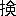

欧羅巴に於ける神話学の研究は、嘗て所謂比較神話学派の勃興せし当時に於て、甚しく隆盛を極めし反動の勢未だ止まずして、現今に於ては、寔に微々として、甚振わざるの観なきに非ず。然れども、これ表面の観察のみ。趣味多面の欧羅巴学界は、決してこの興味ある学科の研究を等閑に附せしには非ず。自然科学万能主義の時代は既に去りて、人文科学の研鑚は、今や旭日東天に昇るの勢を以て、進歩しつつあり。人文科学の一分科としての神話学の研究は、今日に於ても尚、依然として行われつつあり。唯その外観に於て、往日に於けるが如く、人目を惹くことの著しからざるのみ。
翻て、明治の学界に於ける、斯学の研究の状態を見よ。明治の人文科学は、果してその凡ての方面に於て、完全に発達しつつありや。著者は、之に答えて、直ちに然りと答うる能わざるを憾む。人文科学の範囲は、極めて広大なり。その分科として数え得可きもの、亦た実に少からず。然れども、明治の学界は、その各の学科に関して、少くとも若干の専門的著述を有し、各の分科はまた、其研究に従事する専門の学者を有す。独りわが神話学に関しては、二十世紀の今日に及ぶも、未だ之に関する唯一個の著述だも出でず、専らその研究に従事する、一人の学者も之なきは、決して明治学界の名誉たる所以に非らざるべし。
欧羅巴に於ては、神話学の発生は、古代文献学の研究に負う所頗る多し。歴史は屡ば、同じ事を繰返す。日本に於ても亦た、神話学は同様の経路をとりて、発達す可かりしが如し。顧みれば既に十余年以前、日本古代史の研究甚だしく隆盛を極めし当時に於て、神代史研究の必然の結果として、日本神話の研究も亦たまさに、其萌芽を発せんとしつつありしなり。不幸にして、云うに忍びざる或事件の発生によりて、神代史研究の発達に、一頓挫を来せしより、学者亦た再び神代史に就て議論せざるに至り、惜いかな、神話学は遂に発生するに至らずして止みぬ。欧羅巴の文学の研鑚は、古代並びに中世の文化民族の神話の知識を予想するが故に、かの文学の研究の、次第に我国に於て盛なるに従い、かの神話の知識も亦た、聊か普及せしが如く見ゆるも、実際に於ては、この知識を有するものは、少数の熱心なる研究者に止まり、多数の者は殆んど云うに足らず。かの少数者もまた、唯僅かに、泰西の神話の知識を、有するを得たるのみにして、未だその研究に興味を有するに至らず。学者は唯奇禍の其身に及ばんことをのみ恐れて、祖国の神話に関して、全く顧みることなく、之に対して極めて冷淡の態度を取れり。
此の如きこと、殆んど十年の久しきに及べり。
明治三十二年の春に至りて、故高山樗牛の筆に成れる日本神話に関する、一個の小論文、突如として『中央公論』に出でたり。同じ年の夏、姉崎嘲風『帝国文学』紙上に於て、素盞嗚尊の神話を論じて、併せて樗牛の論文を評す。同じ年の冬、嘲風の論文中の一個の問題に関して、著者の手に成れる、一個の論文同じ雑誌に出で、翌年に至りて、之に対する嘲風の弁駁と、これに対する著者の答弁と、同じ紙上に出でたり。此の如きのみ。一般批評家は、之に対して、甚だ冷淡なりき。其後今日に至るまで、『帝国文学』紙上に於て、引続き公にせられたる、神話学上の種々の問題に関する、著者の手に成れる多くの論文を外にしては、五十個月の間、未だ一人の神話学に関して、議論せしものあるを聞かず。されば、心ある少数の者を外にして、一般読書社会が、今日に於ても尚、神話学の何物たるやを解せず、その性質と職掌とに関して、殆ど何等の概念をも有せざるは、蓋し怪しむに足らざるなり。或人著者に問うて曰く、何が故に神話学を研究するや、何の必要ありて、神話に関して、議論するや、神話学は果して如何なる効用ありやと。著者を目して、神話狂となす者は之あり、著者の論文を掲ぐるの故を以て、『帝国文学』を冷笑する者は、之あり。然れども、神話学の何物たるやを知らんと欲する者は、多からざるなり。
此の如きは、到底堪う可からざるなり。
著者は何が故に、神話学を研究するに至りしや。著者自ら之を知らず。其之を知らざるは、何が故に此世に生れ来りしやを、知らざるが如し。著者は唯、神話学の、著者に取りて甚だ興味ある学科たるを知るのみ。世人は稍もすれば、直ちに必要と云い、効用と云う。これ甚だ愚なり。殊に神話学に関してのみ、かく問うに至りては、更に愚なり。歴史は何の必要ありや、文学は何の必要ありや、天文学、地理学、人類学乃至総ての科学は、果して何の必要ありや。抑もまた、必要とは何ぞ。何の必要ありて、宇宙あり、太陽系あり、地球あり、何の必要ありて、人類は存在するや。苟くも人文の存せん限り、人間に知識慾のあらん限り、科学の研究は止ることなかる可し。一個の科学に向て、直ちに其必要を問うことを止めて、先づ、この科学の研究が、総体の科学に対して、何等の貢献を為し得たるや、また為し得るやを問えよ。苟も慎重なる態度を以て、誠心誠意、祖国の人文に貢献せんとの志あらん者は、決して神話学に対して、かくの如く冷淡なること能わざる可し。決して今日の状態に、満足すること能わざる可し。今日の如き状態は、到底久しく忍ぶ可からざるなり、到底久しく堪う可からざるなり。
之を救うの途、果して如何。
神話学に関する一般普通の知識の普及を図り、世人をして、神話学の何物たるやを了解せしめ、神話学の極めて興味ある人文科学の一たることを知得せしめ、この興味ある人文科学が、総体の人文科学に対して、今日まで、幾何の貢献をなし得たるや、また将来に於て、幾何の貢献を為し得る余地と希望とを有するやを知らしむるは、今日の急務なる可し。著者がこの目的を達する方法の一として、神話学に関する一小冊子を公にせんと志せしは、決して今日にはじまりしに非ず。云う能わざる或事情の為に妨げられて、今日に至りしのみ。今や、久しき間待ちに待ちたる時期到来して、著者の希望を実現するを得るに至る。これ豈独り著者の幸福のみならんや。
今度博文館に於て、『帝国百科全書』の続編一百冊を刊行せんと企てたるに際して、著者に嘱して、神話学に関する一書を草せんことを以てす。依りて、嘗て世に公にしたる数篇の論文と、未だ世に公にせざるものとを集めて、幾度も改竄修正を加え、足らざるを補い、誤れるを正し、更に幾分を増加して、この小冊子となしぬ。紙数限りありて、云わんと欲する所のことを、悉く云う能わず。稿なりて、再読するに際して、自ら意に適わざる点の、少からず存するを発見せしも、時日切迫して、更に稿を新にするの暇なし。遂に意を決して、『比較神話学』と題して、之を公にすることとなしつ。若し足らざるところ、正しからざるところは、更に他日を待って、之を訂正補修せんことを期す。
神話学上論ず可き興味ある問題、何ぞ限あらん。僅々三百五十頁のこの小冊子に於て、到底此等の問題を悉く網羅するを得ず。然れども、その重なるものは、論じて多く遺さざりしを信ず。本書の目的は、既に前に云いし如く、神話学に関する一般普通の知識の普及にあり。祖国の人文に対する大なる貢献の如きは、固よりその期する所に非ず。唯この小冊子によりて、かの目的の幾分にても達するを得ば、独り著者の幸福のみに非ざるなり。今日に於て、著者は敢て多きを望まざるなり。豈敢て多きを望まんや。
熊本に於て
明治三十七年十月
［＃改ページ］著者識す
［＃ページの左右中央］
神話学に関して、未だ一個の著書をも有せざる明治の学界に、此冊子を出すに臨みて、
爾の責任は重く、爾の前途は遠し。
爾の先に、未だ爾の行く可き途を行きし者あらず。
焉でか疾く、爾の後に、爾に続く者あるを知らんや。
爾の途は、いと荒れたり。風あらん、波もまた有らん。
さらば吾小冊子よ、幸に健全なれ。
［＃改ページ］爾の先に、未だ爾の行く可き途を行きし者あらず。
焉でか疾く、爾の後に、爾に続く者あるを知らんや。
爾の途は、いと荒れたり。風あらん、波もまた有らん。
さらば吾小冊子よ、幸に健全なれ。
一本書の題号に就ては、茲に一言せざる可からず。「比較神話学」の文字は、聊か語弊あり、稍もすれば、既に廃れたる、旧時の或一派の学説を、聯想せしむの嫌なきに非ず。何れの人文科学に於ても、比較研究の必要なきは、殆んど之なきも、其の必要を感ずることの大なる、神話学の如きは罕なり。十八世紀以前の神話学は、云うに足らず。十九世紀に於て、一個の科学としての神話学の起りしは、起りしは［＃「起りしは」は底本では「起しりは」］比較研究の賜なり。不幸にして、当時の学者は、多くは其の眼界狭少にして、屡ば誤謬の学説を立てたり。シュワルツ、クーンよりマックス、ミュラーに至る系統をば、神話学史上にて、之を「比較神話学」と云う。故に「比較神話学」と云うときは、彼等の誤れる天然神話説もしくは、後者の言語学的神話学説を聯想せしむること多し。此等の学説の根本的誤謬は、既に十分に証明せられたり。されば、ラングの如きは、世人の誤解を避けんが為めに、自己の学説を名づけて［＃「名づけて」は底本では「名けて」］「人類学的神話学」といい、その著作の新しき者に題して、「近世神話学」と云えり。然れども、「比較神話学」の名称の好ましからざるは、決して其名称其ものの、宜しからざるに非ず。未だ神話学に関する一個の著書をも有せざる、明治の学界に於ては、此名称は必しも之を避くるを要せざる可し。著者は敢て、新しき意義に於て、この正しき名称を復活せしめんと欲す。これ著者が、ラングに倣わずして、此書に題して「比較神話学」とせし所以なり。
一、「太陽神話」の名目も亦た、印度日耳曼神話以外に出ずる能わざりし、かの一派の神話学者の立てし者にして、其学説の誤まれる基礎の上に立ちしによりて、かの名目もまた、従て濫用せられたり。神話学史上「太陽神話説」と云うときは、直ちに言語学派の誤れる学説を連想せしむ。印度日耳曼神話学界に於ける、此学説の誤謬は、既に十分に証明せられたり。然れども、学説の誤謬は、必しも名称其ものの正しからざるを、意味するものに非ず。著者は印度日耳曼神話以外に於て、「太陽神話」と名づく［＃「名づく」は底本では「名つく」］可き、数個の神話を発見せしが故に、敢てかの名目を復活せしめ、新しき研究によりて、其必しも排斥す可きに非ざることを証明せんと欲す。これ本書に於て、殊に「太陽神話」の一節を置きし所以なり。
一、本書の体裁に就て、尚一言す可きことあり。本書の目的は、神話学の一般概念と、此学に関する一般の智識とを与えんことを、欲するに在り。此の如き目的は、理論の叙説によりて、達せらるること、甚だ少くして、実例の説明によりて達せらるる場合却て多し。特に、神話学に関する著述に於て、然りとす。本書が第一章総説の部に於て、全紙面の三の一を費したるは、決して著者の本意には非ず。唯、事情止むを得ずして、茲に至りしのみ。未だ神話学に関する一個の著述をも有せざる明治の学界に於て、神話学に就て、一般の智識を与えんと欲す、先ず、神話学とは、如何なる学なるやを、説かざる可からず。其由来と起源とに関して、其歴史の大体に関して、云う所なかる可からず。近世の神話学の勃興以来、日尚浅くして、神話学の学説に関する学者の意見、区々として、未だ一定すること能わず。此の如き状態の下に、本書を公にす、勢い、従来の学説の変遷を叙し、最近のそれに及び、諸説の長短優劣を批較評隲して、将来の方針を示し、以て著者の立脚地を明かにせざる可からず。之が為めに、多大の紙面を費せしは誠に止むを得ざりしに出ず。
一、学説の叙述評隲は、稍もすれば、読者をして厭嫌せしむ。著者は成る可く、此弊を避けんが為めに、個々の条下に、多くの実例を挙げ、学説の叙述と実例の説明と、互に相交替して、単調の弊に陥らざらんことを勉め、成る可く具躰的の智識を与えんことを勉めたり。第一章最後の一節に於ても亦た、同一の方針に従い、方法の叙述に次ぎて、神話の分類名目を掲げ、多く実例によりて、之を説明したり。
一、第二章以下の五章に於ては、比較神話学上の重なる問題にして、必ず日本神話に関係ある者を撰択して之を論じたり。これ決して、著者の好む所に偏せしに非ずして、比較神話上の重大問題の多くは、日本神話に関係を有するによるなり。此の如くして、一般神話学の智識を与うると同時に、日本神話に関しても亦た、多く有益なる智識［＃「智識」は底本では「智誠」］を与えんと欲せしなり。同一の問題に関して、多くの例証を挙ぐる場合に於て、外国の神話よりの例証の簡にして、日本神話よりのそれの、比較的に精なるも、著者の微意の存する所なり。
一、比較神話学上の或問題を論ずるに際して、個々の神話もしくは説話の内容を示さんが為めには、多くの源泉中よりその記事を引用せざる可からず。之が為めに、多くの紙面を費すは、紙数限有ある本書の如きに向ては、決して適当なることには非ず。然れども、これまた実に止むを得ざるなり。欧羅巴の神話学者は、例えば希臘の神話を、論ずるに当りて、個々の神話の大体に関して、読者の智識を予想するを得可く、独逸に於て、日耳曼説話を論ずる者も亦た等しく、其対象たる個々の神話に関して、同じことを予想するを得可し。唯、現今の日本に於ては、事情全く之と異るものあり。普通教育の十数年は、外国の事物に関して、多くの智識を与うることを知るも、祖国の神話に関しては、殆んど何等の智識をも、与うること能わず。読書界の趣味甚だ多面的ならず、神話学に関して、未だ一個の著書なき今日に於て、本書の著者は、かの欧羅巴の神話学者の如く、かの智識を予想すること能わず。一個の問題に逢う毎に、一個の神話種類の現わるる毎に、先ず個々の神話の内容を示さざる可からず。之が為めに、多くの源泉より、その文章を引用せざる可からず。此の如くして、はじめて、説明の筆を採るを得、議論の筆を進むるを得るなり。之が為めに、少からざる紙面を費すは、実に止むを得ざるに出ず。
一、新しき科学は、新しき概念の必要を生じ、新しき概念は、また之を表現せんが為めに、新しき術語を要す。本書に用うる所の、神話学上の用語中には、既に数年以前より、二三の雑誌に於て用いられて、読書界の或部分に知られしもの、固より之無きに非ざるも、其多くは著者の構成に係る。著者は新たに、此等の用語を構成するに際して、意を用いて、可成理解し易からんことを勉めたれば、之が為めに、読者に困難を与うるが如きことは、恐らく之無かる可きを信ず。偶々之あるも、実例と説明とは、容易にこの困難を排除し得可し。
一、印度日耳曼神話学の研究は欧羅巴に於て、最も久しき歴史を有す。其他の文化民族並びに多くの未開民族の神話説話の研究も亦た、少からざる永き歴史を有す。本書は、此等の民族の神話説話に関しては、其材料を悉く欧羅巴の著書に求め、神話学上の問題に関しても亦た、多く欧羅巴の学者の意見を参考したり。参考せし著述の、最重なるものの二三を挙ぐれば、プレルレルの希臘神話学、マクドネルの吠 神話学、ゴルテルの日耳曼神話学、モックの日耳曼神話学、マックス、ミュラー及びラングの神話学的著述、マイエルの比較説話学的論文、ギルの南太平洋神話、バーリング、ゲールトの中世説話の研究、デーンハルトの民間天然科学的説話、ゼーンスの植物説話、フィスクの神話学、ゴールド、チーヘルの希伯来神話、デンニスの支那民間説話等なり。「アイヌ」神話に関しては、チェンバーレン並びにバチェラー二氏の著より、その材料を取れり。日本支那の神話説話に関しては、外国人の研究殆んど云うに足らず［＃「足らず」は底本では「足らす」］。本書中、日本支那の神話説話に関する部分は、凡て著者の創見なり。
神話学、ゴルテルの日耳曼神話学、モックの日耳曼神話学、マックス、ミュラー及びラングの神話学的著述、マイエルの比較説話学的論文、ギルの南太平洋神話、バーリング、ゲールトの中世説話の研究、デーンハルトの民間天然科学的説話、ゼーンスの植物説話、フィスクの神話学、ゴールド、チーヘルの希伯来神話、デンニスの支那民間説話等なり。「アイヌ」神話に関しては、チェンバーレン並びにバチェラー二氏の著より、その材料を取れり。日本支那の神話説話に関しては、外国人の研究殆んど云うに足らず［＃「足らず」は底本では「足らす」］。本書中、日本支那の神話説話に関する部分は、凡て著者の創見なり。
神話学、ゴルテルの日耳曼神話学、モックの日耳曼神話学、マックス、ミュラー及びラングの神話学的著述、マイエルの比較説話学的論文、ギルの南太平洋神話、バーリング、ゲールトの中世説話の研究、デーンハルトの民間天然科学的説話、ゼーンスの植物説話、フィスクの神話学、ゴールド、チーヘルの希伯来神話、デンニスの支那民間説話等なり。「アイヌ」神話に関しては、チェンバーレン並びにバチェラー二氏の著より、その材料を取れり。日本支那の神話説話に関しては、外国人の研究殆んど云うに足らず［＃「足らず」は底本では「足らす」］。本書中、日本支那の神話説話に関する部分は、凡て著者の創見なり。以上
［＃改丁］古代の希臘語に「ミュトス」と云う語あり。普通の解釈に従えば、説話或は伝説の義にして、厳密の意義に於ては、歴史のはじまる以前の時代に起原を有する伝説の謂なり。今日の科語に於ては、「ミュトス」とは一般に一個の神格を中心とする、一個の説話の義にして、之を邦語に翻して神話という。此種の説話をその研究の対象とする一個の科学、これを名づけて「ミュトロギー」と云い、之を邦語に翻して、神話学という。神話学の中にて、特に或国民の神話を、その研究の対象とするものを国民神話学と称し、国民神話学にして、特に古史に見ゆる神話を研究するものを国民古史神話学という。之に反して、弘く数個の民族に亘りてその神話を比較し、研究するを主とする時は、之を名づけて、比較神話学という。神話学に、国民神話学と比較神話学との区別あるは、猶宗教学、言語学等に、同様の区別あるが如し。即ち国民神話学は、文芸科学、歴史科学等と共に、国民文献学の一分科にして古史神話学は、考古学、宗教史学と等しく、国民古代文献学の一分科、比較神話学はまた、比較法制学、比較宗教学と等しく、世界文献学の一分科なり。
狭義に於ける国民神話学は、宗教学的立脚地の上に立つ。
比較神話学に、言語学派と人類学派との区別あり。両派互に長短ありて、言語学派の学説は、既に倒れたるも、その説くところ、必しも悉く棄つ可からざるものあるが如く人類学派の説正しきを得たるも、未だ比較神話学唯一の方法としては、欠如せる所あるを免かれず。完全なる国民神話学は、比較神話学に補助を与うること、非常に大なる可く、その他の文献学的科学も亦た、各多少の貢献を為さざるはなし。
広義に於ける比較神話学の対象は、必しも厳密なる意義に於ての神話、即ち一個の神格を中心とする説話のみには非ず。一個の説話的英雄を中心とするもの、即ち所謂英雄譚の如きも、またその対象たる可く比較神話学の如きも、或場合に於ては、比較神話学の一分科として観察し得可し。形式上神話と名づけらるるものにして、その内容上より之を観察するときは、純粋の説話たるものあり。通常説話として論ぜらるるものも、深く之を研究するときは、全く神話と同一の性質を有することを、発見することあり。一個の説話にして、苟しくも歴史的事実の記述或は叙述に非ざる限り、その形式の如何を問わず、神話と云わず、説話と云わず、口碑伝説、物語、童話の類に至るまで、その或部分に於ては、凡て比較神話学の対象たる可きものとす。
以上は比較神話学の一般の概念なり。更に進んで、その詳細に及ばんと欲するに先だち、少しく神話学の由来に就て述ぶ所ある可し。
古代に於て、神話に就て論じたる者少からざりしも、其説多くは、偏狭にして、取るに足らず。既に希臘の上古に於てオイエメロスあり、またパレフ
 トスあり。後者は唯その名と、少許の遺篇断片とを伝うるのみにして、その年代を詳にするを得ずと雖も、神話に関するその所説の、前者のそれと畧同一なりしことは、その遺篇によりて明かなり。オイエメロスは、紀元前三〇〇年頃の哲学者にして、その神話に関する意見は、その著『聖典』に見ゆ。彼はホメロスの詩篇、ヘシオドスの『神統記』に見ゆる凡ての神々は智勇絶倫の偉人が、その死後国民の尊崇の結果、神として崇拝祭祀せらるるに至りしものに過ぎずして、全部の神話は是等の英雄豪傑の事業の伝説に外ならずと説く。この二人は、共に純歴史派と称す可く、新井白石の日本古史神話に関する意見と殆んど一致す。後世この種の学説を名づけて、「オイエメリスムス」と称す。
トスあり。後者は唯その名と、少許の遺篇断片とを伝うるのみにして、その年代を詳にするを得ずと雖も、神話に関するその所説の、前者のそれと畧同一なりしことは、その遺篇によりて明かなり。オイエメロスは、紀元前三〇〇年頃の哲学者にして、その神話に関する意見は、その著『聖典』に見ゆ。彼はホメロスの詩篇、ヘシオドスの『神統記』に見ゆる凡ての神々は智勇絶倫の偉人が、その死後国民の尊崇の結果、神として崇拝祭祀せらるるに至りしものに過ぎずして、全部の神話は是等の英雄豪傑の事業の伝説に外ならずと説く。この二人は、共に純歴史派と称す可く、新井白石の日本古史神話に関する意見と殆んど一致す。後世この種の学説を名づけて、「オイエメリスムス」と称す。神話学が、始めて一個の科学として、研究せらるるに至りしは、十七八世紀以後に属す。当時一方に於ては、前に述べたる、古代希臘純歴史派と等しく、単に神話の内面の事物的関聯にのみ、重きを置きて、恰かも純粋の歴史に対するが如くに神話の記事を論じたるものあり。一方に於ては、基督教は上帝の啓示にして、世界唯一の真理宗教なり、との前提よりして、或は宗教の萠芽を神話の中に求めんと試みたる者あり、或は宗教の形を変じたるもの、即是神話なりと論じたるものあり。此等の学説、一時は世の注意する所となりしも、要するに、何れも古人の偏見を継承せしに過ぎずして、久しく学界にその位地を保つこと能わざりしき。此の如くにして、十八世紀はその終を告げたり。
十九世紀のはじめに方りて、一個の科学としても神話学の発達に、偉大なる影響を与えしものを、歴史哲学の一派とす。この派は人類の同一祖先説を排して一個の原始民族存在説を取れり。その最初の存在地に就ては、或は印度と云い或は埃及と云い、或は中央亜細亜の高原と云い、諸説一定せずと雖も、何れもその根元地を東方に求むる点に於ては、相一致す。この原始民族は、一個の原始宗教換言すれば、純正なる宗教的認識を有したり。この教僧侶の口により、世界各地の未開民族の間に、弘布せられたり。然れども、是等の民族の人文発達の程度、極めて低くかりし当時に於ては、到底かかる高遠深邃の教義を理解し受容すること能わざりしが故に、僧侶は乃ち譬喩的の方法により、形象的の言語を用い、幾多の説話を作為して、漸くその使命を全うするを得たり。希臘古代の神話は、かくの如くにして、発生したるものなりと。かの「ロマンチィク」派のシュレーゲルの如きゲルレスの如き、シェリ、ンク［＃「シェリ、ンク」はママ］の如き、神話学者としては、何れもこの派に属す。更に他の一方に於ては、神話を目して、天文学、博物学、化学等の如き、一個の成形化学の譬喩的伝承とせしものあり。その傾向頗る、歴史哲学の一派と似たり。
此時代に於て、歴史哲学と相並んで、一般神話学、殊に希臘羅馬神話学の発達を助けしものは、古代文献学即ち言語学なり。神話学を文献学の一分科として或時代の言語に依れる、思想発表の形式として、神話を論じたるもの、クリスチヤンゴットロープ、ハイネを以て第一とす。彼はヘルデルの感化を受けしこと甚多くその所説また聞く可きもの少からずと雖も、希臘国民太古の状態を、叙するに際しては、尚一種の伝説に拘泥するを、免かるること能わざりき。最初の希臘国民が、尚穴居の状態を距ること甚遠からざりし時代に於て、カドモス、ダナオス、ケクロップス等、標象的説話的の言語を以て、彼等に原始宗教の智識を伝えしを、後に至りて、ホメロスとヘシオドスと、之を神と人との叙事詩篇に作為したるなりと。ハイネがこの伝説を排する能わざりしは、偏見たるを免れざるも、その整然たる材料の排列と、秩序ある分類とは、神話学に、一個の科学としての、独立の位置を与うるに十分なりき。ハイネの門下より出でて、標象論の見地よりして、一個の神話学説を組織せしものをエロイツェルとす。エロイツェルの標象論に反対せしものに、フォスあり。ロベックあり。これに継でゴットフリード、ヘルマン出でて、また神話は僧侶の作為したる譬喩的説話にして、国民と詩人とは、此説話を文字のままに理解したり、故に神話の真正の意義を発見せんが為には語源論的研鑚の方法によりて、神話的名称の意義を尋ねざる可からず、との説を述べたり。之に次でゴットフリート、ミュルレル出づ。彼は総ての希臘古代の人文は、自らその国土に発生し発達せしものにして、他より移植せられたるものに非ず、との原理を確立し、この原理に基きて、神話の国民的発生説を唱え、その内容を組織的に論述し、進んで神話形成時代の存在説に到達したり。この時代に於ては、希臘国民の人文発達の内面の必然的結果として、神話はその思想発表の自然の形式なりしと。もし比較神話学説の発生を境界として、神話学史を新旧の二期に分つときは、ミュルレルの説は、旧時代の最進歩したる者と称するを得可し。
此の如くにして旧時代は、未だ大に見るに足る可きものを、示すこと能わずして終れり。尚この時代の末期に於て、近世哲学及び神学の方面より、神話を論じたる一派ありしも、別に著しき成功のありしを見ず。但し神話学が、一個の科学として、学問界に認識せらるるに至りしは、决して軽視す可からざる、此時代の成功にして、次の時代に於て、比較神話学説の発生と共に、神話学の研究俄然として勃興し、幾多の論戦を経て、遂に文献学の一分科として、鞏固なる独立の地位を、得るに至りしもの、そが準備時代として、此時代に負う所多し。
何れの文献学に於ても然るが如く比較神話学に関しても、また種々の学説あり。此等の学説の何れが、真に夫れ自身に於て正しや、また之を個々の場合に応用するに方りては、その各は、幾何の程度まで、その効力を保ち得るや、その何れが、最も適当なりとして、採用す可きや、これ决して容易なる問題には非ず。比較神話学説の発生して、神話学の一個の科学としての発達に大なる催進を与えてより、欧羅巴の神話学界は俄に活気を呈し、今日まで、学者のこの学に関して、言説をなせしもの甚だ多く、その著書もまた、啻に汗牛充棟のみならず。其間種々の学説或は起り、或は仆れ、甲論し乙駁して今日に至れり。一般に神話学説と云うも、其中には、神話の起原に関するものあり、神話の解釈に関するものあり、またその研究の方法に関するものあり。此等の学説を、比較検覈して、勉めて公平着実の眼を以て、その何れを取り、何れを捨つ可きや、甲の説は何れの程度まで参酌す可きや、乙の論は如何なる点に於て、不適当なるやを、判別するを要す。比較神話学説に数派の区別あり。国民神話学が、比較神話学と相関係する点に於て、後者は决して、前者の学説を度外視するを得ず。比較神話学説発生以後の神話学界の波瀾起伏の精細は、神話学史に譲り、この節に於ては、次の表に従って、学説の叙説評隲を試み、次の節に於て、比較神話学の方法に論拠す可し。
比較神話学説諸派
イ、神話起原説及比較神話学附言語の形式と説話の発達
ロ、人類学的神話学附比較神話学
ハ、神話伝播説
ロ、人類学的神話学附比較神話学
ハ、神話伝播説
国民神話学説
イ、宗教学的神話学説附植物説話
比較神話学の祖として見る可きは、クーン及びシュワルツの二人にして、十九世紀の半、此二人の神話学界に現われしと共に、神話学研究の新時期ははじまれり。シュワルツは、一八四九年より一八八五年に至る間に、種々の著作を公にして、一方に於ては、民間説話と述作神話との関係を、定めんと勉め、他の一方に於ては民間伝説の起原を、天然現象の中に、求めんと試みたり。
シュワルツは、神話を分って、低級神話と高級神話の二となせり。低級神話とは、高級神話の未だ発達せざる、最初の状態にして、既に十分発達したるもの、即ち高級神話の中に存ずる、諸の神格と諸の精霊との原始の形式は、今日尚活ける民間の説話界に求む可く、或場合に於ては、かの神格と精霊とに関する、信仰の形跡は、遼遠なる古代の記録中に、之を発見し得ることあるも、其原始の形式は、等しく今日の民間説話の中に、また之を発見するを得可く、高級神話の原始の萠芽と基礎とは、独り民間説話に於て、之を求め得可し。シュワルツは此学説を立てて、世界各地の未開民族の間に於ても、また同一の現象を発見し得可く、風習、宗教及び神話の発達は、同様の経過を示すものなることを証せんが為めに、人類学者ワイツと共に、人種学的人類学的の研究を試みたり。後バスチャン、タイロル等この研究事業を継承して、大に之を拡張せり。この派の学説に従えば、今日に於て既に開化せる民族の精神的状態が、太古より今日に至るまでに、漸次経過し来りたる、凡ての発展の階級と形式とは、現今の未開民族の間に、之を発見するを得可し。従て是等未開民族の研究は、人類開花の最始の状態に就て、大なる光を与うるに足る。一般に凡ての民族を通じて、宗教信仰の最初の階級は、同一なればなり。この説は或点に於ては、勿論取る可きところなきに非ざるも、凡ての民間説話を天然現象によりて、説明せんと勉むるの極、劃一に失し、極端に流れ、任意に伝説を解釈し、妄りに偏見を持し、強て単一起原説を立てたるは、大なる誤謬と云わざるを得ず。凡ての神話をば、風雲驟雨によりて、解釈せんと試みたるシュワルツの企図は、遂に失敗に帰せざるる得ざりき。神話学史上、この学説を称して、「天然神話説」或は、「驟雨神話説」と云うなり。低級神話と高級神話との説、もとより大に宜し。然れども両者の関係を、余りに器械的に限定して、如何なる高級神話も凡て今日の低級神話中に、その萠芽を有せざる可からずとの結論を生じたるの極、遂に明白なる事実と撞着するに至りしは、この学説の最大欠点と云わざるを得ず。神話の内容は、千殊万別なり、一個の神話にして、種々の成分を含有するものあり。多くの神話の中には、天然的解釈を試み得可きもの、勿論之ある可く、全躰に於て天然的解釈を施し難き一個の神話にして、その或部分に於て、或はその或一面に於て天然的解釈を施し得可きもの、亦决して少からず。唯凡ての神話を、天然神話とし凡ての神話を驟雨神話として、解釈せんと欲することの、宜しからざるのみ。所謂天然神話説或は驟雨神話説は、この故に其根本に於て、全然誤謬なるも、その部分に於て、少からざる真理を含む。
次に説く言語学的比較神話学説に就ても、略同様の評を下し得可し。神話学史に於て、「比較神話学」と称するは、通常この学説を指すものと知る可し。印度民族最古の詩篇『吠
』の神話は、原始日耳曼神話を距ること、甚だ遠からざるが如く、同時に、神話の天然起原説を証明するに於て、好個の材料を提供するが如くなるを見るや、クーンは『吠』を根拠として、一個の比較神話学説を組織し、多くの論文に於て、その節を公にしたり。クーンと共に、此学説の確立に勉めし者を、マックス、ミュラーとす。比較神話学は、比較言語学の研究の結果をば、直ちに古代宗教学並びに神話学の範囲に輸入せんと試みしものにして、出来得る限り多くの神名を、希臘神話と吠神話との中より求め、之を比較考察し、その最古最初の形式を尋ねて、之を印度日耳曼全民族圏に通ずる、最初の神名なりと結論す。而してその結果は、印度日耳曼民族の、最初の神話と文化とに関して、許す可からざる誤謬に陥りしと少からず。此の如くにして、最も慎重の態度を取ると称して現われし、言語学的神話学説は、後に至りて、全然失敗するに至れり。神話学は一個独立の学科、言語学は要するに、神話学に対して、一個の補助学科たるのみ。言語学的比較神話学説の設立者が、却てその位置を転倒して、神話学をして、言語学の一分科たるが如き位置を、取らしむるに至りしは、燦然として光彩眼を奪う、『吠』讃誦の美に眩惑せられしに由る。これその根本的誤謬の一なり。神名に関する語源的解釈は、この学説の根拠とせしところ、而して今日に於て、嘗て比較神話学者の発見したる、神名の「比較式」中、十分に信を措くに足るもの、殆んど幾何もなし。その根拠すでに此の如し、印度日耳曼神話学に関する此派の研究の結果にして、今日尚効力を有するもの、恐らく十の一に過ぎず。比較神話学説は、かくの如くして、以前の標象論と略同一の運命に陥りたり。『吠
』の神話は、印度日耳曼神話の純粋なる代表者には非ざるなり。その神統論は、「アリヤ」民族原始の形式を示すものに非ざるなり。従て吠神話の内容は、他の印度日耳曼民族の神話を、論ずるに際して、毫も絶対的標準とするに、足る可からず。而るにクーンとマックス、ミュラーとは、吠神話の解釈をば、直ちに凡ての他の神話に、応用せんと試みたり、これその誤なり。何となれば、何れの神話に於ても、多少然るが如く、吠神話は独りその四囲の事情によりてのみ、説明し得可きものなればなり。但し大躰より観察するときは、吠神話は、天然現象と相関すること、最も深きが故に、之を以て、直ちに天然の観察より、生じたるものなりと感ぜしむることあり。是に於いて、クーンは一個の天然標象論を立て、凡ての神話を暴風神話として解釈せんとし、マックス、ミュラーは他の一面に馳せて、一個の太陽神話論を立てたり。日出より日没に至るまでの、太陽を中心とする天然現象によりて、凡ての神話を解釈せんとするなり。神話学史に於て、「暴風神話」と云い、「太陽神話」と云うは、極端なる此二人の学説を指すなり。此の二説が、その根本に於て、全く誤謬なるも、その部分に於て、幾分の真理を含むことは、シュワルツの驟雨神話説の場合と同じ。マックス、ミュラーは、吠
神話の起原に関する、その所謂太陽神話説を証明せんが為めに、言語学上一個の説を立てたり。之を名づけて「言語疾病説」と云う。その説によれば気象的の天然現象に関して、用いられし普通名詞は、時の経過するに従って、次第に意義の不明を生じ、はじめには人格化し、終りには神格化して、神の名称を生ずるに至る。例えば「天、雨を降らし、光り、「鳴る」と云う一個の説話に於て「天」なる名詞、次第にその原始の意義を失い、遂に人格化し、神格化して、天然現象の管理者、人格的の天神となり、「天」と云う神、雨を降らし、光り、嗚るとの説話と変ずるが如し。言諸は比較、譬喩に基くものなり。而るに、この比較と、この譬喩と、国民の意識中より退くときは、遂に変じて神話となる。かくの如くして、「太陽曙光を逐う」と云いしより、「日神曙の女神を逐う」との神話を生じ、「太陽没す」と云いしより『日神死す』との神話を生じ、「夜の懐より太陽上る」と云いしより、「夜の神太陽神を生む」との神話を生ず。詩的言語は、屡ば相類似する二個の物躰を、名づくるに際して、其一個の名称のみを、用うることあり。はじめは、「日光は の如し、指の如し、手の如し」と云い、「赤色の牛は、朝の赤雲、夕の赤雲の如し」と云いしもの、後には「日光はなり」、「赤色の雲は、赤き牛なり」と云ふに至りて、「馬に跨る太陽神」、「薔薇色の指もてる曙光神」「暗黒の悪魔に奪わるるも、毎朝再び放たるる牝牛」等の神話を生ず。かくの如く、マックス、ミュラーは神話形成に対する、言語の勢力をはかること、甚だ過大に失し、暗夜の恐怖を追う光明の諸神は、人間の保護神なりとの信仰は、既に原始の印度日耳曼民族の間に、存じたりと論ずるも、此また一個の想像説に過ぎず。
の如し、指の如し、手の如し」と云い、「赤色の牛は、朝の赤雲、夕の赤雲の如し」と云いしもの、後には「日光はなり」、「赤色の雲は、赤き牛なり」と云ふに至りて、「馬に跨る太陽神」、「薔薇色の指もてる曙光神」「暗黒の悪魔に奪わるるも、毎朝再び放たるる牝牛」等の神話を生ず。かくの如く、マックス、ミュラーは神話形成に対する、言語の勢力をはかること、甚だ過大に失し、暗夜の恐怖を追う光明の諸神は、人間の保護神なりとの信仰は、既に原始の印度日耳曼民族の間に、存じたりと論ずるも、此また一個の想像説に過ぎず。故に、茲に一個の原始の神ありて、多くの属性と、多くの名称とを有するときは、此等の属性と名称とは、悉く各々一個の神となりて現わる。天は輝き、光り、嗚る。此等の名称と性質とは、多くの神話に於て、光明神の側に一個の暴風神を、生ずるに至る可し。是に於て、等しく比較神話学説を奉ずる者の間に於て、神話の解釈に就て、互に其説を異にするの奇観を呈するに至れり。唯神話の本源は、気象的現象なりとの一点に於ては、何れも一致す。其説によれば、吠
神話、即ち一般に印度日耳曼神話の根本思想は、光明神と暗黒の悪魔との争闘、昼と夜との争闘、太陽と暴風雲霧との争いなり。而してこの争いの結果は、常に前者の勝利に帰す。之を要するに、言語学的比較神話学説は、その研究の範囲を独り吠
神話、或は単に印度日耳曼民族の神話に限りて、所謂言語疾病の根本原理より、立論したるものにして、之を直ちに、全く言語を異にする他の民族の神話に、応用す可からざるは勿論、印度日耳曼神話学界に於ても、既にその根拠を失いたる今日に於ては、最早寸毫の価値なきが、如しと雖も、その所説の個々の部分に於て間々参考に資す可きもの無きに非ず。光明神と暗黒神との争闘を以て、神話の根本思想となす如き、その不可なること勿論なるも、暗黒の反対としての光明の神が、嘗て崇拝の対象となりし事は、何れの国民の太古の宗教に於ても、その例を求むることを得可く、既に光明の神あれば、之に対して暗黒の神あるは、甚だ自然の理にして、光明神と暗黒神との争闘の、屡 神話に見ゆるは、决して怪しむに足らざるなり。此神話を以て、直ちに天然現象の神格化して、生じたるものと説くは、多くの場合に於て当らざること多し。唯或場合に於て、天然現象が此神話の形成に与りて、何等かの貢献を有せしこと之なきに非ず。日本神話に見ゆる、天照太神と素盞嗚尊との軋轢の一節の如き、即ち是なり。唯その説明の方法に於て、全く異るのみ。かの如きは天然的解釈と云わんよりも、寧ろ天然的解釈の可能と称す可し。
神話に見ゆるは、决して怪しむに足らざるなり。此神話を以て、直ちに天然現象の神格化して、生じたるものと説くは、多くの場合に於て当らざること多し。唯或場合に於て、天然現象が此神話の形成に与りて、何等かの貢献を有せしこと之なきに非ず。日本神話に見ゆる、天照太神と素盞嗚尊との軋轢の一節の如き、即ち是なり。唯その説明の方法に於て、全く異るのみ。かの如きは天然的解釈と云わんよりも、寧ろ天然的解釈の可能と称す可し。この学説の失敗は、其学説の根本的誤謬に基くものにして、决して之によりて、神話学に与うる言語学の利益を、否定す可きに非ず。神話学を以て、言語学の一分科の如く見る、固より不可なり。神話学の補助学科としての言語学の必要は、唯益増加するあらんのみ。言語疾病説は、全然誤謬なり。但し言語の形式が、神話構成の上に及ほず影響に至りては、决して之を等閑に附するを得ず。
言語の形式と説話の発達とに就て
言語学は、神話学の一個の方便のみ。そが一個の方便たるは、宗教史学、文芸科学其他の人文科学に対して、一個の方便たると、其趣に於て、著しき差異あるを見ず。一般に狭義に於ての国民神話は、国民太古の自然宗教と、表裏の関係を有すること、恰も、或種の国民説話が、普通の民間信仰に於けるが如し。かの宗教とこの信仰と、国民の行為によりて、外に現わるるときは、祭祀となり、犠牲となり、諸種の儀式、典礼、風習となりその国民の言語によりて、表るるときは、則ち変じて神話となり、説話となる。要するに、普通一般の場合に於ては、言語は唯、神話発生の一個の機関たるに止るのみ。
自然宗教と云い、国民信仰と云い、何れも教権の上に建てられたる独断教と、何等の為す所なき点に於ては、等しく一個の国民信仰なりと云う可く、この信仰が、言語の機関によりて、外に表われたるもの、即ち神話なり、また説話なり、と観察するときは、両者は等しく、一個の神話たり、或は一個の説話たり。其内容に重きを置て之を云わば、即ち国民信仰の発表として之を見るときは、両者共に神話と称す可く、その形式に重きを置て之を云わば、即ち一個の物語として之を見るときは、両つの者ともに、説話と名づく可し。其内容は、即ち国民信仰の直接或は間接の発表にして、之を包容する所の形式は、即ち言語文字に外ならず。従って、神話もしくは説話が、国民信仰たる点に於ては、言語と何等の関係をも有せずとするも、其形式に於ては、如何でか言語の影響を蒙らざるを得ん。且つや、文書記録によりて、伝えられたる神話、もしくは口誦伝承の説話に於ては、その内容の了解は、偏に言語文字の媒介によらざるを得ず。言語学が神話研究の上に欠く可からざる理由は此に存す。
国民の言語には生命あり、従て成長し、変化し、発達す。その変化発達の幾多の階級を、経過する途中に於て、意義の変化、限定、拡張並に縮少を来たすことは、既に言語学の認識する所なり。言語の誤解、是に於てか生じ、意義の没失また従て生ず。誤解せられたる言語は、新しき意義を生じ、意義の没失は、所謂民間語源論の発生を促がすに至る。もし此等の現象にして、神話もしくは説話が、縁りて以て発表せられたる言語或は之を伝うる所の文字の上に、屡起ることあらんか、之が為に、その形式の上に、少からざる変化を生ず可きは、必しも説明を要せざるべし。固よりこの変化は、其及ぶところ、単に形式上に止り、その内容上には、何等の影響をも及ぼさざるが如しと雖も、実は大に然らず。内容と形式とは、本来互に相表裏す。両者の間、判然たる区別の存す可きは、勿論なれども、而も内容の了解は、必然的に形式たる言語文字の了解を、預想するが故に、形式の変化は、時としては、直ちに内容の変化を来たすの動機となる。内容の変化は、更に他の思想もしくは宗教的信仰と連結して、新して説話発生の動機とならざるを保す可からず。かくの如く追跡するときは、一個の言語の変化は、その事一見甚だ些細なるが如くにして、其関係するところ、極めて大なるを知る。以上の現象は、独り、神話或は説話が、縁りて以て発表せられたる、之を伝うる、言語文字の上に、起りたる場合に於てのみ、かくの如き結果を生ずるに非ず。普通の言語文字の上に起りたる同様の現象と雖も、もし一度び、国民の思想或は信仰と、或事情によりて、連結するに至るときは、等しく亦た、新しき神話或は説話発生の動機となることあり。甚しきは、此の如くにして生じたる神話或は説話が、同様の神話或は説話と相結合して、反対に国民の思想に影響し、その結果として、更らに新しき国民信仰を喚起し、此の如くして生じたる信仰は、更らに再び説話発生の動機となることあり。国民信仰と国民説話と此の如く絶えず互いに影響して、新しき説話を生ずるが故に、国民神話の無限の宝庫中、殆んど了解し得られざるが如きものの多く存在するは、怪しむに足らず。神話の発生は、独り太古時代にのみ、限らるるに非らずして凡ての時代を通じて、絶えず新しく発生しつつありと云うは此の一面の真理を道破したるなり。
国民固有の信仰も、偶然の事情によりて生じたる、新しき否らざる信仰も民俗の眼中には、殆んど其区別なし。国民固有の宗教思想或は信仰の発表たる、純国民的神話もしくは説話も、言語の変化によりて生じたる新しき純国民的ならざるものも、民俗の眼中に於ても毫も異る所ある可からず。何となれば、内容と形式との判然たる区別をば、両者の変化に拘わらず、常に失わざらんことは、到底民衆の為し能う所に非ざればなり。この故に、説話に多趣多様の変化更新生ず。言語に成長あり、発達あるが如く、説話にもまた等しく発達あり。一個の神話がはじめて生じてより、次第に発達して、一定の形式を取るに至るまでの経過を名づけて、「説話の構成」と云う。一面より之を見るときは、形式の確定なり。言語文字の形式上のこの現象は、説話構成の上に、如何なる影響を与え得るものなりや。此問題の解决は神話学研究の上に、光からざる、光を与うるに足る可きを信ず。
所謂民間語源論は、説話構成の契機として頗る研究の価値あるものなり。「民間語源論」なる科語を、はじめて言語学上に採用せしは、独逸のフェルステマンなり。民間語源論は、唯その語源論なる称呼によりて、普通の語源論と一致するも、その根本に於ては、真正の語源論としては、殆んど何等の価値をも有せざるなり。然れども、その発生の動機は、真の語源論に於けるが如く、等しく人間共通の語源論的需要の中に、存ずるが故に、科学上の真価は、少しも之なしとするも、語学史上の一現象として、言語学者が、その研究を等閑に附する能わざるが如く、神話学者も亦た、説話構成の一契機として、之を看過すること能わざるなり。
民間語源論は、言語の音響を聞きて、其意義を尋ねず。文字の形式を見て、その内容を問わず。意義の知られざる言語に対しては、意義の明かにして、之と発音の類似せる言語を以て、之を説明し、内容の明かならざる文字を見ては、形式の類似を求めて之を解釈せんと欲す。かの説明とこの解釈と、単に一定の時期に止まり、或は一定の部分に限られて、再び其勢力を失わんか、別に著しき影響を生ずることなしと雖も、一度び民衆の意識圏内に浸入して、永遠にその勢力を逞うするに至るときは、其言語上に及ぼす影響の、頗大なるが如く、説話構成の契機としても、亦た軽視す可からざるなり。
説話の構成に、意識的構成と無意識的構成との別あるが如く、民間語源論にもまた、意識的のものと、無意識的のものとの別あり。意識的語源論は、多くは意識的説話構成の契機となり、無意識的語源論は、之に反して、大抵無意識的説話構成の契機となる。但し語源論に関し、並びに説話の構成に関して、茲に述べたる意識的と無意識的との区別は、語源論発生の、当時に見、説話構成の際に考えて、立てたる者にして、要するに説話研究者がその研究の際に、眼中に置く可き、重要の標準たるに過ぎず。民俗の意識中に於ては、本来意識的のものと雖も一度びその意識的のものたること、忘却せらるる時は、無意識のものと、毫も異る所ある可からず。兒島高徳忠勤の歴史は、仮に一説に従って、『太平記』の作者兒島法師が、意識的に作為したる、一個の説話に過ぎずとするも、今日に於ては、歴史研究者の眼中に於てこそ、楠正成忠勤の歴史とは、同様に論ず可くもあらずとも、民俗の眼中には、更に区別する所あらざる可きなり。この点もまた大に注意するを要す。
以上の所説を説明せんが為めに、左の日本神話中より、数個の例を挙げん。
日本国語の特質として、発音類似の語の多きこと、之れ民間語源論発生の、第一に数う可き、重なる原因にして、その第二の原因は、漢字使用と、漢字借用とに在り。或時は漢字の意義に従て、そのままに之を使用し、或ときは単にその音を取りて、一種の符号の如くに、之を借用し、甚しきに至りては、漢字本来の音と訓と意義とを外にして、殆んど謎語的に之を用いし場合少からず。此の如き種々の用法、互に相錯雑混淆し、その結果として、他国民の言語史上に、殆んどその例を見出し得ざる、甚しき意義の不明を来たし、無意識的語源論の発達を、盛に催進したるのみならず、意識的語源論の発生にも、夥多の材料を供給するに至れり。諸国の風土記に見ゆる、地名の起原に関する、無数の説話と伝説とは、この点に関して、好個の例証たるを得可し。これ等の説話中には、説明説話義あり、民間地名学あり。その説話構成の契機は、凡ての場合に於て、厳密なる意に於て之れを云うときは、悉く民間語源論として観察すること、或はその当を得ざるが如きもの無きに非ずと雖も、要するに言語の形式が、その契機たるに於ては即ち一なり。その或ものは、之を准民間語源論と称するを得ん。然れども、民間語源論の文字を、最広義に解して、その中に凡てを包括するの、極めて便利なるを見る。
自然宗教と云い、国民信仰と云い、何れも教権の上に建てられたる独断教と、何等の為す所なき点に於ては、等しく一個の国民信仰なりと云う可く、この信仰が、言語の機関によりて、外に表われたるもの、即ち神話なり、また説話なり、と観察するときは、両者は等しく、一個の神話たり、或は一個の説話たり。其内容に重きを置て之を云わば、即ち国民信仰の発表として之を見るときは、両者共に神話と称す可く、その形式に重きを置て之を云わば、即ち一個の物語として之を見るときは、両つの者ともに、説話と名づく可し。其内容は、即ち国民信仰の直接或は間接の発表にして、之を包容する所の形式は、即ち言語文字に外ならず。従って、神話もしくは説話が、国民信仰たる点に於ては、言語と何等の関係をも有せずとするも、其形式に於ては、如何でか言語の影響を蒙らざるを得ん。且つや、文書記録によりて、伝えられたる神話、もしくは口誦伝承の説話に於ては、その内容の了解は、偏に言語文字の媒介によらざるを得ず。言語学が神話研究の上に欠く可からざる理由は此に存す。
国民の言語には生命あり、従て成長し、変化し、発達す。その変化発達の幾多の階級を、経過する途中に於て、意義の変化、限定、拡張並に縮少を来たすことは、既に言語学の認識する所なり。言語の誤解、是に於てか生じ、意義の没失また従て生ず。誤解せられたる言語は、新しき意義を生じ、意義の没失は、所謂民間語源論の発生を促がすに至る。もし此等の現象にして、神話もしくは説話が、縁りて以て発表せられたる言語或は之を伝うる所の文字の上に、屡
起ることあらんか、之が為に、その形式の上に、少からざる変化を生ず可きは、必しも説明を要せざるべし。固よりこの変化は、其及ぶところ、単に形式上に止り、その内容上には、何等の影響をも及ぼさざるが如しと雖も、実は大に然らず。内容と形式とは、本来互に相表裏す。両者の間、判然たる区別の存す可きは、勿論なれども、而も内容の了解は、必然的に形式たる言語文字の了解を、預想するが故に、形式の変化は、時としては、直ちに内容の変化を来たすの動機となる。内容の変化は、更に他の思想もしくは宗教的信仰と連結して、新して説話発生の動機とならざるを保す可からず。かくの如く追跡するときは、一個の言語の変化は、その事一見甚だ些細なるが如くにして、其関係するところ、極めて大なるを知る。以上の現象は、独り、神話或は説話が、縁りて以て発表せられたる、之を伝うる、言語文字の上に、起りたる場合に於てのみ、かくの如き結果を生ずるに非ず。普通の言語文字の上に起りたる同様の現象と雖も、もし一度び、国民の思想或は信仰と、或事情によりて、連結するに至るときは、等しく亦た、新しき神話或は説話発生の動機となることあり。甚しきは、此の如くにして生じたる神話或は説話が、同様の神話或は説話と相結合して、反対に国民の思想に影響し、その結果として、更らに新しき国民信仰を喚起し、此の如くして生じたる信仰は、更らに再び説話発生の動機となることあり。国民信仰と国民説話と此の如く絶えず互いに影響して、新しき説話を生ずるが故に、国民神話の無限の宝庫中、殆んど了解し得られざるが如きものの多く存在するは、怪しむに足らず。神話の発生は、独り太古時代にのみ、限らるるに非らずして凡ての時代を通じて、絶えず新しく発生しつつありと云うは此の一面の真理を道破したるなり。国民固有の信仰も、偶然の事情によりて生じたる、新しき否らざる信仰も民俗の眼中には、殆んど其区別なし。国民固有の宗教思想或は信仰の発表たる、純国民的神話もしくは説話も、言語の変化によりて生じたる新しき純国民的ならざるものも、民俗の眼中に於ても毫も異る所ある可からず。何となれば、内容と形式との判然たる区別をば、両者の変化に拘わらず、常に失わざらんことは、到底民衆の為し能う所に非ざればなり。この故に、説話に多趣多様の変化更新生ず。言語に成長あり、発達あるが如く、説話にもまた等しく発達あり。一個の神話がはじめて生じてより、次第に発達して、一定の形式を取るに至るまでの経過を名づけて、「説話の構成」と云う。一面より之を見るときは、形式の確定なり。言語文字の形式上のこの現象は、説話構成の上に、如何なる影響を与え得るものなりや。此問題の解决は神話学研究の上に、光からざる、光を与うるに足る可きを信ず。
所謂民間語源論は、説話構成の契機として頗る研究の価値あるものなり。「民間語源論」なる科語を、はじめて言語学上に採用せしは、独逸のフェルステマンなり。民間語源論は、唯その語源論なる称呼によりて、普通の語源論と一致するも、その根本に於ては、真正の語源論としては、殆んど何等の価値をも有せざるなり。然れども、その発生の動機は、真の語源論に於けるが如く、等しく人間共通の語源論的需要の中に、存ずるが故に、科学上の真価は、少しも之なしとするも、語学史上の一現象として、言語学者が、その研究を等閑に附する能わざるが如く、神話学者も亦た、説話構成の一契機として、之を看過すること能わざるなり。
民間語源論は、言語の音響を聞きて、其意義を尋ねず。文字の形式を見て、その内容を問わず。意義の知られざる言語に対しては、意義の明かにして、之と発音の類似せる言語を以て、之を説明し、内容の明かならざる文字を見ては、形式の類似を求めて之を解釈せんと欲す。かの説明とこの解釈と、単に一定の時期に止まり、或は一定の部分に限られて、再び其勢力を失わんか、別に著しき影響を生ずることなしと雖も、一度び民衆の意識圏内に浸入して、永遠にその勢力を逞うするに至るときは、其言語上に及ぼす影響の、頗大なるが如く、説話構成の契機としても、亦た軽視す可からざるなり。
説話の構成に、意識的構成と無意識的構成との別あるが如く、民間語源論にもまた、意識的のものと、無意識的のものとの別あり。意識的語源論は、多くは意識的説話構成の契機となり、無意識的語源論は、之に反して、大抵無意識的説話構成の契機となる。但し語源論に関し、並びに説話の構成に関して、茲に述べたる意識的と無意識的との区別は、語源論発生の、当時に見、説話構成の際に考えて、立てたる者にして、要するに説話研究者がその研究の際に、眼中に置く可き、重要の標準たるに過ぎず。民俗の意識中に於ては、本来意識的のものと雖も一度びその意識的のものたること、忘却せらるる時は、無意識のものと、毫も異る所ある可からず。兒島高徳忠勤の歴史は、仮に一説に従って、『太平記』の作者兒島法師が、意識的に作為したる、一個の説話に過ぎずとするも、今日に於ては、歴史研究者の眼中に於てこそ、楠正成忠勤の歴史とは、同様に論ず可くもあらずとも、民俗の眼中には、更に区別する所あらざる可きなり。この点もまた大に注意するを要す。
以上の所説を説明せんが為めに、左の日本神話中より、数個の例を挙げん。
日本国語の特質として、発音類似の語の多きこと、之れ民間語源論発生の、第一に数う可き、重なる原因にして、その第二の原因は、漢字使用と、漢字借用とに在り。或時は漢字の意義に従て、そのままに之を使用し、或ときは単にその音を取りて、一種の符号の如くに、之を借用し、甚しきに至りては、漢字本来の音と訓と意義とを外にして、殆んど謎語的に之を用いし場合少からず。此の如き種々の用法、互に相錯雑混淆し、その結果として、他国民の言語史上に、殆んどその例を見出し得ざる、甚しき意義の不明を来たし、無意識的語源論の発達を、盛に催進したるのみならず、意識的語源論の発生にも、夥多の材料を供給するに至れり。諸国の風土記に見ゆる、地名の起原に関する、無数の説話と伝説とは、この点に関して、好個の例証たるを得可し。これ等の説話中には、説明説話義あり、民間地名学あり。その説話構成の契機は、凡ての場合に於て、厳密なる意に於て之れを云うときは、悉く民間語源論として観察すること、或はその当を得ざるが如きもの無きに非ずと雖も、要するに言語の形式が、その契機たるに於ては即ち一なり。その或ものは、之を准民間語源論と称するを得ん。然れども、民間語源論の文字を、最広義に解して、その中に凡てを包括するの、極めて便利なるを見る。
例七個条
イ、富士山
富士山に関しては、不死の霊薬を山上に焼きしとのこと、『竹取物語』に見ゆ。山名の意義は「不死」にもあらず、また「不二」にも非ず。不死の霊薬のことは、文那神仙説に見ゆ。唯この説話が、我国の名山富士に結合して、此形式を取るに至りしは、「不死」と「富士」との国音の類似、即ち一個の意識的語原論に外ならざるざり。この説話は『竹取物語』、『富士山縁起』その他を経て、謡曲『富士山』に至って、次の形式を取る。
富士山に関しては、不死の霊薬を山上に焼きしとのこと、『竹取物語』に見ゆ。山名の意義は「不死」にもあらず、また「不二」にも非ず。不死の霊薬のことは、文那神仙説に見ゆ。唯この説話が、我国の名山富士に結合して、此形式を取るに至りしは、「不死」と「富士」との国音の類似、即ち一個の意識的語原論に外ならざるざり。この説話は『竹取物語』、『富士山縁起』その他を経て、謡曲『富士山』に至って、次の形式を取る。
昔し鶯の卵化して、少女と成しを、時の帝の皇女に召されしを、時至りたるか、天にあがり給いし時、かたみの鏡に、不死の霊薬を添えて、置き給いしを、後日に富士の岳にして、その薬を焼きしより、富士の煙は立ちしなり。皇女に備わりて、鏡に不死の薬を添えつつ、別るる天の羽衣の雲路に立ち帰って、神となり給えり。帝その後、かくや姫の教えに随って、富士の高嶺の上にして、不死の薬を焼き給えば、煙は万天に立ち登って、雲霞凰に薫じつつ、日月星宿もさながら、あらぬ光りをなすとかや。
ロ、姨捨山
姨捨を訓して「オバステ」と読むも、その意義は恐らく、「姨を捨つる」の謂にあらず。或は云う、「オハツセ」転訛して「オバステ」となれりと、その果して正しきや否やを知らず。但し我国古来、老病者遺棄の忌む可き風習の存ぜしことは、明かに正史の証する所なり。「姨捨」の、文字が、この風習の存在の記臆と［＃「記臆と」はママ］結合して、彼山に老病者を棄てしとの説話を生じ、之によりて山名の起原を説明するに至りしなり。かくの如き者を称して、「民間地名学」と云う。
ハ、美和山或は三輪山と神河
山名の「三」は盖し御の義なり。唯之を数字として解釈せし結果、大物主 ノ神の神婚神話の末節の構成の契機となりしのみ。次に引用せし二個条の中、はじめの者は、『古事記』崇神天皇の条に見え、後のものは、『万葉注釈』に出づ。
姨捨を訓して「オバステ」と読むも、その意義は恐らく、「姨を捨つる」の謂にあらず。或は云う、「オハツセ」転訛して「オバステ」となれりと、その果して正しきや否やを知らず。但し我国古来、老病者遺棄の忌む可き風習の存ぜしことは、明かに正史の証する所なり。「姨捨」の、文字が、この風習の存在の記臆と［＃「記臆と」はママ］結合して、彼山に老病者を棄てしとの説話を生じ、之によりて山名の起原を説明するに至りしなり。かくの如き者を称して、「民間地名学」と云う。
ハ、美和山或は三輪山と神河
山名の「三」は盖し御の義なり。唯之を数字として解釈せし結果、
此意富多多泥古 と謂人を、神の子と知る所以は、上にいえる活玉依毘売其容姿 よかりき。是に神壮夫 ありて、その形姿威儀時に比なきが、夜半の時に倏忽に来つ。故 相感 て共婚供住の間に、幾時もあらねば、其美人妊身ぬ。爾に父母其妊める事を怪みて、其女に汝は自ら妊めり、夫なきに、何由にしてかも妊めると問えば答えて曰く、麗しき壮夫の、其姓名も知らぬが、毎夕に来て住める間に、自ら懐妊ぬという。是を以て其父母、其人を知らまく欲て、其女に誨えつらくは、赤土を床前に散らし、閇蘇 紡麻を針に貫て、其衣の※［＃「ころもへん＋（くさかんむり／闌）」、U+897D、29-2］に刺とをしう。故レ教えし如して、且時に見れば針著たりし麻は、戸の鉤穴より控通り出て、唯遺れる麻は三勾 のみなりき。爾即鉤穴より出し状を知て、糸のまにまに尋行しかば、美和山に至りて、神の社に留りにき。故其麻の三勾遺れるに因てなも、其地を美和とは謂ける。
土佐国風土記云、神河訓二三輪河一云々、多氏古事記曰、崇神天皇之世、倭迹迹媛皇女、為二大三輪大神婦一毎夜有二一壮士一、密来暁去、皇女思レ奇、以二綜麻一貫レ針、及二壮士之暁出一也、以レ針貫レ襴、及レ旦看レ之、唯有二三輪遺一レ器、故時人称為二三輪村一、社名亦然、
土佐国風土記云、神河訓二三輪河一云々、多氏古事記曰、崇神天皇之世、倭迹迹媛皇女、為二大三輪大神婦一毎夜有二一壮士一、密来暁去、皇女思レ奇、以二綜麻一貫レ針、及二壮士之暁出一也、以レ針貫レ襴、及レ旦看レ之、唯有二三輪遺一レ器、故時人称為二三輪村一、社名亦然、
ニ、女郎花
日本古代の美しき植物神話の一つに曰く、小野頼風の妻化して女郎花となると、或は入水せし女の脱ぎ棄てし衣朽ちて、女郎花生え出でたりと云い、或はまた、その塚よりとも伝う。支那にては、娥皇女英の涙、紫竹を生じ、虞美人の魂一夜剱光と共に飛び、青血化して原上の草となる。所謂「虞美人草」即ち之なり。女性の霊魂と草花との関係は、さることながら、女郎花の「女」の文字がこの説話構成の一契機たりしことは、疑う可からず。
ホ、不忍池
池の名は「シノバズ」なり。『望海毎談』にその起原を説明して曰く、忍岡の東に関野喜内と云者あり、向が岡に隅田治部と云者あり。隅田が娘の柳の前と云もの、関野が子の感応丸と互に契り、毎夜感応丸忍び出でて、池中に渡したる橋を渡りて、相遇いしことを、娘の母は継母なりしが、之を憎みて、一夜橋の板を放ち置く。感応丸池中に溺れて死し、柳の前も之を覚りて諸共に飛び入りて死す。この説話はその内容に於ても、形式に於ても、所謂船橋説話と同一なり。加之希臘古代の「ヘロ、レアンデル」説話と比較するに、秘密なる交りと云い、男の方より渡り来ると云い、男先ず死して女後につづく、と云う点に於て全く一致す。之を目して暗合とす可きか、伝播とす可きか、姑く別個の問題として、「忍」の文字が、此説話の不忍池に附着するに至りし契機たることは、疑う可からず。
ヘ、稲荷大明神
野狐を稲荷の神使と称し、遂に下りて民間に於ては、野狐その者を、稲荷の神として、尊崇するに至りしことも、其本原を尋ぬるときは、一種の民間語源論と、動物に関する一個の民間信仰と結合して、ここに至りしこと、『茅窓漫録』の著書の、既に論せしが如し。稲荷は「稲生 」の義にして、神代紀に保食 ノ神の腹中に稲を生ず、とあるに依て明なり。然るに後の書に素盞嗚尊 の子、宇賀之御魂 ノ神、亦の名は専名三狐神 とあり。三狐は借字にして、其訓は盖し御食津 なり。或は御饌津と書し、或は御気と書す。但「狐」の文字をば、其儘に野狐なりと解釈して、意識的或は無意識的に、野狐を以て直ちに稲荷の神使となすに至りしは、三狐の義が饌なるを知らず、文字の形式を見て、其真義を尋ねざりしが故なり。
ト、山岳天上起原説
日本古代の山岳説話の中にて、特別なる一種の説話あり、名づけて山岳の天山起源説と云う。『万葉集』に見ゆる歌の冠詞の中に、「あもりつく」あり。あもりつくは即ち天降り著くにして、天より降りて地に著くの義なりと解釈せらる。この冠詞を取る山名中にて、最も著しきものは、天之香山 にして、「天降付 天之香山」、或は「天降就神乃香山 」などの句、甚だ多し。「あめの」は、日本神話に於て、最も多く用いらるる形容詞或は附加言にして、要するに、地上界に対する天上界、人間界に対する諸神界、その中に坐ます諸神、その附属物、その他の万事万物を、尊厳にし、神聖にせんが為めの、一個の形容言、一個の修辞的附加言たるに過ぎず。天之何々之神と云い、天之安河と云い、天之岩戸と云い、天の香山と云い、天の堅石、天の金山、天の波士弓、天の加久矢、天の詔琴、天の逆手、天の石樟船、天の八十毘良迦など、その例殆んど牧挙に遑あらざるも、其意義に於ては、異ることなく、何れも一個の附加言にして、决して事物の起原、或はその存在の場所を、示すものに非ず。日本神話の神山、天之香山と、大和国なる一個の山とが、其名称に於て、一致するは、神話中の名称が、実際の山名に変じたるか、或は反対に山名が神話に入りたるか、明かに判断し難しと雖も、かの附加言をば、山の起原を示すものと解釈せし結果、一個の天上起原説を生じたるにて、その動機は、両個の山名の一致に外ならず。
如何なる民族も、そのはじめに於て、天上界の存在を信ぜざるはなし。既にその存在を信ず、従て天上界と地上界の連絡、交通、接触等に関して、物語るに至る。或は神の天より降りたりと云い、或は人間の天上より移り来りしと説き、或はまた珍異奇物財宝等の、天より隆りしと伝うるに至る。山岳の天上起原説も、この点より説明し得可からざるに非ざるも、独り日本神話のこの種の説話に至りては、凡て天之香山より生じたるものにして、『神代口訣』に見ゆるものも、『釈日本記』に見ゆるものも、『仙覚万集鈔』に見ゆるものも、凡て一個の系統に属すること、次に挙ぐる本文によりて、明かに之を知るを得可し。美濃の喪山 に就ても、また同様の説明法を適用す可し。
日本古代の美しき植物神話の一つに曰く、小野頼風の妻化して女郎花となると、或は入水せし女の脱ぎ棄てし衣朽ちて、女郎花生え出でたりと云い、或はまた、その塚よりとも伝う。支那にては、娥皇女英の涙、紫竹を生じ、虞美人の魂一夜剱光と共に飛び、青血化して原上の草となる。所謂「虞美人草」即ち之なり。女性の霊魂と草花との関係は、さることながら、女郎花の「女」の文字がこの説話構成の一契機たりしことは、疑う可からず。
ホ、不忍池
池の名は「シノバズ」なり。『望海毎談』にその起原を説明して曰く、忍岡の東に関野喜内と云者あり、向が岡に隅田治部と云者あり。隅田が娘の柳の前と云もの、関野が子の感応丸と互に契り、毎夜感応丸忍び出でて、池中に渡したる橋を渡りて、相遇いしことを、娘の母は継母なりしが、之を憎みて、一夜橋の板を放ち置く。感応丸池中に溺れて死し、柳の前も之を覚りて諸共に飛び入りて死す。この説話はその内容に於ても、形式に於ても、所謂船橋説話と同一なり。加之希臘古代の「ヘロ、レアンデル」説話と比較するに、秘密なる交りと云い、男の方より渡り来ると云い、男先ず死して女後につづく、と云う点に於て全く一致す。之を目して暗合とす可きか、伝播とす可きか、姑く別個の問題として、「忍」の文字が、此説話の不忍池に附着するに至りし契機たることは、疑う可からず。
ヘ、稲荷大明神
野狐を稲荷の神使と称し、遂に下りて民間に於ては、野狐その者を、稲荷の神として、尊崇するに至りしことも、其本原を尋ぬるときは、一種の民間語源論と、動物に関する一個の民間信仰と結合して、ここに至りしこと、『茅窓漫録』の著書の、既に論せしが如し。稲荷は「
ト、山岳天上起原説
日本古代の山岳説話の中にて、特別なる一種の説話あり、名づけて山岳の天山起源説と云う。『万葉集』に見ゆる歌の冠詞の中に、「あもりつく」あり。あもりつくは即ち天降り著くにして、天より降りて地に著くの義なりと解釈せらる。この冠詞を取る山名中にて、最も著しきものは、
如何なる民族も、そのはじめに於て、天上界の存在を信ぜざるはなし。既にその存在を信ず、従て天上界と地上界の連絡、交通、接触等に関して、物語るに至る。或は神の天より降りたりと云い、或は人間の天上より移り来りしと説き、或はまた珍異奇物財宝等の、天より隆りしと伝うるに至る。山岳の天上起原説も、この点より説明し得可からざるに非ざるも、独り日本神話のこの種の説話に至りては、凡て天之香山より生じたるものにして、『神代口訣』に見ゆるものも、『釈日本記』に見ゆるものも、『仙覚万集鈔』に見ゆるものも、凡て一個の系統に属すること、次に挙ぐる本文によりて、明かに之を知るを得可し。美濃の
風土記、天山有レ山、分而堕レ地、一片為二伊予之天山一、一片為二大和国之香山一、
伊予国風土記曰、伊予郡、自二郡家一以、東北在二天山一、所レ名二天山一由者、倭在二天加具山一、自レ天降時、二分而以二片端一者、天二降於倭国一、以二片端一者、天二降於此土一、因謂二天山一本也、其御影敬礼奉二久米寺一、
阿波の風土記の如くは、空より降りたる山の、大なるは、阿波国に降りたるをあまのりと山云、其山のくだけて、大和にふりつきたるを、あまのかく山と云となん申、
伊予国風土記曰、伊予郡、自二郡家一以、東北在二天山一、所レ名二天山一由者、倭在二天加具山一、自レ天降時、二分而以二片端一者、天二降於倭国一、以二片端一者、天二降於此土一、因謂二天山一本也、其御影敬礼奉二久米寺一、
阿波の風土記の如くは、空より降りたる山の、大なるは、阿波国に降りたるをあまのりと山云、其山のくだけて、大和にふりつきたるを、あまのかく山と云となん申、
シュワルツの神話学説は、遂に失敗に終りしと雖も、神話解釈に於て、成功を得る能わざりし、彼の神話の起原に関する研究は、或一面に於て、意外の功績を、現わすに至れり。シュワルツが、ワイツと共に試みたりし、人類学的人種学的研究は、大にその功を奏して、バスチャン、タイロルの二人、後に此研究を継ぎ、遂に一個の科学として人類学を確立するに至れり。人類学はこの後、神話学の補助学科として、直接或は間接に、神話学の発達を助けしこと少からず、クーン、マックス、ミュラー一派の言語学的比較神話学の根拠を奪いて、之をその根底より覆せしもの、人類学の力亦与って多し。此派の学者中、直接に人類学をば神話学に応用して一個の比較神話学を創立せしものを、英のアンドリューラングとす。此派を称して、人類学的比較神話学派と云い、言語学的比較神話学派と、正反対の地位に立つ。ラングは、マックス、ミュラーの正面の敵として、その学説を非難攻撃して、殆んど完膚なからしめたり。マックス、ミュラー頗るその弁解に勉めたりしも、遂にその学説系統の崩落瓦解を支うる能わず、勝利は全くラングの手に帰したり。両将の戦は、実に近世神話史上の最大奇観なるも、その叙述は之を神話学史に譲り、茲には唯少しく、その説の大要を述べむ。
ラング曰く人類学的神話学は、唯進化論の一面に過ぎず神話学の上に於ける、進化論の応用に過ぎず。人類学者は、過去の遺物によりて、人類生活の過去の有様を研究し、粗製の石鏃、石器使用の時代より銅器鉄器の時代に至るまでの、進化或は退化の跡を尋ねんと欲す。有形的の遺物は、その武器たると、器具たると、将た装飾品たるとを問わず、凡て彼の材料なり。社会制度の進化の跡を尋ねるも、また此の如く、農業に関する風習、土地分配の家長制的方法、婚姻の奇習等、何れも、未開時代の遺物たらざるはなし。人類学者は此等の遺物、習俗と、現今の未開民族の有する武器、家具、装飾品並に風習慣例とを比較して、かの遺物の未開時代のものたること、此の風習の野蛮時代のものたることを推論す。
神話学の人類学的研究法も、またかくの如し。開化したる印度或は希臘の宗教の中、或は神話の中には、その当時の国民の道徳、哲学、科学と全く相容れざる儀式、教条理想等の分子を発見することあり。一方に於ては、此等と殆んど同様の儀式信条をば、今日の未開民族の中、或は時としては、食人種の中に発見することあり。而も此場合に於ては、此等の儀式信条等は、毫も彼等未開民族今日の智識文化と、撞着することなきのみならず、其武器たる石鏃の如く、その婦女掠奪の習慣の如く、自然にして且つ必要なるを見る。此によりて推論して、希臘又は印度に於て見たる、かの儀式典礼、宗教的神話的の信仰は、此等の民族が、未だ野蛮の境遇を脱し、得ざりし、太古の時代より、伝れるものなることを知るなり。
言語、特に疾病の状態に於ける言語は、果して世界の神話の、一大本源なるか、或は一般に、神話は開化せし人類が、既に後に遺せし思想界旧時の残存物を示すものなるか。言語学派と人類学派との争論の大躰は、要するに、此の如きのみ。言語学派は、前の問に答えて、然りと云い、人類学派は、後の問に答えて、然りと云う。神話が思想の産物なること、開化したる時代にありては既に死したる、思想の産物なることは、両派その見解を等しくするも、言語学派は、この思想の本源を、更に言語に帰し、人類学派は之に反して、言語はただ此思想発表の一機関たるに止ると論ず。
天地間の万物みな人間と等しく、生命あり、意志あり、且つ変形の力を有す、との観念が、神話の根木的動機なることは、人類学派の神話、学者の一致するところなり。人は獣に変じ、獣は人に変ず。神は人として現われ、又時としては、動物として現わる。木石風水みな人間の如く動き、人間の如く言う。同じく人間の如くに形を変ず。此の如く、万物みな生命あり精神ありとの信仰は、既に開化せる民族にありては、唯過ぎ去りたる時代の遺物たるに止るも、現時の未間民族の間に於ては、この信仰は、或程度までは、今尚生ける信仰たることを、発見し得可し。是に於て、人類学者は推論して曰く、開化せる民族の神話中に残れるこの信仰は嘗て此民族が、現今の未開民族と同等の文化の階級にありて、同様の信仰を有したりし時代の遺物にして、かの神話は即ちこの信仰の遺物なりと。然らば此の心的状態、この太古の形而上論は如何にして発生せしやと云うに、此点に間しては、何等の歴史的証拠をも、直接に提供すること能わざるも、原始の人間が、自己の意志と生命と人格とを自覚し、自己の動作の外に現わるるは、内に働く自己の意志の結果に外ならざると自覚して、外物も亦た此の如しと推論解釈するに至りしものならん。思えらく、水の流れ、雲の動き、火の燃え、樹木の動揺するは、その自覚的意志の結果なりと。而してこの万物有意志論をば、尚一層敷衍して、土砂岩石の類にまでも、及ぼしたるなり。かくの如くして、凡ての万物は、人間に等しき活物となる。此信仰は、恐らく不自然のものには非らじ。既に古代の希臘哲学に於ても、天上の星は、活物として考えられしなり。此の如き原始の人間は、四囲の万物を以て、己れと等しき意志を有し、等しき人格を有する活物なりと思惟したり。彼の神話は万有人格の信仰を基礎とする一種の説話躰の哲学なり。
言語学者は、この信仰を以て、言語の疾病の歴史学必然の結果なりとし、人類学者は之に反して、この信仰あるが故に、無生の万物を活物と見るに至り、無生の万物に、人格ありと見るが故に、男性女性の名称を、これに附するに至りしなりと論ず。故に全く言語を異にし、遠く相隔りたる、二個の民族の間に、著しく相類似せる、二個の神話を発見することあるも、毫も怪しむに足らず。何れの民族に於ても、心的発達の同一の階級に於ては、同様の思想、信仰、風習、願望を生ず可ければなり。之を言語疾病の説によりて、解せんとするは、全然不可能なり。言語疾病説は、唯同系の言語を有する民族間に於て、唯特別なる或場合に限りて、応用し得可きのみ。希臘神話と「マオリ神話との類似の如きは、人類学派の神話学者の説明を待つに非ざれば之を解すること能わざるなり。
故に人類学派の研究の方法として、第一に取る可きは、開化民族の尚有する、表面上殆んど意義なき風習と、現今の未開民族の有する、之と類似する風習にして、此民族に於ては、其意義の尚明かなるものとを比較するに在り。此両個の民族が、系統を異にするも、或は相互に交渉接触の歴史を有せざるも、そは少しも問う所に非ず。この方法を神話学に適用したるもの、之を称して、人類学的神話学と云うなり。一般に神話学者が、同系の民族、或は歴史上交渉接触の形跡ある、異系の民族間の間に於てのみ、その比較的研究を試みるに反して、此派の学者が、民族の異同を問わざるは、其特色とする所なり。其説に曰く、神話は太古人類の信仰の結果にして、此信仰の既に同一なるを知るときは、希臘の古代と、南洋人種の今日と、同様の説話を示すは、怪むを要せざるなりと。唯之を比較するに際して、適当の注意と精緻なる材料の審査とを要するのみ。
茲に濠太拉利亜土人の間に、七曜星に関する一個の神話あり。この神話は、古代の希臘神話の中に、見ゆる、七曜星の神話と、甚しく類似するを見る。茲に於て神話学者は自ら問を発して曰く、かの神話は果して、国民固有のものなるか、或はまた、希臘伝来のものなるかと。曰く若し果して、国民固有のものなりとせば、如何なる結論に到達す可きかと。答えて曰く、茲に二個の仮定説あり。
第一、希臘民族と濠太拉利亜民族との間の、交通接触に関しては歴史上何等の徴証なし。従てかの神話が希臘伝来のものたることは、决して之を証明することを得ず。然れども人類の原始は、甚だ遼遠なり、歴史のはじまりし以前、太古 遠の時代に於て、奴隷奪掠、婦女奪掠等の風習は、時としては間接に、神話伝播の媒介となりしやも知る可からず。直接に希臘より南洋に伝わりしとは信じ難きも、中間幾多の民族を経て、幾多の歳月を費して、伝来したりとの仮定説は、必らずしも絶対に之を否定するを得ざる可し。之れを神話伝播説と云う。
遠の時代に於て、奴隷奪掠、婦女奪掠等の風習は、時としては間接に、神話伝播の媒介となりしやも知る可からず。直接に希臘より南洋に伝わりしとは信じ難きも、中間幾多の民族を経て、幾多の歳月を費して、伝来したりとの仮定説は、必らずしも絶対に之を否定するを得ざる可し。之れを神話伝播説と云う。
第二、両個の神話は星宿の説明を目的とす。両個の民族が、尚未開の状態に在りし当時に於て、互に何等の交渉もなくして、類似の説明神話、独立して両民族の間に、発生せしには非るか。此点に開する最良の研究法は、文明未開の凡ての民族を通じて、星に関する凡ての神話を蒐集して、比較研究するに在り。希臘の神話は、文化民族のそれとして産だ［＃「産だ」はママ］優美に、濠太剌利亜人或は「ブラジル」人の神話は、甚だ素朴なるの相違はあるも、凡て此等の神話が、その性質に於て、全く、一致するを見るときは、その類似は、天然現象の説明神話として、毫も怪しむに足らざる可く、思想発達の同一の階級にある、異種の民族が、同一の天然現象を説明せんとして作為せし神話の、互に類似するは、必然の結果なればなり。之を神話の類似起原説と云う。
此場合に於ては、第二の仮定説の方真に近し。遠の時代に於て、奴隷奪掠、婦女奪掠等の風習は、時としては間接に、神話伝播の媒介となりしやも知る可からず。直接に希臘より南洋に伝わりしとは信じ難きも、中間幾多の民族を経て、幾多の歳月を費して、伝来したりとの仮定説は、必らずしも絶対に之を否定するを得ざる可し。之れを神話伝播説と云う。第二、両個の神話は星宿の説明を目的とす。両個の民族が、尚未開の状態に在りし当時に於て、互に何等の交渉もなくして、類似の説明神話、独立して両民族の間に、発生せしには非るか。此点に開する最良の研究法は、文明未開の凡ての民族を通じて、星に関する凡ての神話を蒐集して、比較研究するに在り。希臘の神話は、文化民族のそれとして産だ［＃「産だ」はママ］優美に、濠太剌利亜人或は「ブラジル」人の神話は、甚だ素朴なるの相違はあるも、凡て此等の神話が、その性質に於て、全く、一致するを見るときは、その類似は、天然現象の説明神話として、毫も怪しむに足らざる可く、思想発達の同一の階級にある、異種の民族が、同一の天然現象を説明せんとして作為せし神話の、互に類似するは、必然の結果なればなり。之を神話の類似起原説と云う。
然らば人種と神話とは、更に何等の関係をも有せざるや、国民は相互に意識して、神話の伝受をなすこと、曾てこれなきや。ラング答えて曰く、人種は神話の発達に影響を及ぼすこと大なり。印度神話、希臘神話、北欧神話の基礎本源たる、思想の原形は、殆んど同一なるも、ホメロスの詩篇に見ゆる一個の神話と、『エダ』の神歌に見ゆる一個の神話とは、何人も之れを混同すること無かる可く、又この何れをも、『ブラーマーナー』中の一個の神話と混同すること無かる可し。此の三つの神話は、何れも人格の神を有し、此れ等の神は変形の力を有し、咒力を賦与せらる。此の点よりのみ観察するときは、希臘神話のホメロスの神も、日耳曼神話の『エッダ』の神も、印度詩篇の『ブラーマーナー』の神も、同等の階級に在りて、未開民族の神話に見ゆる神に比して、甚だしき相違あるを見ず。唯だその神話の形式に於いてその発達に於いて、大なる差あるのみ。神話の詩的衣裳と、形式と一般性質とは、人種的特色の影響を蒙むること多きも、その根柢の原素に至りては、人種の異同に拘わること少なし。神話の本源は人類学なり、その発達は人種的なり。ラングまた答えて曰く、若し伝播説に至りては、幾多の可能を信ず可きも、事、歴史以前に属して、その伝播の跡を詳にすこと能わず。その軽過の行路を、委に迫及すること能わず。世界の殆んど至るところに物語らるる神話もしくは、説話にして、微細の点に至るまで、互いに一致するものあり。此の如き場合に於ては、類似起原説は、到底成立するを得ざるが故に、人類同源説の証明せられざる間は、暫らく伝播説をば、一個の仮定説として採用するの止むを得ざるを見るなり。
以上はラングの所説の大要なり。その説簡単にして、甚だ明晰、その根本に於ては、凡ての人文科学に於けると同じく、固より仮定説に過ぎずと雖も、其学説の大躰に於て、殆んど動かす可からざるものあり。唯その言語学派の誤謬を排撃するに、余りに急なるの極、神話学に於ける、人類学的研究法をのみ説くに勉めて、その他を凡て顧みざりしは、聊か一方に偏せりと云わざるを得ず。ラングの学説は、真実にして動かす可からず、その効果は偉大にして疑う可からず。将来の比較神話学者は、暫くもこの学説を応用するを、忘る可からざるは勿論、国民神話学者と雖も亦た、一個の重要なる補助学科として、この学説を参考するに非ざれば［＃「非ざれば」は底本では「非されば」］、到底完全なる国民神話学を建説すること能わざる可し。唯比較神話学者は、時としては、文化民族相互の神話を比較することあり、国民神話学の研究の結果を、等閑視し得ざる限り、その学説をも、参考するを怠る可からざるなり。国民神話の中には、世界的遊離説話の分子を含むこと、甚だ多し。比較神話学者は、比較説話学の智識なくしては、これ等の分子を発見し識別するに方りて、多大の困難を感ず可し。比較説話学の智識は、実例の列挙説明に依頼するが故に、茲には唯その大要を述べ、一個の実例を挙くるに止む可し。完全なる智識は、一個の文庫に非ざれば、之を与うること能わざればなり。
比較説話学の概念及び世界大拡布説話の一例
独逸語の「メールヘン」、これを翻して、遊離説話と云い、童話と云い、お伽噺と云い、或は略して、単に説話とも云う。説話の一種にして、その如何なる者なるやは更に之を説くの必要を見ず。国民の詩的産物の中には、神話あり、伝説あり、遊離説話あり。何れも国民の生活と、密接なる関係を有するも、凡ての国民を通じ、凡ての時代を通じて、国民の意識に、その根柢を有すること最も深く、最も弘く民間に流布するものは、遊離説話に及ぶものなし。太古より今日に至るまで、直接或は同接に、一国民と他の国民との交渉接触は、未だ曾て中止せしことなし。この交渉接触は、国民の詩的産出物伝播の媒介となるものにして、一国民の神話伝説の、他の国民へ伝播せし例証は、决して少きに非ず。而して其伝播の最も容易にして、且つ最も広大なる範囲に於てするものを、遊離説話とす。
ラングが甞て諭ぜし如く、神話発生の根本動機は、凡ての民族を通じて、同一なりとするも其発達に至りては、人種的特質の影響を蒙ること少からず。此の如くにして、人種を異にし、民族を異にするに従い、その宗教に異同あり、その歴史に異同あるが如く、其神話伝説にも亦た、異同あるを免かれず。神話と伝説とは、その国民の宗教と間係を有し、その民間信仰と表裏する点に於て、多少其伝播を束縛せらるる傾向なきに非ざるも、遊離説話に於ては、大にその趣を異にするものあり。高級神話は、国民の上層に位する、司祭詩人の所有にして、普く民間に流布し、伝唱せらるるに至ること、必しも常に容易ならず、低級神話は、普く民間に物語らるるも、多少上層の思想と相衝突するを免かれず。独り遊離説話に至りては、宗教の束縛を受けず、民間信仰の抗束を免かれ、娯楽或は教訓をば、その最大目的として、国民の何れの部分にも、自由に伝唱せられ得る特質を具え、且つその性質、極めて単純清素にして、極めて了解し易く、極めて記憶し易く、一定の人格と、一定の方処とに関して物語らるると云うが如きこと無くして、任意の人格と、任意の方処とに、自在に適合するの自由性を有し、且つその根本的性質に於て、国民的ならずして世界的なり、人種的ならすして人間的なるを以て、些の束縛なく、些の制限なく、至る所に伝播するに至る。之を称して、遊離説話の伝播性という。
遊離説話の伝播の、如何に容易にして、その範囲の如何に広大なるを得るやは、例証を用うるに非ざれば、之を示すこと能わず。一八七〇年に、マックス、ミュラーが与えたる講演『説話の伝播』中に挙げたる二個の説話と、ラングがその著『風習と神話』中、「広く伝播したる説話」と題する、一章中に述べたる、一個の説話は、此を説明するに余りあり。此の如く、説話の伝播は、その範囲の広大なる、誠に驚く可きものあり。研究の結果、久しき間或国民の特有のもとして、信ぜられたる説話にして、其実は、数百年前或は計算し難き久しき年数以前に、他より伝播したるものなることを発見することあり。開化せる国民の神話的詩篇の中には、此種の遊離説話を、含有すること少からず。希臘神話の如きは、その最も著しきものなり。日本古史神話も亦た、その例にもれず。神代史の記事中、如何に多くの説話的分子の混入するやは、今日まで之を詳説せし者なしと雖も、その説明を聞て驚かざる者は、盖し少からざる可し。かくの如き多くの混入分子は、何れの処より伝播し来りたるものなるや、他の民族の神話、説話中に発見せられ得る類似は、単に偶然の類似に止るや、或は一方がその本源なるや、或はまた更に別にその本源地を求む可きや、或は両つながら、同一の根本動機より発生したるものとして、解釈す可きや。此等の疑問は、比較研究の後に非ざれば、之に答うること能わず。この比較研究を目的とするもの、之を称して比較説話学と云うなり。故に比較説話学は、之を直ちに、国民神話学或は、比較神話学とは、称し難しと雖も、比較神話学の補助学科として、或はその所属学科として、神話学者はその研究の結果に待つ所甚多く、最も重要なる補助学科の一として、瞬時も之を等閑に附するを得ず。
一個の説話の伝播の範囲、極めて広大にして、殆んど世界大に及ぶ［＃「及ぶ」は底本では「及ふ」］ときは、之を称して、世界大拡布説話と云う。世界大の拡布を有する説話は、その数に於て、决して少からず。今この種の説話の中、日本神話に混入するものの一個を、茲に挙げて、少しく之に就て述ぶる所ある可し。
ラングが甞て諭ぜし如く、神話発生の根本動機は、凡ての民族を通じて、同一なりとするも其発達に至りては、人種的特質の影響を蒙ること少からず。此の如くにして、人種を異にし、民族を異にするに従い、その宗教に異同あり、その歴史に異同あるが如く、其神話伝説にも亦た、異同あるを免かれず。神話と伝説とは、その国民の宗教と間係を有し、その民間信仰と表裏する点に於て、多少其伝播を束縛せらるる傾向なきに非ざるも、遊離説話に於ては、大にその趣を異にするものあり。高級神話は、国民の上層に位する、司祭詩人の所有にして、普く民間に流布し、伝唱せらるるに至ること、必しも常に容易ならず、低級神話は、普く民間に物語らるるも、多少上層の思想と相衝突するを免かれず。独り遊離説話に至りては、宗教の束縛を受けず、民間信仰の抗束を免かれ、娯楽或は教訓をば、その最大目的として、国民の何れの部分にも、自由に伝唱せられ得る特質を具え、且つその性質、極めて単純清素にして、極めて了解し易く、極めて記憶し易く、一定の人格と、一定の方処とに関して物語らるると云うが如きこと無くして、任意の人格と、任意の方処とに、自在に適合するの自由性を有し、且つその根本的性質に於て、国民的ならずして世界的なり、人種的ならすして人間的なるを以て、些の束縛なく、些の制限なく、至る所に伝播するに至る。之を称して、遊離説話の伝播性という。
遊離説話の伝播の、如何に容易にして、その範囲の如何に広大なるを得るやは、例証を用うるに非ざれば、之を示すこと能わず。一八七〇年に、マックス、ミュラーが与えたる講演『説話の伝播』中に挙げたる二個の説話と、ラングがその著『風習と神話』中、「広く伝播したる説話」と題する、一章中に述べたる、一個の説話は、此を説明するに余りあり。此の如く、説話の伝播は、その範囲の広大なる、誠に驚く可きものあり。研究の結果、久しき間或国民の特有のもとして、信ぜられたる説話にして、其実は、数百年前或は計算し難き久しき年数以前に、他より伝播したるものなることを発見することあり。開化せる国民の神話的詩篇の中には、此種の遊離説話を、含有すること少からず。希臘神話の如きは、その最も著しきものなり。日本古史神話も亦た、その例にもれず。神代史の記事中、如何に多くの説話的分子の混入するやは、今日まで之を詳説せし者なしと雖も、その説明を聞て驚かざる者は、盖し少からざる可し。かくの如き多くの混入分子は、何れの処より伝播し来りたるものなるや、他の民族の神話、説話中に発見せられ得る類似は、単に偶然の類似に止るや、或は一方がその本源なるや、或はまた更に別にその本源地を求む可きや、或は両つながら、同一の根本動機より発生したるものとして、解釈す可きや。此等の疑問は、比較研究の後に非ざれば、之に答うること能わず。この比較研究を目的とするもの、之を称して比較説話学と云うなり。故に比較説話学は、之を直ちに、国民神話学或は、比較神話学とは、称し難しと雖も、比較神話学の補助学科として、或はその所属学科として、神話学者はその研究の結果に待つ所甚多く、最も重要なる補助学科の一として、瞬時も之を等閑に附するを得ず。
一個の説話の伝播の範囲、極めて広大にして、殆んど世界大に及ぶ［＃「及ぶ」は底本では「及ふ」］ときは、之を称して、世界大拡布説話と云う。世界大の拡布を有する説話は、その数に於て、决して少からず。今この種の説話の中、日本神話に混入するものの一個を、茲に挙げて、少しく之に就て述ぶる所ある可し。
世界大拡布説話の実例
富士と筑波
古老曰、昔祖神尊、巡二行諸神之処一、到二駿河国福慈岳一、卒遇二日暮一、請欲二寓宿一、此時福慈神答曰、新粟初嘗、家内諱忌、今日之間、冀許不レ堪、於レ是祖神尊恨泣詈曰、即汝親何不レ欲レ宿、汝所レ居山、生涯之極、冬夏雲霜、冷寒重襲、人民不レ登、飲良勿二尊者一、更登二筑波一、亦請二容止一、此時筑波神答曰、今夜雖二新甞一、不二敢不一レ奉二尊旨一、爰設二飲食一、敬拝祗承、於レ是祖神尊、歓然謌曰、愛乎我胤、巍哉神宮、天地並斎、日月共同、人民集賀、飲食富豊、代代無レ絶、日日弥栄、千秋万歳、遊楽不レ窮者、是以福慈岳常雪不レ得二登臨一、其筑波岳往集歌舞飲喫、至二于今一不レ絶也、
蘇民将来と巨旦将来
備後国風土記曰、疫隅国社、昔北海坐志武塔神、南海神之女子乎与波比爾出坐爾、日暮多利、彼所爾蘇民将来巨旦将来二人在支、兄蘇民将来甚貧窮、弟巨旦将来富饒、屋倉一百在支、爰爾武塔神借二宿処一、惜而不レ借、兄蘇民将来借奉留、即以二粟柄一為レ座、以二粟飯等一饗奉留、饗奉既畢出坐後爾、経レ年率二八柱子一還来天詔久、我将来之為報答、曰汝子孫其家爾在哉止問給、蘇民将来答申久、巳女子与二斯婦一侍止申須、即詔久以二茅輪一、令レ着二於腰上一、随レ詔令レ着、即夜爾蘇民与二女子二人乎一置天、皆悉許呂志保呂保志天支、即時仁詔久、吾者速須佐能雄神也、後世仁疫気在者、汝蘇民将来之子孫止云天、以二芽輪一着二腰上一、随レ詔令レ着、即家在人者将レ免止詔支、
茲に引用せし二つの中、前者は『常陸国風土記』に出で、後のものは『釈日本紀』に出づ。前者はその目的に於て、純粋なる一個の説明神話にして、富士と筑波との相違を説明するを目的とす。此の如き説明神話を称して、民間地理学的神話と云う。然れども或国の風土記の一節としては、一個の説明神話に過ぎざる此説話も、比較説話学上より観察するときは、决して一個の説明神話なりと云のみにて、解釈し尽すを得ず。此神話中より、福慈、筑波の山名を除くも、尚一個の説話として、理解し得可ければなり。或時神地上を巡行し給う。日暮れて宿を求め給うに、請われし両人の中、一人は、情なく之を拒絶し、一人は快よく之を許す。拒みし者はその罸として禍を招き、許せし者は、その賞として福を受く。説話の骨子は、実にかくの如し。即ち此説話は、其根本に於て、山岳説話にも非ず、説明説話にもあらずして、一種の道徳説話なり。唯偶然にそが富士筑波の現象の説明に、利用せられし結果として、一個の説明説話の外観を取るに至りしのみ。
第二の説話も、茅輪の神事の起原を説明するを目的とする点より、観察するときは、等しく一個の説明たる可きも、其骨子に於ては、第一のものと全く同じく、その根本に於ては、全く同一の道徳説話にして、偶然の事情によりて、速須佐能雄神に就て、物語らるるに至りしに過ぎず。此道徳説話は、所謂世界大拡布説話の一つにして、既に古代の欧羅巴文学に見え、今日に於ては、凡ての基督教国民の間に、伝唱せらる。その根元地に就ては、もとより断案を下し難しと雖も、恐らく印度、波斯の中なる可く、日本に伝播せしは、印度よりなること疑う可からず。欧羅巴に於て、この説話に最もよく類似するものは、独逸国「ヘスセン」州の「シュワルム」地方に於て、発見せられたる一個の童話、その好適例たる可く、題して「富者と貧者」と云い、グリムの童話集の第八十七番におさむ。今日行われつつある読本中に、この説話を掲ぐるもの甚多く、一般世人の熟知する説話となれり。
今主としてグリムによりて、此説話の拡布を考うるに、先ず独逸古代の詩篇の一つに聊か趣を異にするも、尚同一の説話を物語るものあり。此に関しては、
第二の説話も、茅輪の神事の起原を説明するを目的とする点より、観察するときは、等しく一個の説明たる可きも、其骨子に於ては、第一のものと全く同じく、その根本に於ては、全く同一の道徳説話にして、偶然の事情によりて、速須佐能雄神に就て、物語らるるに至りしに過ぎず。此道徳説話は、所謂世界大拡布説話の一つにして、既に古代の欧羅巴文学に見え、今日に於ては、凡ての基督教国民の間に、伝唱せらる。その根元地に就ては、もとより断案を下し難しと雖も、恐らく印度、波斯の中なる可く、日本に伝播せしは、印度よりなること疑う可からず。欧羅巴に於て、この説話に最もよく類似するものは、独逸国「ヘスセン」州の「シュワルム」地方に於て、発見せられたる一個の童話、その好適例たる可く、題して「富者と貧者」と云い、グリムの童話集の第八十七番におさむ。今日行われつつある読本中に、この説話を掲ぐるもの甚多く、一般世人の熟知する説話となれり。
今主としてグリムによりて、此説話の拡布を考うるに、先ず独逸古代の詩篇の一つに聊か趣を異にするも、尚同一の説話を物語るものあり。此に関しては、
（イ）『ハーゲン奇譚全集』第三十七番を参考す可く、次に
（ロ）キルヒホーフが一五八一年に、その『エンヅンムート』の第一巻に於て、物語りし、一個の説話も、大躰に於て、一致するを見る。若しグリム童話の部分的の類似を求むれば、
（ハ）『千倍の報』と題する、一個の墺地利説話、
（ニ）マイエルの童話集の第四十番と六十三番、
（ホ）一六四〇年レーマンの『花園』第三七一頁に見ゆる一節
（ヘ）グリムの童話集の第八十二番、
（ト）仏朗西のペローの『可笑しき願』
（チ）古代仏朗西の説話『サンマルチンの四個の願』
（リ）ケルレルの『七賢人伝』の序文、
（ヌ）ヘーゲルの『宝の筥』の一節等を挙ぐ可く、
（ル）オウィォドの『メタモルフォーセス』第八の六一七に物語る、かの有名なる『フィレモン、バウチス』の話は、また全く同じ形式の道徳説話にして広く世に知らるるに至れり。次に、特に注意す可きは、
（ヲ）ポリーアがその『印度神話』の第二巻に於て、詳かに述べたる、一個の説話にして、貧しくして而も敬神の念篤き婆羅門、仮りに人間と現われたるクリスネン［＃「クリスネン」は底本では「クリス子ン」］神の如き、類似の重なる点なり。
（ワ）ローベルト夫人が、その『民間説話』の第一巻に掲ぐる、一個の支那説話に於ては、人間の心の善悪を験せんが為めに、仏地上に彷徨して、日暮に宿を求む。快く許せし寡婦は、後に至りて、大なる福を得、慾心より之に倣いし隣人は、却て大なる禍を得たり。而して、その賞罰の法は、頗る
（カ）「ヘスセン」州にて発見せし、或一個の説話に類似す。要するに、此説話は、地上に於ける神の遍歴と、此に伴う善悪の応報とを、主とするものにして、尚類似の例を挙ぐれば、
（ヨ）『オディスセー』の十七の四八五、
（タ）『エッダ』に見ゆるリグルの歌、
（レ）グリムの童話集の第十三番『森の三人』
（ソ）同じく第二十四番『フラウ、ホルレ』
（ツ）同じく第百三十五番『白き黒き新婦』等の如し。
標象学派は、世界の宗教の本源として、一個の原始宗教を想像し、この宗教、人類の原始の根原地より、漸次に世界の全面に拡布したりと説く。比較神話学派の一派に、此種の説をなすものあり。唯印度日耳曼民族の区域内に限りて、この説を立つるの差あるのみ。曰く印度日耳曼民族が、未だ分離せざりし以前に於て、既に多少発達したる神話ありき。民族の分離と共に、此神話各地に伝わりて、その後各の民族の間に於て、特殊の発達を遂げ以て今日見るが如き差異を生ずるに至りたるなりと。所謂神話伝播説は、聊か之と異る。その説に曰く、凡ての時代を通じて、凡ての民族の祭祀と神話とは、相互に影響して、しばらくも止まることなし。去れば、今日に於て、種々の民族の祭祀と神話とを比較して、其間に類似の点あるを発見するは、怪しむに足らず。故にもし、此類似を偶然の類似に非ずとし、人間の精神と四囲の自然との、相互作用によりて、至るところに、同様の祭祀と神話と、同様に発達したりとの説によりても、比類似は説明す可からずとせば、若しまた、原始宗教説にして、誤謬にして取るに足らずとせば、残る所は唯一個の説明法あるのみ。即ち或る一定の場所に発生してこれより四方へ伝播したりと、解釈せざる可からずと。之を称して、神話伝播説と云う。この派の中にて、グルッペの説最も精密にして、聞くに足る可し。
グルッペは従来の凡ての解釈を、不可なりとして、或る一定の場所に於て、或民族の間に、生じたる一個の宗教ありて、此宗教、他の民族によりて、採用せられたりとの説を立てたり。此説によれば、他の民族は其はじめに於ては、凡て無宗教なりしなり。之をグルッペの伝播説という。其説に曰く個々の印度日耳曼民族の祭祀並びに神話の間には、多くの類似と一致とあり。此等の類似一致を以て、遠く、民族の分離以前の時代に、その源を有すとする仮定説は、决して成立するを得ず。此時代の一般の文化の状態、その然らざるを、証明すればなり。また之を、民族の全く分離して、個々の独立せる民族を形成せし、後の時代に帰するも、その当を得ず。試みに、希臘民族に就て見るも、最古の時代に於ても、多少発達したる宗教を有せしこと、明かなればなり。故に従来の継承説は、取るに足らず。思うに、印度民族、希臘民族、日耳曼民族等の、互に分離せし後、他より此祭祀と神話とを、採用したるものなる可く、而して其本源地は、盖し埃及或は小亜細亜の地方ならん。この本源地より、希臘へ伝わり、印度に伝わり、次第に中央欧羅巴及び北部欧羅巴の地方へ、伝播せしならんと。
グルッペの伝播説は、一個の神話学説としては、取るに足らず。固より信ずるに足らざるも、その学説は、聊か注意す可き価値あり。グルッペは民間信仰と、司祭神話及び之に伴う祭祀とを区別したり。前者は固より、伝播説の関係せざるところ、後者即ち所謂高級神話に就てのみ、伝播説は適用せらる可きものなり。今グルッペの所説を離れて、一般に考察するときは、伝播説もまた、多くの真理を有す。殊に宗教に於て然りとす。個々の民族は、通常世人の想像するが如く、隔離的の状態には、在らざりしが如し。単に部分的の観察を以てすれば、甲民族の一個の祭祀は、乙民族にその源を有し、乙の或偶像は、嘗て丙の崇拝せしもの、丙の神話の某部分は、丁の宗教と共に丙に伝わりしものなりし、と云うが如き例証は、殆んど枚挙に遑あらざる可し。唯その全躰に於て、この伝播説は、俄かに信す可からざるのみ。
グルッペと全く反対の意見を有するものをヲドスコフとす。彼は「アーリヤ」蒙古及び「セミ」の三大人種を区別す。此三つの種族は、その人種の異なるが如く、其宗教に於ても亦た、根木的に異なり。後の二者にありては、その宗教は霊魂祭祀以上に、発達すると能わざりき。霊魂祭祀は、到底神に関する純粋高遠なる理想観念を、生む能わず、何となれば、人間は常に神の摸型なるが故に、霊魂祭祀は、此杭束を脱して、進むと能わざればなり。固より時としては、此より進んで、祖先祭祀となり、自然崇拝となること無きに非ざるも、霊魂に関する概念、到底卑下浅薄なるを免かれず。印度日耳曼民族も亦た、霊魂信仰の凡ての階級を示さざるに非ざるも、此と相並んで、或はその以上に、神の信仰を有す。自然に神性あり、万有は神の支配するところなり。自然の中に、精霊を見ると、光明の神を見るとは、其間に大なる径庭あり。霊魂崇拝は当然自然崇拝に先つ。天然の人格化の萠芽は、他の民族に見るを得ざるに非ざるも、その完全なる発達は、独り印度日耳曼民族に於てのみ、之を見るを得るなりと。
独り印度日耳曼民族をのみ高しとして、其他を劣等なりとする、此説の偏僻固陋なるは、更に之を言うを要せず、凡ての民族に、人類としての同一資格を与えざる点に於ても亦た、此学説は比較神話学の根本原理と、相衝突するを免かれず。埃及若しくは、小亜細亜の根元地よりして、凡ての祭祀と神話とか、希臘へ伝わり、印度へ伝わり、欧羅巴の各部へ伝わりたりとする、グルッペの神話伝播説が、劃一に失して、取るに足らざると等しく、凡ての神話を以て、印度日耳曼民族特有の産物とし、他の民族は自ら之を産出するの能力を有せず、唯之を受容し得るに過ぎずとする、この学説も、一個の神話伝播説として、その偏僻なる、毫も取るに足らざるなり。唯その霊魂崇拝と、自然崇拝とに関する学説は、宗教学的神話学上の、一個の学説として、稍注意するに足る可し。比較神話学は、宗教学的神話学説を、度外視するを得ず。神話と信仰とは、互に相表裏するものなればなり。
宗教学的神話学説は、マンハルトに始まる。マンハルトは、其はじめ比較神話学派に属せしが、後此学派より離れて、別に一個の学説を立るに至れり。マンハルトの学説は、農業と相関する民間信仰と、民間の風習とに重きを置く。森林、田野、家屋の精霊は、第一に国民の想像力を、支配せしものにして、上流社会が、文化の進歩と共に、如何なる神話を産出するも、下層国民は、常にかの信仰を有したり。その真髄に於て、毫も変化することなき、この民間神話は、原始の印度日耳曼民族の共有にして、森林、田野の祭祀を、精細に研究するときは此等の祭祀が、共通の根柢を有し、共通の風習を生ぜしことを、発見す可し。宗教組織と神話組織との異同は、毫もこの共通を妨ぐるを見ず。此等の森林、田野、樹木の精霊、即ち植物精霊の信仰は、新旧凡ての民族の信仰伝承の、根本思想なるを知る可し。国民の下層に対して、開化せる上層を代表する、司祭詩人の神話界よりして此の信仰伝承の圏内に流入せし分子は、殆んど幾阿もなかる可く、偶々之あるもそは例外とするに足る可からんのみ。
近世の民間説話と、民間の風習とは、その中に多くの異種異様の分子を混入するも、大躰に於ては、直接に太古の信仰及び風習の後系なり。民間信仰は、絶えず新たに生ずるか如きも、その根柢に於ては、同一なり。唯時に応じて、その形式を変化するのみ。此の如くにして、民間信仰より、高級の神話を生ず。暴風神は司祭詩人の神となる。光明の天神に関する信仰生ずるや詩人僧侶は、精霊中より、多くの神を求むるに至る。此等の神の、外面の衣裳を脱却するときは、太古以来の精霊の姿は、直ちに目前に現出す可し。此の如く製作神話は、民間信仰より生じたるものにして、决して民間信仰が、司祭詩人の神話より、出でたるものに非ず、とする点に於ては、マンハルトの意見は、甚しくシュワルツのそれに近し。マンハルトの意見は、屡
変ぜしが、最後に至りて、植物精霊を以て神話思想の本源とするに至れり。曰く、人間は植物の成長を見て、自己と植物とその本躰を等しくすと信じて、精物精霊を想像す。一般に精霊の信仰は、凡て茲に其本源を有するなりと。マンハルトの学説、略かくの如し。その個々の部に於て、誤謬多きのみならず、その大躰に於ても亦た、不完全なるところあるを免かれずと雖も、神話学史上、此方面に於て、新説を立てて、斯学の発達に、大なる催進を与えたるの功績は、没す可からず。言語学的神話学派は、既に十分発達したる神話を、その発足点として、その本源を暴風、雲雨、太陽に求めたり。シュワルツが民間信仰に重きを置きしは、正しかりしも、神話の解釈に関しては、気象的説明の外に、出づる能わざりしは惜しむ可し。マンハルトに至りて、遂に民間宗教をば、原始宗教として、神話研究の発足点とするに至れり。此点に於て、人類学的比較神話学説も亦た、一致する所あるを見る可し。而してマンハルトの学説を、一層完全の位地に進ましめし者を、エラルド、フーゴー、マイエルとす。マイエルは実に、シュワルツの学説とマンハルトとの学説とを、綜合して完成したるものにして、人間の思考力は、最も簡単素純なる状態より、最も精緻複雑なる状態まで、発達し得るものなり、との原理よりして、神話形態の発達に、幾多の階級あるを説く。その説、甚だ詳なり。
民間信仰の第一級は、霊魂精霊の信仰なり。この信仰は直接に、人間の本性に、その根柢を有すること、甚だ深く、日常生活の現象、夢、睡眠中の現象、死等は、相合して、未開民族と開化民族とを問わず、恐怖の情と相結びて、至るところに、殆んど同様の形式を有する、霊魂信仰発生の原因となる。民間信仰の第二級は、自然精霊の信仰なり。自然を以て、生命ありと信ずるが故に、苟くも自然界に於て、生活と運動との存ずるところには、暴風に於ても、驟雨に於ても、森林に於ても、黒雲に於ても、精霊の存在を信ずるに至る。第一級にありては、精霊は直接に人間の内部より発生するも、第二級に進むに及んで、想像力の作用著しく民間信仰の形成に与って力あるを見る。等しく自然科学的の説明に外ならざるも、啻に天然物素の人格化を見るのみに非ずして、既に存するところの霊魂精霊の信仰をば、自然界の運動に、移し及ぼすところ、第一級に比して、非常なる進歩と謂わざるを得ず。自然界の不可思議なる生活運動、自然が人間に及ぼす、直接並びに間接の影響は、悉く之を見得可からざる精霊の力に帰す。而して、此の如き精霊は、既に第一級の民間信仰中に、之を発見するを得可し。以上の二級は、総して低級神話なり。故に低級神話の本源は人間の感覚と自然との、相互作用に、帰せざるを得ず。マイエルは此説を立てて、低級神話の気象的説明を試みて、屡ば旧派の失敗の跡を踏みたり。未開信仰の一般普通の基礎は、素より天然科学的の解釈を許す可きも、個々の部分に渉りて、悉く此説明を適用せんと欲するは、不可なり。其学説に於ては、正しきも、その応用に於て劃一の弊に陥りたるなり。
此等の低級精霊信仰より、マイエルが区別したる、高級精霊信仰は、低級信仰に、多くの精神的並に倫理的原素を加えて、国民の上層即ち特に、司祭詩人が産出したるものにして、此信仰は最早必然的に、一般の根本原理より、同等に発生したるものに非ず。寧ろ意識的に、産出せられたる、個人的並びに詩人的の製作物と云う可きなり。神の信仰と英雄の信仰と、即ち是なり。此を第三次の国民信仰とす。此信仰の根柢よりして、一方に於ては、司祭によりて祭祀神話を生じ、一方に於ては、貴族と詩人とによりて、英雄神話を生ず。マイエルの此学説は、以前の学説に比して、進歩を示すこと著しきも、個々の神格をば、悉く高級精霊より、発達したるものとする点に於ては、未だ容易に信ず可からず。此の如きの例、素よりこれ無きには非ず。然れども、一を以て万事を律するは、宜しからず。高級神話は常に低級神話の上に立つ。相互の影響は到底避け得可きに非す。然れども高級神話を以て、凡ての部分に於て、悉く有機的に、低級神話より発展したりと論ずるは、偏見たるを免かれず。
低級神話の研究は、高級神話の研究に比して、神話学の上に、光を与うること多く、重大なる問題の解决は、多くは此点よりして、満足なる結果を、生じ得可きの観ありしを以て、マイエル以後主として低級神話の領分に、力を用いし学者少からず。其重なるものをユリウス、リッペルトとなす。リッペルトは霊魂信仰と霊魂祭祀とを以て、凡ての宗教に於て、真個の神話成生の要素とし、多くの著書に於て、その説を述べたり。霊魂信仰が神話の発生並びに形成発展の上に、及ぼしたる影響の大なるは、明白なる事実なるも、之を以て、神話の唯一の根本基礎とし、凡ての宗教と神話とは、直接に之より発生したりと説く点に於ては、リッペルトの説は、正当ならず。却て歴史的並びに言語学的研究の結果を、無視するものと云う可し。
リッペルトに次で此方面に力を尽したる者にローデあり、ライストネルあり。ローデは其著に於て、希臘の最古時代に於ても、既に霊魂信仰の存在したりしことを証明したり。ライストネルはその著『スフィンクス』に於て、霊魂信仰の本源を、夢魔に求めて、多くの迷信と説話とに於て、その事実なることを証明したり。その説聊か一方に偏したる所なきに非ざるも、神話の発生の研究に際して、心理学的説明を応用せしに至りては、其功実に没す可からざる者あり。夢魔は即ち、凡ての神話の種子萠芽にして、凡ての神話的精霊は、夢魔精霊より、漸次発達したるものなりと。此説もまた、一面の真理を有せざるに非ざるも、その劃一に失したる点に於て、非常なる誤謬に陥りたるは、以前の説と異らず。
此の如く比較神話学説の勃興以来、種々の学説生じたるも、神話学界に於ける種々の問題に関しては、学者の説未だ一致すること能わず。重大なる問題にして、未だ十分に解决せられざるもの頗る多し。而して其多くの学説の中、誤謬にして取るに足らずとして、排斥せられたる者は、大抵何れも余りに劃一に失し、一方に偏したる点に於て、その誤謬を有するを見たり。言語学的神話学説は、もとより取るに足らず。グルッペ一流の一元的神話根元説、もしくは一元的神話伝播説もまた、俄かに信ず可からず。人類学的比較神話学説は、比較神話学界に於て、今日殆んど唯一の学説として、観察せらるるも、その応用稍々狭隘にして、広義の比較神話学の学説としては、その説正しきも、而も未だ足らざる所あり。之を補うに、宗教学的神話学説を要す。マンハルトよりライストネルに至るまでの、諸家の学説をするに、何れも多少の欠点は之あるも、次第に粗より精に赴けるは、大に喜ぶ可きの現象なりとす。此派に属せりと見る可き、現時の宗教学的神話学者にして、その所説の最も穏当にして、要を得たるものを、ゴルテル及びモックとす。
ゴルテルがその著書中に述ぶる所、大略次の如し。曰く、神話学に関するミュルレンホフの定義に曰く、一個の民族が、四囲の自然界と、その中に活動する勢力とを、人格化して、之に関して、宗教的且つ詩的の観想を述べたる凡ての述作を、総称して神話と云う。故に神話学とは、是等の述作中に含有せらるる、国民の内面的精神的の発達の跡を考え、その全面に渉りて、其内容と経行とを、説明する学科にしてその職掌は必然歴史的ならざるを得ずと。此定義は主として、神と英雄との神話に就て、立てたるものにして、低級神話を含まず。高級の自然精霊を見て重要なる霊魂精霊を度外視するものなり。人間生活の現象を本源とする、低級の民間信仰を、之に加えたるマイエルの説を宜しとす可しと。
ゴルテルまた曰く、一般に神話、宗教、伝説或は説話、もしくは信仰等の概念は之れを明瞭に区別す可きなり。伝説或は説話は、信仰より発生すること多きが故に神話学は素より、或点に於ては、宗教を論ぜざるを得ず。信仰に至りては、緊密に祭祀と関聯す。神を信じ、精霊を信ずるものは、その怒を解き、その恵を享けんが為めに供物を捧げ、祈祷を行うに至る。然れども、神話と宗教とは、精密に区別す可きものとす。此区別判然たらざるが故に、屡ば甚しき誤謬の学説を生じたり。人間が信ずる精霊と諸神とは、一部は人間の心的生活より、並びに四囲の自然の影響より、之を説明するを得可し。然れども説話と神話とは、尚一歩高等の階級にあり。神話は直接に詩的自然観より、生ずるものに非ず。自然現象も亦た、直接に、時間的連続の形式を有する、詩的説話に変ずるものに非ず。一個の神話或は説話を、直ちに自然現象より説明せんとするは、謬見の甚しきものなり。最終の原因と神話との間には、尚信仰と祭祀との存ずるあり。宗教は勿論、無意識的考察の必然的結果として、見ることを得ん。神話に至りては、その中に、意識的個人的主観的の詩的述作あることを、認めざる可からず。神話は司祭詩人の精神的産出にして、既存の宗教的事実の基礎の上に、生長したる詩なり。信仰の動機と神話の動機との関係は、必しも常に、明瞭なるものに非ず。『吠
』の神話の如きは、宗教の動機を明かに其中に認識せしむるも、一般普通の場合に於ては、信仰の最後の動機、久しからずして、国民の意識の圏外に、消失するが故に、詩的想像独り盛に、神話の形成に与ることあり。此の如き神話に於ては、宗教の根本種子を、明確に説明し得ることなくして、直ちにその解釈に従事せんと試みるは、誤謬に陥るの恐あり。同一の信仰は、時に類似の説話を生ずるも、必しも常に同一の説話をのみ、生ず可きものとは、断定し難し。独逸人と北欧人とは、甚だ類似せる信仰を有したるも、両者の神話は大に同じからざるが如し。神に関する信仰は、神話を生じ、民間信仰は民間説話を生ず。神に関する説話即ち高級神話は、民間説話即ち低級神話に比して、一層複雑に、その理解もまた、一層困難なり。その関係恰も、民間詩と述作詩との異るが如し。勿論一方に於ては、その関係甚だ明瞭なるも、他の一方に於ては、詩人司祭の個人的分子、其間に混入して、その関係を不明ならしむ。加うるに神話説話両者の動機たる、宗教的事実は、神話の場合に於ては、之を説話の場合に比して、その発達一層高等にして、発達の巡行もまた、一層不規則なり。神話解釈の困難と不可能とは、主として茲に存ず。然らば、諸神信仰と精霊信仰との関係は如何。此の点に関するゴルテルの説明もまた大に其当を得たり。
神の概念は、精神的に多少進歩したる民族に非ざれば、之を有すること能わず。此場合に於ても、その宗教的基礎は、精霊信仰の場合に於けると異ることなきは、疑を容れず。自然精霊と神との間の関聯は、之を認めざるを得ず。唯その勢力の範囲大に異るのみ。神の勢力の範囲は、自然精霊の範囲に比して、甚だ広大なり。時としては、数個の精霊の属性、一個の神格に凝集して、かの精霊は此神の従属者となり、或はその敵となりて、永く民間説話の中に存ずるを見ることあり。此の如き関係を生ずるに至るまでには、尚多少の発達を要するなり。神に関する進歩したる概念は、自然に対する精神の勝利を意味す。自然精霊は、全くその物素の中に住す。仮令超人間の能力を有するも、尚多少の束縛を免れざること、猶その勢力範囲限られたるが如し。神に至りては、秩序、賞罸の権能を有する主宰者として、物素以上に超脱す。その容姿もまた、尊厳なる君主の如く、精霊の容姿の、その発生根元の物素の跡を示すが如くならず。智勇才徳を兼備して、完全円満の人格を有す。その祭祀に至りてもまた、精霊の祭祀と、大にその趣を異にし、其意味を異にす。精霊の祭祀を受くるは、そが日用普通の生活に及ぼす、催進妨碍の信仰に基くも、神は国家国民の全躰に渉りて、その隆昌衰頽の運命を主る。王者の理想にして、道徳力の権化なり。
ゴルテルと相並んで、殆んど同様の意見を発表せしものをモックとす。モックは宗教と民間信仰とを区別して曰く、此両個の信仰は、その相互の関係、甚だ密接にして、精密に之を区別し能わずと雖も、多くの場合に於て、民間信仰は、旧き宗教の一面にして、新しき宗教の発生と共に、国民の一部に潜伏するに至るを常とす。故に何れの国民を問わず、何れの時代を論ぜず、民間信仰は常に宗教の傍に存在するものなり。一方に於てはまた、民間信仰の説話となりて、現われたるもの、社会信仰の神格に就て、物語らるるに至りて、民間信仰の分子、宗教中に混入するに至る。此の如くにして、新しき宗教の発生によりて、其存在を失うものは、独り従来の宗教にして、民間信仰は、その生命を危くするものに非ずと知る可し。宗教と民間信仰との表現に、二個の機関あり。言語はその一にして、動作はその二なり。言語によりて、信仰の表現せられたるものを神話と云い、動作によりて、その表現せられたるものを祭祀と云う。神話に関する学問を、神話学と云う。故に神話学は、一方に於ては、民間信仰、即ち低級神話と、之に伴う祭祀即ち迷信的の儀式風習とを論じ他の一方に於ては、宗教的神話即ち高級神話と、之に伴う宗教的の、祭祀とを論ず。
其説に曰く、太古の民族に於て、形而上の存在に関する信仰は、一般に外囲の自然現象と、日常生活の現象とに基く。換言すれば、人間の心に感動を与うる凡てのものは、此の信仰発生の動機なり。人間は是等の自然現象と生活現象との裏面に、人間以上の存在を感じ、この存在は、時と共に発達して、自ら一種の形躰を具うるに至る。而して、此の如くにして生じたる存在は、その形躰に於ても人間或は動物と等しきが如く、その欲望と性情とに於ても亦た、人間或は動物の如し。飲食を供えて、其意を和らげ、祈祷によりて、その恵を求めんと欲するに至りて、茲に始めて祭祀あり。此等の存在に就て、言語を用い、想像を加えて、物語るに至りて、茲に始めて神話の萠芽を生ず。主観的の想像、次第に客観の存在を、その本来の基礎より遠け、終に全く之より分離し、或は自己の生活現象より、或は全く想像の中より、新しき性質を之に与え、新しき動作を之に結合するに至りて、神話を生ず。即ち詩が、その新しき材料を信仰に求めて、全く信仰を支配するに至りしなり。此点より見るときは、神話詩は国民詩の一部分たるに過ぎず。
モックの此説は、その大躰に於て、ゴルテルの説と全然符合す。独り最近の神話学界に於ける、此二大家の学説の全然符合するのみに非ず、その神話学編纂の方法に於ても、亦た全く両者の一致を見る。今此二人の、神話の発生並びにその動機に関する学説と、人類学的神話学者ラングの所説とを比較するに、両者何れも、国民の信仰を以て神話発生の本源とし、その萠芽を精霊信仰に求むる点に於て、人間の心的内面と、四囲の自然界とを以て、信仰の二大根元とする点に於て、殆んど全く相一致するを見る可し。唯その傾向に於て、一方は主として宗教上の立脚地より、国民神話学の組織に勉め、一方は国民を離れて、主として人類学上の見地より、普く凡ての民族に亘りて、一個の比較神話学の基礎を立てんと試みたる点に於て、全くその方向を異にしたるのみ。
かの二人、その日耳曼神話学に於て低級神話学と高級神話学とを分ち、先ず霊魂信仰を論じて、高級精霊信仰に及び、次に高級神話を論じて、最後に古代の宗教を叙述したり。一個の民族神話学の叙述として、未だ之より完全のものあるを見ず。将来の国民神話学の模範として、見るに足る。モックの著は、低級神話と高級神話との間の、関係を示すこと、聊か明瞭ならざるが如きは、寔に一個の欠点と云う可く、ゴルテルの著、その高級神話以下の章は、甚だ佳なるも、低級神話学の一篇は、その力を尽せしこと、多かりしにも拘わらず、大躰に於て取る可きも、個々の部分に於ては、未だ悉く信ず可からざるものあり。盖し低級神話学は、神話学編纂上、甚だ困難なる部分にして、将来の研究を待つこと多し。ラングの著には、先きに儀式風習神話を論じて、新しき神話学の基礎を立てんとを勉めしものあり。然れども、最も広く知られたるものは、その『風習と神話』にして、主として実例によりて、人類学的神話学の方法と学説とを論じ、言語学派の欠点を指摘して、その不可能を明かにす。近ごろ現われたる『近世神話学』は、言語学派に対して、最後の打撃を加えたるものにして、実例の説明、よりは、寧ろ学理の研究に重きを置く。
将来の比較神話学は、ラングの人類学的神話学に比して、更にその範囲を、拡大にせざる可からず、更にその立脚地を広大にせざる可からず。人類学的立脚地、固より可なり、宗教学的立脚地、また固より可なり。然れども、此両者を併せて、一となすに非ざれば、未だ二十世紀の人文学界の進歩に応ずるに足らず。かの両者を合せて、一となし、この新しき且つ大なる立脚地よりして、はじめて世界各民族の神話を比較し、研究してその発達の跡を考え、その発生の起源を求め、その解釈を施し、その成分を分解し、その伝播の跡を追及し、以て万事を包括する人文大科学の進歩に頁献するを得ん。この立脚地を称して、人文史的立脚地と云う。神話学は、宗教学にあらず、また人類学に非ず。一個の独立せる人文科学にして、宗教学、人類学、言語学等は、すべてその補助学科たる可く。従て独立せる比較神話学は、宗教学的立脚地若しくは人類学的立脚地と云うが如き、狭隘なる立地をすてて、凡て此等を包括する人文史的立脚地を取る可きなり。
植物精霊信仰の形跡として植物説話
植物精霊信仰は、精霊信仰の一部なり。精霊信仰はその性質に於て、世界的なり、人類的なり。何れの民族も、その未開の時代に於て、嘗て一度び、この信仰を有せざりしはなし。ラングが嘗て論ぜし如く、未開種族は、その文化の或階段に於ては、四囲の自然物を、自己と同等の水平線上に、在るものと観察することあり。外物みな己れと等しく生命あり、活動あり。生命あり、活動あるものは、皆意志ありて、変形の力を有すと信ずることあり。此点に於ては、精霊信仰は、霊魂信仰と、聊か密接の間係を有すと云わざる可からず。植物精霊信仰は、自然精霊信仰の一部にして、今日尚この民間信仰を有する未開民族に於ては、この信仰の結果たる植物精霊説話を、その説話界に発見し得可く、既にこの信仰の階級を遥か後に遺せる、今日の文化民族に於ては、その伝承の低級神話界に、この種の説話を発見し得可し。諸神信仰の如き、偉大なる自然物崇拝の如き、動物拝祀の如きは、何人も直ちに之を理解し得可きも、植物精霊信仰に至りては、開化せる国民の間に於ては、聊か理解し難きの観なきに非ざるが故に、特にこの信仰を択びて、民間精密信仰の一例として、茲に少しく述べんと欲す。
植物精霊信仰の遺跡は、独り植物説話に於て、之を求め得可きのみには非ず。其他の説話中に於ても亦た、時としては、その形跡を認め得可く、其他言語、風習、儀式、典礼の中にも亦た、同様に之を発見し得可しと雖も、此等の凡ての部分に亘りて、普く之を追及せんことは、到底狭少なる紙面に於て、成し得可きことに非ざるのみならず、事の性質、比較神話学の領分以外に亘るを以て、茲には唯説話界中興味あるものの一種たる植物説話に於て、少しく其形跡を求めて、この種の説話の性質の大躰を示さんと欲す。既に古代希臘羅馬の説話界中に人間の植物に変化せしを説くもの多し。
植物精霊信仰の遺跡は、独り植物説話に於て、之を求め得可きのみには非ず。其他の説話中に於ても亦た、時としては、その形跡を認め得可く、其他言語、風習、儀式、典礼の中にも亦た、同様に之を発見し得可しと雖も、此等の凡ての部分に亘りて、普く之を追及せんことは、到底狭少なる紙面に於て、成し得可きことに非ざるのみならず、事の性質、比較神話学の領分以外に亘るを以て、茲には唯説話界中興味あるものの一種たる植物説話に於て、少しく其形跡を求めて、この種の説話の性質の大躰を示さんと欲す。既に古代希臘羅馬の説話界中に人間の植物に変化せしを説くもの多し。
（イ）美男ナルチス、山の女精を慕うて、思を遂ぐる能わず、化して水仙となり、
（ロ）アポロ神の愛せし美童、死して一種の燕子花となり、
（ハ）アドニスは野猪に咬み殺されて、其血より福寿草を生じ、
（ニ）キバリッソスは生ながら変じて一種の扁栢となり、
（ホ）森の精ベリデスは、同じく化して、一種の雛菊となる、
（ヘ）フィレモン、バウチス夫婦は、神の恵によりて、人間の寿命過ぎて尚、一対の 樹として永遠に栄えたりと伝えらる。中世紀の或説話に曰く、
樹として永遠に栄えたりと伝えらる。中世紀の或説話に曰く、
樹として永遠に栄えたりと伝えらる。中世紀の或説話に曰く、（ト）或小女、旅なるその恋人の帰郷を待ちて、日々路傍に立ちて泣き暮らせしが、遂に化して、一種の野菊となれりと。
欧羅巴の植物説話に就ては、その詳細は、之を他日に譲り、茲には専ら東洋の説話界殊に日本の説話界より、少しく此種の例を挙けん。
（イ）頼風の妻死して、女郎花となり、
（ロ）『皿屋敷』のお菊殺されて、菊その跡に生じ、
（ハ）虞美人死して、その墓に美人草を生じ、
（ニ）娥皇女英の涙は化して紫竹を生じ、
（ホ）定家の熱心は葛となりて、永く式子内親王の墓に纒う、
（ヘ）童子女松原『常陸国風土記』に曰く、
古有二年少童子女一、童称二那賀寒田之郎子一、女号二海上安是之嬢子一、並形容端正、光二華郷里一、相二聞名声一、同存二望念一、自愛心燃、経レ月累レ日、 歌之会、邂逅相過、于レ時郎子歌曰、
歌之会、邂逅相過、于レ時郎子歌曰、
歌之会、邂逅相過、于レ時郎子歌曰、
伊夜是留乃、阿是乃古麻都爾、由布悉弖弖、
和呼布利弥由母、阿是古志麻波母、
嬢子報歌曰
宇志乎※［＃「口／十」、78-3］爾波、多多牟止伊※［＃「門＜上」、78-3］止、奈西乃古何、
夜蘇志麻加久理、和乎弥佐婆志理之。
便欲二相語一、恐二人知一レ之、避レ自二遊場一、蔭二松下一、携レ手促レ膝、陳レ懐吐レ憤、既釈二故恋之積疹一、還起二新歓之頻咲一、于レ時玉露抄候、金風々節皎々桂月、照処、涙鶴之二西洲一、颯松 吟処、度雁之二東路一、山寂寞兮巌泉旧、蕭条兮烟霜新、近山自覧二黄葉散レ林之色一、遥、海唯聴二蒼波激レ磧之声一、茲宵于レ茲楽、莫二之楽一、偏耽二語之甘味一、頓忘二夜之将一レ蘭、俄而鶏鳴狗吠、天暁日明、爰童子等、不レ知レ所レ為、遂愧二人見一、化成二松樹一、郎子謂二奈美松、嬢子謂二古津松一自レ古著レ名、至レ今不レ改、
吟処、度雁之二東路一、山寂寞兮巌泉旧、蕭条兮烟霜新、近山自覧二黄葉散レ林之色一、遥、海唯聴二蒼波激レ磧之声一、茲宵于レ茲楽、莫二之楽一、偏耽二語之甘味一、頓忘二夜之将一レ蘭、俄而鶏鳴狗吠、天暁日明、爰童子等、不レ知レ所レ為、遂愧二人見一、化成二松樹一、郎子謂二奈美松、嬢子謂二古津松一自レ古著レ名、至レ今不レ改、
吟処、度雁之二東路一、山寂寞兮巌泉旧、蕭条兮烟霜新、近山自覧二黄葉散レ林之色一、遥、海唯聴二蒼波激レ磧之声一、茲宵于レ茲楽、莫二之楽一、偏耽二語之甘味一、頓忘二夜之将一レ蘭、俄而鶏鳴狗吠、天暁日明、爰童子等、不レ知レ所レ為、遂愧二人見一、化成二松樹一、郎子謂二奈美松、嬢子謂二古津松一自レ古著レ名、至レ今不レ改、
所謂古史神話の源泉材料中に於ては、此種の説話を発見するを得ず。此種の信仰の存在に関して、徴証を与うるもの殆んど稀なり。此の如きは、古史神話が主として、高級神話の記録たるに止り、低級神話は重に、その伝承を口誦に依頼せし結果なる可く、之によりて直ちに、古代に於けるかの信仰の存在を否定す可きに非ず。唯一二の稍々注意す可き事項あり、最古の詩集たる『万葉集』中に次の歌あり。
君が代も吾代も知らん、磐代の岡根の草をいざ結びてな、
磐代の浜松が枝を引結び、まさきく有らば、また還り見ん、
磐代の野中に立てる結び松、心もとけず古へ念ほゆ、
玉葛実ならぬ木には、千磐破る神ぞ著くと云う、成らぬ樹ごとに、
忘れ草吾が紐につく、香山 のふりにし里を忘れぬが為め、
忘れ草吾が下紐に著けたれど、醜のしこ草、ことにし有けり、
磐代の浜松が枝を引結び、まさきく有らば、また還り見ん、
磐代の野中に立てる結び松、心もとけず古へ念ほゆ、
玉葛実ならぬ木には、千磐破る神ぞ著くと云う、成らぬ樹ごとに、
忘れ草吾が紐につく、
忘れ草吾が下紐に著けたれど、醜のしこ草、ことにし有けり、
はじめの三首は、草或は松樹の枝を結びて、将来を約する事に関するもの、一種の植物咒力信仰の形跡を、示すものと見る可く、第四は一種の樹木信仰の、存在せしを示し、最後の二つは、咒力信仰を示す点に於て、はじめの三首と同様なり。神木の神聖にして、犯す可からざることは、太古よりの信仰にして、中古以来何れの神社も、「神木」を有せざるはなし。但し古史神話は、神木としては、唯「天香山の五百津真賢木 」の一を記するのみ。樹木信仰と樹木祭祀とに関しては、中古以来の低級神話に於ては、其形跡の稍著しきを認むるも太古の高級神話、即ち古史神話は、此点に関しては、全く何事を知らざりしが如く、毫も推論の根拠を与うることなし。
古史に見ゆる、一種特別の形式を有する、一群の樹木説話は、之を名づけて、「大樹説話」と称するを得可し。其数少からざるもその形式に於ては、凡て同一なるを見る。『釈日本紀』に見ゆる二個の説話はその例証とするに足る可し。曰く筑後国風土記云々、昔し棟木一株郡家の南に生ぜり。其高九百七十丈、朝日の影は、肥前国藤津郡多良峯を蔽ひ、暮日の影は、肥後国山鹿郡荒爪の山を蔽うと。又曰く、播磨国風土記云々、明石駅家駒手の御井は難波高津宮天皇の御世に、楠、井口に生ぜり。朝日には淡路島を蔭くし、夕日には大倭島根をかくす。仍て其楠を伐りて舟を造るに、其迅きこと飛ぶが如く一 に七浪を去り越ゆと。此二個の説話は、其前半に於ては、全く同一なり。其樹を代りて、舟を造ると云う点に於て、第二の説話は『古事記』のものと同じ。楠の船材に適することを説くもの、古来の記録甚だ多く、素盞嗚尊の神話また、このことを説く。此点より論ずるときは、此種の説話は、唯此樹の性質を賛美するを目的とするものにして、樹木信仰或は祭祀とは、何等の関係をも有せざる可し。其樹の大なるを説く点に於ては、日本の大樹説話は、盖し支那の大樹説話の摸倣なり。支那古代の文書に、此種の説話を記するもの頗る多し。
に七浪を去り越ゆと。此二個の説話は、其前半に於ては、全く同一なり。其樹を代りて、舟を造ると云う点に於て、第二の説話は『古事記』のものと同じ。楠の船材に適することを説くもの、古来の記録甚だ多く、素盞嗚尊の神話また、このことを説く。此点より論ずるときは、此種の説話は、唯此樹の性質を賛美するを目的とするものにして、樹木信仰或は祭祀とは、何等の関係をも有せざる可し。其樹の大なるを説く点に於ては、日本の大樹説話は、盖し支那の大樹説話の摸倣なり。支那古代の文書に、此種の説話を記するもの頗る多し。
然れども、後世樹木精霊の信仰、漸く盛なるに及んで、かの説話とこの信仰と相合して、一個の大樹精霊説話を生じたり。『佐々木家記』に見ゆる説話は、即ち之なり。
古史に見ゆる、一種特別の形式を有する、一群の樹木説話は、之を名づけて、「大樹説話」と称するを得可し。其数少からざるもその形式に於ては、凡て同一なるを見る。『釈日本紀』に見ゆる二個の説話はその例証とするに足る可し。曰く筑後国風土記云々、昔し棟木一株郡家の南に生ぜり。其高九百七十丈、朝日の影は、肥前国藤津郡多良峯を蔽ひ、暮日の影は、肥後国山鹿郡荒爪の山を蔽うと。又曰く、播磨国風土記云々、明石駅家駒手の御井は難波高津宮天皇の御世に、楠、井口に生ぜり。朝日には淡路島を蔭くし、夕日には大倭島根をかくす。仍て其楠を伐りて舟を造るに、其迅きこと飛ぶが如く一
に七浪を去り越ゆと。此二個の説話は、其前半に於ては、全く同一なり。其樹を代りて、舟を造ると云う点に於て、第二の説話は『古事記』のものと同じ。楠の船材に適することを説くもの、古来の記録甚だ多く、素盞嗚尊の神話また、このことを説く。此点より論ずるときは、此種の説話は、唯此樹の性質を賛美するを目的とするものにして、樹木信仰或は祭祀とは、何等の関係をも有せざる可し。其樹の大なるを説く点に於ては、日本の大樹説話は、盖し支那の大樹説話の摸倣なり。支那古代の文書に、此種の説話を記するもの頗る多し。然れども、後世樹木精霊の信仰、漸く盛なるに及んで、かの説話とこの信仰と相合して、一個の大樹精霊説話を生じたり。『佐々木家記』に見ゆる説話は、即ち之なり。
天文十年辛丑六月二日、今日武佐より言上、地の三四尺或は一丈下に、木葉枝の朽たるを掘出す。希有の事なりとて、数箇処掘出返し見るに皆同じ。其物を厭ぜり。黒く朽たる木の葉の塊りたるなり。屋形、希代の事なりとて、国の旧き日記を見給うに、其記に曰く、景行天皇六十年十月帝甚だ悩むことあり。之に依て、諸天に病悩を祈れども、終に其験なし。是に一覚と云占者あり、彼に命じ給うに、一覚曰く、当国の東に大木あり、此木甚だ帝に敵あり、早く此木を退治せらるれば、帝の病悩平治せんと。之に依て此木を伐るに、毎夜伐る所の木、本の如く成り、尽ること無し。然して彼覚を召して問給うに、伐る所の木屑、毎日焼かば、果して尽きんと云う。我は彼木の敵封たる葛なり。数年威を争うこと久し。其志帝に差向けて申す。即時に掻消すが如くに失す、彼木倒れぬ。此木枝葉、九里四方に盛なり。木、大さ数百丈。之に依て帝の病悩吊治す。此説話に於ては、
（イ）葛の精霊が、
（ロ）大樹の精霊を退治したるなり。
（ハ）『万葉集』には、梅の精を詠じたる歌あり。
（ニ）高砂住吉の松の精は、老人夫婦として現われ、
（ホ）『三十三間堂』には、柳の精のことを作り、
（ヘ）支那にては、芭蕉の精、女と化して、山中の庵に宿を求む。謡曲の中に、
（ト）杜若の精を説き、遊行柳の精を説き、西行桜の精を説き、藤、朝顔、楓、菊等の精
（イ）葛の精霊が、
（ロ）大樹の精霊を退治したるなり。
（ハ）『万葉集』には、梅の精を詠じたる歌あり。
（ニ）高砂住吉の松の精は、老人夫婦として現われ、
（ホ）『三十三間堂』には、柳の精のことを作り、
（ヘ）支那にては、芭蕉の精、女と化して、山中の庵に宿を求む。謡曲の中に、
（ト）杜若の精を説き、遊行柳の精を説き、西行桜の精を説き、藤、朝顔、楓、菊等の精
を説くは、盖し作者の作意にして、直接に民間説話よりその材料を取りたるには非ず。思うに、植物精霊の信仰は、国民固有の信仰の一部ならんも、精霊説話は、一個の詩的産物として、或点に於ては、その起原を支那に求めざる可からず。『元中記』に、秦文公終南山の梓樹を伐りしに。中に青牛ありしと見え、『白沢図』には、
木之精名二彭候一、状如二里狗一無レ尾、可二烹而食一レ之、
とあり、亦た『元中記』にも、
千歳樹精為二青羊一、万歳樹精為二青牛一、多出二遊人間一、
漢桓帝時出遊二河上一、忽見二一青牛一、従二河中一出直走盪、桓帝辺人皆驚走、大尉何公時為二殿中将軍一、有二勇力一、輙走逆レ之、牛見二公往一乃走還レ河、未レ至何公及レ牛、乃以レ手抜二牛左足一脱、以二右手一持レ斧、斫二牛頭一而殺レ之、此青牛是万年木精也、
漢桓帝時出遊二河上一、忽見二一青牛一、従二河中一出直走盪、桓帝辺人皆驚走、大尉何公時為二殿中将軍一、有二勇力一、輙走逆レ之、牛見二公往一乃走還レ河、未レ至何公及レ牛、乃以レ手抜二牛左足一脱、以二右手一持レ斧、斫二牛頭一而殺レ之、此青牛是万年木精也、
とあり、其他玉の精、金の精、山の精を記し『白沢図』にもまた、水の精を説き、火の精を説き、故井の精を説き、故門の精を説き、其他の種々の精の名を挙ぐること、甚だ詳なり。
「アイヌ」人は、植物精霊説話と称す可きものを有せざるも、尚植物に就て、興味ある説話を有す。或美しき説話によれば、福寿草は、霧の中なる女神の化して、なりしものにして、花の美なるは、その前身たる女神の美しかりしに由る。此説話は、前に挙げたる、一群の説話と比較す可きものなり。「アイヌ」人はまた、神の人間をば造りし時、柳の樹を以て其背骨となしたりと云い、凡て人間の背骨は柳にして、其処に人間の生命存在すと信ず。従て柳は守護の神たり、人生るる時は柳の弊を造り、病に罹るときは亦た、同じく柳を以て幣を造る。若し此幣にして、根を発して成長せば、病者速かに恢復して、生長を得可く、小児は健全に成育して、寿命長かる可しと。此信仰は古の羅馬人日耳曼人の、「生木」に関する信仰と同一なり。日本民族も亦た、嘗て同様の信仰を有したり。『諸社根元記』に曰く、
「アイヌ」人は、植物精霊説話と称す可きものを有せざるも、尚植物に就て、興味ある説話を有す。或美しき説話によれば、福寿草は、霧の中なる女神の化して、なりしものにして、花の美なるは、その前身たる女神の美しかりしに由る。此説話は、前に挙げたる、一群の説話と比較す可きものなり。「アイヌ」人はまた、神の人間をば造りし時、柳の樹を以て其背骨となしたりと云い、凡て人間の背骨は柳にして、其処に人間の生命存在すと信ず。従て柳は守護の神たり、人生るる時は柳の弊を造り、病に罹るときは亦た、同じく柳を以て幣を造る。若し此幣にして、根を発して成長せば、病者速かに恢復して、生長を得可く、小児は健全に成育して、寿命長かる可しと。此信仰は古の羅馬人日耳曼人の、「生木」に関する信仰と同一なり。日本民族も亦た、嘗て同様の信仰を有したり。『諸社根元記』に曰く、
山城風土記に云う、伊奈利社、伊奈利と云うは、秦中家忌寸等が遠祖、伊侶具泰公稲梁を積みて富裕あり。仍て餅を用て的と為すに。化して白鳥と成り、飛び翔けりて、山峯に居り、稲成り生いき。遂に社名と為す。其苗裔に至りて、先過を悔いて、社の木を抜て、家に植えて祈り祭る。今其木を植えて、生いつけば福を得、其木を植えて、枯るれば、福あらず。
神話学は、一個の人文科学なり。人文科学とは何ぞ。ベックの定義に曰く、人文科学は人間の精神的生産物の認識なりと。この精神的生産物の生ぜし状態、これを生産せし国民の思想界に、再び吾人の身を移し、吾人自ら、その甞て思考せられ、感受せられし如くに思考し感受するに非ざれば、科学の要求に適合せりとは言う能わず。ベックの定義は、当然この観念を預想するものなり。今日の学者は、更に一歩を進めて、前代人民が殆んど無意識に蒙りたる、その精神的変化の径路に闖入し、若し成し得可くんば、その精神的生活に関して、彼等が伝えたる諸の事実もしくは吾人の研究して得たる、諸の事実相互の間に存ずる、原因結果の関係を確明し、史的発展の跡を明瞭ならしめんことを勉めざる可からず。かくの如きは、単に既存の事実の再成として目す可きのみに非ず、寧ろ未存の新物の創成として、特殊の価値を有するものなり。故に人文科学は、一個の法則もしくは技術に非ずして、法則の応用を要す。法則の応用は、或一定の人文区域に於ける智識を預想す。単に個々の事実の精査批判を以て、満足す可きに非ず。更に進んで、その統一的歴史的の構成を要す。
之を一個の神話学に就ていうも、亦た同じ。完全なる神話学は、低級神話学と高級神話学とを含む。神話学に表裏の二面あり、一方に於ては、国民の信仰を論じ、他の一方に於ては、表面の神話を論ず。信仰に変遷あり、神話に発達あり、両者何れも、国民の精神的生産物に外ならず。完全なる神話学は、此精神的生産物たる信仰の、発生、変化、発達の跡を考え、この信仰の動機より発生したる凡ての神話をば、高級と低級との両個の部分に就て、出来得る限り完全に叙述し、説明し、解釈するを以て、その目的とす。而して此目的を達せんが為めに、広き人文史的立脚地よりして、主として比較研究の方法を取るものを、比較神話学という。完全なる国民神話学は、唯或る一個の国民或は民族に就て、その神話の発生、変化、発達の跡を説き、その意義を明かにせんことを、目的とするも、比較神話学の補助なくしては、到底其の目的を完全に達し得ること能わず。神話の動機は、人類的なり、その発達は国民的なり、人種的なり。一国民の神話は、その如何なる点に於て、人類的なりや、其何れの点に於て、純国民的なりや。其発達と変化とは、如何に外部の影響を蒙りたるや。或神話の成分中には、果して外来の分子を混ぜざるや。意義の明かなるが如くして、而も其果して然るを明言し能わざる神話、或は全く意義の不明なるもの、其の真の意義は、果して如何。此等の疑問は、比較神話学によるに非ざれば、到底十分に之に答うること能わざるなり。更に一歩を進めて之を云わば、一個の人文科学としての神話学の目的は、比較神話学に依るに非ざれば、之を達すること能わざるなり。神話の動機の人類的なるが如く、神話そのものも、其本来の性質に於ては、全く人類的なればなり。
神話学は個々の神話に就て、出来得る限り完全に、且つ明瞭に、之を叙述し、解明するを要するも、此場合に於て、必ず守らざる可からざる二個の要件あり。第一個々の神話の正当なる説明、第二、正当なる材料の排列。此の如くして後、はじめて神話の起原、時代及び其発達の跡を明かにし、相互の関係を知得するを得可し。伝承によりて存する神話、或は推論によりて得たる神話を、比較し、結合し、分配して、以て統一的歴史的の構成を求むることは、素より神話学の職分なるも、かの所謂神話解釈に至りては、唯徴証の許す限りに於て、之を試み得可きのみ。凡ての神話をば、強て悉くその根本基礎まで、追及せんと欲するは、不可なり。一個の神話と、その最後の根本基礎との間には、常に幾多の進化階段あり。屡ば、久しき時間的経路の、その間に存することあり。而して、此の進化階段と時間的径路とは多くの場合に於て、明かに推定するを得ざることあり。此の如き場合に於て、徒らに臆測を以て、神話解釈を企るは、决してその態度の、慎重を得たるものとは、云う可からざるなり。
神話学は、一個の人文科学として、其方法に於ても、亦た一般人文科学の方法と異るところある可からず。純粋自然科学が、その研究の対象とする、純粋の自然現象と、人文的現象と相違する点に於ては、人文科学はまた精神科学と称するを得可し。然れども人文科学の研究者は、独り精神的の現象にのみ関係して、自然現象をば、全く度外視するも可なりとするは、大なる誤謬なり。精神界の現象が、自然界の現象の影響を蒙り、自然界の事物が、人間の精神によりて、支配せらるる点に於て、人文科学はまた、自然をも観察するを要す。神話の根本動機たる、人間の信仰が、自然と精神との相互作用と、如何なる関係に於て立つやは、既に前節に於て、詳かに説明せしところの如し。相互作用は、独り天然と精神との間に、存ずるのみに非らず、また個々の精神の間にも存在す。人文の発達は、主として、此の相互作用の結果なり。この相互作用を媒介するものは、自然的事物なり。然れどもまた、此外に一個の精神的現象あり。各の精神の内部に於て、生ずるものにして、之を称して、心的現象という。人文科学はまた、此現象をも観察せざる可からず。各の精神作用は、先ず物理的作用を惹起して、而して後に他の精神に及ぶが故に、個々の精神の間に存する相互作用は、精神と外界との間に存する相互作用の結果なりと云うことを得可し。個人の心理的並びに物理的の作用によりて、此結果次第に広大なる範囲に伝播し、普及するに至るなり。而して此一時的の結果に、永遠の持続を与うるものは、即ち人間の人文的事業にして、此事業によりて人文の発達進歩を来たす。農業、牧畜、制度、文学、法律、慣習等凡て、この人文的事業の名目中に、包有せらる。而して此等の事業の予定としては、個人の共同的活動を要し、従て国家社会の組織を要す。故に人文科学の観察は、小にしては、個人の心的現象より、大にしては、国家社会の制度文物に及び、その傍ら、四囲の自然をも、度外視するを得ず。神話学の観察の範囲も亦た、全く之に同じく、四囲の自然界の観察の必要なる、却て甚だ大なるを見るなり。
此観察の直接の材料となり得可きもの、之を称して、源泉といい、その間接の材料となる可きもの、之を称して、徴証という。故に徴証とは、源泉に関して、何事かを告ぐるもの、又告げ得るものにして、同時に源泉の欠乏を補充するものなり。広義に於ての源泉は、之を分けて二とす。其一は現在に於て、尚生存するものにして、自己、同胞、現存の国家社会並びに四囲の自然之に属し、他の一は前代の人文的生産物にして、偶然の事情によりて、今日まで保存せられたるもの、即ち伝承、遺物、記録文書等すべて之に属す。之を狭義に於ての源泉とす。神話学に於て、一般に源泉と云うときは、通常記録文書と口碑伝承とを指す。故に源泉はその性質に於て、不完全なるものにして、徴証によりて之を補充するを要す。例えば日本国民の神話学に就て、第一種の源泉とは、現在の国家国民、並びに四囲の自然現象、国土の形状、気候、風土、動植物界を総称し、第二種即ち狭義の源泉は、古史神話即ち古代の高級神話に就て之を云わば、『日本書紀』、『古事記』、『古語拾遺』、『旧事紀』、各種の祝詞、諸国の風上記等は其重なるものにして諸社の縁起、諸国の風土記的叙作、其他『万葉集』、諸種の格式等、何れも之を補う可く、口誦伝承に至りては、之を研究者の蒐集に一任す可く、予め之を云うこと能わざるなり。但し民族の系統所属もしくは、その起原遷移の跡の、未だ明かに説明せられざる日本国民の如き場合に於ては、神話学者は、その第一種の源泉たる国民に関して、明確なる説明を有せざるが故に、他の場合に於けるよりも、多くの困難と戦わざる可からず。
現在の国家は、よし過去の国家の進化したるものとするも、数千百年の間に於て、幾多の変遷あり。今日の国家よりして、直ちに過去の国家を推断す可からざるが如く、風俗習慣に於ても、亦た然り。現今の風習を以て、直ちに過去のそれを論ず可からざるなり。独り、その変化の甚だ著しからざるものは、四囲の自然と人間とあるのみ。天躰の運行、気象界の現象の如きは、万世を通して、殆んど変化することなく、国土、山川、気候、動植物の如きは、勿論歳月と共に、多少の変化を免かれ難しと雖も、其大躰に於ては、亦た依然として、旧時に異らざること多し。人類に至りては、其生活、風習、思想、言語に於ては、数千百年の間に於て、非常なる進歩を示すも、その人類としての本性に於て、即ちその身躰の構成に於て、其生理的作用に於て、其生長発育の順序に於て、今日の人類は数千年以前の人類と異る所多からず。人類学者が、凡ての時代を通じ、凡ての民族を通じて、神話発生の根原を、同一なりとし、宗教学的神話論者が、民間信仰の根本基礎を以て、古今を通じて、異る所ある可からずと論ずるもの、寔に其理あり。此点に於て、現時の人間と自然とは、神話学の第一種の源泉たるを得るなり。
第二種の源泉を、歴史的源泉と称するに対して、第一種の源泉は、之を自然的源泉と名づく可し。自然的源泉は、之を利用するに於て、最も便利なる形態を有し、利用の方法も亦た、簡単なるを得るも、歴史的源泉に至りては、その今日に残存するは、全く偶然の事情に基くを以て、之によりて過去の人文を想像し、認識するに際しては、大なる注意と考慮とを要す。単に観察を以て、其目的を達し得可きに非ず。更に推論によりて、之を補わざる可からず。故に源泉の蒐集は、第一の事業にして、其利用に至りては、之を推論に待つこと多し。
観察し得可きものは、現存の事実のみ。過去の事実は、直接の観察の範囲以外にあるが故に、史的認識は、推論に依るに非ざれば、之を得ること能わず。而して推論の因果的結合の法則による可きこと、亦た言を待たず。妄りに一個の史的源泉と、他の史的源泉とを結合して其一を直接に他の源泉なりとし、或はその結果なりと、推定するが如きは、宜しからず。一個の史的源泉と、然らざる他の事実とを結合して、その間に因果の関係を発見するを要す。此の如くして、始めて、統一なき、連結なき個々の史的源泉の間に、一個の因果的連絡を、求むるを得可く、史的事実の確定と、その統一的歴史的の構成とは、相伴うてはじめて一個の神話学を組織するを得可し。此点に関しては、心的現象と物理的現象との法則、並びに両者の相互作用の法則に関する、完全なる智識を要す。形式的論理学のみにては、到底十分の補助を与うるに足らず。国民心理学及び其他の近世心理学の人文科学に与うる利益は、决して鮮少にあらざるなり。
源泉の蒐集は、成る可く、完全なるを要するも、蒐集し得たる多くのものの中には、有効なるものと、価値なきものとあり、真なるものと、偽なるものとあり。一見寸毫の価値なきが如くして、其実大に有益なるものあり。価値あるが如くにして、而も其実全く然らざるものあり。此区別は精査批判の後に非ざれば、定まらず。単に一個の源泉として、分離して考察するときは、別に取るに足らざるが如く、見ゆるものも、全躰の結合に於ては、非常に重要なる関係を有することあり。一般に一個の事実に関して、多くの源泉存する場合に於て、其中の特に正しと思わるるもの二三を取りて、其他は悉く之を捨てて、顧みざるが如きは、学者の通弊として、甚だ憂う可きなり。更に源泉を利用するに当りて、大に慎む可きは、その真相の誤解なりとす。源泉には、真偽相交るを常とす。真なるもの必しも悉く真ならず。偽なるものも、時として真の分子を混入することあり。之を識別すること、亦た神話学者に取りて、欠く可からざる要件なり。
源泉の真偽とは、果して何事を意味するや。試みに日本古史神話の史的源泉に就て、少しく之を説明せん。前に挙げたる源泉の中にて、『旧事記』を除きて、其他の記録文書は、史家皆之を真なりとして、独り此書のみは、「国造本紀」の一部の外は、悉く之を偽作として排斥す。而も此書は、其編述の時代に於て、今日を距ること、記紀と甚しく異らざるは、略疑なきに似たり。之を偽作と云うは、単に原作其ものに非ず、従て原作と全く同一なりと信ず可からずと云うのみ。其作者の意志が真を枉げて偽を伝えんと欲したるに在るを、意味するには非ず。若し作者にして、原作の遺失を憂い、成る可く原作の趣を、復活せんとの意志ありて、誠実にその編述に従事したりとせば、その偽作たるは、毫も源泉としての其価値を、損害するものに非ず。仮令悉く之を信ず可からずとするも、决して全然之を排斥す可きに非ざるなり。之を要するに、此書の悉く信ず可からざるは、記紀の悉く信ず可からざると、其度に於て、甚しき相違なかる可し。記紀は勿論偽作には非ざる可きも、そが果して古来の伝承を忠実に伝うるやは、疑問なり。
主観的分子の混入は、偽作たると其結果に於て、甚しき相違なかる可し。『日本書紀』が、其中に多くの漢文を交えて、其編述の体裁に於て、支那の史乗に則りたるは云うまでも無く、編述者の思想、唐の制度文物の影響を受けしことの少からざるを証するものにして、既に此点よりのみ考うるも、伝承の真を悉く枉げざりしや、否やは、大に疑う可きものあり。加之神武以来数十世を、経過する間にて、口誦によりてのみ、伝承せられし、古代の神話と伝説と、幾度の改正を受け、幾度の変化を蒙り、幾何の異分子を混入せしや、測り知る可からず。安万侶の上表にも、先代の勅語として、帝紀及本辞既に正実に違い、多く虚偽を加うと聞く。旧辞を討覈して、偽を削して実を定め、後葉に流えんと欲すと見え、『古語拾遺』にも亦た云う、書契以来、古を談ずるを好まず、浮華競与りて、還って旧老を嗤る。遂に人は世を歴て弥新に、事は代を逐うて変改す。故実を顧み問うに、根源を識るものなしと。之に依りて、其一斑を推測す可きなり。比等の記録が神代史として伝うる所のものは、果して何物なりや。換言すれば、所謂神代史は悉く史的事実なりや、悉く神話の伝承なりや、或はまた単に空想の詩的述作なりや、若しくは此等の混合なりや。此疑問の解答は、少しく後に譲りて、其何れに决定するも、編述者の意志の誠実にして、伝承の真を失わざらんことを勉めしは疑なきに似たり。紀は勅令により、厳正なる一個の正史として、編纂せられしもの、毫も編纂者の意志を疑うを要せず。拾遺もまた、召問を蒙りて広成の陳述せし所、記に至りては、安万侶の上表、明かに誠実の意志を示す。故に此等の記録の伝うる所は、其当時に於ける伝承の真相をば、甚しくは誤らざりしものと見て、大差なかる可く、若し本来の伝承を誤り伝えしとするも、そは其罪に非ざるなり。唯広成の陳述は、聊か自ら為めにする所あり。陳述者自身の主観的分子の混入を想像す可く、其他の二書は、正史たるの点に於て、編述者の意志が、多少の抗束を免かるる能わざりしを察す可し。
茲に日本古史神話の史的源泉に就て、云いし所は、一般に凡ての文化民族の、史的源泉に就ても云い得可し。総じて神話の史的源泉は、其成分に於て、甚だ複雑を極め、種々の異分子の混合せしもの多く、単純なるもの殆んど罕なり。太古の民族の未だ神話に就て、何等の観察を有せざりし時代の産物たる、此等の史的源泉は、或場合に於ては、純粋の歴史として観察せられ、或場合には真の「神統記」として、或は神の啓示として、或は諸神の行為の真の記録として、信ぜられたるのみ。其真相に関しては、何等の正しき概念をも有せざりしなり。試みに日本神代史に就て之を云うも、其名称の示す如くに、歴史として編纂せられ、歴史として信ぜられし神代史は、形式上一個の天地開闢説を［＃「開闢説を」は底本では「開関説を」］以てはじまり、次に純粋の神統論に移り、遂に叙事的記述を以て終る。勿論其裏面には、多くの歴史的事実の存在す可く、歴史がその内容の変化、形式の発達に、力を及ぼしたるは疑う可からざるも、神話学の立脚地よりして、其大躰の観察を試みるときは、凡て神話的記事と称す可く、其間に多くの異分子の混入するを見るのみ。歴史的分子あり、社会的分子あり、説話的分子あり、一々茲に詳説するを得ず。
太古以来何れの民族も、直接或は間接に、他の民族との多少の交渉接触の関係を有せざるは無く、従て其人文的発達に於て、幾何かの程度に於て、外来の影響を蒙らざりしはなし。日本の神代史が、其編纂者の思想に於て、その編述の方法に於て、その内容に於て、外来の影響を示し、外来の分子を含むが如く、殆んど凡ての文化民族の史的源泉は、この種の影響を蒙り、未開民族の口誦伝承も亦た、同様の影響を受けしこと少からず。神話学者は、その材料たる史的源泉を批判し、精査するに際して、深く此点に注意するを要す。比較神話学は、此点に関して多くの例証を与うるを得可し。例えば日本神話の史的源泉中には、若し日本国民が、神話発生以前より、此国土に住したりとすれば、純国民的説話としては、大に解釈に苦しむものあり。また世界大拡布の説話にして、比較説話学者が、単一起源説を取らんと欲する如き種類のものにして、其中に存ずるものあり。此の如き場合に於ては、無関係的発生説と伝播説との二様の解釈法あり。無関係発生説を取る場合に於ても、偶然の類似として解釈すると、同一の動機より発生したるもの、と解釈するとの別あり。伝播説を採用するときは、先ず其本源を確定して、而して後その伝播の径路と順序とを、考えざる可からず。然れども人種の歴史、未だ明かならざる今日に於ては、此等の研究は、未だ其の依て立つ可き基礎を、有せざるを以て、凡て一個の仮定説として、将来の研究を待たざる可からず。凡て歴史の不明なる民族に於ては、何れも同様なりと知る可し。
一個の史的源泉と、一個の事実との間に存する因果的関聯は、果して必然的のものなるや、或は単に可能的なるに止るや。此区別を明確に、認識する能わざる時は、屡ば許す可からざる誤謬に、陥ることあり。加之一個の源泉は、単に一個の事実と、結合することの、可能なるのみならず、同時に多くの他の事実と、結合し得可く、或は更に、他の多くの源泉も、同時に此の事実と、結合し得可きことあり。この場合に於ては、凡ての可能なる因果的結合を試み、一つ毎に、此を精密に審査考察するを要す。審査考察に際しては、毫も個人的好尚を、其間に働かしむ可からず。飽まで公平無私なる可く、些の主観的傾向を、其間に挟む可からず。此の如くして審査考察したる、多くの因果的結合の中、其何れを必然的のものとして、探用す可きやは、因果的結合其ものの中に存する、客観的理由の強弱によりて、之を判定す可く、决して客観的理由の欠乏を以て、主観的判断を恕す可きに非らず。客観的根拠欠如して、到底確乎たる判断を下す能わざる場合に於ては、唯一個の仮定説を以て満足す可きのみ。
二個の源泉は、互に相一致することあり。此場合に於ては、両様の説明の、可能なるを見る。其一が他の原因となり、或は他に影響して、此類似一致を生じたりとするは、其一なり。両者の間に、何等の因果的関係存せざるも、其根本原因の同一なるによりて、此一致を来したりとする、其二なり。而して其判定は、主として、比較研究の方法による。然れども、二個の神話を比較して、其類似を云うに当りては、単に皮想の観察を以て、満足す可きに非ず。根本原因を共にすることなく、又相互の問に、何等の因果的関係なくして、二個の神話の類似すること、之なきに非ず。此の如きを偶然の類似と云う。偶然の類似と、必然の類似との識別は、精緻周到なる観察に非らざれば、之を得ること難し。
記録文書並びに口碑伝説は、神話学の史的源泉中、其最も主要なるものにして、之を最挟義の源泉とす。古史神話は即ち、其重なる一なり。史的源泉の釈義は通常之れを区別して、二つとなす。言語的釈義及び実質的釈義之なり。言語的釈義とは、他の国語或は現代の言語を用いて、記録文書の文章を云い現わすを云い、実質的釈義とは、尚一歩を進めて、詮義、解説、比較、例証等を用いて、かの文章を説明するを云う。故に言語的釈義と云うも、実質的釈義と云うも、其度に於て差あるのみ。其本躰に於ては異ることなし。十分の教育あり、智識ありて、理解力を有するものは、言語的釈義によりて、容易に記録文書を、了解し得んも、然らざる者に対しては、実質的釈義を要す可く、其の区別は、相対的にして、根本的に非らず。此の如く、釈義に二種あるも、其了解に至りては、唯一あるのみ。単に神話の文章に用いられたる、個々の文字を理解するも、未だ真の了解には非らず。其個々の文章を理解するも、文章と文章との連絡、文法語格を理解するも、未だ真の了解とは云い難し［＃「難し」は底本では「誰し」］。神話は一個の詩なり、詩人の述作なり。之れを述作したる詩人が、之れによりて、云い現わさんと、欲したる所のものを、完全に会得して、はじめて真に一個の神話を、了解したりと云う可し。神話の源泉の釈義は、この了解を目的とす。
釈義は云うまでもなく、言語文字の意義の解釈なり。而して言語文字の意義に、二種の区別あり。一個の言語或は文字が、一般普通の意義に於て、用いらるる場合と、然らずして、特殊の意義に於て用いらるる場合とあり。何れの言語文字が大抵此の二つの意義を有す。故に源泉の釈義に際しては、此二つを厳密に区別するを要す。而して、一個の文字が、何れの意義に於て、用いられたるやは、通常、文章の前後の関係、全躰の性質の上より判定せらるるなり。此判定は、一般に容易なるも、時としては、両様の釈義何れも可能にして、其何れに従うて可なるやを、俄かに判定し難きことあり。此の如き場合に於ては、文章其ものの前後の関係を考察すると同時に、述作者其人の地位と、その精神組繊とを、考量する必要あり。更に進んで、作者の凡ての他の文章を精査し、同様の部分を相比較するの必要あり。固有名詞は、其語源的の意義を離れて、考うるときは、素より釈義の範囲以外に属すと雖も、そが文章中に挿入せられたる場合に於ては、時としては、個々の文字に、特別の意義を与うるの力あり。此点も亦た釈義に際しては、注意するを要す。若し又固有名詞其ものの意義を尋ぬる必要ある場合に於ては、同様の釈義の範囲内に属すること勿論なり。
未だ曾て文書に載せられしことなく、単に民間の口碑によりてのみ、保存せられたる神話説話の如き、その釈義が、主として言語的たる可きは、云うまでも無く、未だ文字の発明なき、未開民族の口誦伝承に於ても亦た、その釈義は全く言語学の力に依頼せられざる可からず。比較神話学者が、文化民族の神話と、文字を有せざる未開民族のそれとを、比較するに際して、言語学の力を藉らざる可からざるは、主として此理による。神話学の補助学科として言語学の必要は、此点に於て特に著しく大なるを見る可し。
神話学の史的源泉たる成文神話は、其の伝承の方法に関して、之を三種に区別す可し。口誦伝承その一なり、板本其二なり、写本その三なり。故に源泉の批評は、此三者の性質と、其起源との審査を以て始まる。板本と写本とは、通常、作者の名称、出版の年月、記録者の名称等を記し、或はまた、文書の来歴変遷等に関して、詳細の事を伝うるものあり。然れども、此等の記事、必しも常に悉くは信ず可からず。作者必しも記録者に非ず。作者が文書を作為してより、現存の木版となり、或は写本となるに至るまでに、原作の文章、文字或は改竄せられ、増減せられ、或は全く変更せられしことも少からざる可く、其間には偶然の誤写ある可く、故意の改正ある可く、止むを得ずして、訂正補充せしもある可く、作者の原作として伝えらるるもの、必しも常に信ず可からざるなり。是に於てか、批判の必要、起る。或は作者の時代履歴より、記録文書に関して、推定を加え、或はまた反対に、記録文書の文体よりして、その時代と作者とを判定す。之を称して、「古文書学」と云う。板本と写本とに於ても、久しき年月の間に、幾多の変遷を免かれざるを見るときは、口誦伝承の変化を蒙ることの、如何に甚しかる可きかは、容易に之を想像し得可し。此場合に於ても亦た、その批判の方法は、其主意に於て、古文書学と異ることなし。唯これに比して、無限大の困難あるの差あるのみ。而も批判の必要なるは、前者と毫も異ること無く、或は却てその大なるを見るなり。
古代の口誦伝承が、其形式に於て、定形なると、不定形なるとは、要するに国民の特性に帰す可きものにして、苟くも神話として、詩人司祭の精神的産物たる以上は、神話学の史的源泉たるに於て、其価値毫も異る所ある可からず。唯此場合に於て、注意す可き二個の要点あり。形式と内容とは、表裏相待って、はじめて一個の詩篇を構成するものにして、両者の関係甚だ密接なり。従て、形式の内容に及ぼす影響をも、看過す可からず。神話の詩的形式は、屡ばその内容を圧迫緊束してその本来の面目を、毀損することあり。而も一定の形式を具うるが故に、記憶に簡便にして、且つ妄りに之を変改増減し易からず。従て、久しき歳月の伝承の間に於て、変化改竄を蒙ること比較的に少し。不定形の口誦伝承は、此点に関して、甚だ其趣を異にす。既に一定の形式なきが故に、伝承の際、幾度もその内容の変化、増減を蒙ることある可く、一部分の忘失遺却の、甚だ容易なると等しく、その補足、修正も亦た、甚だ容易なり。思想の発達境遇の変遷と共に、絶えず幾分の変更、改竄、増大、補修、忘失を免かること能わざるなり。
詩的口誦伝承と散文的口誦伝承とは、その形式に於て相違あり。従て伝承の際に蒙る影響の多少に、差あるのみならず、亦た神話時代の之に対する、観察の態度に於て、著しき相違あり。前者は、その本来の性質に於て、詩的要素を有すること、著しきが故に、国民中の多少開化せる、上層の部分に非ざれば、之を理解すること能わず。従って貴族的の性質を有すること多く、国民上下全躰の共有財産となるに於て、稍々大なる困難あり。自由なる詩人の想像、其中に力を逞うすること多きに従い、次第に純粋の史的伝承たる性質を失うて、遂には全く純粋の文学的述作と化し了りて、伝承者の之に対するまた、一篇の詩篇を以てするに至る。従て詩人の玩弄物となるの弊なきに非ず。散文的口誦伝承は、普く上下を通じて、理解せられ得るの性質ありて、独り貴族詩人のみの専有物とならざるが故に、一般に史的伝承として観察せられ、国民の之に対する、其態度に於て、大に異る所ある可く、詩人の自由想像の産出物として、之を史的伝承以外に、遠け去るが如きこと、决して常に之あるを見ず。『吠
』詩篇の如き、希臘詩聖ホメロスの二大雄篇の如き、北欧の『エッダ』神歌の如きは、其性質に於て、稍々前者に近く、日本古代の神話の如きは、其趣に於て、聊か後者に近かる可し。徴証の批判も亦た、源泉の批判と、その必要の度を等くす。古代の神話に関して、後世に告ぐる所あらんが為めに、作為せられたる著作の、徴証たるは勿証、引証、論及、日記、書簡の類に至るまで、苛くも神話に関して、何事かを教うるもの、教え得るものは、悉く之を徴証と称す可し。何れの徴証も、多く主観の分子を混入せざるはなし。此分子を客観的根柢より、悉く誤なく分離せんことは、非常の難事なり。而も源泉のみにては、到底神話学の目的を達すること能わざるが故に、此困難また忍ばざる可からず。徴証の批判は、その一面は、文書批判に等しく、他の一面は、文芸史学の範囲に属す。この起原と時代との判定は、文芸史学と同様の方法によるに非ざれば、なし能わず。時としては、一個の事件に関して多くの徴証の存ずることあり。此場合に於ては、此を利用するに先って、其相互の関係を究明するの必要あり。此また文芸史学的の事業なり。
以上は神話学の方法に関する一般の原理にして、其大躰に於て、一般人文科学に於けると異ることなし。その自然的源泉の研究に関しては、凡ての自然科学は、其補助学科たる可く、歴史的源泉の研究に際しては、凡ての人文科学は、其補助学科たる可く、殊に言語史学と文芸史学の必要なるを見る。若し、此の如くして、得たる材料の、適当なる配列と、その統一的組織的の構成とに至りては、学者の天才に待つ所多く、予め其方法を論ずるを得ず。一般に方法の叙説は、如何程精緻細密を極むるも要するに一個の形式論たるに過ぎず。一個の神話学をして、神話学たらしむる所以のものは、方法そのものに非ずして、其方法の応用如何に存ず。而して、其応用の適否巧拙はまた、学者の天才如何による。
神話の種類或は分類に関しては、神話学者は多くの名目を立てたり。高級神話と低級神話との区別に関しては、既に前に之を述べたり。低級神話はまた、民間神話と称することあり。高級神話は大抵司祭詩人の製作に係り、国民の宗教と相関係すること、甚密接なるが故に、或時に之を称して、宗教神話と云うことあり。其中に含有せらるる、祭祀に関する神話其他之に属するものを称して、「祭祀神話」或は「司祭神話」と云うことあり。諸神の化生に関するものを、「化生神話」と云い、天地の起原に関するものを、「天地開闢神話」と云い、国民の重要なる産業の一たる農業に関するものを、「農業神話」と云い、諸神の系統を説くものを、「神統論的神話」と云い、其他成文神話中には、風習に関するものあり、之を、「風習神話」と云い、「英雄神話」の混入あり、「説明神話」の混入するあり。説明神話は、神話の支属にして、其中に更に多くの名目あり。成文神話中に混入する遊離説話中にもまた、「道徳説話」、「動物説話」、「変形説話」、「神婚説話」其他多くの名目あり。今試みに文化民族の成文神話に就て、其成分を分析するときは、略左表に示す如きものを得可し。希臘、印度日耳曼、日本等の成文神話は、大抵此表に従て、其成分を分析するを得可く、未開民族の神話もまた、其中の幾分かを示す可し。但しこは大躰の分類にして、個々の場合に対しては、必しも精密に適合せざるものと知る可し。
国民神話の名目的分類
甲、高級神話或は狭義に於ての国民神話
乙、低級神話或は民間神話
乙、低級神話或は民間神話
成文神話の成分
イ、天地開闢神話附人間の起原に関する神話
ロ、神統論的神話
ニ、農業神話或は産業神話
ホ、諸神の行為事業を語るもの即ち純粋神話
ヘ、宗教神話
ト、風習神話
チ、天然神話
リ、英雄神話或は勇者譚或は伝説
ヌ、遊離説話
ル、説明神話
知る可し、高級神話の重なる史的源泉たる成文神話中には、多くの民間神話的異分子を混入するを。然れども神話は元来其性質に於て、甚多面的なるが故に、予め若干の名目を立てて、個々の神話を悉く、其所属に従いて、分類せんことは、到底不可能のことなり。一個の神話にして、同時に天然神話たり、且つ人事神話たり、司祭神話たると同時に、説明神話たり、其一面に於ては、十分に天然神話的解釈を可能ならしめつつも、他の一面に於ては、風習神話として解釈す可く、更に他の一面に於ては、祭祀神話として、解釈せざる可からざるが如きは、神話学に於ては、甚だ普通の現象にして、神話に変化あり、発達あるを知る者は、毫も之を怪しむこと無かる可し。其一面のみを見て、他の一面を察せず、唯一個の解釈のみを施して、他の解釈を試みず、甚しきに至りては、之を否定するが如きは、大に不可なり。故に姑く成文神話を、個々の名目の下に分類するを避けて、その成分に従て観察するときは、大躰に於て、次の五つを区別し得可し。ロ、神統論的神話
化生神話
ハ、祭祀神話附司祭神話附司祭神話ニ、農業神話或は産業神話
ホ、諸神の行為事業を語るもの即ち純粋神話
ヘ、宗教神話
ト、風習神話
チ、天然神話
リ、英雄神話或は勇者譚或は伝説
ヌ、遊離説話
ル、説明神話
成文神話の成分的分類
一、天然的分子
二、宗教的分子
三、国家的分子
四、社会的分子或は人事的分子
五、説話的分子
天然的分子に関しては、更に説明の要なし。宗教的分子に関しては、宗教神話、司祭神話、祭祀神話が此性質を有するは、云うまでもなく、神統論的神話、純粋神話化生神話等もまた、多少この分子を含有す可く、罪悪、贖罪、呪咀等、一般の宗教的信仰と、何等かの為す所ある神話は、凡て此分子を有すと知る可し。社会的分子、或は人事的分子を、有するものは、凡ての人事神話社会的神話をはじめとして、風習に関するもの、社会的生活に関するもの、其他民間医療の術に関するもの等、悉く然らざるは無し。一般に「人事神話」と云うときは、天然神話に対して、凡ての他の神話を指すものと知る可し。国家的分子とは、その国民の国家の組織、成立、主宰、政治並びに国家的事件に関して、或は説明を与え、或は却てその影響を、内容と形式との上に示すもの、説話的分子とは、純然たる神話にも非ず、史的伝説にも非ざる、遊離説話的の分子にして、英雄神話中にも、此分子頗る多し。二、宗教的分子
三、国家的分子
四、社会的分子或は人事的分子
五、説話的分子
説明神話或は説明説話は、凡て或る事物或は現象に関して、其由来を説明するものにして、其根本的性質に於ては、凡て同一なるも、其中に多くの区別あり。之を大別して、社会的現象を説明するものと、天然的現象を説明するものとの、二つと為す可し。社会的現象を説明するものの中には、生死の起源を説明するものあり、結婚の起原を説明するものあり、風習の起原を説明するもの、俚諺の起原を説明するもの、言語の起原を説明するもの、器物の起原を説明するものあり。天然現象を説明するものの中にも亦た、多くの区別あり、即ち左表の如し。
説明神話或は説話の分類
第一、社会的現象に間するもの
イ、人間界生死の起原の説明
ロ、結婚の起原の説明
ハ、俚諺の起原の説明附名称の起原の説明
ニ、風習の起原の説明附器物の起原の説明
ロ、結婚の起原の説明
ハ、俚諺の起原の説明附名称の起原の説明
ニ、風習の起原の説明附器物の起原の説明
第二、民間天然科学的説話
イ、民間天文学的説話
ロ、民間地文学的説話
ハ、民間地理学的説話
ニ、民間動植物学的説話
ロ、民間地文学的説話
ハ、民間地理学的説話
ニ、民間動植物学的説話
例
社会的現象の起原に関して
（一）何故に人間界には生死あるや、
基督教神話は答えて曰く、人類の始祖アダム、エブ、神の禁を犯して、楽園に於て、「生命の樹」の実を食えり。之に依りて、神怒りて其罸として、分娩の苦痛を与え、労働の苦痛を与え、土より作られし者は土に帰せよと咀えり。人間界に生死あるは茲にはじまると。
（二）人間は如何にして、結婚の道を知るに至りしや、
日本神話は答えて曰く、伊弉諾 、伊弉冊 、鶺鴒の交尾するを見て、はじめて男女文媾の法を覚り給えりと。
（三）俚諺の起原に関して、日本神話中に次の例あり。
『古事記』に、天若日子 が、天神の賜いし天之波士弓 天之波士矢を以て、高天原より遣わされし雉名鳴女 を射殺せし時、其矢雉の胸を貫きて、逆まに射上げられて、天之安河の河原に坐す、天照太神の所に至る条に、記して曰く、是に高木ノ神、此矢は、天若日子に賜えりし矢ぞかし、と詔いて、諸の神等に示て詔く、若し天若日子、命を違えず、悪神を射たりし矢の来つるならば、天若日子に中らざれ、若し邪心あらば、天若日子此矢にまがれと詔いて、其矢を取らして、其矢の穴より、衝き返えし給いしかば、天若日子が胡床に寝たる高胸阪に中りて死にき。亦た、其雉還らず。故、今に諺に「雉の頓 使い」と云う本是なりと。『旧事紀』は曰く、世人の謂う所の「返し矢畏る可し」とは、是その縁なりと。此時遣わされしは、雉と鳩との二つなりと記して又曰く、「此雉も鳩も降り来て、粟田豆田を見て留りて返らず。是所謂「雉の頓使」、亦た「豆見て落居る鳩」とは、是その縁なりと。
（四）名称の起原に関する説明説話は、凡ての民族を通して無数なり。
『播磨国風土記』揖保郡美奈志川の条に曰く、美奈志川と名くる故は、伊和ノ大神の子、石龍比古 ノ命、妹 、石龍比売 ノ命と二神、川の水を相競い、 神
神
神神、東山の岑を踰えて流し下す。妹神之を見て、理に非ずと為し、即ち指櫛を以て、其流水を塞ぎて、岑辺より溝を闢て、泉村に流して給う［＃「給う」は底本では「格う」］。爾に神復た泉底の川に到り、流を奪いて、西方桑原村に流さんとす。是に妹神、遂に之を許さず、密樋を作りて、泉村の田の頭に流し出す。此より川の水絶て流れず。故に旡水川と名くと。（五）風習の起原に関する説明神話
伊弉諾神、逝去せしその妻神を見んとて、黄泉国に行きし時、暗かりしかば、其湯津爪櫛 の雄柱一箇をかぎて、一箇火 を挙げて殿内を見る。『旧事紀』は、茲に附記して曰く、今の世の人夜、一箇火を忌み、亦夜、擲 げ櫛を忌むは、是その縁なりと。素盞嗚 ノ尊、その罪を贖わんとて、鬚を抜き、爪を殺ぎ、また手の爪、足の爪を以て吉棄凶棄物と為す。茲にも亦た、附記して曰く、世の人慎んで、己が爪を収むるは、是その縁なりと、素盞嗚尊の宿を衆神に乞いて、拒まれし条にも亦た、附記して曰く、爾より後、笠蓑を著て、他人の屋内に入るを諱むは、是その縁なりと。
（六）器物の起原に関する説明
支那の神話に曰く、燧人出でてはじめて、金を鋳て刄を作り、伏羲はじめて網を作り、神農出でて、茲にはじめて耒耜ありと。
民間天然科学的説話の例
（一）民間天文学的説話
（イ）日月交替 日本神話は説明して曰く、月読 ノ神、保食 ノ神の口より、食物を出せしを怒りて、剱を抜て、保食神を殺し、而して後に、具さに其事を天に復命す。此時天照太神甚しく怒りて曰く、汝は悪しき神なり、相見る可からずと。此より後、日神と月神と、一日一夜隔て離れて、住むに至れりと。
（ロ）月の斑点に関して
（甲）錫蘭島にては、釈迦甞て遍歴せし折、兎ありて吾身を殺して、釈迦の食に供せんと、申出でしが、釈迦之を憐みて、即月中に移して、万人の共に、仰き瞻得る様に計れりと云い、
（乙）支那にても、「月中の兎」と云うこと、甚だ旧し。
（丙）「サモア」群島にては、月を辱めし女の、月に呑み込まれしなりと云い、
（丁）「ホッテントット」人は、月の面を兎の傷けしその傷痕なりと云い、
（戌）欧羅巴にては、一般に「月中の男」と云う。
（二）民間地文学的説話
（イ）干満潮の理由如何 「アイヌ」神話は答えて曰く、世界創造の以前に、混沌の中に大なる魚あり。神この魚を基礎として、世界を造る。此魚世界の下にありて、其口を開きて水を呑む時は干潮となり、水を吐く時は満潮となる。
（ロ）夏と冬との交代 希臘神話に曰く、春の神ツェレスの女ペルセフォーネ、下界なる男神の許に在る半年の間は、地上の冬にして、上界なる母神の許に還り居る半年の間は夏なりと。
（三）民間地理学的説話
（イ）富士筑波の説明説話は、前節に述べたり。
（ロ）『出雲国土記』には、臣津野 ノ神の「国引」の説話あり。
（ハ）「アイヌ」神話に曰く、蝦夷島は男女二神の造りしものにして、男神は東南海岸を造り、女神は西海岸を造る。互にその成功を競いしが、女神は偶然アイオイナカムイの妹に逢い、女の習慣として、喋々相語りて、多くの時間を空費し、男神の既に其業を終りしを見て、大に驚きて、俄に急きしが故に、西海岸は、東海岸に比して、甚しく粗悪険阻なりと。
（四）民間動植物学的説話
（イ）海鼠の口の拆けたるは、天受売 命紐小刀を以て、其口を拆きしによる。
（ロ）蚊、蠅、虻等の害虫は怪物の死屍を焼きし灰より生じたり。
（ハ）焚かれし魔神の灰の赤きは赤猫、黒きは黒猫、白きは白猫となれり。
（ニ）蛇の蛙を食するに至りしは、悪魔の之を教えしによる。
以上三個の説話は、「アイヌ」説話なり。
（ホ）驢馬の背に、十字形の黒き斑点あるは、嘗て基督を乗せし記念なり。
（ヘ）兎の尾の短く、狐の尾の長きは、狐の之を咬み取りて我有とせしによる。
此二個は、共に欧羅巴の説話なり。
（ト）何故に茶は眠を奪うや 支那の説話は答えて曰く、昔し、隠者あり、日夜法を修むるに、睡魔の襲う所となりて堪え難し。是に於て、両眼を剔抉して地上に投げ棄てしに、自ら之より一種の植物生え出でたり。此れ即ち茶にして、其眠を奪うは、此理に依るものなりと。
（チ）何故に白楊の葉は、絶えず震い動くや 欧羅巴の説話に曰く、罪を犯せし基督の弟子ユダス此樹に懸りて死す。これより此樹の葉常に震うと。
（リ）基督の十字架に上るに先ちて、刑吏等柳の枝を以て、基督を鞭てり。これより、此樹此の辱に過いしを悲みて、天を見ること能わず常に其枝を地に向て垂るるに至れりと。
民間天然科学的説話に関しては、数百の例証を挙げんこと甚容易なるも、茲には唯その性質を示さんが為めに、二三の例に止む。説明神話或は説話の性質は、以上の例証によりて、明かなる可し。遊離説話に関して、後章に於て更に論ずるの機ある可く、神話の其他の成分に関しても亦た、後章に詳かに之を説明するを得ん。茲に太陽神話と云うは、嘗て一派の言語学的比較神話学者が、其神話解釈の唯一の方法として、立てたる名目、太陽神話とは、同じからず。かの派は、凡ての神話をば、太陽神話なりとして、「言語疾病」の説によりて、之を説明せんと試みたり。其説の根本に於て誤謬なることは、既に前に論ぜし所の如し。然れども、人間四囲の自然界が、神話発生の根本動機の一にして、気象界の現象が、神話の発生に与って力を有し得ることは、争う可からざる事実にして、嘗て言語学的神話学者が、太陽神話と名づけたる如き種類の神話にして、之を諸の民族の神話中に、発見し得らる可きを信ずるは、必しも不当に非ず。唯かの派の学者が、印度日耳曼神話に於て、太陽神話として、釈解したるものの、殆んど凡てが、誤謬なりしのみ。言語学的神話学派は、印度日耳曼神話の範囲に於ける、その太陽神話説の、反対論者によりて、根本より覆されしを見て、更に他の未開民族の神話に於て、その説を確立せんと試みたり。然れども至る所、強固なる反対説に遭遇して、其説遂に一般に認識せらるるに至ること能わざりき。然れども之によりて、太陽神話と称す可きものは、凡ての神族の神話を通じて、全く之なしと、信ずるが如きは、速断たるを免れず。現に、日本神話に於て之あり、支那神話に於ても亦た之あり。今此二個の例証に就て、少しく述ぶる所ある可し。恐らくは、太陽神話の名目、之によりて、新なる意義に於て、復活するを得ん。
支那の旧記は、黄帝と蚩尤との争に就て、記する所多し。此記事が、果して純粋なる歴史的の事実を伝うるものなりや、或は、半ば歴史的にして、半ばは古人の虚構に止るや、或は歴史的の裏面を有する神話的の記事なるや。支那古代史の研究、未だ殆んど云うに足らず、支那神話の研究未だ殆んど着手せられざる、今日に於ては、以上の疑問に対して、到底正確なる答を為すこと能わざるなり。然れども、比較神話学の上より、之を観察するときは、両者の争は、其一面に於て、天然神話的の解釈を、施し得可きの、余地あるが如し。或は太陽神話としての解釈を、或点に於て、可能ならしむるが如し。数個の源泉中に次の如き節あり。
黄帝与二蚩尤一戦二于 鹿之野一、蚩尤作二大霧一兵士皆迷、
鹿之野一、蚩尤作二大霧一兵士皆迷、
黄帝与二蚩尤一戦二于鹿之野一常有二五色雲気一、
蚩尤幻変多方、徴レ風召レ雨、吹レ煙噴レ霧、黄帝師衆大迷帝帰息二太山之阿一、昏然憂寝、王母遣二使者一、被二玄狐之裘一以レ符授レ帝佩符、既畢、王母乃命二九天玄女一授レ帝以二三宮五音陰陽之略太乙遁甲六王歩斗之術、陰符之機、霊実五符五勝之文一、
蚩尤作レ兵伐黄帝一、黄帝令応龍一攻二冀州之野一、応龍畜レ水蚩尤請二風伯雨師一縦二大風雨黄帝乃下二天女一曰レ魃、雨止、遂殺二蚩尤一魃不レ得二復上一所レ居不レ雨、叔均言二之帝一後置二之赤水之北一叙均乃為二田祖一、
蚩尤は果して何者なるや。源泉徴証甚だ不完全にして、精密に推定し難しと雖も、その大霧を作りしと云い、風を徴し、雨を召し、煙を吐き、霧を噴きしと云い、大風雨を縦にせしと云う点より、観察するときは、風雨に甚だ親縁あるものたることは、云うまでも無く、風伯雨師は、風神雨神なり。風神雨神を率いて、大暴風雨を起すものは、盖し暴風雨の大なる人格化なる可し。蚩尤を以て、暴風雨の神なりとするは、神話学上恐らく誤れる判定には非ざる可し。他の民族の神話に於ても、同様なる天然現象の人格化を求むるを得可く、而して蚩尤が、此場合に於て、社会の人文的進歩を阻害する悪神なること、暴風雨の神としての蚩尤が、平和を破り、災害を与うる暴風雨の人格化なること、亦た容易に之を想像し得可し。鹿之野一、蚩尤作二大霧一兵士皆迷、黄帝与二蚩尤一戦二于
鹿之野一常有二五色雲気一、蚩尤幻変多方、徴レ風召レ雨、吹レ煙噴レ霧、黄帝師衆大迷帝帰息二太山之阿一、昏然憂寝、王母遣二使者一、被二玄狐之裘一以レ符授レ帝佩符、既畢、王母乃命二九天玄女一授レ帝以二三宮五音陰陽之略太乙遁甲六王歩斗之術、陰符之機、霊実五符五勝之文一、
蚩尤作レ兵伐黄帝一、黄帝令応龍一攻二冀州之野一、応龍畜レ水蚩尤請二風伯雨師一縦二大風雨黄帝乃下二天女一曰レ魃、雨止、遂殺二蚩尤一魃不レ得二復上一所レ居不レ雨、叔均言二之帝一後置二之赤水之北一叙均乃為二田祖一、
黄帝は蚩尤と正反対の地位に立ち、一個の人文的英雄神たるの性質を有す。その人文的事業に就ては、古史に記するところ多し。其蚩尤と戦うに際しては、上天の王母、玄女を遣わし、兵法を授け、神符咒力を与えて、之を助けしと云う、後ち垂髯の龍に迎えられて、白日昇天せしと云う。蚩尤を以て、人文阻害の悪神なりとせば、黄帝は当さに、人文擁護の善神なりと云う可し。支那古代の伝承に於ては、国家最初の元首は、大抵其名によりて、其性格を示す。天皇と云い、地皇と云い、人皇と云い、有巣と云い、燧人と云う、庖犠と云う、皆然らざるなし。炎帝神農は、其名の示すが如く、農業の保護神なり。農業は太陽の恩恵に依るに非ざれば、持続し発達すること能わず。炎帝は此点に於ては、太陽神ならざる可からず。黄帝は炎帝に次で、天下を治めしもの、其性質は其名称よりして、之を想像し難しと雖も、黄の文字は、或は太陽若しくは田土の色としても解し難きに非ず。蚩尤との争の説話に於ては、暴風雨神の反対として、太陽神たるの性質を有すること、旱の神たる魃を得て蚩尤を殺せしと云う点に於て之を想像し得可し。
黄帝と蚩尤との争を以て、太陽神話とし、太陽と暴風雲雨との争闘なりとする此説明は、勿論其根拠に於て、甚しく薄弱なる所あり。蚩尤の暴風雨の神なることは、稍々有力なる根拠によりて、之を云い得可きも、黄帝の太陽神なることは、要するに、一個の臆断に過ぎず。然れども、此説話が、其或一面に於て、太陽神話としての解釈を、可能ならしむることは、必しも黄帝の太陽神たることの、確定せらるるを要せず。蚩尤の勢力は、その大風雨を縦にし得る点に存ず。黄帝の魃を下すや、此大風雨止み、蚩尤力を失いて殺さるるに至る。魃は旱の神なり、旱は太陽の作用なり。即ち太陽の威力によりて、蚩尤征服せらるるに至りしなり。太陽神話なりとする、天然神話的解釈は、その根拠をここに求む。而して此根拠は、動かす可からざるなり。但し此神話が、其他の一面に於て、明かに人事神話的解釈を許すも、そは少しも、天然神話的解釈の可能を、妨ぐるものに非ず。或はまた、古代史研究の結果、純歴史解釈の可能なるに至らんも、そも亦た少しも、かの解釈の可能を、妨ぐること無きなり。神話の多面的性質を有する結果として、此の如きは、少しも珍しき現象には非ず。
尚此神話解釈の附録として、一個の注意すべき事項あり。
黄帝之時有二蚩尤一兄弟八十一人、並獣身人語、銅頭鉄額、威振二天下一、天遣二玄女一授二黄帝兵信神符一制二蚩尤一、帝因使レ之主レ兵、以制二一八方蚩尤没後、天下復擾乱、黄帝遂書二蚩尤形像一以威二天下一、天下咸謂蚩尤不レ死、八方万邦、皆為弭服、
東海中有二流波山一、入レ海七千里、其上有レ獣、状レ如牛、蒼身而無レ角、一足入レ水則風雨、其光如二日月一、其声如レ雷、其名曰レ変黄帝得レ之、以二其皮一為皷、※［＃「てへん＋厥」、U+6485、126-11］以二雷獣之骨一声五百里、以威二天下一、
希臘神話に、怪物メドゥーザあり、相貌醜怪見るもの畏れて石に化す。英雄ペルソイス智謀を以て、之を征服し、其頭を斬て携え帰り之を義戦の女神アテーネに捧ぐ。女神の胸甲に見ゆる、怪物の顔面は即ち是にして、之を称して「エギス」と云う。女神この楯甲を以て、戦に臨む時、向う所として勝たざるはなく、天下皆畏れて服す。黄帝の蚩尤の書像を以て、天下を威せしが如き、怪獣東海中有二流波山一、入レ海七千里、其上有レ獣、状レ如牛、蒼身而無レ角、一足入レ水則風雨、其光如二日月一、其声如レ雷、其名曰レ変黄帝得レ之、以二其皮一為皷、※［＃「てへん＋厥」、U+6485、126-11］以二雷獣之骨一声五百里、以威二天下一、
 を以て、皷を作りしが如き、全く同一の筆法なり。此の如きを称して、偶然の類似と云う。
を以て、皷を作りしが如き、全く同一の筆法なり。此の如きを称して、偶然の類似と云う。日本神話中の有名なる一節、天照太神と素盞嗚との軋轢の一段は、其中に国家的分子あり、宗教的分子あり、社会的分子ありて、種々の解釈可能なるも、其中に天然的分子を含むことは、また顕著なる事実にして、此点に於て、太陽神話としての解釈の可能なるを見る。
天照太神の称号は、既に此神の太陽神なることを示し、古史神話も亦た、屡ば此神を日神と称す「天照」は天を照らすの義、天を照らすものは、云うまでも無く太陽なり。また
古史神話は、日、月、素三神出現の条に、素盞嗚尊の性質を述べて、此神勇悍にして、常に哭泣を以て行と為す。故に国中の人民を、夭折せしめ、又青山を変じて、枯山と為し、河海を悉く泣き乾す。是を以て、悪神の音ない、狭蝿なす皆わき、万の物の妖、吹く風の如くに皆発ると云い、或は又、素雲嗚尊は、是れ、性残害を好む。故に根国を知らしむとも記す。此等の記事によりて、察する時は、素盞嗚尊は、甚だ勇悍強暴の性質を有するが如し。但しその青山云々の文字は、其強暴猛烈なる性質を、形容せんが為めの、詩的修飾にして、之を直ちに、文字の儘に解釈するは、宜しからず。而して、其勇悍強暴なる性質は、如何に此神の行為に現われしやと云うに、啼泣慟哭に於て、現われしと云点に於て、諸説一致す。即ち泣哭は、此神の根本的性質と、一致するものにして、青山を泣き枯らし、河海を泣き乾すと云い、万妖悉く起ると云うは、此泣哭の状、或は其結果の、甚だ恐る可きを、形容せる者なり。若し此偉大なる神格にして、天然的基礎を有すとせば、之を暴風の神なりとせざる可からず。自然界に於て、甚しく号哭して、其勢の猛烈なるもの、其結果の恐る可きものは、暴風を措て、他に求む可からざればなり。
素盞嗚尊の、父神の許を得て、姉神なる天照太神と相見んと欲して、天に昇りし時に、溟渤之が為めに轟きただよい、山岳之が為めに、鳴り
 えたり。山川悉くに動み、国土皆震りぬとあり。之れ実に、海島国に於ける、暴風雨襲来の状を、記するものにして、素盞嗚尊の語に、「是を以て、雲霧を跋み渉り、遠く自ら参で来つ」とあるは、此説明と一致するに似たり。此神話を以て、一個の空中神話なりとし、或は太陽神話なりとするは、必しも根拠なき議論には非ず。二神の争闘軋轢の神話を以て、直ちに、純粋の天然神話なりと、論ずるには非ずして、其天然的解釈の可能なるを、認識せんと欲するものなり。其大躰に於て、人事神話的解釈の可能は、寧ろ自明の事実にして、之を云うの必要なし。
えたり。山川悉くに動み、国土皆震りぬとあり。之れ実に、海島国に於ける、暴風雨襲来の状を、記するものにして、素盞嗚尊の語に、「是を以て、雲霧を跋み渉り、遠く自ら参で来つ」とあるは、此説明と一致するに似たり。此神話を以て、一個の空中神話なりとし、或は太陽神話なりとするは、必しも根拠なき議論には非ず。二神の争闘軋轢の神話を以て、直ちに、純粋の天然神話なりと、論ずるには非ずして、其天然的解釈の可能なるを、認識せんと欲するものなり。其大躰に於て、人事神話的解釈の可能は、寧ろ自明の事実にして、之を云うの必要なし。試みに二神誓約の条を見るに、素盞嗚尊の剱の咒力によりて化生せし、
 之速日
之速日天岩戸の段の記事に曰く、天照太神、素盞嗚尊に詔して曰く、汝猶黒き心あり、汝と相見るを欲せずと。乃ち天之窟屋に入り、磐戸を閉じて幽居す。是に於て、高天原皆闇く、葦原の中国亦た暗く、昼夜の差を知らず。万神の声は、狭蝿なす皆わき、万の妖悉く起り、群神憂い迷いて、手足の措く所なし。凡て諸の事、燭を燎して弁ず。曰く、天照太神心に独り謂えらく、吾幽居するによりて、天下皆闇く、葦原の中国、必ず長夜の如くならん。又曰く、天照太神出でし時に、高天原及び葦原ノ中国自ら照り明かなるを得たりと。此等の文字をば、凡て純粋の譬喩的言辞として、天然神話説の根拠なきを云うは、十九世紀以前の神話解釈法を、再演するものにして、暴風雨退散して、天日再び輝ける状を、記するものなりと説明するの、勝れるに如かざるなり。
或は暴風雨の神としての素盞嗚尊と、吠
神話に於ける、インドラ神とを比較するものなり。因陀羅神が或一面に於て、暴風神たることは、神話学の明かに、証明せしところにして、此点に関して、二神の類似を比較するは、必しも不可なるに非ざれども之によりて、二神の間に、何等かの親縁的関係の存ずるを想像するは、速断たるを免かれず。日本神話と吠神話との関係、未だ少しも分明ならざる今日に於ては、此点に関しては、殆んど何等の断案をも、下すことを得ず。素盞嗚尊の神話中に、凄じき気象界の現象を記述せし一節あり。此の如きを称して天然物素の争闘の記事と云う。其神話中に、天然物素争闘の神話の根跡あるは、即ち此神話が、其一面に於て、天然的解釈を可能ならしむる、有力なる根拠たらずんば非ず。希臘の神話は、その最上神たるツォイスの行為に就て、多くの不道徳なる説話を伝えたり。その配偶の女神ヘラは、最も嫉妬深き女性として、夫婦間の葛藤常に絶えず。これ等は、到底人事的解釈によりて、説明し得可きに非ず。唯天然的解釈は之を天然物素争闘の痕跡として、ツォイスの原始の天然的基礎並に、春秋両季の凄じき気象的現象に帰して、容易にその難点を排除するを得たり。何れの神話か其ままに見て、人事神話ならざる。唯其中に天然的分子あり、唯其中に天然神話的の一面あり、是に於てか、天然神話の名称あり、天然的解釈の必要生ずるに至るなり。
日本神話に於ては、素盞嗚尊は其性質の或部分に於て、月神たる月読神と融化したり。月神は男性にして、日神は女性なり。印度日耳曼語族に属する国語は、凡て名詞の性を区別し、この区別は屡ば、天然神格の男女の区別に、多少の影響を及ぼせしことあるも、日本国語は此区別を有せざるが故に、日月両神の男女性は、决して、日月なる言語と、何等の関係をも有せざるなり。一般に、日月両神の性に関しては、諧民族の神話の語るところ、頗る異同あり。「アイヌ」神話は日本神話と同じく、日を女神として、月を男神とするも、別に反対の伝承あり。南太洋の或地方に於ても、同じく月神は男にして日神は女なりと云い、「メキシコ」の或旧記も同じく、月を男神とす。「エスキモー」人の間に於ては、日月は兄弟にして、日神は男性とせられ、月神は女性とせらる。「リオブランコ」に於ても、同じく月を女神とし、太陽を其兄弟神とす。其他、之と全く反対の信仰を有するものあり。比較神話学派の或者は、希臘神話のヤーゾンとメディヤとをば、日と月なりと、説明せんと試みたり。此の如く、日月二神に関しては、或は之を夫婦とし、或は之を兄弟姉妹とし、其性に関しても、或は一方を男神とし、或は之を女神とし、諸民族の説く所、甚だ一致せざるも、二神を兄弟姉妹とする場合に於て、両者の間に、性の相違ありとする方、然らざるものに比して、多く存ずるの一事は、注意す可きなり。
天照太神と素盞嗚尊との軋轢の神話が、其一面に於て、太陽神話としての解釈を可能ならしむることは、以上の、説明によりて、明ならん。素盞嗚尊の暴風神なることは、また此神の名称の上よりも、推定し得ざるに非ざるも、日本国語の研究不完全なる今日に於ては、其推定の果して当れるや否やは、之を云うこと能わざるなり。
高級神話が、国民の自然宗教と、表裏の関係を有するの理由によりて、何れの民族の高級神話に於ても、其偉大なる神格中、其はじめに於て、天然現象の神格化なりしもの、多く存ずるを発見し得可し。吠
神話は、殊に四囲の自然と密接の関係を有して、其神格中、既に発達したる状態に於ても尚、その原始の天然的基礎を示すもの甚だ多し、希臘神話に於ても、亦た少からざる度に於て、同様の現象を観察し得可し。試みに、『梨倶吠
』の神話に就て、之を云わんに、ウシャスは曙光の女神なり、双神なるアシウィンは朝夕の明星の神格化なり。スーリヤは太陽神にして、最大の光として尊崇せられ、ワルナは月として、夜の大空として拝せらる。ソーマは月の神なり、アグニは火の神なり。此等の諸神は後に至りて、悉く道徳化して、国家社会の守護神として、遂に其天然的方面を、忘却せらるるに至りしと雖も、其発生の基礎の自然現象なるとは、其神話の中に明かに之を認むるを得可し。以上の諸神に比して、稍々後に起りて、遂に印度民族最上の神格に発達せしものを、因羅とす。此神は其神話に於ては、有力なる武将なり、成功の勇者なり、勝利の神なり、福徳の神なり。然れども、其神話を詳に研究するときは、驟雨もしくは暴風が、その原始の天然的基礎なりしこと、尚之を認むるを得可く、其従属に多くの風雨神ありて、因羅に従って、戦に臨むや、中空に風を起し、雨を生ずるを常とす。されば或神話論者が、此点よりして、因羅と素盞嗚尊とを、比較せんと試みしは、决して偶然に非ざるを見る可く、また言語学的比較神話学者が、吠神話を見て、普く世界諸民族の神話を見ざりし結果として、極端なる天然神話説を立つるに至りしも、偶然に非ざるを見る可し。此の如く、国家社会の守護神として、尊崇拝祀せられし、神格の多くが、其はじめに於て、民族四囲の自然現象を基礎として、発生し、発達せしは、决して独り吠神話に於て、然るのみに非ず。希臘神話に於て然り、日耳曼神話に於て然り、日本神話に於て然り、其他の民族の神話に於て、亦た然らざるを得ず。之れ神話発達の、自然の径行なればなり。殊に吠神話が、此点に於て著しくその趣を示すのみ。更に希臘神話に就て、之を見るに、神界の首ツォイスの大神は、天界、地界、滄海、下界の管理者として、四界の万神を統率し、国家最上の守護神として、社会人民の命運を指導し、神と人との父と称せらる。而も此神が、其始めに於て、単に天の人格化なりしことは、言語学の明かに証明する所にして、「オリムピヤ」の山嶺に、神座を構えて、雷電を使役し、風雨を起すが如き、其天然的基礎の天なることを、明示するものなり。其配偶神との葛藤に就ては、既に述べたれば、再び言わず。火神ヘファイストフが、天火地火を司配するが如き、風神ヘルメスの狡猾にして、敏捷軽快なるが如き、何れも其天然的基礎たる、火または風より発生せし、最初の性質を持続するものなり。アフロディーテは其名の示すが如く、海水の泡沫より、生れ出でし女神にして、潮水の生殖力の人格化たること明なり。而も後に至りて、少しも其名を変ずること無くして、人間社会の肉体的情慾の神となり、更に進化して、恋愛の女神となれり。其他海神ポサイドンあり、その配偶の女神にアムフィトリテあり。太陽の神ヘリオスあり、月の神セレーネ、曙光神エオスあり。北風の神をボレアスと云い、南風の神をノートスと云い、南東風をオイロスと云う西風の神を称して、ツェフロスと云う。何れも、天然物体もしくは天然物素の神格化に非ざるはなし。之れに依りて其一斑を推知す可し。
同様の現象は、其他の文化民族の神語に於ても、之を認め得可きも既に挙げたる印度希臘両民族の神話の実例は、国民神話の発生発達に関する、一般の径行を十分に示し得たるを、信ずるが故に、既に欧羅巴の学者の研究したる、民族の神話に就ては、更に之に就て、其例証を挙ぐることを止め、未だ研究せられざる日本神話に就て、天然的現象が、如何に神話の発達に与りたるや、換言すれば、日本神話は其中に、幾何の天然的分子を含有するや、を見んと欲す。日神と月神とに就ては、既に述べたり。素盞嗚尊に就ても、また既に述べたり。其天地開闢説に就ては、次節に譲り、茲には専ら天然物素話神、即ち火水風、土諸神に就て述ぶ可し。
日本神話は、天地開闢説を以てはじまり、其間に天神の系図を載せ、而して後に、伊弉諾、伊弉冊二神の国土、山川、草木生成に及ぶ。二神の交合生殖により、且つ屍躰化生、器物化生其他の方法によりて、多くの神生ず。此等の神の中には、山神あり、木神あり、火神あり、水神あり、野の神あり、海の神あり。石の神あり、土の神あり、風の神あり、其外又種々の神あり。かの二神は、男女神なり、父母神なり、古史神話が、二神の交合生殖によりて、大八洲国をはじめとして、凡ての万物、天然物素の生成を説き、更に之を主宰する諸神の化生を説くは、一個の成文神話として、其順序に於て、甚だ合理的なり。天然物素の諸神が、天然的基礎を有するは、素より論なし。唯、古史神話は、此等の諸神に於て、幾何の程度まで、之を示せるや、その神話発生の契機は如何。此点に関して研究せんと欲す。
先ず、火神よりはじめん。火神
 毘古神話は此点に関して比較す可きものなり。火神アグニは、其生るるや、直ちに其両親を焼き尽せり。之れ両木相摩して火を鑚り出す、太古の鑚火法を語るものにして、此の如くして鑚り出されたる火が、摩擦に用いられたる、両個の木片を焼尽す現象をば、神話的言語を以て、火神生れて其両親を焼く、と云うに外ならず。迦具土神生れて、母神を焼きしも亦た、此方法にして火切杵と火切臼とによりて、切り出されたる火が、其一方に燃え著くを、云う者なり。此の如く火神の神話に於て、日本神話と吠神話との間に、著しき類似の存ずるは、此両個の神話発生の動機となりたる鑚火法の、類似するによる者にして、必しも両個の神話の間に、何等かの親縁的関係の存在を、示すものに非ず。此関係の存在と否とは、未だ容易に之を断ず可きに非ず。
毘古神話は此点に関して比較す可きものなり。火神アグニは、其生るるや、直ちに其両親を焼き尽せり。之れ両木相摩して火を鑚り出す、太古の鑚火法を語るものにして、此の如くして鑚り出されたる火が、摩擦に用いられたる、両個の木片を焼尽す現象をば、神話的言語を以て、火神生れて其両親を焼く、と云うに外ならず。迦具土神生れて、母神を焼きしも亦た、此方法にして火切杵と火切臼とによりて、切り出されたる火が、其一方に燃え著くを、云う者なり。此の如く火神の神話に於て、日本神話と吠神話との間に、著しき類似の存ずるは、此両個の神話発生の動機となりたる鑚火法の、類似するによる者にして、必しも両個の神話の間に、何等かの親縁的関係の存在を、示すものに非ず。此関係の存在と否とは、未だ容易に之を断ず可きに非ず。火神はまた、
既に地火の神格化あり、天火の神格化、また無かる可からず。火雷神或は大雷神は、或場合に於ては、天火の神なるが如し。丹波、但馬の二国に、山災ありしとき、使を遣して、幣帛を雷神に捧げしに、雷声忽に応じて、火災自ら滅すと云うは、雷神を以て、雷火の神とする者にして、此場合に於ては、火神は天火の神格化なり。山城の火雷神が、丹塗矢に化して、玉依姫に逢いしとの神話に於ても、赤色の火は、恐らく雷神の電光の標象なる可し。火神殺戮の神話は、三段に斬られし、火神の屍躰の一部より、大雷神化生し、他の二段よりは、山神と水神との化生せしを説く。この神話は、理解し難きも、思うに一個の屍躰化生神話にして、別に意義あるには非ざる可し。但し、かの大雷神に至りては、雷火の神なりと、解釈するを要す。火神の屍躰に、雷火神の化生すと云うは、理解し易し。霹靂神に関しては、古史神話は其系統を述べざるも、其名称によりて、此神の雷鳴、電光の神なることを知る可く、霹靂神祭は、其破壊的作用をのみ見て、之を悪神とするに至りしなり。
『鎮火祭祝詞』は火の破壊的作用を以て、火神の暴威に帰して、之を鎮めんことを求む。母神の、火神を称して、二度までも、「心悪き子」と云えるは、其破壊的の一面を、指すものにして、若し此心悪き子の心、荒ぶことあらば、水神は匏を持ち、土神は川菜を持ちて鎮めよと云うは、水と土とを以て、火を消せよと云うに等しく、以て此神話の天然的基礎を察す可し。
火産霊神、
土神の化生と同時に、水神も亦た、母神の尿に化生したり。
風神に関しては、殆んど凡ての源泉は、その伊弉諾尊の気息より、化生せしをく。『古史成文』は、凡ての源泉徴証を、比較綜合して、記して曰く、爾に神伊邪那岐、伊邪那美命、妹妖二柱嫁き給いて、国の八十国、島の八十島を生み竟え、八百万の神を生給い、亦た悉く万物を生給う。然して後に、伊邪那岐命詔く、吾生めりし国は、唯朝霧のみ、薫り満てる哉と詔いて、吹き撥わせる御気に成坐せる神の名は、
神話にあり、盤古神話にも之あり。この化生神話の意義は、甚だ明白にして、風神の天然的基礎の風なること、亦た疑うを要せざるなり。龍田彦神は、後に農作の保護神となれり。年穀の豊凶は、風に関係すること、甚だ大なるが故なり。然れども、本末の風神たる性質は、决して之を失いしに非ず。蒙古襲来に際しては、此神に向って、異国降伏の祈願ありしに、俄に大暴風起て、悉く賊船を破壊せしとの伝説あり。『万葉集』の歌に「龍田彦ゆめ此花を風にちらすな」とあり。また「風な吹きそと打越えて、名に負える社に、風祭り為な」ともあり。此神の風の神たること、此によりても明なり。然れども龍田姫に至りては、後世多少変化せし形跡あり。奈良朝の頃に至りて、支那思想の影響を受けて、東に方りて、佐保山の神を春の神とし、西に方りて、龍田姫を秋の神とするに至れり。而してまた、秋は紅葉の時節なるの故を以て、龍田姫は、又、紅葉を司る神となりぬ。若し秋の紅葉は、冷かなる秋風の賜なりとすれば、龍田姫は紅葉の神としても、その風神たる性質を、尚持続するものと云う可し。但し龍田姫を以て、秋の神なりとし、紅葉を司る神なりとするは、寧ろ詩的神話の与えたる変化にして、国民本来の風神神話の、説く所には非ず。日本国民の文学的製作は、殆んど叙情的の一面に限られ、其題目は、主として自然と恋愛と［＃「恋愛と」は底本では「変愛と」］なりき。秋の紅葉は、叙情詩の題目の一にして、龍田川の紅葉の錦は、龍田姫の織りなす所として、或は秋風の神の賜として、遂に龍田姫を以て、秋風の神とし、紅葉を司る神とするに至りしなり。詩的思想の発達上、この変化は甚だ自然の結果なりと、云わざるを得ず。紅葉を染めなす、秋風の神格化として、龍田姫は、太陽と多少の親縁ありと云う可し。
佐保姫に至りては、古史神話の神統論は、其名を示さざるが故に、その如何なる宗教的意義を有するやを云う能わざるも、赫夜姫と等しく、純粋の詩的神話の神格にして、何等の宗教的意義をも、有せざるが如し。佐保姫或は佐保山姫と云うは、蓋し佐保山の神の義にして、此山の位置が、奈良の都の東方に当りしより、此神を以て、春の神とするに至りしにて、龍田姫が西方に在りて、秋の紅葉の神なるに対して、東方の佐保山姫は、春の霞の神なる可し。若し龍田姫を以て、秋風の神格化なりとせば、佐保山姫は、春風の神格化なる可し。秋の紅葉が、秋の日の太陽と、関係あると等しく、春の霞は春の日光と関係あり。此点に於て、此二神の天然的基礎を、求む可きなり。
佐保山姫と
謡曲『佐保山』は、支那神仙説の分子を含むこと多く、佐保山姫を以て、羽女天女の説話に見ゆる、天津少女と同一にして、月夜の歌舞音楽の事を記すも、此等の外来的分子を除去すれば、其他は純粋の国民神話にして、日の子佐保山姫の性質、甚だ明かに其中に現われたり。曲に見えたる山姫は、春の神にして、草木森羅万象の生育を司る。其山に晒せる白妙の衣、其身に纏える薄き衣は、即ち春の霞の標象にして、此点より見るときは、佐保山姫は此霞の神格化なり。春の霞の人格化は、また『古事記』明宮の段の兄弟二神の妻争いの説話にも之あり。兄を秋山之
附
天地開闢神話は、その本来の性質に於て、决して天然神話と称し得可きに非ず。茲に天然神話の条下に、天地開闢神話を説くは、四囲の自然が、民族の神話に、幾何の影響を与えしやの問題に関して、其例証として、此種の神話を取り来りたるのみ。此種の神話に就て、此問題を論ぜんと欲するのみ。天地開闢神話其ものを以て、其本来の性質に於て、天然神話なりと云うには非ず。此種の神話が、民族の四囲の自然と如何なる関係を有するや、幾何の天然的分子を含有するやを、研究せんと欲するのみ。
日本神話は、天地開闢説として、僅少の事項を伝うるに過ぎず、其今日に伝わるものの中にも、純粋の国民的産物として観察するに、躊躇す可きもの、多少之なきに非ざるも、地理的影響は、明かに之を認むるを得可く、海洋的分子の著しく存在することも、後に論ずる所の如し。ヘシオドスの『神統記』に見ゆる、天地開闢説を外にして、希臘国民は尚其伝承中に、数個の開闢説を有す。其中の或ものは、希臘哲学の祖ターレスの宇宙論と等しく、十分に海洋的分子の存在を示す。「アイヌ」の天地開闢神話に曰く、始めは水陸混沌として、唯広大なる海の如く、土は漂蕩として、無涯の水面に浮びたり。鶺鴒降り来りて、水上に両翼を伸し其上を打ちしに、暫くの後、乾きたる土は陸となり、水は海となり、かくて世界は水上に浮び出でたりと。「ポリネシヤ」の天地開闢説に曰く、世界の初には、天と海とありて地なし。天神タンゴラ即ち、一片の土塊を、天より下せしに、凝て地となり、漸次拡張せりと。或は曰く、天神タンゴラ、天より糸を垂れて、海底の地を鈎りしに、糸半ばにして切断し、「ポリネシヤ」の群島成れりと。前者は、天の瓊矛の滴りによりて、淤能基呂 島の成れるを語る神話に似たり。其他海洋を有する国民の天地開闢説に、亀の現わるるもの、印度に之あり、赤色人種の中にも之あり。
此の如く海洋的国民の天地開闢神話が、海洋的分子を示すに反して、大陸国民の天地開闢神話は、少しも此分子を示すこと無し。凡ての民族の神話に就て、其の四囲の自然の影響を尋ね、之を比較し、研究するは、甚だ興味ある事なれども、そは到底紙面の許す所に非らざるを以て、茲には唯、その代表者として、二個の神話を東洋に求め、之に就て少しく述ぶるところある可し。日本神話の天地開闢説は、一方の代表者たる可く、支那神話のそれは、他の一方の代表者たる可し。而して支那神話の開闢説は、之を盤古神話と称するも、其中に更に二個の形式を区別するを要す。其一を屍躰化生神話と称し、其二を天地分離神話と称す。
日本神話は、天地開闢説として、僅少の事項を伝うるに過ぎず、其今日に伝わるものの中にも、純粋の国民的産物として観察するに、躊躇す可きもの、多少之なきに非ざるも、地理的影響は、明かに之を認むるを得可く、海洋的分子の著しく存在することも、後に論ずる所の如し。ヘシオドスの『神統記』に見ゆる、天地開闢説を外にして、希臘国民は尚其伝承中に、数個の開闢説を有す。其中の或ものは、希臘哲学の祖ターレスの宇宙論と等しく、十分に海洋的分子の存在を示す。「アイヌ」の天地開闢神話に曰く、始めは水陸混沌として、唯広大なる海の如く、土は漂蕩として、無涯の水面に浮びたり。鶺鴒降り来りて、水上に両翼を伸し其上を打ちしに、暫くの後、乾きたる土は陸となり、水は海となり、かくて世界は水上に浮び出でたりと。「ポリネシヤ」の天地開闢説に曰く、世界の初には、天と海とありて地なし。天神タンゴラ即ち、一片の土塊を、天より下せしに、凝て地となり、漸次拡張せりと。或は曰く、天神タンゴラ、天より糸を垂れて、海底の地を鈎りしに、糸半ばにして切断し、「ポリネシヤ」の群島成れりと。前者は、天の瓊矛の滴りによりて、
此の如く海洋的国民の天地開闢神話が、海洋的分子を示すに反して、大陸国民の天地開闢神話は、少しも此分子を示すこと無し。凡ての民族の神話に就て、其の四囲の自然の影響を尋ね、之を比較し、研究するは、甚だ興味ある事なれども、そは到底紙面の許す所に非らざるを以て、茲には唯、その代表者として、二個の神話を東洋に求め、之に就て少しく述ぶるところある可し。日本神話の天地開闢説は、一方の代表者たる可く、支那神話のそれは、他の一方の代表者たる可し。而して支那神話の開闢説は、之を盤古神話と称するも、其中に更に二個の形式を区別するを要す。其一を屍躰化生神話と称し、其二を天地分離神話と称す。
世人の通常、支那の天地開闢説と称する、哲学的説明は、之を論ぜず。此種の説明に比して、其発生の時代、遥かに古く、其性質一層自然に且つ簡朴に、思弁的考察の跡を示すこと少きものを、盤古神話とす。今之に関して、三つの源泉を示さん。その第一は『五運歴年記』に出で、その第二は『述異記』その第三は『三五暦記』に出づ。
元気濛鴻、萠芽茲始、遂分二天地一、肇立二乾坤一、啓レ陰感レ陽、分二布元気一、乃孕二中和一、是為レ人也、首生二盤古一、垂レ死化レ身、気成二風雲一、声為二雷霆一、左眼為レ日、右眼為レ月、四肢五体為二四極五獄一、血液為二江河一、筋脈為二地里一、肌肉為二田土一、髪髭為二星辰一、皮毛為二草木一、歯骨為二金石一、精髄為二珠玉一、汗流為二雨沢一、身之諸虫、因二風所一レ感、化為二黎※［＃「田＋氓のへん」、U+753F、152-3］一、
盤古氏、天地万物之祖也、然則生物始二於盤古一、昔盤古氏之死也、頭為二四岳一、目為二日月一、脂、膏為二江海一、毛髪為二草木一、秦漢、間俗説、盤古氏頭為二東岳一、腹為二中岳一、左臀為二南岳一、右臀為二北岳一、足為二西岳一、先儒説、泣為二江河一、気為レ風、声為レ雷、目睫為レ電、古説、喜為レ晴、怒為レ陰、呉楚間説、盤古氏夫妻、陰陽之始也、今南海有二盤古氏墓一、亘二三百里一俗云、後人追二葬盤古一之魂也、
天地混沌如二鶏子一、盤古生一レ其中一、万八千歳、天地開闢、陽清為レ天、陰濁為レ地、盤古在二其中一、一日九変、神二於天一、聖於地一、天日高一丈、地日厚一丈、盤古日長一丈、丈如レ此万八千歳、天数極高、地数極深、盤古極長、後乃有二三皇一、数起二於一一、立二成於三一、成二於五一盛二於八一、処二於九一、故天去レ地九万里、
三つの源泉の中、はじめの二個は、大躰に於て、全く一致し、其形式に於て、全く同一にして、之を「屍躰化生」の説話、或は尚精密に、「巨人屍躰化生説話」と名づく可し。世界大拡布説話の一にして、大陸的国民の天地開闢神話に、其例多し。「スカンヂナヴィア」の或地方に於ては、太古の巨人の骨、朽ちて山岳となり、其肉は土となりて、植物を生育すと云い、『梨倶吠盤古氏、天地万物之祖也、然則生物始二於盤古一、昔盤古氏之死也、頭為二四岳一、目為二日月一、脂、膏為二江海一、毛髪為二草木一、秦漢、間俗説、盤古氏頭為二東岳一、腹為二中岳一、左臀為二南岳一、右臀為二北岳一、足為二西岳一、先儒説、泣為二江河一、気為レ風、声為レ雷、目睫為レ電、古説、喜為レ晴、怒為レ陰、呉楚間説、盤古氏夫妻、陰陽之始也、今南海有二盤古氏墓一、亘二三百里一俗云、後人追二葬盤古一之魂也、
天地混沌如二鶏子一、盤古生一レ其中一、万八千歳、天地開闢、陽清為レ天、陰濁為レ地、盤古在二其中一、一日九変、神二於天一、聖於地一、天日高一丈、地日厚一丈、盤古日長一丈、丈如レ此万八千歳、天数極高、地数極深、盤古極長、後乃有二三皇一、数起二於一一、立二成於三一、成二於五一盛二於八一、処二於九一、故天去レ地九万里、
』の最新しき部分に属する、有名なる「プルシヤ、スークタ」の中にも、同様の神話あり。巨人の身躰は、世界の起原にして、其頭は天となり、其臍は空気となり、其足は地となり、其心は月となり、其眼は日となり、其口よりインドラ、アグニの両神生じ、其呼吸は空気となり、最後に其肢躰より、国民の四個の階級生じたり。即ち僧侶は其口に、武士は其腕に、商買は其腹に、農民は其脚に生じたりと。支那の盤古神話に就ては、其起原を何処に求む可きや。此神話と印度の神話との著しき類似は、印度起原説の可能を想像せしむるに足る。太古以来支那民族と因
羅崇拝民族との間に、交通接触の関係存ぜしは、殆んど疑なき事実にして、種々の譬喩談、動物説話等にして、印度より支那に伝来せしもの、决して少からざるは、最近の研究によりて明なり。加之説話の根原地としての印度は、世界説話の拡布上、頗る重要なる位置を占め、世界大拡布説話にして、印度起原説を採用す可きもの少からず。盤古神話もまた、世界大拡布神話の一としてその印度起原説は、一個の仮定説として、固より俄かに、之を排斥す可きに非ず。然れども、その世界大拡布の神話たる点に於て、また自然発生説の根拠を求め得可し。何となれば、同一の動機は、同様の説話を生じ得べければなり。現に、北欧日耳曼民族の神話に於て、同様の開闢説あり。或は、之を天地創造説と称す可く、第九世紀より第十世紀に至る、「スカルト」詩人の神話中に、之を求むるを得可し。曰くブル神の子等、大地を起して、人間の住所として美き「中園」を作る。巨人イミルの肉は大地となり、其血は泡立つ海となり其骨は山となり、其髪は樹木となる。其頭顔を以て、蒼穹を作り、其脳髄を以て、恐しき暴風の雲を作り、その睫毛を以て、人間の為めに「中園」を作ると。此説もまた、盤古説話と同じく、容易に理解し得可し。既に巨人の身躰、大地たり、従って、其血は水たる可く、其骨は石たる可く、其髪は草木たる可く、中空の頭顔を以て、蒼穹なりとすれば、従って蒼穹を満たす雲は、脳髄たる可く睫毛は恐らく、周囲の垣墻の意なる可く天地と巨人の身躰との比較は决して異類の異象には非ず。唯この説話が海の分子を含むは、盤古説話と稍や同じからず。
この北欧神話は、其起原を何処に求む可きや。欧羅巴の中世に於て、大宇宙と小宇宙即ち「マクロコスモス」と「ミクロコスモス」との関係は、屡ば哲学的考察の対象となり、アダムの身躰に関する説明を生じたり。曰く、アダムの身躰は、八個の部分より造らる。其肉は土より成り、其骨は石より成り、其血は海より、毛髪は草木より、其思想は雲より成ると。此説明とかの北欧説話とを比較するに、一方は巨人の身躰より、天地を作ると云い、一方は天地の物素より、人間の身躰を作ると云い、其傾に於て、全く反対なり。今日の研究は、アダム説話を以て、イミル説話の本原なりと説く。北欧神話が、基督教より受けし影響の大なるは、最近の研究によりて、次第に明白となるに至れり。然れども、時を異にし、処を異にする、両個の民族の間に、同様の思想の発生するは、古今其例に乏しからず。此両個の説話の無関係的別生説も、决して排斥す可きに非ざるなり。
今仮りにイミル説話の根源を以て、アダム説話なりとすれば、此説話と梨倶吠
の説話との関係は如何。此点に関しても、印度起原説と無関係説との、二個の仮定説を立つるを得可きも、唯前者の方、後者に比して、稍当れるに近きを想像し得可きのみ、其果して何れの説が正しきやは、到底之を断言するを得ず。屍躰化生説話は、其性質に於て、世界的なり。世界大拡布説話の一として、此説話の単一起原説の確立せざる間は、盤古神話の印度起原説は、暫く一個の仮定説として、之を保存せざる可からす。日本神話は、其中に多くの屍躰化生説話、或は之と類似する化生説話を含む。その原形は恐らく盤古説話なる可く、此等の説話を以て、支那説話の模倣なりと論ずるは、盖し誤らざるに近し。但し海洋的国民としての日本民族の神話は、大陸的国民の天地開闢説をば、其ままに採用すること能わざりしが故に、之を採用するに際して、大に其規模を狭少にし、単に諸神の化生、物素の起原、食品の成生等に関して、この形式を用いしに過ぎず。其例を挙ぐれば、
一、保食 神殺戮の神話 此神殺されて、頭に蚕生じ、目に稲穂生じ、耳に粟生じ鼻に小豆生じ、陰に麦生じ、尻に大豆生ず。或は頭化して牛馬となり、顱上に粟を生じ、眉上に璽を生じ、眼中に稗を生じ、腹中に稲を生じ、陰に麦と大豆小豆とを生じたりとも説く。
二、伊弉冊神死して、其屍躰に八個の雷神化生ず。
三、火神三段に斬られて、諸神化生す。
四、須佐能男命の鬚化して、諸種の有用樹木を生ず。
五、伊弉諾神の左眼を洗いし時に、日神化生し、右眼を洗いし時に、月神化生し、其気息よりして、風神化生す。
六、伊弉冊神病み臥せし時、其屎に土神化生し、其尿に水神化生す。
日本神話は、多くの点に於て、支那思想の影響を示す。其屍躰化生神話に於ても、盤古神話の影響は疑う可からず。但し、風神を神の気息より、生ぜしとするは、吠神話にも、その例あり、太古民族の思想として、甚だ理解し易く、必しも盤古神話との比較を要せず。日月と両眼との比較に就ても、略同様のことを云い得可し。希臘神話に、太陽をば、ツォイスの目と、云うとあり。『梨倶吠』第一巻七十二の十に、天の両眼云々の句あり、『サタパサ、ブラーマーナー』第七巻一の二の七には、天空は創造主フラガーハチ神の頭にして、日月は此神の両眼なりとあり。又「ポリネシヤ」群島土人の間にては、日月を天の両眼とも双児とも云い、東「ポリネシヤ」に於ては、最高神ヴテアの両眼は、同時に之を見得ること甚だ罕に、其一は上界に輝きて、人間界にては之を太陽と呼び、其一は下界に輝きて、之を太陰と称すと云い、或は此神の右眼は日にして、其左眼は月なりとも云う。此神話は、南太平洋土人間に、自然に発生せしものなりや、或は他より伝わりし者なりや、容易に之を判断し難しと雖も、伝来説の証明せられざる間は、暫く自然発生説をば、一個の仮定説として、採用す可きなり。『三五暦記』に見ゆる盤古説話は、所謂天地分離の神話にして、屍躰化生説話とは、全く別個の形式に属す。「天地混沌如鶏子、盤古生其中」の二句、既に化生説話に比較して、多少進歩したる、少く共、幼稚なる哲学的考察のはじまりたる、時代の産物たるを示す。天地の形状をば、両分したる卵殻の二片に比し、卵の啓発によりて、天地の開闢を説明せしは、决して太古純朴の思想とは見る可からず。希臘の秘密教は、太古の混沌より卵生し、両分して天地となると説き、哲学者中にてエムベドクレースの如き、エピクールの加き、また宇宙を卵に比す。然れどもまた、或点より観察するときは、天地と卵との比較は、極めて自然純朴の思想たるの観なきに非ず。波斯国民、「フェニシヤ」国民の間にも亦た、同様の思想を発見し得可く、印度にプラーマ神の宇宙卵あり、「フィン」人も亦た、卵殻を大空とし、その黄白を以て海陸とす。南太洋なる「パシアン」島の宇宙観に、椰樹の実を説くも亦た、鶏子説話と其趣に於て異ることなし。
然れども、支那の宇宙論と、印度神話の宇宙論との間には、著しき類似あり。列子、荘子、筍子、淮南子等、所謂諸子の説を外にして、『霊憲』、『渾儀』、『
 天論』、『穹天論』等の宇宙論中、天の高さを論じ、地の厚さを説き、天柱と云い、地維と云うもの、凡て吠詩篇に於て、其対偶を求むるを得可し。之によりて、かの鶏子説話の印度起原を説く者あり。詩篇に曰く、化生のはじめは、水にして、水上に黄金の宇宙卵浮ぶ。この卵より、欲の神即ち万有創造の神生る。又曰く、無化して有となり、有化して卵となり、此卵両分して天地となる。『渾天儀』に曰く天形弾丸の如く、地天中に在り、天、地外を包む、鶏卵の黄を続るが如し。かの印度起原説の当否は、之を明かに判断し難しと雖も、支那の哲学的天地開闢説が、支那固有の陰陽説と、印度思想との、混合調和せしものなることは、略之を明言し得可し。
天論』、『穹天論』等の宇宙論中、天の高さを論じ、地の厚さを説き、天柱と云い、地維と云うもの、凡て吠詩篇に於て、其対偶を求むるを得可し。之によりて、かの鶏子説話の印度起原を説く者あり。詩篇に曰く、化生のはじめは、水にして、水上に黄金の宇宙卵浮ぶ。この卵より、欲の神即ち万有創造の神生る。又曰く、無化して有となり、有化して卵となり、此卵両分して天地となる。『渾天儀』に曰く天形弾丸の如く、地天中に在り、天、地外を包む、鶏卵の黄を続るが如し。かの印度起原説の当否は、之を明かに判断し難しと雖も、支那の哲学的天地開闢説が、支那固有の陰陽説と、印度思想との、混合調和せしものなることは、略之を明言し得可し。盤古神話の第二形式たる、前に挙げたる天地分離の説話より、哲学的分子を除去するときは、純粋の神話的説明を得可し。天地開闢のはじめ、盤古其中に生れて、生長すること、一日に一丈、此の如きこと万八千歳、其結果として、天地の距離九万里となると。此神話は、果して何事を意味するや。『日本書紀』日神生出の条に曰く、
故二神喜日、吾息雖レ多、未レ有二若レ此霊異之児一、不レ宜二久留二此国一、自当下早送二于天一而授以中天上之事上、是時天地相去来未レ遠、故以二天柱一挙二於天上一也、
天柱に就ては、其説区々にして、一定せずと雖も、「是時天地相去来遠」の一句は、天地の分離の、次第に生じたりとの思想を、示すものなり。開闢のはじめに於ては、天地は相密着せしが、其後漸次分離して、遂に今日の距離に至れりとの思想を、示すものなり。此思想もまた、殆んど世界民族普遍のものと称するを得可く、独り「アーリヤ」民族の間に存するのみならず。諸方の未開民族の間に於ても、少からず之を発見することを得可し。マックス、ミュラーが一八八二年の頃、「ケムブリッヂ」に於てなせし講演の中にも、天地分離の「アーリヤ」説話と、未開民族の類似の説話とを、互に比較せし一節あり。ケリーの『原始信仰』もまた、南洋の「ニュージーランド」土人間に存ずる興味ある一個の天地分離説話を掲ぐ。此説話を称して「タネマフタ」説話と云う可く、「タネマフタ」は、始めの樹、即ち樹木の祖先なり。天地開闢のはじめ、天地尚甚だしく接近して、天と地との間に生れし子等の、居る可きところ無し。「タネマフタ」此間に生じ、漸次天に向って生長し、大なる困難を凌ぎて、遂に天と地とを割きて分離せしめたりと。ケリーは此説話をば、「世界樹」の説話と名づけ、北欧日耳曼神話の「イグドラシル」樹等と比較して、樹木信仰の形跡を求めんと試みたり。其説容易に信ず可からざるも、此説話が天地分離説話として、研究す可きものなることは明かなり。盤古説話は、盤古の生長して、天地を割きしことを明言せず、盤古の樹木たること、勿論その説なし、然れども、盤古の生れし時は、天地混沌として開闢のはじめなりし事、天地の区別未だ判然たらざりしこと、盤古の生物のはじめなる事、此等の点に於ては、盤古説話は南洋説話と同じ。盤古生れし後、天は日に一丈ずつ［＃「一丈ずつ」は底本では「一丈つづ」］其高さを加え、地は同じく一丈ずつ［＃「一丈ずつ」は底本では「一丈つづ」］其厚さを増し、盤古日に一丈ずつ［＃「一丈ずつ」は底本では「一丈つづ」］生長して、一万八千歳を経て、天地の距離は九万里となれり。従って、盤古の身長も、九万里なる可く、之を解して、盤古の生長によりて、天地の距離の増大を来したりとし、此説話を以て、天地分離の説話なりと解するも、恐らく不当に非ざる可し。天地間に於て、日々生長して、原始民族の想像に、偉大の刺戟を与うるものは、云うまでも無く樹木なり、大樹木の説話は、支那説話に其例多し。盤古説話を以て、直ちに樹木説話なりと説明するは、或は其当を得ざる可きも、其裏面に、「タネマフタ」説話と同様なる、樹木説話の存在を想像するは恐らく不当の解釈に非ず。
人文科学の対象たる、一国民の精神的産物は、四囲の天然を離れては、了解す可からず。国民の神話が、国民の精神的産物たる点に於ては、まだ四囲の天然の影響を蒙むること多し。海洋的国民としての、日本国民の古史神話は、海洋的分子を有すること頗る多し。既に『古事記』の開巻第一の条に諾冊二神、此漂える国を修理せよとの、天神に詔に従い、天の浮橋に立ちて天神の賜いし矛を下して、海水を
三神分治の神話は、世界を分って、或は天と地とし、或は天地と
日本神話の天地開闢説に関する、数個の源泉は、支那思想の影響を示す事著し。『神代本紀』のはじめの三十有余の文字は、全く漢文にして、支那の天地開闢に関する、一種の哲学的説明の模倣なり。『日本書紀』の文も亦た、之と同じく、「天地未だ
然れども、作者はかの漢文を以て、必しも国民固有の［＃「国民固有の」は底本では「国民固民の」］天地開闢説を撞着するものに非ずと、信ぜしが如く、両者を調和せんと試みたるの形跡あり。或はまた、前者によりて、後者の足らざる所を補わんと欲せしに似たり。『神代本紀』は、かの三十有余の文字を、はじめに置きて、さて之に関して、説をなして曰く、所謂
日本神話の天地開闢説は、一種の啓発説なり。或は一種の進化論にして、剖判論には非ず。或数個の源泉が、軽上重下の方法によりて、天地の次第に分離せしが如く、説くは、恐らく、支那思想の影響にして、国民固有の思想には非ざる可く、広成が「開闢の初め」と記し、或は「天地剖判の初め」と記すも亦た、何れも支那文字の借用にして、其意義に於ては、国民固有の［＃「国民固有の」は底本では「国民固民の」］解釈に、従う可きものとす。独り『古事記』は、此の如き、語弊ある文字を用いずして「天地初発之時」の六字を以て、その巻を開く。即ち一種の啓発進化にして、剖判には非ず。之を真正の国民的天地開闢説とす可きなり。支那哲学の宇宙論は、天地の剖判を説く。同様の説明は、希臘神話に之あり、南洋神話に之あり。盤古説話も、其一形式に於て、その形跡を示す。然れども、日本神話に之なし。日本神話の天地開闢説は、一種の啓発説にして、其性質に於て、婆羅門神話の哲学的宇宙論に類せずして、寧ろ、布哇其他の南洋神話の啓発説に似たり。鶏卵云々の一条は、其文字に於て、婆羅門神話的啓発説に似るも、実は、之によりて、所謂漂えるの状態を、形容せんと欲するもの、その
然れども、尚疑う可き一節あり。日神の生れて条に、或源泉は附記して曰く、此時天地相去ること、未だ遠からず。故に天柱を以て、天上に送り奉ると。此説明は、明かに天地剖判説を予想するに似たり。太古の神話は、天上と地上との交通接触を説き、神界と人界との交通を信ずるが故に、両界の関係極めて密接なり。世の進むと共に、人界の汚穢次第に堆加して、神明の擁護また、昔の如くなる能わず。天上の神界と、地上の人界との関係も、従って密接の度を減ず。古史神話が、神人の分離、世と共に、次第に甚だしきを加うるを説くは、何れの国民の場合に於ても、之を見るを得可く、かの「未レ遠」の一句も、此意義に於て、之を解釈するを至当とす。但し、啓発説は、必しも全然剖判説を容れざるには非ず。国民固有の啓発説と、調和し得可き、一種の素朴なる剖判説に至りては、素より神話時代の国民の思想と、衝突せざる可く、此意義に於ての剖判説は、或は、日神奉送の神話の裏面に、存在せしやも、知る可からず。或は又此一節は、単に作者の筆意にして、支那思想の影響なるやも、知る可からず。何れの解釈を、可能ならしむるも、天地開闢説としての剖判説は、国民固有の、思想には非るなり。
然らば、古史神話本来の天地開闢説は如何。『古事記』に曰く、天地初発之時、高天原に成りませる神の名は、
而も其宗教思想は、未だ十分の発達を遂げ得ざりしなり。故に古史神話は、独化隠身の神を説くも、世界創造を説かず。天地初発と云うも、天地創造と云わず。生成力の本源たる宇宙神の、自ら化生せしを説くも、無より有の生ぜしを説かず。其思想は既に、多少の哲学的考察の跡を示すも、単に抽象的に生成の力と云わずして、神の化生と云う点に於て、尚其神話たるの形式を失わず。此段に関しては、次の段に於けると等しく、諸説一ならず。『旧事紀』は先ず、一個の独化神
 生神五代を挙げて、之を神世七代と云い、而して、天御中主ノ尊を一代倶生天神の第一とし、二個の産巣日ノ神を以て、生天神七代の中に数えたり。その独化神は、盖しかの天御中主ノ神と、同一視す可きものなり。二個の産巣日神を生天神の終に数えしに至りては、殆んど解す可からず、広成が記の説に従いしに如かず。生成力の神格化を以て、万物の啓発を説くは、古史神話の天地開闢説の根本思想にして、記の説は、此意義に於て、其当を得たるものなり。而して、此思想は、その以下の部分に於て、尚一層明かに、認識せらるるを見る可し。
生神五代を挙げて、之を神世七代と云い、而して、天御中主ノ尊を一代倶生天神の第一とし、二個の産巣日ノ神を以て、生天神七代の中に数えたり。その独化神は、盖しかの天御中主ノ神と、同一視す可きものなり。二個の産巣日神を生天神の終に数えしに至りては、殆んど解す可からず、広成が記の説に従いしに如かず。生成力の神格化を以て、万物の啓発を説くは、古史神話の天地開闢説の根本思想にして、記の説は、此意義に於て、其当を得たるものなり。而して、此思想は、その以下の部分に於て、尚一層明かに、認識せらるるを見る可し。『古事記』は次に記して曰く、次に国
古史神話が、其はじめに於て、天地初発之時、独化三神の自ら化生せしを説き、此に至りて、此神力の活動によりて、起れる、混沌の剖判によりて、天地の形の定まりしを説くは、其記事の順序に於て、甚だ合理的なり。而して此神話に於ても亦た、海洋的分子の存在を、認め得可し。「脂の浮べるが如し」との譬喩は、必しも海洋的なりとは、云う能わざるも「
記は更に続けて曰く、次に成り坐せる神の名は、
生天神の系図として記す所も亦た、此の如し、唯はじめの二代、記の伝うる所と、其順序を倒にするのみ。最後の一代即ち諾冊二神が、男女神なることは、前に述べたり。其以前の四代は、之を如何に解釈す可きや。此点に関しては、記伝の説と史伝の説と、略一致する者の如し。試みに、後者の説に従て、之を云わば次の如し。宇比地邇ノ神と須比智邇ノ神とは、又
 土根
土根史伝は此の如く名義の説明を下して、さて後に総括して曰く、宇比地邇ノ神より訶志古泥ノ神まで、八柱の神名は、国土の初めと神の初めとの形状を、次第に負わせしにて宇比地邇、須比智邇とは、国と成る可き
生天神四代の系図は、作せらるるに至りしなり。然れども、こは一個の仮定説に過ぎず。この仮定説は、果して成立つを得るや。
国土自然形成の神話として、此一段を解釈するに当りて、甚しき困難を感ずるは、最後の
生天神の説明なり。『旧事記』は六代生天神の条に土根沙土根此に於て、かの仮定説は、到底成立するを得ず。其説甚だ巧妙なるも、独り『古事記』の記事の順序を根拠として、立論したる者にして、他の伝承に対して、応用す可からざるは勿論、其説明の方法に於ても亦た、少なからざる不自然の跡あり。記伝は角杙ノ神を以て、
此も亦た一個の仮定説に過ぎざるも、かの仮定説に比して信ず可きの度甚だ大なり。即ち諾冊二神以前の、
生天神数代は、凡て国土の神即ち地神国常立ノ神の属性の一面の神格化したるものと解釈す可く、例えば『大祓祝詞』に見ゆる瀬織津姫以下の諸神が、凡て水の清浄作用の神格化なるが如し。而して天地啓発につづく、此国土発達の神話が、海洋的国民の神話の特色として、如何に其中に海洋的分子の存在を認識せしめ得るやは、以上の説明の後、更に之を詳説するの必要なかる可し。馬琴の『弓張月』を繙きしことある者は、必ず、八丈島に於ける為朝の徳沢の、如何に洪大なりしや、其島民の人文の進歩に関して、為朝の立てし功績の、如何に偉大なりしやを、語ることを得ん。琉球に関しても亦た、同様のことを、言ひ得可し。正史上の事実の果して如何なりしやは、姑く措き、稗史に見えたる鎮西八郎為朝は、島民を愛護し教化し指導して、其人文進捗の上に、偉大なる功労ありし、一個の大なる人文的英雄なり。然れども、南海中に孤立して、曾て文明の光を受けしこと無き、此一小群島は、如何にして、かかる恩人を得るに至りしや。為朝は何の目的を以て、此島へ渡りしや。島民教化の目的が、彼を此え導びしに非ず、島民の請願が、彼を迎えしにも非ず。その此に至りしは、全く偶然の事情による。偶然の事情とは、何ぞ、保元の兵乱即ち之なり。崇徳院の召に応じて、時の帝に対し奉りて、弓を彎きたる罪悪の結果として、乱平ぎて後、伊豆の大島へ流されたるなり。即ち、為朝の罪悪は、偶然にも、八丈島教化の原因となりたるなり。是れ誠に偶然なり。之を島民の方より見るも、之を為朝の一身上より見るも、真に偶然に相違なし。然れども、之を社会全躰の上より見、人類の人文発達の上より観察せば、果して如何。
義経の蝦夷に於けるも、略向じ。俗間の伝説に従えば、九郎判官は蝦夷へ渡って、島民を教化せしと云い、今日の「アイヌ」の中にも、義経を神の如くに尊信するもの多し。頼朝、義経兄弟の不和に就ては、史家の説区々なるも、九郎判官の罪過は到底全然之を洗滌し去る能わざる可し。不和と云い、罪過と云う。何れか不祥の事実に非ずとせん。而も此不祥の事実は、其結果として、蝦夷島民の幸福を生むに至れり。是れ果して、偶然なりや。
素盞嗚尊の出雲開拓と、日本武尊の遠征とは、日本上古史中の大事件なり。国民人文の発達史上、優に時期を劃するに至る可き二大事件なり。天孫降臨に先ち、天降り、大蛇を誅戮し、国土を修理し、航海の法を教え、医療の途をはじめし、素盞嗚尊とその子孫との功労の大なるは、云うまでも無く、凶賊東西に起って、国民の人文に大なる障礎を与えんとせし時に、年少の身を以て、東西を平定せし、日本武尊の功績も亦た、永世不朽なり。その東夷征伐に際して、尊の携えし天叢雲の宝剣は、甞て素盞嗚尊の出雲に出て、大蛇の腹中より得たる者にして、後に至りて、三種の神器の一となれり。日本国民の人文開発は、此二尊に負う所、誠に著しく、今日に至るまで、国民の尊崇深きもの、盖し其故なきに非ざるなり。而も飜て、素盞嗚尊の天降りと、日本武尊の遠征との原因を尋ぬる時は、実に意外の事情の、其間に存するを見る。素盞嗚尊の天降りは、神話の語る所によれば尊の罪悪の結果として、純然たる追放なり。日本武尊の出征も、多少尊の罪過に対する贖罪にして、稍や追放らしき観なきに非ず。但し、こは素より、神話的の解釈にして、决して正史上の議論には非ず。正史上の説明は、之を上古史の研究者に譲り、純然たる神話的伝承に従って、之を述べんに、素盞嗚尊の暴行は、日本古史神話中の大事件にして、その罪過は所謂八個の「
罪悪に関する、古史神話の観念は、大祓の祝詞に於て、稍や精確に、之を窺うを得可し。大祓は宗教上頗る重要なる神事にして、国中に於て、国民の犯せし、凡の罪惑を攘除して、国内を清浄にするを目的とす。祝詞は凡の罪悪を「天つ罪」と「国つ罪」とに区別す。後者の中には、人倫上の犯罪あり、不浄なる疾病あり、邪道を行う罪あり、天災あり。其性質一ならざるも、主として、宗教上の罪悪に重きを置くことは、之を認むるに難からず。八個の「天つ罪」は、凡て、天上に於ける素盞嗚尊の暴行にして、其性質に於て、全然宗教的なり。其或ものは、国家最上の祭祀神事を、妨害し、褻涜するの罪なり。或ものは、天照太神の神田の農事を妨害し、
罪悪は其結果として、当然贖罪を来さざるを得ず。日本神話はまた、此点に関しても、素盞嗚尊の神話に於て、其起源を説明せり。千坐置戸を科せられ、鬚を切られ、爪を抜かれて、追放せらると云うもの、即ち是なり。呪咀もまた、罪悪に伴う不祥の結果にして、後に述ぶるが如く、他の民族の神話に於ては、其恐る可き例証を発見すること頗る多きも、日本古史神話は、後世の民間説話の語る如き、此種の例を有すること甚少く、偶々之あるも、極めて淡白なるものに過ぎず。此れまた、日本神話の特色の一にして、殺害の汚穢を語るも、其罪に就て語ること少く、殺害に伴う咒咀に就て、殆んど語ることなきは、大に注意す可き事実にして、太古民族の思想と性質との反映として、研究す可き価値ある可し。今一二の例を挙ぐれば、伊弉諾尊黄泉国行の神話の末段に、女神の咒咀あり、神代史の末節に、
是に其兄、弟の得つる事を、うれつみて、其宇礼豆玖 之物 を償わず。爾 その母に、愁い申す時に、御祖 の答えて曰く、我が御世の事、能くこそ神習 はめ、又うつしき青人草習えや、其物を償わぬ、と云いて其兄なる子を恨みて、乃ち其伊豆志 河の河島の節竹 を取りて、八目之荒寵 を作り、其河石を取り、塩に合えて、その竹の葉に裏 み、
竹葉 の青むがごと、此竹葉の萎むがごと、青み萎め。又此塩の盈ち乾 るがごと、盈ち乾よ。又此石の沈むがごと、沈み臥 せ。かく咀いて烟 の上に置かしめき。是を以て、其兄八年の間、干 き萎み、病み枯 しき。故 其兄患い泣きて、其御祖に請えば、即ち其咀を返さしめき。是に其身もとのごと、平らぎき。（是は神宇礼豆玖と云う言のものなり。）
日本武尊の出征の大任を授けらしは、其智勇絶倫にして、深く帝の信任を得しなる可く、今日の歴史も亦た此の如く説明す、正史上の事実としては、別に疑を挟む可き余地なきに似たり。而も単純素朴なる上代の伝説は、此の如くは観察せざりき。少くとも、『古事記』の伝承者の詩眼には、此歴史上の大事件は、歴史上の大事件とは映ぜざりしが如し。日本武尊は、幼少より勇武なりき。而も其勇武は、常規を離れて乱暴と変じ、次第に増長して止る所を知らず。遂に其兄なる皇子を、殺すに至りぬ。偶々熊襲の反ありしかば、乃ち日本武尊を遠けんが為めに、熊襲征伐の命を授けしなりと。即ち尊の出征はかの罪過に対する、一種の贖罪にして、或点より観察する時は、一時の迫放なりしなり。此説明の歴史上の価値の如何は、茲に論ぜず、神話的説明としては、此説明は甚だ自然に、甚だ簡朴に、而も真理に近しと云わざるを得ず。此点に関して、外国の神話中、最も類似の著しきものを求むれば、先ず指をヘラクレスに屈す可し。ヘラクレスは希臘神話の英雄中の英雄、豪傑中の豪傑にして、その神話的伝説は、緊密に国民の意識と結合し、其事業は深く、国民の記憶に銘せらる。或点に於ては、純然たる神たり、或点に於ては、純然たる人間たり。一個の半神半人の英雄神にして、其神話に関しては、甚だ議論あるも、今しばらく、「テーバン」の伝説に従って、其神話を大要を記せん。
其父は、天神ツォイス、その母は火霊ペルソイスの子、エレクトリオンの女アルケメーネなり。これヘラクレスが、ツォイスの嫡妻ヘラの憎怨を、受くるに至りし原因にして、其結果種々の不幸を招くに至る。其尚母の許に在りしとき、或日憤怒の余、誤まって其音楽の師を殺せしは、ヘラクレスの第一の罪悪にして、其罪によりて、牧羊者の間に入れられしが、ここに二個の功業を遂げたり。はじめには、獅子を殺して、其地方人民の禍害を除き、後には「ミニア」王の圧制に反抗して、「テーバン」国を自由ならしめたり。其賞として、王女メガラを賜わりしも、ヘラの憎怨は、ヘラクレスに家庭の歓楽を与えず、乱心の父は、自己の子をば火中に投じて殺したり。乱心の結果なりとするも、殺害の罪悪は、容易に滅ぶ可きに非ず。本心に復せし後、ヘラクレスは贖罪の方法に就て、神の教を請わんが為めに、「デルフイ」に赴く。アポロの神託に曰く、汝「ミケチイ」に赴き、国王オイリストイスの命を受けて、十二の事業を成し遂げよと。所謂十二の冒険とは、即ち之なり。「ネメア」の獅子の殺戮は、その一なり。「アルゴス」の水蛇の征伐は、その二なり。「エリマントス」山上に棲む、恐ろしき野猪の捕獲は、その三なり。金角銅足の鹿の捕獲は、第四の冒険にして、鉄の嘴と爪と翼とを以て、人間を食うと云う、「スチムファロス」の毒鳥の殺戮攘除は、第五の冒険なり。厩の掃除は第六の難事、牡牛の運搬は第七の苦業、人間の肉もて養われしディオメーデスの馬を捕えよ、「アマソン」王の腹帯を得よとは、第八第九の命令にして、最後に残れる三個は、何れも地球の最端、或は他界への遠征なり。
ヘラクレスがオイリストスを殺害せしは、その第三の罪悪にして、其結果として、三年間の苦役に服し、此苦役の期満ちて、「トロヤ」の戦争に従事し、王女ヘシオーネの救助、怪物の誅戮「エリス」、「ピロス」、「ラコニア」、等への引続きたる遠征の後、遂に第四の罪悪によりて、再び其身を苦しむる事となり、最後に「エトナ」山上に於て、雷鳴霜露の中に、昇天の期到来して、茲に、国民の恩人、凡ての困窮苦難よりの救助者、毒蛇猛獣、群盗強賊、暴君虐主を誅戮掃攘刈除して、国を平らげ、民を安んじ、国民人文の進捗発達の上に、至大の功績を立てし、国民英雄ヘラクレスの生涯は終を告げたり。今日に至るまで、旅行者、牧畜者、農夫の間に、威大なる保護神として尊信せられ、日常の感嘆詞にさえ、此英雄神の名の用いらるるもの、盖し偶然に非ざるなり。哲学によりて道徳化せられ、理想化せられしヘラクレスの事業は、総てその霊徳の結果なり。然れども、神話に見えたる此英雄神の事業は、悉くその罪悪の結果なり。換言すれば、理想上の彼の事業は、自由意志の結果にして、実際上の其業事は、若し罪悪の文字にして、穏当ならずとせば、罪過の結果なり。少くとも、神話時代の詩眼に映ぜしヘラクレスの事業は、凡てその罪過の結果なり。
凡て此の如く、歴史上の事件或は、社会人文史上の変事を、罪悪もしくは罪過によりて説明するは、神話の特色にして、此点に於て、希臘神話は、最も多く著しき例証に富む。「トロヤ」戦争の神話的説明は、その好適例たる可し。此戦は、希臘前史時代の一大事変にして、其原因何処に在りとするも、海島国の希臘民族と、亜細亜西端の「トロヤ」国民と、雨者の勢力衝突の結果にして、後者の人文が、前者の人文を征服したるなり。事、書契以前に属して、ホメロスの詩篇を外にして、別に之を記する者なきが故に、歴史的に其由来を、詳にするを得ず。而も神話は、その歴史的原因の如何を問うこと無く、極めて単純に、其詩眼に映ぜし所に従って、之が説明を与えたり。
「テスサリア」地方に、アヒリスの司配の下に、「ミルミドーン」と称する、一個の民族あり。其王ペロイス甞て、海神ネロイスの女を娶り、結婚の式を行うに際して、諸の神を残る所なく招きしが、独り女神エリスのみは、之を招かざりき。その之を招かざりしは、此女神が不和の神なりしによる。女神エリスは、その独り招かれざりしを怒ること甚しく、直ちに復讐の念を起し、自ら進んで其席に列し、黄金の林檎一個を取り出して、之を坐中に投じたり。然るに此林檎には、「最も美しき者へ」との文字書かれしによりて、忽ち天神ヘラ、正善の神パラス、アテーネ、恋愛の神アフロディーテ三女神の間に、何れか之を得可きやに関して、一場の争論を生じたり。何れも自ら此林檎を得んと主張して、争論容易に决することなかりしが、天神ツォイスは、巧に此争論の裁决を避け、風神ヘルメスに命じて、三女神をパリスの許へ導かしむ。此パリス、実は「トロヤ」王プリアムスの子なるも、其母ヘカーベの悪夢を夢みし結果として、「イダ」の山へ棄てられし者なり。幸にして、一疋に雌熊に育てられ、山精オ、リノーネに愛せられて、牧羊者の群に入り、牧羊者として健全に生長せり。但しその何人の子にして、何処に生れしやは、自ら知らざりしなり。
三女神の「イダ」に到りしときは、パリスは羊群をまもり居たり。女神ヘラ曰く、若し吾を勝たしめば、汝を亜細亜の王とせんと。アテーネは戦陣の名誉を与えんと云い、アフロディーテは、世界絶無の美婦を与えんと云いしが、パリスは直ちに裁决を下して、恋愛の女神は林檎を得たり。得ざりし他の二女神の怒は、甚しかりき。其怒絶えずパリスの身とその故国「トロヤ」とを去らず、此時よりパリスの生涯に一大変化を来たしぬ。而して其結果は、「トロヤ」の滅亡となり、パリスの戦没となる。其後久しからずして、プリアムスの命令によりて、「トロヤ」の王都に競技の大会あり。パリスは牧羊者として、此競技に加わりしが、誰となくパリスに敵し得る者なく、強力絶倫の称ありし、王の長子ヘクトルさえ、遂にパリスに勝つことを得ざりき。王子等の怒甚しく、将に殺されんとせしが、王女カスサンドラの眼力によりて、パリスの真の王子たること明白となり、かの悪夢は忘れられしが如く、茲に再びパリスは王宮裡の人となりぬ。日月流るるが如く、暫くはパリスの生涯に、何等の変化も無かりしが、かの女神アフロディーテの約言は、間もなく実行さるることとなりぬ。「ラコニア」の旧都「アミクライ」は、即ち絶世の美人を得んが為めに、パリスの行く可き目的地にして、「アミクライ」の王メネラオスの妻、甞てテゾイスに奪われたる美人ヘレナは、即ち約束の美婦なりき。メネラオスと其兄弟との不在は、遂に多くの財宝と共に、ヘレナを奪うの機会を与え、アフロディーテの助によりて、パリスは安全に帰国するを得たり。之れ即ち、かの大戦争破裂の最新原因にして、十年の激戦は、遂にパリスの陣没、「トロヤ」国の滅亡を以て了りぬ。
独逸の古詩『ニーベルングの歌』は、同じ点に関して、著しき第二の例たるを得可し。ホメロスの『イリアス』に比較す可き、一個の叙事詩の長篇にして、全篇悲惨の調を帯び悲哀惨憺たる記事を以て満たさる。その歴史的後景は、勿論両民族の葛藤にして、実際に於て、必ず歴史的の原因ありしに、相違なかる可きも、単に詩篇の表面上より、之を観察するときは、全篇を通じて、総ての事件の曲折、凡ての悲惨痛傷の恨事は、恰かも一篇の糸に繋がれたる真珠の如く、曾て犯されたる一個の罪悪に、其源を有するを見る。新謂「ニーベルングの宝」、これ即ち総ての不祥の根源なり。如何にして此宝が此の如き不祥の原因となるに至りしや。神話の語るところは、凡そ下の如し。
オーディン、ローキ、ヘニールは凡て、日耳曼神話に於て、最初の世界主宰神と称せらるる者なり。此三神甞て相共に、アンドワリの瀧を見んとて、出で行きぬ。アンドワリは、日耳曼神話の特色の一たる侏儒の一にして、其時恰かも、※［＃「てへん＋俊のつくり」、U＋6358、191-5］魚の姿に変して、魚を探し居たり。岸上には、フライドマルの子オツール、河獺の姿に変じて、鮭を食い居りたり。悪戯を好むローキ神は、石を役げて、此オツールを殺しぬ。此夜三神偶然にも、フライドマルの許に、宿を求めしが、その河獺の皮を、携え居たるによりて、直ちに其日の罪悪を看破せられ、フライドマルと其子ファフニール、レギン二人三神に向って、オツールを殺せしその罪悪の贖科として、かの河獺の皮の内に黄金を填め、更にその外に黄金を着せ、之を三人に渡す可しと要求しぬ。是に於て、ローキ神は、かの儒侏アンドワリをば網もて捕え、強て其財宝を出さしめ、加之其黄金の指輪をも、併せて之を奪い取りぬ。奪われしアンドワリは、怒って、かの黄金を呪詛しぬ。此呪詛せられし財宝は、即ち後に起る凡ての不祥の根源にして、更に其源を尋ぬれば、殺害の罪悪なり。
日耳曼神話が、財宝を以て不詳の根源とするは、聊か注意す可きなり。
殺害は罪悪中の最大罪悪にして、血を流すは、不祥中の最大不祥なり。通常の罪過は、責罸或は贖罪によりて、之を消すことを得んも、独り殺害の罪悪に至りては、容易に消滅するものに非ず。若し殺害の罪悪にしで、一度呪咀せられんか、恐る可き其結果は、数代数十代に亘り、甚しきは、全家系全種族に及んで、無限の不祥を生ずるに至る。是れ即ち、殺害の罪悪の、不祥中の最大不祥たる所以にして、其また同時に最大罪悪たる所以なり。日本神話は、唯血を流すの汚穢を説き、死穢を以て汚穢の最大なる者となすのみにして、殺害の罪悪其ものに就ては、別に云う所なし。日耳曼神話は然らざるなり、希臘神話は然らざるなり。猶太旧記の説明もまた大に然らざるを見る。『創世記』の第四章に曰く、
飜って、アンドワリの呪咀が、如何なる結果を生ぜしやを見ん。オーディン、ローキ、ヘニール三神の贖料を出して、立ち去りし後、直ちにフライドマルの一家に、父子の間に確執を生じたり。是れ、不祥の第一なり。二人の子は、その殺されし者の兄弟たるの故を以て、財宝の一部を得んことを求めしが、父は此要求に応ぜざりき。是に於てファフニール、其父の眠れるに乗じて、之を殺害し、凡ての財宝を奪いて、怖ろしき蛇の姿に変して之をまもる。フライドマルの殺害は、不祥の結果の第二なり。レギンは其後、ジグムンド王の幼児ジーグフリートの伝となり、王児の成長せし後に、己の運命を語り、遂にジーグフリードの援助を得て、かの財宝をばファフニールの手より奪いしが、独り之を擅にせんとの慾心を起して、ジーグフリードを暗殺せんと企てしが、其謀顕われて、却てジーグフリードに殺害せられ、不祥の宝は、遂に『ニーベルングの歌』の英雄ジーグフリードの所有に帰しぬ。以上は所謂「ニーベルングの宝」の来歴と、その不祥の原因となるに至りし、由来の大要にして、ジーグフリードの変死をはじめとして、相続く悲惨痛恨の事件、その転変曲折の詳細は、之を詩篇に譲りて茲に云わず。要するに、甞て犯されし殺害の罪悪の物に伝わり人につきて、永遠に不祥の源因となるとの信仰が、此説話の根本思想たることを明かにせんと欲せしのみ。
此信仰はまた、之を希臘神話に於て発見し得可く、或点に於ては、之を凡ての国民に通する信仰なりと云うことを得可し。然れども、尚一事の研究す可きものあり。何故に、人文的英雄たる素盞嗚尊は、恐る可き罪悪を犯せし神たるや。何故に神話は此神の伝記に於て、罪悪の起原を説明するや。何故に希臘神話の、人文的英雄神中の最大英雄神たる、ヘラクレスの伝記は、罪悪の記事を以て満さるるや。罪悪と人文の開展との関係に就て、神話は如何なる解釈を与えしや。
社会の進歩と云い、人文の発達と云うは、果して何事を意味するや。人類の歴史は、之を無数の時期に、区劃することを得可く、若し社会は絶えず発達し、人文は永久に進歩するものとすれば、各の時期は、之を其以前の時期に比して、一層完全なる可く、之を以後のそれに比して、一層不完全なる可し。而も発達と云い、進歩と云うは、要する比較的の称呼に過ぎずして、絶対の完全は到底之を現実にし得可からざるが故に、此意義に於ては、凡ての時代は不完全なる可し。不完全なるが故に、進歩し、発達す。其不完全なるは、即ち完全に赴くの原因にして、簡単に云わば、不完全、完全を生じ、欠如円満を生ずるなり。絶対の完全円満は、進歩の極点、発達の極致、即ち人文の終極にして、社会は最早此以上に発達する事を得ず、人文は最早これより進むこと能わず、其結果は社会の終滅、人文の死滅、人類の絶滅、即ち世界の最後なる可く、凡てのものの終りなる可し。不完全或は欠如は、或点より見る時は、社会の不調和の義なり。人間の罪過罪悪の義なり。苟くも社会に発達のあらん限り、人文に進歩開展の絶えざる限り、社会はその不調和を、免かるること能わざる可く、人間の罪過罪悪は到底絶ゆること能わざる可し。其不調和とその罪過罪悪と、動機となり、原因となり、因果の連鎖永久に繋がりて、進歩を生じ、発達を来たし行くは、是れ即ち、真正の調和にして、或点より観察するときは、不調和即ち調和、欠如即ち円満、極言すれば罪悪は人文開展の動機なり。
希臘神話の神統論は、此点に関して、甚だ興味ある著しき例証を与う。天神ツォイスを首にして「オリムピヤ」の山嶺に、神座を有する万神は、何れも当時の希臘国民の社会神或は人文神、国家の主宰者、社会の擁護者にして、かの山上の神界は、希臘当時の国民に取りては、人間社会の理想なりしなり。然れども、このツォイスの神界の発達の歴史を、神話の記する所によりて、観察するに、此最後の完全なる社会組織に達するまでに、凡そ三個の階段を経たり。其間には、数度の激烈なる争闘あり、流血惨憺たる事件あり。二回の大革命を経て、はじめてツォイスの社会組織は、成就せらるるに至りしなり。素より希臘神話の性質として、かの神話的記事の中には、多くの天然的分子を発見し得可く、従て其記事の、天然的解釈を施し得可き、十分の余地を有することは、既に神話学者の屡ば論ぜし所にして、悉く之を人事神話として解釈する能わざるも、更に他の一面より観察するときは、其神話の根柢に、一種の社会観の伏在することも、また等しく争う可からざる事実なるを知る。こは神話形成時代の希臘国民が、無意識的にその経験より得たる、一種の社会観にして、凡て完全なるものは、不完全なるものより生じ、前者は後者を排して、之に代る者なりとの観念に外ならず。社会の発達は、不和衝突、争闘の結果なりとの一種の社会観、かの神話の裏面に存するなり。
其はじめの、天然的分子を含むこと甚しき、天地開闢に関する部分を除きて、人文神話的性質の、稍明かなる部分に就て、之を述べんに、第一回の主宰神は、天神ウラノスにして、第二回の主宰神は、天神クロノスなり。「オリムピヤ」神界の主、アテーネの父、天神ツォイスは、第三回の主宰神なり。クロノスはウラノスの末子、ツォイスも亦た、クロノスの末子なり。ウラノスの宇宙主宰倒れて、主権クロノスの手に移り、クロノスの世界政治覆えりて、主権遂にツォイスの手に帰するに至りしは、决して尋常一様の継承相続の結果には非ずして、純然たる一種の革命の結果に外ならず。簡単に述べんにウラノスはその末子クロノスに殺され、クロノスの末子ツォイスは、其独特の武器電光霹靂を恣にして、其父の軍を滅したるなり。共に無上の大罪悪にして、比類なる大不祥なり。而もこの大罪悪を犯せしツォイスは、遂に第三回即ち最後の宇宙政治の主権を掌握して、宇宙の主、世界の首、「神と人との父」として、無上の尊崇を受け、最高最上の人文神と仰がるるに至れり。一見甚だ理解し難きが如くにして、而も深く之を考え見るときは、甚だ了解し易き神話なりと云わざるを得ず。此神話の中に見ゆるツォイスの罪悪は、後に至りて、宗教上の問題となり、此の如き大罪悪を犯せし神を以て、国家の最上神とすることの、甚だ理由なきを論じて、神話の妄誕不稽を唱うる者、多きに至れり。此の如きは、要するに、偏狭なる道徳上の議論にして神話の根柢に横れる、太古の純直自然なる思想観念を、洞見し得ざるに出づ。
父子の衝突、尚一層之を広く云わば、前代と後代との衝突は、固より一個の不祥たるに相違なかる可し。而も此不祥は、場合によりては、大なる目的に向ての犠牲として、之を忍ばざるを得ず。若し子にして、遂に父の思想の範囲以上に、出づる無からんには、人間に進歩は無かる可く、後代常に前代の思想慣習を墨守して、一歩も其以外に脱出することを、敢てせざらんには、社会の発達は生せざる可し。苟くも人間に進歩あらん限り、社会に発達あらん限り、父子の衝突新旧思想の衝突は、到底之を免かるるを得ず。従って、衝突の結果として、不祥の事件の生ずるは、誠に巳むを得ざるなり。人文の進歩、社会の発達と云う如き、大なる善の目的の為めには、大なる不祥をも、之を忍ばざるを得ず。人を殺し、血を流すは、盖し進歩に対する一種の犠牲なり。ウラノスの殺されしも、クロノスの滅されしも、進歩に対する犠牲にして、而して、何れの場合に、於ても、末子の手に主権の帰せしを説くは、物は後に至りて愈完全に、社会は時代を経て、益々円満に近くものなりとの思想を、示すものなり、否其思想の自ら、神話の中に現われたるなり。之をかの人文神話の解釈とす。
然らば、人間の罪悪の根源は、果して何ぞ。此点に関して、希臘神話の説くところと、猶太宗教神話の語る所と、甚しく類似するを見る。猶太の旧記は、人間の罪悪の起源に関して、最も明白なる説明を与えたり。『創世記』第三章に見ゆる、神話的説明即ち之なり。神話に曰く、
耶和華神所レ造諸生物、莫レ狡二於蛇一、蛇謂レ婦曰、爾勿三偏食二園中諸樹之果一、非二神所一レ命乎、婦謂レ蛇曰、園樹諸果、我儕得レ食レ之、惟園之中、有二一樹果一、神云、毋レ食、毋レ捫、免レ致二死亡一、蛇謂レ婦曰、爾未二必死一、神知爾食レ之日、爾目即明、致爾似レ神、能別レ善悪、於レ是婦視二其樹一、可レ食、可レ観、又可レ慕、以三其能益二智慧一也、遂摘レ果食レ之、並給二其夫一、夫亦食之、二人目即明、始覚一身裸一、乃編二無花果樹葉一為レ裳、日昃涼風至、耶和華神遊二於園一、亜当 与レ婦聞二其声一、匿二身園樹間一、以避二耶和華神之面一、耶和華神召二亜当一云、爾何在二曰、在園中一、我聞二爾声一、以レ裸故、懼而自匿、曰、誰告二爾裸一乎、我禁二爾勿一レ食レ之樹、爾食之乎、曰爾所レ賜レ我之婦、以二樹果一給レ我、我食レ之、耶和華謂レ婦曰、爾何為也、婦曰、蛇誘二惑我一、我故食レ之、耶和華神謂レ蛇曰、爾既為レ之、爾必見レ詛、甚二於諸畜百獣一、爾必腹行、畢生食レ塵、我将使爾与レ婦為レ仇、爾裔与二婦裔一亦為仇、婦裔将レ撃二爾首一、爾将レ撃二其踵一、謂レ婦曰、我必以二胎孕之苦、一重加二於爾一、産レ子維艱、爾必恋レ夫、夫必治レ爾、謂二亜當一曰、爾既聴二婦言一、食二我所レ禁之樹一、地縁レ爾而見レ詛、爾畢生労苦、由レ之得レ食、必為レ爾而生二荊棘一、爾将レ食二田之蔬一、必汗流浹レ面、始可三糊レ口 二爾帰一レ土、葢爾由レ土出、爾乃塵也、必復帰二於塵一、
二爾帰一レ土、葢爾由レ土出、爾乃塵也、必復帰二於塵一、
アダムが神の禁せし樹の実を食いしは、人間の罪悪のはじめなり。何故に樹の実を食いしは、罪悪なるや。同じく第二章に、神アダムに諭して曰く、園中の諸樹の実は、爾の意に任せて、之を食う可きも、独り善悪を別つの樹は、之を食う可からず。之を食わば、必ず死せんと。「善悪を別つの樹」とは、善悪の分別を人間に教うるの樹なり。蛇の教えし如く、目を明かにする樹なり。智慧を与うる樹なり。人間に死を与うる樹なり。樹の実を食う以前のアダム夫婦は、全く禽獣と同じく、其目明かならざれば善悪の区別を知らず。裸躰にして、その愧づ可きを知らざりしなり。然れどもまた、食を得るの困難もなく、病もなく、また死もなかりしなり。唯かの樹を食いしによりて、目明かになり、智慧生じて善悪の区別を知るに至り、裸躰の愧つ可きをも悟るに至りしなり。以前の状態に比して、非常なる進歩と云わざるを得ず。而もこの進歩は、かの二人の罪悪にして、之が為めに、後世子孫は労働の苦を甞めざるを得ず、分娩の苦痛を忍ばざるを得ず、苦みの後には、死の神の手に奪われて、此世を去らざるを得ず。二人の罪悪は不滅なり、神の咒咀は永久なり、人間は永遠にかの罰を受けざるを得ず。二爾帰一レ土、葢爾由レ土出、爾乃塵也、必復帰二於塵一、然れども、飜て之を考うるに、人間の人間たる所以、其の動物に比して、万物の霊長たる所以、動物界の永久に、殆んど進歩発達の跡を示さざるに反して、独り人間のみ、日々に進歩し発達する所以は、所謂智慧の力に外ならず。社会の発展、人文の進歩は、所謂智慧の力による。アダムの罪悪は、この智慧を得たるにあり。智慧は即ち、其罪悪の結果なり。若し人智の発達は、社会発達の原因なりとせば、従って罪悪は、人文進歩の動機ならざるを得ず。若しアダムにして、かの罪悪を犯さざりせば、人類は終に、禽獣の位置より、進むことを、得ざりしならん。労働なくしては、発明起らず、生死なくしては、新陳の代謝なく、人文其ものの萠芽さえ生ずるを得ざるなり。此れ决して、喜ぶ可きことに非ざる可し。此意義に於て、アダムの罪悪は、人間界に人文の萠芽を、生じたるものにして、其罪悪の永世不滅なるは、即ち人文開展の動機の、絶えず社会に存在する所以なりと解す可し。猶太旧記は、宗教的思想に富める、猶太民族の、古代の伝承にして其宗教的分子を、含むことの多きは、勿論なるも、かの一節は純粋の神話なり、従って神話として、之を解釈せざるを得ず。唯、その宗教的性質を帯ぶることの、稍や著しきのみ。之を純粋の哲学として、或は所謂啓示として、解釈せんとするは、大に不可なり。
プロメトイスは、或は之を人類の祖として解す可く、或はまた、人類の創造者として解す可し。此点に於ては、プロメトイスは女
 と比較するを得可し。『風俗通』に曰く。
と比較するを得可し。『風俗通』に曰く。
俗説、天地初開闢、未レ有二人民一、女搏二黄土一為レ人、劇、務力不レ暇レ供、乃引二縄組泥中一、挙以為レ人、故富貴賢知者、黄土人也、貧賎凡庸引レ組人也、
女に就て、古史伝承の語る所、区々にして一致せずと雖も、其庖犠の制度を承くると云い、婚姻を置くと云い又、楽器を作ると云うは、何れも人文的事業なり。
其天地を修理し、国土を経営し、陰陽を調和し、人文の発達を阻害する、凡ての原因を除去し、以て民人を安んぜしは、実に絶大顕著の事業にして、天然力に対する人文の勝利、或は不規則的暴力に対する、秩序的道徳力の勝利として、観察す可きものなり。此点に於て、女禍は一個の人文的英雄、或は一個の人文神なり。人文神としての女禍が、人間を作りとの説話は、甚だ理解し易し。而も、土より之を作りしと云う、其全躰に於て、毫も不自然の形跡なし。エホバの神もまた、土より人間を作たり。大地は人類の母、人類生活の基、人間が土より作らるるは、甚だ理あり。但し『女禍為人』説話は、支那太古の人類起原説話の、一個の形式に過ぎずして、决して其全躰を包括するものに非ざることを、注意するを要す。搏二黄土一為レ人、劇、務力不レ暇レ供、乃引二縄組泥中一、挙以為レ人、故富貴賢知者、黄土人也、貧賎凡庸引レ組人也、女
に就て、古史伝承の語る所、区々にして一致せずと雖も、其庖犠の制度を承くると云い、婚姻を置くと云い又、楽器を作ると云うは、何れも人文的事業なり。希臘神話に、人類起原説話の三個の形式あり。化生説はその一、創造説はその二、神の後裔なりとするは其三なり。プロメトイスの人間創造説話は、第二の形式に属して、他の二個に化して、最も新しき歴史を有す。プロメトイスが真正の人類創造者として、見らるるに至りしは、恐らく第四世紀以来にして、其説に従えば、その材料として、粘土を用いしと云う。但し人間の精神に関しては、或は神これを授けしと云い、或は創造者プロメトイス自ら、天火を吹き込みし、とも云う。然らば、何故に人間の性質は、多趣多態にして、一様ならざるや。説話は之に答えて曰く、そは創造者が、その事業の際混合せし、粘土の性質の、一様ならざりしに由ると。此点に於ても、此説話は「女禍為人」説話と比較す可し。
人類の祖、人文の保護者プロメトイスの説話は、希臘神話中にて、最も意義深遠なるものの一なり。此神話に於てもまた、かの猶太神話に於けると同じく、智慧即是罪悪の思想の、其裏面に横われるを見る可し。プロメトイスの亦の名はピルフォロステオスと云う。「天上の火を地上に伝えし神」の義にして、此点に於ては、プロメトイスは人類文化の創造者、其名の示す如く、聡明叡智の化神なり。人間の文明は、天然を征服し其結果として神意に背戻するに至る、との思想上より観察するときは、プロメトイスは、人文の代表者として、特別の意義を有す。人間の発明智力は、自然界の最端に至るまで、残る隅なくあさり散して、凡ての自然力を使役するに至らざれば止まず、との思想は、ソフォクレースが精妙の筆もて、その『アンチゴーネ』の中に叙述する所、宇宙の秘密、万有の真理に対する、人間の無限の渇望追求は、遂に神聖を褻涜し、神意を蔑如するに、至らずんば止まず、との思想は、多くの詩人の中にて、オイリピデスが特に巧に、説明せし所なり。此神話に於ても、プロメトイスの人間に伝えし、貴重なる賜即ち火は天に対し、神に対するプロメトイスの罪悪の結果にして、神話に見ゆる、プロメトイスは、輙頭轍尾［＃「輙頭轍尾」はママ］反抗と詐術との化神なり。その大胆にも、天神とその聡明を競わんとせし心術は、遂にツォイスの神罸を免かるること能わざりき。ヘシオドスの説く所に従えば、プロメトイス説話は、凡そ下の如し。
クロノスの敗亡の後、「ペロポンネス」なる「シキオン」に於て、神と人との会合あり。会名の目的は、権利義務の確定にあり、特に此場合に於ては、犠牲に供せし動物の肉の分配は、其重なる同題なりしなり。プロメトイスは、其時人間の代表者として、一頭の肥えたる牛を二つの部分に分ちしが、その分配の方法は、甚だ狡猾なりき。一方には肉と腸とを集めて、牛の皮もて之を裏み、一方には骨と筋とを重ねて、脂もて其上を蔽い、かくて神の聡明を試みんと欲せしなり。ツォイスは神の代表者なりき。此分配は、永久に効力ある可しとの、契約なりしが、ツォイスはプロメトイスの奸策を看破して、故意に脂もて蔽われし部分を取りぬ。而して、彼が神の叡智を試みんと欲せし罸として、直ちに、火の使用を人間に禁じぬ。火なくしては物を煮ることを得ず。火食の休絶は、農耕の絶滅なり。農耕の絶滅は、直ちに凡ての人文の死滅を来たざるを得ず。是に於て、人文神たるプロメトイスは、更に第二の詐術を以て、天上の火を窃んで、之を人間に与えたり。而して其結果として、プロメトイスと人類とは、永遠に神罸を受くるに至れり。
プロメトイスの罪悪は、之を神の側より見るときは、勿論罪悪たるに相違なかる可きも、之を人間の側より見るときは、罪悪は即ち智慧なり、人智発達の結果なり。神の目に於ては、人間の堕落、人間の方より之を観察するときは、所謂人間の堕落は、即ち人間の進歩なり。「オリムピヤ」の神は、元来甚だ利己的なり。人間の自由を無視して、己れの欲するままに、人間を使役せんと欲す。神人共同生活の極楽時代に於ては、人間は其目未だ明かならず、其智未だ発達せず、全く無智蒙昧の状態に在りて、何事も神の意志のままなる可く、神人間の衝突の起る可き理なし。而も、無為恬淡の、此時代は、到底久しく持続することを得ず。遠からずして、神と人との分離を生ず。分離の原因は、人間の智慧の発達なり。神人の分離は、此意義に於て、人文進歩の第一段階なり。プロメトイスが人類の祖、人間の代表者、人文の神として伝えらるるは、即ち此故にして、人智即是罪悪、罪悪は即ち人文進歩の動機なりとの思想は、此神話に於ても、之を見るを得可し。
然らば神は如何にして、人間を罰せしや。神の間には、既に男女両性の別ありしも、神人分離の当時に於ては、人間界には、未だ女性あらざりき。是に於て、天神ツォイスは、工神ヘファイストスに命じて、「オリムピヤ」の不死の女神を模型として、粘土を以て、一個の美婦を作らしむ。諸の男神女神は、各々其欲する所に従って、優美、敏活、誘惑、奸智等の種々の性質を、此美婦に賦与したり。かくの如くにして、最初の女性パンドーラを生じぬ。風神ヘルメス、天神の命により、此婦を携えて、エピメトイスの家に至る。エピメトイスとプロメトイスとは互に兄弟たり。プロメトイスは予め彼を戒めて、神の与うる何物をも受くる勿れと、固く禁ぜしも、彼はかの美婦の容姿に迷いて、遂に之を受けて妻となしぬ。其之を受けしは、人間の不幸のはじめにして、実はツォイスが、人間の堕落を怒りて、之を罸せんが為めに、かの美婦を人界に送りしなり。ヘシオドス記して曰く、パンドーラは女性の祖なり、女性は禍の源、女性の存在は、人間の大不幸なりと。
ヘシオドスの此意見は、希臘国民の女性観と、稍や一致するも、実は甚だ残酷なり。而も此の如きは、独りヘシオドスの意見として、観察す可きに非ず。猶太神話も亦たアダムの妻エヴァを以て、女性の祖とし、エヴァが神の禁を犯して、樹の実を食い、またアダムに之を食わしめしを以て、人間の罪悪のはじめなりと説く。エヴァは即ち猶太のパンドーラ、パンドーラは即ち希臘のエヴァなり。日本神話も亦た、稍や類似の説話を有す。唯その意義に於て、希臘猶太のそれの如く、深遠ならざるのみ。その女性の美に迷いしを以て、不幸の原因なりとする点に於ては、殆んど異る所なし。古史神話は、その神代史の末段
パンドーラの現われし以前の人間の生活は、極めて安寧静謐にして不和なく、争闘なく、疾病なく、また生死なかりき。パンドーラは持参物として、一個の陶器を携え来りしが、その内容は、種々の災害不幸なりき。パンドーラは好奇心に駆られて、かの器の蓋を開きしに、忽ちに凡ての災害不幸、殊に多くの疾病の種子、その中より飛散して、地球の全面に拡がりぬ。驚きて再び其蓋を閉じしによりて、最後に残りし希望のみは、遂に出ずることを得ざりき。神話は附記して曰く、人間に多くの災害苦難ありて、而も一点の希望なきは、此理によると。此神話の前半と後半とは、少しく調和を欠く所あり。而も、その大躰の意義に至りては、之を明かに理解するを得可し。パンドーラの持参物は、プロメトイスが、人文の上に加えし進歩の結果にして、極楽時代の終り、神人分離のはじめに於て現われたる、凡ての災害禍難疾病生死は、人智開発の結果として、人間社会に生じたるものなり。之をプロメトイス人文神話の解釈とす。女性の存在は、生死の起る所以、継嗣相続の起る所以、新旧代謝の生ずる所以にして、新旧の代謝は、人文進歩の母なり。此意義に於て、人文神たるプロメトイスは、人間文化の創造者、聡明叡智の権化、詐術と反抗との［＃「反抗との」は底本では「反杭との」］化神なり。之を人文神話の解釈とす。
附
猶太神話は、最初の罪悪の結果として、人間の死の起源を説明したり。希臘神話も亦た、プロメトイスが天上の火を窃みて、人間に与えし罪悪の結果として、人間界に死あるに至りしを説く。ヘシオドスは明かに此の如くは説かざるも、プロメトイス神話の或伝承に従えば、エピメトイスが、かの戒めを破りて、器を開きしによりて、其中より死出でたりと云う。即ち此場合に於ては、人間に死あるに至りしは、或禁制を破りし結果なりとも解釈し得可く、猶太神話に於ても、同様に最初の人間が、神の禁制を破りしは、人間の死の起原なりと、解釈し得可し。
日本神話に於て、はじめて死せしは伊弉冊ノ尊にして、此神は或点に於ては、女性の祖なり、伊弉諾尊と共に、人間の祖なり。夫婦の道をはじめしは、此二神にして、二神の交合生殖によりて、凡ての万物は生じたるなり。然らば、如何にして此母神は死するに至りしや。神話は語りて曰く、
次に火之夜芸速男 ノ神を生みます、亦の名は、火之毘古 ノ神と申し、亦の名は火之迦具土 ノ神と申す。此子を生みますにより、御陰灸 かえて、病み臥 せり。
伊邪那美ノ神は、火ノ神を生みませるに因て、遂に神避 ましぬ。
爾に、伊邪那岐ノ命詔 給わく、愛 しき我が那邇妹 の命や、子の一木 に易えつるかもと詔給いて、御枕方 に匍匐 い、御足方 に匍匐いて、哭給う。
伊邪那岐命御佩 かせる十拳剱 を抜きて、其子迦具土ノ神の御頸 を斬り給う。
是に其妹 伊邪那美ノ命を相見まく欲して、黄泉国 に追い出でましき。乃ち殿騰戸 より出で向えます時に、伊邪那岐ノ命語らい給わく、愛しき我が那邇妹の命、吾と汝と作れりし国、未だ作り竟えずあれば、還りまさねと詔給りき。爾に伊邪那美ノ命の答給わく、悔しきかも、速く来まさずて、吾は黄泉戸喫 しつ。然れども、愛しき我が那邇勢 の命、入り来ませる事、かしこければ、還りなんを、先ず具 らかに黄泉神 と相論 わん、我をな見給いそ。かく申して、其殿内 に還り入り坐せる間、いと久しくて待かね給いき。故 左の御美豆良 に刺させる、湯津津間櫛 の男柱 一つ取り闕ぎて、一つ火燭 して、入り見ます時に、蛆 たかれとろろぎて、八雷神成り居りき。是に伊邪那岐ノ命見畏 みて、逃げ返り坐す時に、其妹伊邪那美ノ命、吾に辱 見せ給いつと申し給いて、やがて泉津醜女 を遣わして、追わしめき。
御佩かせる十拳剱を抜きて、後手 にふきつつ、逃げ来ませるを、猶追いて、黄泉比良阪 の阪本に到る時に、其阪本なる桃の子三つ取て、待ち撃ち給いしかば、悉くに逃げ返りき。
最後に、其妹伊邪那美ノ命、身自ら追い来ましき。乃ち千引石を其黄泉比良坂に引塞 えて、其石 を中に置きて、相対立 して、事戸 を渡す時に、伊邪那美ノ命申し給わく、愛しき我が那勢の命、かくし給わば、汝の国の人草、一日に千頭絞 り殺さなと申し給いき。爾に伊邪那岐ノ命詔給わく、愛しき我が那邇妹の命、汝しかし給わば、吾はや一日に千五百産屋 立てなと詔給いき。是を以て、一日に必ず千人死に、一日に必ず千五百人なも生るる。
母神の死は、火神の生れしによる。即ち文化の恩神たる火神は、其生るるに際して、大なる罪悪を犯せしなり。比良坂の誓は、之を一種の呪咀として、観察す可きものなり。母神は人間の祖なり、はじめて死せし神なり。此神の呪咀によりて、地上の人間界に、死あるに至りしを説く、日本神話の説明は、其意義に於て、甚だ理解し易し。今之を猶太神話と比較するに、女性の祖エヴァは、アダムと共に、人類の祖たる点に於て、伊邪那美ノ神と其性質を同うし、その人文の母たる智慧の樹の実を食いしによりて、自ら死せざる可からざるに至り、其結果として、人間に死あるに至りしは、伊邪那美ノ神が、人文の恩神たる火神を生みしによりて、自ら死し、比良坂の呪咀によりて、人間に死あるに至らしめしと、其趣に於て亦た同じ。更に之を希臘神話と比較するに、プロメトイス火を窃みて、人間に死あるに至りしは、母神火神を生みて死せしと類似し、そのエピメトイスが禁制を犯して、死を器より至だせしは、男神の女神の言に背きて、火を燈して殿内を覗き、其結果比良坂の絶誓となりしと、稍類似する所あるを見る可し。毘古伊邪那美ノ神は、火ノ神を生みませるに因て、遂に
爾に、伊邪那岐ノ命
伊邪那岐命
是に
御佩かせる十拳剱を抜きて、
最後に、其妹伊邪那美ノ命、身自ら追い来ましき。乃ち千引石を其黄泉比良坂に
三個の神話は、此の如き類似を示すも、未だ以上の比較のみにて、十分に解釈せられたりと云うを得ず。更に他の未開民族の神話と、之を比較するを要す。伊邪那美ノ神は、はじめて死せし神にして、男神の上界の主たるに対して、下界の主となれり。同様の神話は、「アウストラリヤ」土人の間にも之あり。吠
神話のヤーマーも、同じく死神の主となれり。吠神話は此神を称して、多くの者の為めに途を求めつつ、かの河に達せしはじめの人なりと云い、死せし者のはじめと云い天国に行きしはじめの者と云い、名づけてヤーマー王と云う。其途を求めしと云点に於ては、「ソロモン」群島の神話に見ゆるタンガロは、ヤーマーと比較す可きなり。「イラン」民族の死界の王も亦た、はじめて死せし者なるも、其名を称してイーマーと云うは、恐らく吠神話よりの転訛なる可し。以上の神話は、凡てはじめて死せし神或は人間を以て、以前に知られざりし他界の発見者とし、或は其王とする点に於て一致す。日本神話と南洋神話との類似は、此場合に於て、之を云い得可し、但しその民族の起原遷徒の歴史に関して、何等の意義を有するやは、茲に之を論ず可きに限りあらず。禁制違反或は或条件の違犯によりて、死の起原を説くもの、独り日本神話、猶太神話、希臘神話のみにあらず、未開民族の神話にその例多し。未開民族は好んで、禁制を説き、条件を説き、その違犯によりて、種々の事件の起源を説明し、多くの現象を解釈せんと欲す。今日の文化民族も亦た、嘗て同様の信仰を有したりしことは、その民間説話の示せる、無数の徴証によりて、之を証明するを得可し。茲に南洋民族の神話界より、死の起原に関する二個の説話を挙げん。第一の説話に従えば、人間の祖、最初の夫婦は、蝙蝠の住める或一個の樹に近づくことを禁ぜられ居たり。然るに或日、婦は薪を拾わんと欲して、かの禁を破りて、此樹に近づきしかば、蝙蝠は飛び去りて、之より人間に死あるに至れり。此説話が、果して純粋の南洋説話なるや、或は猶太説話の分子を含むや。此疑問に関しては、何等の明確なる答をなすことを得ず。第二の説話に至りては、恐らく純粋の者なるが如し。曰く、最初の人の子、或時傷を得たり。両親にして、其子の傷を癒し得ば、死は决して人間に来る可からざりしなり。然るに、其両親の治療、効を奏せざりしかば、死は遂に人界に来れりと。こは条件の違反なりと、解釈す可し。「ベンガル」の「ニンフォー」人の神話にもまた曰く、はじめには、人間は死することなかりき、唯或池に浴することを禁ぜられたり。然るに、此禁を破りて、かの池に浴せし者あり。之より凡て人間は、死を免かれざるに至れりと。同様の例は、尚多く之を挙ぐるを得可し。其説くところ、各々同じからざるも、禁制もしくは条件の違背によりて、人間の死の起源を説明する点に於ては、凡て一致す。此等の説話は、或点より観察して、凡て死の起原に関する説明説話なり、と云うことを得可し。
希臘神話に、プロメトイスあり、天上の火を窃んで、人間に与う。「マオリ」神話にも亦た、一個の英雄あり、下界より火を得て、之を人界に伝う。この英雄マウイは、純粋の神に非ず、また初期の天然神にも非ず。然どもまた、純粋の人間にも非ず。半神半人の英雄神にして、其性質大にプロメトイスに似たり。プロメトイスは、人文の創始者なり、マウイもまた、多くの人文的事業を為せり。「ニュージーランド」神話は、この英雄神に就て語りて曰く、此子の洗礼に際して、其父その当然務む可かりし宗教的儀式の幾分を、省略したり。此こと不幸にも、大なる不祥の原因となりて、其時まで不死なりし人間は、此より後死せざるを得ざるに至れりと。此説話もまた、或条件の違反によりて、死の起源を説く点に於ては、前に述べたる数個の説話と比較す可きも、マウイが「ニュージーランド」神話の英雄たる点に於て、偉大なる人文神たる点に於て、人間界に火を伝えたる神なりと云う点に於ては、之を希臘神話と、比較せざる可からず。
プロメトイスは火を窃めり、マウイもまた火を窃めり。かくて人間界に、火あるに至りしなり。或者が火を盗みしことによりて、火の起原を説明するは、多くの未開民族に於て、その例を求め得可く、世界大拡布説話の一として、此説話を観察するを得可し。プロメトイスは、如何にして、火を盗みしや。或説話は曰く、一個の管を以て、ツォイスの祭壇より之を盗めりと。他の説話は曰く、太陽より之を取れりと。南洋土人の間に、稍似たる説話あり。曰く、或黒奴縄に攀じて、太陽に達し、かくて其火を人間に伝えたりと。更に同じく南洋の他の説話に曰く、火は最初二人の婦人の専有なりしに、或男かの婦を欺きて、他に向わしめ、その他を見し間に、其火を盗みて広く之を伝えたりと。更に他の説話に曰く、はじめ鶴と鼠と結婚せし時には、未だ世界に火あらざりき。或時鶴戯に二個の木片を摩擦して、偶然に火を鑚るの法を発見し、鼠と共に之を秘し居たりしに、遂に隼の知る所となりて、その木片を盗まれたりと。同様の例は、南洋以外にもまた、多く之を発見することを得可し。或は魚の所有なりし火を、他の獣来りて、之を盗みしと云い、或は鳥の火の盗みしを説くものあり。此等の盗火説話は如何に之を解釈す可きや。人類学的比較神話学者「ラング」の説明は次の如し。
如何なる未開の民族も、火の用法を知らざるなく、火を起す法を知らざるはなし。而も未開民族に在りては、火を起す方法は、文化民族に於けるが如く、簡単ならざるが故に、一度び火を失わんか、更に之を得るに、甚しき労苦と困難とを忍ばざるを得ず。故に火を貴重すること甚しく、之を神として祭るに至ること、其例甚だ少からず。火の起原に関して、多くの説話の存ずるは、怪しむに足らず。然らば、何故に或者の火を盗みしによりて、其起原を説明するや。曰く、此説話は其根拠を、未開民族実際の風習に有す。彼等は火を作るの方法を知るも、其方法甚だ不便にして、多くの労苦を忍ばざるを得ざるが故に、屡ば之を作ることを好まず。一度作りし火は、注意して之を持続せんことを勉むるも、若し不幸にして、其火絶ゆる時は、必ず他より之を得んことを求む可し。然れども、火を貴重すること甚しき時代に於ては、人々は己れの火を惜みて、容易に之を他へ与うることを肯ぜざる可く、或は四憐互に敵たるの時代に於ては、决して之を他へ分つを許さざる可し。是に於てか、財産を掠むるが如く、婦女を奪うが如く、火もまた之を盗みしなる可し。かくの如きは、未開時代の習俗としては、决して異常の現象に非ざるなり。盗火説話は此の習俗によりて、之を説明するを得可し。
支那洪水説話は、支那国民の太古より伝えし史的説話の中、最も有名なるものの一にして、堯の命を受けて、治水の任に当りしも、九年に至るまで、遂に績を挙げ得ざりし、父の鯀に代りて、舜の世に及んで、遂に治水平土の大事業を完成せし禹は、即ち此大洪水説話の英雄なり。九年の大洪水を治めし此英雄が、後に至りて、堯舜と共に、聖人として尊崇せらるるに至りしは、毫も怪しむに足らざる可く、従て、幾多の歳月を経過せし間に於て、種々の説話的分子の、此英雄の身辺に、凝集附着して、其結果、禹が真の史的人物なるや、或は単に一個の神話的英雄に過ぎざるや、殆んど分明ならざるに至りしも、亦た甚だ了解し易き発達なり。
禹の父鯀は、失敗者なり。堯より受けし大任を全うする能わず、失敗の歴史を残して亡びぬ。然れども、彼は大英雄の父なり。唯禹の父なるが故に、空前の大業を成就せし英雄の父なるが故に、鯀に就ても、後世種々の説話作為せられ、大洪水の説話に附帯して、禹の名と共に、此失敗者たる父の名も、永久に不朽なるを得るに至りしなり。『述異記』と『拾遺記』とは、鯀に就て次の説話を記す。互に異同あるも、大躰に於て略一致す。
堯使レ鯀治レ水、不レ勝二其任一、遂誅二鯀于羽山一、化為二黄能一、入二于羽泉一、黄能即黄熊也、陸居曰レ熊、水居曰レ能、
帰蔵云、鯀死三歳不レ腐、剖レ之以二呉刀一、化為二黄龍一、
堯命二夏鯀一治レ水、九載無レ蹟、鯀自沈二於羽淵一、化為二玄魚一、時揚レ鬚振レ鱗、横二修波之上一、見者謂為二河精一、羽淵与レ河通レ源也、海民於二羽山之中一、修二立鯀廟一、四時以致二祭祀一、常見下玄魚与二蚊龍一跳躍而出上、観者驚而畏矣、至レ舜命レ禹疏レ川尊レ岳済二巨海一、則二 一、而為レ梁踰二翠岑一、則二神龍一而為レ馭、行
一、而為レ梁踰二翠岑一、則二神龍一而為レ馭、行 二日月之墟一、惟不レ践二羽山之地一、
二日月之墟一、惟不レ践二羽山之地一、
此説話は国民固有の龍神信仰と、洪水説話の英雄の父とを、結合したるものなり。鯀の失敗は、罪す可きものならん。其誅せられしは、恐らく当然ならん。然れども鯀は禹の父なり、国民の大恩人として、大事業の成功者として、永遠に記憶す可き豪傑の父なり。此父を殺すは、正史の筆は如何にもあれ、国民感謝の情に於て、到底忍ぶ可からざるなり。仮令また彼を殺すも、唯之を殺せしままにして棄て置くは、少くとも国民的感情或は国民感謝の情と、衝突するを免かれず。是に於て、或は鯀は自ら羽淵に沈みしにて、殺されしには非ずと云い、或はその羽淵に沈みし後は、化して玄魚となりしと云い、或はまた、殺されし後三年まで、其屍躰朽ちず、化して黄能となり、或は黄龍となりしと云い、鯀の死後に就て、種々の説話を作為するに至る。海民が鯀の廟を立てて、四時の祭祀を致すと云い、舜天下を周遊して、独り羽山の地を践まずと云うは、国民感謝の情に於て、当に然る可きを見るなり。その玄魚に化せしと云い、黄能或は黄龍に化せしと云い、鯀の飽まで水に関係を有するは、その治水の事業に関係せしによるか、或はまた、鯀の文字の魚に従うによりて、生じたる説話なるか。此点に関しては、茲に明かに判断するを得ず。一、而為レ梁踰二翠岑一、則二神龍一而為レ馭、行二日月之墟一、惟不レ践二羽山之地一、豪傑の出生に関して、種々の奇怪の説話を伝うるは、凡ての国民を通じて、同様なるも、殊に支那国民の間に於て、その著しきを見る。今、禹の出生並に事業に関して、諸書の記する所に従って、二三の説話を挙げん。
禹娶二於 氏女一、名曰二女嬉一、年壮未レ孳、嬉二於砥山一、得二慧苡一而呑レ之、意為二人所一レ感、因而妊孕、剖レ脅而産二高密一、家二西羌地一、曰二石紐一、
氏女一、名曰二女嬉一、年壮未レ孳、嬉二於砥山一、得二慧苡一而呑レ之、意為二人所一レ感、因而妊孕、剖レ脅而産二高密一、家二西羌地一、曰二石紐一、
父鯀妻レ修、已見二流星貫一レ昂、夢接意感、又呑二神珠慧苡一、※［＃「匈／（胃−田）」、U+80F7、223-10］拆而生二禹於石 一、虎鼻大口、両耳参漏、首載二鈎
一、虎鼻大口、両耳参漏、首載二鈎 一、※［＃「匈／（胃−田）」、U+80F7、223-11］有二玉斗一、足文履已、故名レ文命二字高密一身長九尺、長二於西羌一、
一、※［＃「匈／（胃−田）」、U+80F7、223-11］有二玉斗一、足文履已、故名レ文命二字高密一身長九尺、長二於西羌一、
古有二大禹一、女禍十九代孫、寿三百六十歳、入二九嶷山一仙飛去、後三千六百歳、堯理二天下一、洪水既甚、人民 溺、大禹念レ之、仍化二生於石紐山一、泉女狄暮汲レ水、得二石子一、如レ珠、愛而呑レ之有レ娠、十四月生レ子、及レ長能知二泉源一、
溺、大禹念レ之、仍化二生於石紐山一、泉女狄暮汲レ水、得二石子一、如レ珠、愛而呑レ之有レ娠、十四月生レ子、及レ長能知二泉源一、
禹鑿二龍関之山一、亦謂二之龍門一、至二一空巌一、深数十里、幽暗不レ可二復進一、禹乃負レ火而進、有レ獣状如レ豕、銜二夜明之珠一、其光如レ燭、又有二青犬一、行吠二於前一、禹計可二十里一、迷二於昼夜一、既覚二漸明見一、向来豕犬変為二人形一、皆著二玄衣一、又見二一神一、蛇身人面、禹因与レ神語、神即示二禹八卦之図一、列二於金板之上一、又有二八神一侍レ側、禹曰、華胥生二聖人一、是汝耶、答曰、華胥是九河神女、以生レ余也、乃探二玉簡一授レ禹、長一丈二寸、以合二十二時之数一、使レ量二度天地一、禹即執二持此簡一、以平二定水土一、蛇身之神、即羲皇也、
第三の伝承は、洪水説話の英雄禹を以て、古の大禹の再生なりとし、最後の伝承は、龍門山の洞中に於ける義皇と禹との会合を記す。蛇身の神は、即ち義皇なりと云うは、『帝王世紀』に、氏女一、名曰二女嬉一、年壮未レ孳、嬉二於砥山一、得二慧苡一而呑レ之、意為二人所一レ感、因而妊孕、剖レ脅而産二高密一、家二西羌地一、曰二石紐一、父鯀妻レ修、已見二流星貫一レ昂、夢接意感、又呑二神珠慧苡一、※［＃「匈／（胃−田）」、U+80F7、223-10］拆而生二禹於石
一、虎鼻大口、両耳参漏、首載二鈎一、※［＃「匈／（胃−田）」、U+80F7、223-11］有二玉斗一、足文履已、故名レ文命二字高密一身長九尺、長二於西羌一、古有二大禹一、女禍十九代孫、寿三百六十歳、入二九嶷山一仙飛去、後三千六百歳、堯理二天下一、洪水既甚、人民
溺、大禹念レ之、仍化二生於石紐山一、泉女狄暮汲レ水、得二石子一、如レ珠、愛而呑レ之有レ娠、十四月生レ子、及レ長能知二泉源一、禹鑿二龍関之山一、亦謂二之龍門一、至二一空巌一、深数十里、幽暗不レ可二復進一、禹乃負レ火而進、有レ獣状如レ豕、銜二夜明之珠一、其光如レ燭、又有二青犬一、行吠二於前一、禹計可二十里一、迷二於昼夜一、既覚二漸明見一、向来豕犬変為二人形一、皆著二玄衣一、又見二一神一、蛇身人面、禹因与レ神語、神即示二禹八卦之図一、列二於金板之上一、又有二八神一侍レ側、禹曰、華胥生二聖人一、是汝耶、答曰、華胥是九河神女、以生レ余也、乃探二玉簡一授レ禹、長一丈二寸、以合二十二時之数一、使レ量二度天地一、禹即執二持此簡一、以平二定水土一、蛇身之神、即羲皇也、
大昊帝庖犠氏風姓也、燧人之世有二巨人跡一、華胥以レ足履レ之有レ娠、生二伏羲于成紀一、蛇身人首、有二成徳一、
と記するに同じ。一般に国民的英雄に関して、その通常人の如く死せしを説かずして、或は天上に於て、或は海底に於て、或はまた、深山の奥に於て、その永久に生存するを説くは、国民説話の普通の現象にして、不死の英雄の説話は、諸の国民の伝承に其例多し。日本武尊は白鳥と化し、道真は昇天して雷神となり、九郎判官義経は、衣川に死せずして、蝦夷へ渡りて「アイヌ」の神となれり。ホドソン河の発見者ヘンリック、ホドソンは、山中にリップを留め、日耳曼人侵入の皇帝フリードリッヒ、バルバロッサは、カール大王もしくはオットー皇帝と等しく、今尚山中に生存すと伝う。瑞西聯邦の建設者は、四林湖に沿える岩窟の中に眠り「コルンブルヒ」附近の或空洞の中には、ホルガー、ダンスケその従者と共に、今尚一個の円卓を囲んで座す。アーサー大王は、必ず帰り来る可とは、「ブリトン」人の信ずる所にして、「セルヴィア」人は、今尚其国民的英雄クラルエヴィッチ、マルコの帰り来りて、国民を率いて、立つの日ある可きを信じて之を待つ。黄帝は龍に乗りて、白日昇天し、伝説は天上の星となりて、永遠に下界を照らす。伏義の如き偉大なる国民的人文英雄をして、通常人と同じく永久に此世に死せしむるは、国民的感謝の情に於て、到底忍ぶ可からざるなり。是に於てか、説話は伝えて曰く、伏義は蛇身人首の神となりて、龍門山の洞奥に在り。其洞奥に在りて、絶えず国民の運命を監視しつつありと。九年の大洪水は、国民の人文をば、その根底より破壊せんとする大厄運なり。この大厄運の眼前に迫り来りし瞬間に於て、伏義は然る可き大人物を択び、豕と犬とを遣して、此人物を直接にその洞奥に招き、彼と問答し、彼に玉簡を授け、彼をして、治水平土の大業を成就せしめしなり。国民的説話として、之を解釈するに、極めて自然にして、毫も理解し難きところあるを見ず。
鯀の場合に就ても亦た、同様のことを云い得可し。その玄魚となり、黄能となり、或は黄龍となりしも、また其の神として祀らるに至りしも、等しく同様の事情による。
以上は寧ろ、大洪水説話の枝葉の部分に関する議論にして、説話其ものの本躰には、直接の間係甚だ少きも、国民的英雄に関する説話伝説の一例として、他の民族にも、同様の実例甚だ多く、比較説話学上の一個の問題として、其研究は少からざる興味を有するが故に、茲に洪水説話の研究に際して、その附加として、少しくその議論を試みしのみ。洪水説話に関しても、他の説話の場合に於けると等しく茲に一個の疑問を生ず。即ち此説話は真正の歴史的事実説話なりや、或はまた、一個の普通の説話に過ぎざるや。若し此説話にして、一個の説話に過ぎずとせば、其本源は之を何処に求む可きや。換言すれば、此説話は、支那国民の純粋なる産物なるや。或はまた、他より伝来せしものなるや。此疑問にして、解釈せられざる間は、大洪水説話は解釈せられたりとは、云う能わざるなり。此解釈は、之を比較神話学に求む可し。
大洪水説話は、或点より観察するときは、世界的説話なり。諸の民族の間に於て、同様の説話を発見することを、得可ければなり。其中にて最も有名なるもの、最も広く伝播せし如く見ゆるものは、猶太旧記に見ゆる、「ヘブライ」説話にして、基督教の伝播が、此説話の伝播に与って、大に力ありしことは、茲に之を云うの必要なし。此説話の最初の形式の、如何なりしやは、今日より之を想像すること能わずと雖も、かの記の語る所によれば、洪水の原因は、人間の堕落にして、之を起せしは、万物の創造者エホバなり。通常称して、ノアの洪水と云うもの、即ち之なり。『創世記』は、記して曰く、
人始加二多於地一、亦有二生レ女者一、神子輩、見二人之女為一レ美、随二其所一レ欲而娶レ之耶和華曰、我霊必不下因二人有一レ過恒争上之、蓋其為二肉体一、姑弛レ期一百二十年、当時有二偉大夫在一レ世、其後神子輩、与二人之女一同レ室、生レ子、亦為下英雄即古有二声名一之人上、耶和華神見二世人之悪貫盃一、凡其心念之所二図惟一者、恒惟作レ匿、故耶和華悔三已造二人於地一、而心憂レ之、耶和華曰、我所レ造之人、我将レ剪二滅於地一、自レ人及二獣毘蠢、飛鳥一、蓋我悔レ造之矣惟揶亜 獲二恩那和華前一、挙レ世自壊二於神前一、強暴二於地一、神鑑二観下土一、見二其自壊一、因三在レ地兆民尽壊二其所行一レ、神謂二揶亜一曰、兆民之末期、近二及我前一矣、盖強暴二地、我将一レ併二其他一而滅上レ之、
七日後、洪水氾二濫於地一、適揶亜在レ世六百年二月十七日、是日大淵之源潰、天破二其隙一、雨注二於地一、四旬昼夜、水溢二於地一、歴二一百五十日一、
猶太旧記の云う所、かくの如し。其他の洪水説話も亦た、多くの点に於て、此説話と一致する者の如し。支那洪水説話は、姑く之を措き、其他の場合に於ては、単一起原説を採用せざる可からず。之に対して、固より多少の反対論なきに非ず。此反対論は、幾何の程度まで、単一起原説を破壊し得るの力ありや。先ず希臘説話を観察して、而して後に、北欧日耳曼民族の洪水説話に、及ばんと欲す。二於地一、神鑑二観下土一、見二其自壊一、因三在レ地兆民尽壊二其所行一レ、神謂二揶亜一曰、兆民之末期、近二及我前一矣、盖強暴二地、我将一レ併二其他一而滅上レ之、七日後、洪水氾二濫於地一、適揶亜在レ世六百年二月十七日、是日大淵之源潰、天破二其隙一、雨注二於地一、四旬昼夜、水溢二於地一、歴二一百五十日一、
希臘洪水説話は、種々の伝承を有す。「オギギア」洪水説話は、その最古の伝承なり。此説話に従えば、洪水の起りし時代は、所謂「銅時代」或は「鉄時代」にして、その原因は、猶太説話に於けると等しく人類の堕落なり。「ドイカリオン」洪水説話によれば、洪水の起るに際して、船を造ることを教えしは、人類の祖、人文の保護者プロメトイスにして、此舟によりて溺死の難を免かれしは、其子ドイカリオンとパンドーラの女ピルラと、唯二人に過ぎず。九日の漂流の後、舟は「オツリス」山、他の説に従えば、バルナッソス山に漂着したり。今猶太説話と希臘説話とを比較するに、洪水の起りし原因が、人間の堕落たる点に於て、神に教えられて、舟を造りしと云う点に於て、二人の外は悉く溺れしと云う点に於て、両者互に一致するのみならず、其時代に関しても、両者の類似は、偶然の類似には非ざるが如し。前者後者の本源なるか、或は反対に、後者前者の根本なるか、或はまた、両つながら別に共同の本源を有するか、俄かに之を判断し難しと雖も、両者の間に親縁的関係の存ずることは、之を想像するに難からず。
北欧日耳曼神話に於ても亦た、類似の点少からず。ブル神の子等、巨人イミルを殺せし時、その屍躰より流れ出でし血、洪水を起して、巨人の全族悉く溺死したり。独りベルゲルミルのみは、其妻と共に舟に乗りて、難を免るるを得たり。此夫妻は、後の巨人族の祖たること、ノアとドイカリオンとが、洪水後の人類の祖たるが如し。其時代もまた、世界のはじめに属し、二人の乗りし舟も亦た、通常の舟には非ず。フリッツネルの説明に従えば、ベルゲルミルの乗りし舟は、樹木の幹を空虚にせしものにして、揺籃としても用い得可く、又渡し舟としても用い得可き性質の者なり。ドイカリオンの乗りし舟は、之を「ラルナックス」と呼び、ノアの乗りしは、之を「アルカ」と称す。凡ての説話に於て、用いられし舟の、通常のものと其形を異にするは、恐らく偶然の類似には非ざる可し。北欧神話に於ても、洪水の原因はイミルの後裔の堕落して、神怒りてイミルを殺して、洪水を生ぜしなり。唯巨人の死が、直接に洪水の基となる一事に至りては、他の説話には之なきも、「イミル」の語源的説明と、『創世記』七の十一「此日大淵之源潰」の句を比較するときは、この一事も亦た、容易に了解することを得可し。既にアンドレーの如きも、北欧洪水説話の特生を疑うに至れり。日耳曼語の「イミル」と、「大淵之源潰」の源句たる羅甸語の「アビスス」と、或ところに於て、共に人格化せるは、此想像をして愈々強固ならしむるに足る可し。
この伝播説の根拠は、確実にして殆んど動かす可からず。然れどもまた、以上述べたる洪水説話を外にして、他の方面に於て、印度洪水説話、亜米利加説話、南太平洋の説話等を比較して、洪水説話の独生説を、立つるものあり。此点に関して、甞てウィリアム、ギルの著『南太平洋の神話と詩歌』の序文に於て、マックス、ミュラーは次の如く論じたり。
「ポリネシヤ」群島の或部分に於ては、大洪水は正しく四十日の間続きしと伝う。これ実に、第一に疑を挟む可き点なり。これ恐らくは、基督教布教の影響なる可く、若し然らずとせば、此点に関する猶太説話と、「ポリネシヤ」説話との一致は、之を偶然の類似とするか、或は民族の気象的説察に基きて、生ぜしものと、解釈せざる可からず。然れども、南太平洋土人の気象的観察に就ては、未だ今日まで何等の発見し得られしこと無きを以て、最後の解釈は成立すを得ず。亜米利加洪水説話にも亦た、同様の一致あり。然れども、西班牙的潤色の存在、甚だ信ず可きを以て、その引証は何等の効力なかる可し。「トルテック」洪水説話と、十五「キュピット」の深さまで、山の水に浸されしとの説話も亦た、偶然の一致の例として引証せらる、「チマルポポカ」文書によれば、神は天地の創造に、数日を費し、第七日に於て、塵と灰とより、人間を造れり。何故に第七日なるやと問うは、何故に第七日なる可からざるやと問うと同じ。必しも、その解釈に際して、七の数に拘泥するを要せざるなり。
印度洪水説話と、猶太説話との間にも亦た、類似の点少からず。然れども、世界の諸処に於て発見せられし、種々の洪水説話を、既に知る者は、决してかの類似によりて、驚かさるること無かる可し。或は此両個の説話の共同起原説を、立つる者あり、或はまた、之に反して、其一方を本源なりと説くものあり。何れの説に従うも、両個の説話の間に存する差異を、説明せんことは、大なる困難なり。唯マヌに告げられし後、第七日に洪水の始まりしとの一事は、著しき類似なるも、此事を記するは、唯一個の『バーガヴァタ、プラーナー』あるのみ。之によりて見れば、此類似も亦た、偶然の類似として、観察せざるを得ず。此一事はもと、猶太説話より出でたりと云い、或は「モハメット」説話より出でたりと論ずるは、頗る有力なる議論なり、然れども、他の多くの取る可き点を取らずして、何故に唯此の一事をのみ、些細なる此一事をのみ、取るに至りしや、これ第一に、了解し難きことには非ざるか。
マックス、ミュラーの此議論は、単一起原説を排斥して、寧ろ偶然一致説を主張するものなり。然れども、論者の意は、决して根本より単一起原説を排斥するに非ずして、比較神話学者中に、稍もすれば、極めて些細なる一致を根拠として、妄りに臆断を逞うする者あるを見て、之を戒めんと欲するに在ること、論者自身の明言する所に徴して、疑う可からず。単一起原説は、决して、全然根拠なき臆説に非ざるとは、マックス、ミュラーも十分に之を許す、唯、単一起原説或は共同起原説、もしくは部分的採用説を是認する場合に於て、相互の説話間に存する差異は、如何にして、之を説明す可きやと、問いしのみ。然れども、起原を同うする両個の説話は、必しも其細微の部分に至るまで、悉く互に一致する者に非ず、必ずしも一致するを要せざるが故に、単一起原説或は伝播説は、此点に関しては、少しも顧慮するの必要なし、唯その説の根拠の確実なるを得ば足れり。印度洪水説話と、猶太説話との間にも亦た、類似の点少からず。然れども、世界の諸処に於て発見せられし、種々の洪水説話を、既に知る者は、决してかの類似によりて、驚かさるること無かる可し。或は此両個の説話の共同起原説を、立つる者あり、或はまた、之に反して、其一方を本源なりと説くものあり。何れの説に従うも、両個の説話の間に存する差異を、説明せんことは、大なる困難なり。唯マヌに告げられし後、第七日に洪水の始まりしとの一事は、著しき類似なるも、此事を記するは、唯一個の『バーガヴァタ、プラーナー』あるのみ。之によりて見れば、此類似も亦た、偶然の類似として、観察せざるを得ず。此一事はもと、猶太説話より出でたりと云い、或は「モハメット」説話より出でたりと論ずるは、頗る有力なる議論なり、然れども、他の多くの取る可き点を取らずして、何故に唯此の一事をのみ、些細なる此一事をのみ、取るに至りしや、これ第一に、了解し難きことには非ざるか。
所謂世界的大洪水説話は、次に挙ぐる五個の特色を有す。
洪水のありしは、世界の始めなること。
其原因は、人間の堕落なること。
特に択ばれし者の外は、悉く溺死せしこと。
此択ばれし者は、舟によりて難を免かれしこと。
此免かれし者は、後の人類の祖となりしこと。
飜って、支那洪水説話を見るに、茲に列挙せし特色の一つも、其中に存ずることなし。固よりその時代の、比較的に遠き古代に属することは、明かなるも、其以前に於て、既に稍や久しき人文の時代あり。以後の人文は、即ちかの以前の人文の継続せし者にして、人文発達の一時の阻碍は、之ありしとするも、他の説話に見ゆる如き、その絶滅と更新とは、支那説話には知られざるなり。其原因は、人間の堕落に非ず。人類の溺死ありしを云わず、舟に乗りて、免かれし者の、後の人類の組となりしを説かず。其洪水は寧ろ偶然の天災にして、大豪傑出でて、治水の大業を成就せしと云うに過ぎす。唯その久しく続きしと、その勢の盛なりしとの二点は、純粋の説話的記事と観察し得可く、唯此点に於ては、他の説話と稍や類似する所あるも、その類似は、枝葉の類似に過ぎず。之によりて、支那説話と他の説話との間に、何等かの親縁的関係の存ずるを論ぜんには、その根拠余りに薄弱なり。故に支那洪水説話は、所謂世界的洪水説話の大圏内に、属するものに非ず。寧ろ、支那国民説話の固有の財産として、観察す可きものなり。但し、この国民固有の洪水説話が、その枝葉の部分に於て、世界的大洪水説話の影響を蒙りしこと、全く之なきや、或は幾分之ありしやは、到底今日より之を判断するを得ず。要するに、自然発生説は、支那洪水説話の解釈たる可し。洪水のありしは、世界の始めなること。
其原因は、人間の堕落なること。
特に択ばれし者の外は、悉く溺死せしこと。
此択ばれし者は、舟によりて難を免かれしこと。
此免かれし者は、後の人類の祖となりしこと。
自然発生説の一方の根拠は、之を支那国土の天然の地勢に求む可し。広袤数千里、大河の貫く支那北部は、太古時代に於て、屡ば大洪水の禍に罹りしなる可く、或時代に於て恐らく、空前の大惨状を呈せしこと、必ず之ありしならむ。此大洪水の勢の盛なりしと、之を治めし大人物の功業の偉大なりしと、永く国民の記憶に留り、後に至りて、或事情によりて、かの大洪水説話を生ずるに至りしならむ。此点に於ても亦た、支那国土の天然の影響を認むるを得可し。
此大国主ノ神の
避りまつりし故は其八十神各々
 を負い給えれど、
を負い給えれど、是に八上比売、八十神に答えけらく、
 貝貝比売きさげこがして、蛤貝比売水を持ちて、
貝貝比売きさげこがして、蛤貝比売水を持ちて、御祖ノ命

爾に其大神の
日本神話に英雄神多きも、一個の偉大なる神話的英雄として、其性質の明かに神話に見え、完全に備わるもの、独り大国主神あるのみ。此神の神話を外にしては、
此の如きは、神話的英雄の伝記の初葉に於て、屡ば見る所の現象にして、試に希臘紳話に就て云わばツォイスの子アポロ神に於て然たり、人文神話の英雄ヘラクレスに於て、またその然るを見る。然れども、将来に於て、偉大なる英雄たる可き運命を有し、絶大の事業を完成す可き、重任を負える神に於ては、そのはじめの歴史は、决して其儘に、永く続く可きに非ず。久しからずして、運命の波は、其方向を転じ、東天の黒雲を排して、赫々たる太陽の、その麗わしき姿を、中天に示し、生命の光を放って、地上の万物を恵むが如く、甞て逆境に沈淪して、前途殆んど、一点の光明を有せざりし神は、すべての困難を排し、凡ての障碍を破りて、国家生民の為めに国民の人文の為めに、次第に其偉大なる性質を発展するに至る。これ即ち、神話的英雄の特色にして、彦火々出見ノ命が、
大国主神の根国行以前と、其還りし後と、其勢力に於て、著しさ相違あり。其以前に於ては、大国主神は、殆んど無能無力の一男子のみ。袋を負うて八十神の従者となり、其怒に触れて殺されしこと、単に一度のみならず。活かすも殺すも、唯全く八十神の意のままなりしなり。而も成功神の面目は、既にその袋を負いし時に於て、現われたり。稲羽の兎は、その成功を予言し、八上比売も亦た、八十神に従わずと云えり。御祖ノ命絶えず之を助けて、殺されしを活かし、危きを救うて、根ノ国に遣わすに及んで、此神の運命一変す。其還り来りし時は、国土造営の武器あり、敵神討伐の弓矢あり。其欲する所、求めて得られざるなく、大英雄の面目躍如として顕われ来る。八十神追伐の如きは、殆んど一挙手一役足の労に過ぎざりしなり。彦火々出見ノ命の場合に於ても、略同様のことを云い得可し。之を称して、神話的英雄の成功説話と云う。嘗て袋を負いしも、遂に最後の勝利を得たる、この好運の神が、後に至りて、大黒の名の下に、七福神の一として、祭祀尊信を享くるに至りしは、盖し偶然に非ざるなり。
大国主ノ神は前後二回、八十神に欺かれて殺されたり。然れども、成功説話の英雄の生涯は、かくの如くにして終る可き者に非ず。好運の神は、この英雄をすてず。殺されし大国主ノ神は、二度ながら蘇生したり。此の如く、成功神話の英雄が、一旦殺さるることあるも、必ず再び蘇生するは、独り日本神話に於て、之を見るのみに非ず。諸の民族の説話に類似の例頗る多し。希臘説話にその例あり、埃及説話にその例あり、露西亜の遊離説話にもその例あり、南亜弗利加の民間説話にも亦た、その例を発見し得可し。而して最も驚く可き類似は、「フィン」民族の有する、有名なる叙事詩篇『カレヴァラ』の第十一節の英雄青年レムミンカイネンの冒険譚に於て、之を見るなり。此青年英雄の殺さるるや、其母悲んで、その死屍の所在を求む。而も沈黙なる天地間の万物は、一として母の問に答うるものなし。独り太陽神のみ、母の哀傷を憐みて、子の死屍の所在を告ぐ。是に於て教えられしままに、其子の屍を、求め、散乱せし骨片を拾い集めしに、鳥来りて、天の霊薬を以て、之に注ぐ。之によりて、青年英雄再び蘇生して、もとの如き活発なる勇士となるを信たり。
御祖ノ命とあるは、盖し大国主ノ神の母
貝比売と蛤貝比売とは、共に貝の名にして、此二つの貝、天神の命令によりて、殺されし大国主ノ神を活せしなり。或伝承は、此二つを共に神産巣日ノ命の子なりとするも、思うに二つの貝を人格化して、天神の子に取りなせし者なる可く、大国主ノ神の神話に、屡ば動物の現わるるを見れば、此場合に於ても、貝比売と蛤貝比売とは、共に動物の人格化にして、動物の名を負える神に非ずと解釈す可し。大国主ノ神の殺されし時、御祖ノ命の哭き悲みて、天神に訴えしは、レムミンカイネンの殺されしとき、その母の悲みて、死屍の所在を、太陽神に問いしと同じく、貝比売と蛤比売と、天神の命によりて、大国主ノ神を活かせしは、鳥の来りて、天の霊薬を以て、死せし青年英雄の屍体に注ぎて、之を蘇生せしめしと、略同じ。今大国主ノ神の成功説話と彦火々出見ノ命の説話とを比較するに、大体に於て、全く同一の形式を有するを見る。彦火々出見ノ命の、其兄神に苦しめられしは、大国主ノ神の八十神に苦しめられしが如く、其海宮行が、塩椎ノ神の助言により、其目的が危難を免れんと欲するに在りしこと、大国主ノ神の根国行に異らず。塩椎ノ神、彦火火出見ノ命に悔えて曰く、海神の宮へ行き給わば、其女能く議り給わんと。大国主ノ神に与えし母神の教も、亦た、之と異らず。一は根ノ国へ行きて、其主宰神の女須勢理比売を得て帰り、一は海宮に赴きて、海神の女
個々の神話は、其性質に於て、必しも常に一定せるものに非ずして、屡ば種々の方面より、之を観察することの可能なること、及び其成分に於ても、また必しも常に単純ならずして、屡ば多くの異成分を混入することの可能なることは既に第一章に於て、之を述べたり。大国主ノ神と八十神との妻争いの神話と、彦火々出見命の神話中、海幸山幸の一段とは、此点に関する最も適当なる例証たる可し。其詳細に関しては、尚以下数節及び次の章に於て、之を述ぶ可きも、茲に予め其大躰の要点を示し置く可し。
第一例 大国主ノ神と八十神との妻争い
此説話は、之を三個の方面より、観察し得可し。
（一）兄弟の軋轢の説話として、
（二）妻争いの説話として、
（三）英雄神の成功神話として、
（二）妻争いの説話として、
（三）英雄神の成功神話として、
兄弟軋轢の説話と妻争いの説話とは、共に説話界に於て、各々一個の形式を有する者にして、凡ての民族の神話と説話とに、其例甚多し。日本神話と日本説話とに於ても、亦た等しく、多数の例を求むることを得可し。古より今に至るまで、此等の説話が詩人の筆に上り、文学的製作の主題となりし例、数うるに遑あらず。
此説話は、二個の挿話を含む。
（一）動物説話（即ち兎と鰐との話にして、此説話に就ては後の節にて、云う所ある可し）
（二）大国主神の根国行
（二）大国主神の根国行
第二の挿説は其全躰に於て、之を一個の求婚説話として、解釈す可き者にして、其中に二個の異分子を含む。
（一）鼠に開するもの
（二）動物説話的分子（此の点に関しても後に云う可し。）
（二）動物説話的分子（此の点に関しても後に云う可し。）
第二例 海幸山幸の段
此段の説話も亦た、二個の方面より、観察し得可し。
（一）兄弟軋慄の説話として、
（二）英雄神の成功神話として、
此段は、一個の挿話を含む。（二）英雄神の成功神話として、
此挿話即ち海宮行の一段は、之を三個の方面より、観察し得可し。
（一）求婚説話として
（二）神婚説話として、
（三）海宮説話として、
其詳細に就ては、後に詳かに、論ずる所ある可し。而してまた、大国主ノ神の神話と彦火々出見ノ命の神話との著しき類似に就ては、前に述べし点を外にして、次節に於て、尚少しく云う所ある可く、その成分の互に、混合複雑せる点に関しても亦た、比較神話学の研究の一例として、更に詳かに云う所ある可し。唯茲に少しく注意す可きは、二神の神話は、之を兄弟の軋轢として見るも、英雄の成功神話として見るも、常に弟の最後の勝利を得るに至るを云えることなり。希臘の『神統記』に於て、クロノスは、末子なり、ツォイスも亦た末子なり。「マオリ」神話の英雄マウイの神話に於ても、同様なり。此点より見るときは、以上の神話はまた、幼者成功説話の一例としても、観察し難きに非ず。人類学的神話学者は之を説明して、太古に於ける一種の相続法の反映となす。その果して、当れるや否やを知らずと雖も、諸の民族の間に、此種の説話の、多く存ずるを見れば、必ず何等かの意味を有するものに相違なかる可し。（二）神婚説話として、
（三）海宮説話として、
大国主ノ神の根ノ国行の一節は、一個の完全なる遊離説話の形式を有する、独立せる一個の説話にして、之を称して、求婚説話と云う可し。或は敵人の女に対する、青年英雄の求婚説話とも云う。かの一節より、凡ての固有名称を取り去るも、其説話は一個の説話として、毫もその意義を損すること無し。故に姑く、一個の遊離説話が、或る事情によりて、日本神話に混入し、純粋の国民的人文神たる大国主ノ神に就て、語らるるに至りしものと、観察せざる可からず。大国主ノ神が偉大なる神にして、好運の成功神たるは、其此に至りし一個の原因なる可し。勇者成功説話が、その性質に於て、世界的なるが如く、此説話も亦た、共性質に於て世界的なり。
世界大拡布説話の、最も著しきものの一つにして、甚だ多くの異れる民族間に、同じ形式の説話を発見し得可し。今この形式に属する、凡ての説話を比較して、その骨子とも云う可き、主要の点を挙ぐれば、略々次の如し。
青年英雄、敵人の処に赴く。
敵人は畏る可き動物なることあり、巨人なることあり、怪物なることあり。
或はまた、敵国の長者なることあり。敵国は或場合に於ては、外国の意に解す可く、他界の意にも解す可し。
或はまた、敵国の長者なることあり。敵国は或場合に於ては、外国の意に解す可く、他界の意にも解す可し。
敵人は、此青年英雄をして、種々の困難なる業務を行わしむ。
其目的は、青年英雄の死を来すに在り、或は在るが如し。
其業務の度毎に、敵人の女青年英雄を救い助けて、死を免かれしむ。
最後に青年英雄は、此女と共に敵国を逃亡す。
敵人追い来るも、能く之を禦ぐ。
防禦の方法として、物を投ずれば、此物変じて、障碍物となる。
逃亡の結果は、多く二人の幸福に終る。
今この標準説話の骨子と、大国主ノ神の根ノ国行の一節とを比較せん。大国主ノ神は青年英雄にして、素盞嗚尊は敵国の王者なり。若し敵国と云うこと、此場合に適当ならずとせば、他界の王者なり。根ノ国は葦原ノ中国に対して、他界の国なり。素盞嗚尊の女須勢理比売は、王者の娘なり。大国主ノ神先ず根ノ国に到るは、一致の第一点なり。素盞嗚ノ尊が此説話に於て、多少動物或は怪物の性質を有して、普通の人間として解し難きことは、後に動物説話の条に於て、之を云う可し。之れ一致の第二点なり。素盞嗚ノ尊の大国主ノ神を苦しめしこと、前後三回に及ぶ。これ類似の第三点なり。而して、その危難の甚大にして、其目的の大国主ノ神の死を欲するに在るか如き、これ類似の第四点なり。蛇の室屋は第一点なり、呉公と蜂との室屋は、第二の難なり。其目的は、青年英雄の死を来すに在り、或は在るが如し。
其業務の度毎に、敵人の女青年英雄を救い助けて、死を免かれしむ。
最後に青年英雄は、此女と共に敵国を逃亡す。
敵人追い来るも、能く之を禦ぐ。
防禦の方法として、物を投ずれば、此物変じて、障碍物となる。
逃亡の結果は、多く二人の幸福に終る。
唯逃亡の際物を投ずるの一条は、日本説話に見えず。これ恐らく、或事情の為めに、欠損せしものと、見る可きか。而も唯此一点の不足は、此説話を以て、かの標準説話に属するものなりと論ずるに於て、毫も妨ぐること無かる可し。何となれば、同一形式に属する凡ての説話は、必しも常に、その標準たる要点の凡てを、完全に具備するものに非ず。或は足らざるあり、或は異るあるは、普通の現象なればなり。一般に、逃亡に際して物を投じて、追い来る者を禦ぐと云うことは、諸の民族を通じて、最も屡ば見る所の現象にして、其根本的性質に於て民間話説的なり。之を純粋の高級神話として解釈せしもの、一も成効せしを見ず。投ぜし物の変じて、障碍物となること、印度説話にその例あり、露西亜説話にその例あり、伊太利説話にその例あり。「ズールー」人も之を語り、「ブシュマン」人も之を語り、「マラガシー」人も之を語る。而して其最も普通なるは、背後に投げし櫛の、竹薮に変ぜしと云うもの之なり。日本神話は伊弉諾ノ神の黄泉国行の条に於て、之を語る。此等の説話は、之を名づけて、逃亡説話と称す可し。英雄の逃亡を物語る説話も亦た、広く世界に散在する説話の一形式にして、黄泉国行のかの記事は、民間説話的記事の神話中に混入せしものと、観察するを得可し。『古事記』に曰く、
是に伊邪那岐ノ命、見かしこみて逃げ返ります時に、其妹 伊邪那美ノ命、吾に辱 見せ給いつと申給いて、即ち予母都志許売 を遣して追わしめき。爾に伊邪那岐ノ命黒御鬘 を取りて、投げ棄て給いしかば、乃ち蒲 の子 生 りき。是を
食 む間に、逃出でますを、猶追いしかば、亦た其右のみみづらに刺させる湯津津間櫛 を引き闕ぎて、投げ棄て給えば、乃ち筝 なりき。是を抜き食む間に、逃げいでましき。また後には、かの八種の雷神に、千五百 の黄泉軍 を副えて、追わしめき。爾 御佩せる十拳剱を抜きて、後手 につきつつ、逃げ来ませるを、猶追いて、黄泉比良阪の阪本に到る時に、其阪本なる桃の子 三つ取りて、待ち撃給いしかば、悉くに逃げ返りき。
桃の一条は、恐らく支那思想の影響なる可し。『旧事紀』は更に記して曰く、最後に八雷神と千五百の黄泉軍と追い来る。伊弉諾ノ尊乃ち大樹に向て尿せしに、化して巨川となると。此点に就ては、同じ形式に属する、蘇格蘭の求婚説話に於て、青年英雄の投げし物の一つ変じて一個の湖水となりしと比較す可し。之を要するに、大国主ノ神の根ノ国行の条に、大神の追来るを妨げんが為めに、或方法を取りしこと見ゆるも、逃走の際物を投ずるの一事欠けたるは、偶然の事情によるものにして、伊弉諾ノ尊の黄泉国行の条に見ゆる、かの記事によりて、之を補う可きなり。日本神話は、動物説話的分子によりて、此欠如を補充したり。然れども、尚一事の補う可きものあり。彦火々出見ノ命の海宮行の条に見ゆる、
此の如く補いたる、大国主ノ神の根ノ国行の説話は、前に述べし如く、純粋の遊離説話の性質を有する、一個の英雄説話にして、比較神話学上求婚説話と名づく可き、一個の形式を有する説話の圏内に属す可きものとす。古史神話の保護神の一なる、国民的人文神且つ国家的英雄神、大国主ノ神の神話其ものの、主要の成分を、構成するものに非らずして、偶然混入せし異成分と見るを至当とす。同じ形式に属する説話は印度日耳曼民族の間に、その例多し。希臘神話のヤーゾンとメデアとの説話の如きは其最も著しきものの一なり。然れどもまた「アーリヤ」民族を外にして、「マダガスカール」に於ても、之を発見し得可く、北亜米利加にも、之を発見し得可く、「サモア」にも之を発見し得可く、「フィン」人も之を語り、「エスキモー」も之を語り、「サモエード」人も之を語り、「ブシュマン」人も之を語る。
然らば、如何に此説話を解釈す可きや。如何にして、同一の形式に属する説話が、世界の至る所に物語らるるに至りしや。ラングはその人類学的神話学的著作に於て、最後の断案を下して曰く、如何にして、此等の説話は生ぜしや。天然神話説も、言語疾病説も、之を説明すること能わず。何となれば、言語の疾病が、全く異れる国語に於て、同一の現象を生ずるは、甚だ理解し難く、また各種の民族間に、此形式の説話の、発生の動機となる可かりし自然現象も、之を想像すること能わざればなり。故に暫く仮定説として、次の三個の説を立てん。相互の間に、何等の関係なくして、偶然に類似の説話を生じたりとする、これ一説なり。凡ての民族は、同一の中心点より、分散したるが故に、かくの如く至る所に、説話の類似ありとする、これ一説なり。普通の意義に於ける伝播説、これ一説なり。若し最後の仮定説にして、成立するを得ば、この説話の伝播は、印度洋の貝殻の、波蘭土の骨塚に発見せられ、埃及の珠玉の、「ダホマニー」に於て、発見せられしと、同様なる可し。而して、その伝播の媒介となりしものは、貿易、戦争、奴隷、捕虜、婦女掠奪等、その重なる者ならん。今日に於ては、始めの二個の仮定説は、到底証明せらるるの望なきが故に、暫く第三の仮定説に、従う可きものとすと。
怪物退治説話とは、民間説話中種々の形式を有し、無数の説話を包有する一個の説話圏の名称にして、苟くも多少の人文の歴史を有する民族は、一として此種の説話を有せざるはなし。試みに日本民間説話界にその例証を求めんか、田村丸の悪魔退治はその一なり。戸隠山に於ける、維茂の悪鬼退治はその二なり。安達が原の妖鬼調伏は、其三なり。羅生門に於て、綱が鬼の腕を斬りしは其四なり。大江山の鬼狩は、その五なり。葛城山に於ける、土蜘蛛退治は其六なり。頼政の鵺を射しは、その七たる可く、殺生石は其八たる可し。飛騨の猿の退治はその九にして、大蛇殺戮はその十なり。此等の説話に於て、その怪物を退治する方法、必しも常に同一ならず。或は武勇の威力を説くものあり、或は剱の霊徳を説き、或は宗教の力を説く。かくの如きは、比較的新しき時代の思想の反射にして何れの民族に於ても、同種の例を求め得可きも、純朴なる民間説話としては、稍や之を説明し難き点、或は全く之なきにしも非ず。比較説話学上、別に之に関して、論ずるの価値甚だ少きを見る。故に此等の説話に就ては、茲に別に云う所あらざる可し。唯最後の一例に至りては、大に其趣を異にするものあり。此に就て、少しく論ぜんと欲す。
日本神話の素盞嗚尊に就て、物語らる大蛇誅戮の一節は、一個の英雄説話即ち勇者譚にして、此場合に於ては、殊に之を怪物退治説話と名づく可し。古来国学者、歴史家の之を論ぜしもの、或は之を事実の記録なりとし、或はその記事を以て、譬喩的の文字なりとして、国賊誅伐の事実を、その裏面に見んと欲するも、未だ一として、満足なる解釈と称するに足る者なし。その精密なる地理的研究の如き、遂に何物をも、教うること能わざりしなり。これ盖し、怪しむに足らず。何となれば彼の一節は、純粋の英雄神話的記事にして、或偶然の事情によりて、日本神話の人文英雄神の一たる素盞嗚ノ尊に就て、物語るるに至りしものなればなり。英雄の大蛇殺戮は、即ちその人文的事業の一として、諸民族の神話に、その例决して少からず。希臘神話に見ゆるヘラレクスの如き、テゾイスの如き、何れも此種の事業を遂げたる英雄なり。此等の神話に関して、天然的解釈を試みしは、言語学派なり。その天然神話説の如き、或説話に於ては、少しく可能なるが如く見ゆること無きに非ざるも、一般に通ず可からざるは勿論凡ての場合に於て、殆んど其必要なるを見ず。
出雲神話の大蛇誅戮説話は、略々下の如し。素盞嗚ノ尊追われて、出雲国の肥の河上なる鳥髪の地に降りしとき、偶々一対の翁媼ありて、童女を狭みて泣くを見たり。尊怪しみて、其故を問えば、答えて曰く、我もと八人の女あり。年毎に一人ずつ、大蛇の犠牲となり、今残れる此最後の者も将さに取られんとすと。素盞嗚尊問うて曰く、吾は天照太神の弟なり。汝その女
英雄の怪物を退治して、犠牲に供せられし、少女の難を救うということ、今日の日本民間説話にも、その例あり。『今昔物語』飛騨国の［＃「飛騨国の」は底本では「飛弾国の」］男、邪神を退治する条に見ゆる説話は、出雲神話の大蛇誅戮説話と、殆んど全く同一なり。唯怪物が大蛇に非ずして、猿なると、英雄と少女との結婚が、怪物退治の後に非ずして、その前にあるとの差あるのみ。出雲説話が、この説話の本源たること、殆んど疑いを容れず。人身供犠の一事は、太古の風習の一として、之を解釈す可く、現今の未開民族中尚この風習を有するものあり、何れの文化民族も、嘗て一度び此恐ろしき風習を、有せざりしは無し。結婚のことも亦た、諸の民族の英雄説話に、その例多し。これまた等しく、一個の習俗の反映として、解釈す可きものならん。今希臘神話より一個の例を挙げん。王女アンドロメダ其母の罪によりて、海中の怪物の犠牲となり、海浜の岩角に繋がる。英雄ペルソイス偶々来りて之を見て、少女の難を救わんと欲し、其父に問うて曰く、若し、吾妻として、少女を吾に与うることを約せば、吾能くその難を救わんと。其父之を許す。是に於て、ペルソイス遂にかの怪物を斃して、王女アンドロメダを娶る。此説話に関しても、天然神話説によりて、之を解釈せんと、欲するものあり。ペルソイスを太陽神とし少女を月とし、少女の危難は即ち、暗黒の大蛇に、月の呑まれんとするを、示すものなりとして、之を説明せんとす。その理由は、此説話がヘラクレスが少女ヘシオーネを救いし説話に甚類似し、而して此少女が、月の人格化なりと云うにあり。然れども、出雲神話の場合に於ては、櫛名田比売を以て、月の人格化なりと、云う能わざるが如く、素盞嗚尊を以て、太陽神なりとす可き根拠も亦た、全然皆無なり。印度神話にインドラ神のヴリトラ殺戮あり、同じ神のチュムリ誅戮あり。波斯神話にも、稍同じき大蛇殺戮説話あり。何れも一個の英雄説話として、之を解釈して、毫も足らざる所あるを見ず。天然神話説の如きは、啻に必要ならざるのみならず、殆んど根拠なき臆説なり。
大蛇殺戮の方法に関しては、凡ての伝承は、酒に酔わしめて後、之を殺せしと云うに一致す。これ一種の謀計なり、詐術なり。人間の智力を以て、怪物の暴力を制するなり。凡て怪物は、その躰力に於て、人間に勝ること、甚大なるが故に、之と戦うに当りて、肉躰の力の非常に大なるを要す。或は肉躰の力以外の、或物の必要を感ず。人間固有の智力その一なり。武器の霊徳、その二なり。神明の補助その三なり。ヘラクレスの獅子を殺せしは、腕力の勝利にして、ペルソイスが鏡を以て、メヅーサを殺せしは、智力の勝利なり。宝劒説話の英雄は、劒の霊徳によりて、妖魔を攘い、宗教的臭味を帯ぶる説話は、大抵神明の補助を説き、武士的説話は多く、英雄の腕の力の絶大なるを語る。朴陋なる民間説話は、智力の勝利を語るもの多し。出雲神話の大蛇殺戮は、即ちこの智力の勝利を、説くものにして、十拳劒の霊徳を述ぶるものには非ざるなり。
欧羅巴の基督教国の民間説話に、悪魔と人間との契約条件の破棄を主題とする一個の説話あり。此説話はあらゆる形に於て、凡ての基督教民族を通じて、至る所に物語るるも、其目的に至りては、凡て同一にして、主要の骨子は、凡て次の如し。悪魔先ず人間を欺きて、互に一個の契約を結ぶ。或は人間の利慾心に乗じて、吾に汝の霊魂を与う可きを約せよ。然らば吾汝に某の利益を与えん、汝の事業に於て、汝を助けん、汝に王冠を与えんと云い、或は人間の困窮せるに乗じて、吾に汝の霊魂を与う可きを誓わば、吾汝を此困難より救わんと云う。神の背くの畏る可きを知らざるに非ざるも、目前の困難と、将来の利益とに心を奪われて、知らず識らず、悪魔に欺かれて、霊魂を与う可きを約す。悪魔直ちに、約束せし利益を与えかの困難より救う。而も此契約には、必ず一個の条件ありて、此条件の下に、はじめて契約は有効となる可し。而して人間の智力は、常の最後の勝利を得て、詐術を用て悪魔を欺き、巧にかの条件を免かれて、契約を無効ならしむるに至るを常とす。今此種の説話の中にて、説明説話の形式を取る、一個の例を挙げん。
如何にして煙草は、此世にはじまりしや。
煙草はもと、悪魔の発明せしものにして、人間は其名さえ知らざりき。其世に知られて、普く愛翫せらるるに至りしは、次の事情による。昔農夫あり。悪魔の畑を作るを見て問て曰く、汝は何を栽培するや。悪魔答えて曰く、汝死に至るまで、到底此菜の名を知る能わざるべし。農夫激して曰く、汝の知る所は、吾必ず之を知る。吾豈に智に於て、汝に劣らんや。悪魔曰く、よし、然らば汝と吾と、孰れが賢きを試みん。今日より三日の内に、汝その名を知ることを得ば、此畑と此菜と、凡て汝に与えん。若し能わざらんか、汝の霊と肉と、吾有たる可し。農夫曰く、よし試みん。農夫は激怒の余、かく誓いしも、直ちに悪魔の術中に陥りしを悟り、家に帰りし後は、悲しく恐ろしく、飲み食うことさえ、為し得ず。其妻之を聞きて、夫を慰めて曰く、吾必ず悪魔を欺きて、其名を探り得ん。かく云いて、直ちに烏の姿に装い、かの畑に行き、菜の葉を食わんとす。悪魔驚き呼んで曰く、汝大なる鳥、吾が煙草を食わんとするか、妻帰りて夫に告ぐ。かくてかの畑と煙草と、農夫の有に帰し、煙草の名世に知らるるに至りしなり。
グリムの童話集にも、智力の勝利を語るもの多し。今その中に動物に就て、物語るもの一個を挙げん。昔母山羊あり、子七つ持てり。或時母の不在に狼来りて、七つの仔の中、六つを食い尽し、最後の一つのみ、免るるを得たり。母山羊帰りて之を聞き、途に眠り居る狼の腹を割きて、尚生き居たる、食われし六つの子を、取り出だし、代りに石を入れ置きしに、狼は之を知らず、目覚めて後、水を呑まんとて、井に行きしが、石の重さに絶えず、水中に陥りて死す。此れまた、智力の能く、強暴を制するを語るものなり。此説話は、一個の動物説話として、別に研究す可きものなり。唯その智力の勝利を語る点に於て、怪物退治説話の一種と、一致するが故に、かりに茲に挙げしのみ。煙草はもと、悪魔の発明せしものにして、人間は其名さえ知らざりき。其世に知られて、普く愛翫せらるるに至りしは、次の事情による。昔農夫あり。悪魔の畑を作るを見て問て曰く、汝は何を栽培するや。悪魔答えて曰く、汝死に至るまで、到底此菜の名を知る能わざるべし。農夫激して曰く、汝の知る所は、吾必ず之を知る。吾豈に智に於て、汝に劣らんや。悪魔曰く、よし、然らば汝と吾と、孰れが賢きを試みん。今日より三日の内に、汝その名を知ることを得ば、此畑と此菜と、凡て汝に与えん。若し能わざらんか、汝の霊と肉と、吾有たる可し。農夫曰く、よし試みん。農夫は激怒の余、かく誓いしも、直ちに悪魔の術中に陥りしを悟り、家に帰りし後は、悲しく恐ろしく、飲み食うことさえ、為し得ず。其妻之を聞きて、夫を慰めて曰く、吾必ず悪魔を欺きて、其名を探り得ん。かく云いて、直ちに烏の姿に装い、かの畑に行き、菜の葉を食わんとす。悪魔驚き呼んで曰く、汝大なる鳥、吾が煙草を食わんとするか、妻帰りて夫に告ぐ。かくてかの畑と煙草と、農夫の有に帰し、煙草の名世に知らるるに至りしなり。
附
動物説話は、英雄神話の中に属す可き者に非ず。唯、その智力の勝利を説く点に於て、英雄神話の一形式と類似するが故に、且つ大国主ノ神の根ノ国行の一節は、其一部分に於て、動物説話的分子を混入するが故に、茲に少しく之に就て、述ぶる所あらんと欲するのみ。
日本に於ける凡ての動物説話は、其数に於て、甚だ少く、真の意義に於て、動物説話と称し得可きものは、唯二種に過ぎざる可し。其他は唯説話の主人公として、動物の現わるるにより、或は説話の主題が、動物たるによりて、かりに動物説話の名称を附し得可きに過ぎず。所謂鳥獣譬喩談として知らるる、エソップ流の説話の如きは、殆んど之を発見する事を得ず。こは一種の道徳説話にして、日本説話は、多くの道徳説話を有するも、此種のものを有せざるなり。今試に動物に関する、凡ての日本説話を分類すれば次の如し。
日本に於ける凡ての動物説話は、其数に於て、甚だ少く、真の意義に於て、動物説話と称し得可きものは、唯二種に過ぎざる可し。其他は唯説話の主人公として、動物の現わるるにより、或は説話の主題が、動物たるによりて、かりに動物説話の名称を附し得可きに過ぎず。所謂鳥獣譬喩談として知らるる、エソップ流の説話の如きは、殆んど之を発見する事を得ず。こは一種の道徳説話にして、日本説話は、多くの道徳説話を有するも、此種のものを有せざるなり。今試に動物に関する、凡ての日本説話を分類すれば次の如し。
（一）真正動物説話
（二）動物に関する説明説話
（三）動物に関する説話
（二）動物に関する説明説話
（三）動物に関する説話
第一例 刀我野乃真牡鹿
第二例 忠犬
第二例 忠犬
（四）説話中に動物の見ゆるもの
最後のものに就ては、別に論ずるの必要なし。唯蛇と鰐と雉と、其重なるものなるを記憶す可し。但し後世の民間信仰に見ゆる狐の如きは、此問題の外たりと知る可し。第三に就ては、唯茲に挙げたる二つの例あるのみ。前者は、『釈日本紀』に見ゆる、夢野或は刀我野 の真牡 鹿の話にして、其内容に於ては、純粋なる人情説話なり。後者は馬琴の『弓張月』に見ゆるものにして、主人の危難を救わんと欲するも、其意を通ずるを得ずして、遂に主人によりて殺され、殺されし後はじめて、犬の忠義を知りて、主人大に後悔すと云うを内容とす。此説話は、忠犬グレルトの話として、欧羅巴の諸国に広く物語らるるものにして、其はじめ、東方より伝わりし者なることは、大抵明かなるも、其本源地の波斯なるや、阿剌比亜なるや、或は印度より、かの二国を経て来りしや、今日より之を判断すること難し。今日に於ても、尚、南方印度の民間に、同種の説話あり。或はその本源地は印度にして、日本の忠犬説話の本源地も、印度なるや知る可からず。暫く一個の仮定説として、印度起源説を立て置く可し。
動物に関する説明説話に就ては、既に第一章に於て、一個の例を挙げたり。此種の説話は、其性質に於て、世界的にして、何れの民族の間にも、之に発見するを得可し。欧羅巴の民族説話は、頗る此種の例に富む。亜弗利加の「ホッテントット」人の説話もまた、鷺の背の曲れる理由、独々の四つの足を有する理由を説明す。何故に蚯蚓は、日に焦れて死すや。何故に蚯蚓は美しき声を有するも、目を有せず、蛇は目を有するも、声を有せざるや。何故に猿の面は赤く、其尾は短く、其尻には毛なく、蟹の足には毛ありや。日本童話は、以上の疑問に関しては、極めて単純なる説明を下したり。
第一の真正動物説話は、この節の主題なり。以上は此問題には、直接の関係を有せざるも、姉妹説話に関する智識を与えんが為めに、唯茲に述べしのみ。さて忠犬説話に就て、印度起原説の想像し得らるるが如く、日本に於ける、真正の動物説話に就ても亦た、同じき仮定説を、立て得可きが如し。日本の人文は古より、支那印度の思想の影響を受けしこと甚だ著しく、国民の宗教上、思想上、言語上、文学上に於て、その例証は之を挙ぐるに遑あらず。日本説話のみ独り、この影響を免かれ得可しとは、信ず可からざるなり。『竹取物語』が、そのはじめの動機を、『万葉集』巻十六に見ゆる説話より、出でしことは、云うまでも無く、その竹の中より、美しき女を得たりとの一条は、思には『大宝広博楼閣経』に、昔三仙人の死せし所に、三つの竹生じ、十個月の後自ら裂けしに、其中に各々一個の童子ありたりと云えるに、基きしなる可し。然れども『後漢書』にも亦た、女の衣を洗い居たるに、三節の大竹流れ来り、之を割りて一個の男子を得たり、と記すれば、其何れが本源なるや、明かならざれども、支那の説話は恐らく、前者の後身なる可し。日本童話の「桃太郎」に、桃の流れ来りしを、衣洗う媼の取りて、其中より男子の生れしと云うは、かの支那説話より来りしこと、疑う可からず。但しその鬼が島征伐の一条は、伊邪那岐ノ神の桃を投げて、黄泉軍を撃返せしと共に、支那古代の桃に関する信仰に基くものなり。久米の仙人の衣洗う、女の脛の白きを見て、神通を失いしとの説話も、その源は印度にあり。兼好法師の物語る、仁和寺の児法師の話も亦た、その源は印度にあり。
日耳曼神話学の祖グリムは、独逸国民の有する動物説話を以て、純粋なる国民的産物なりと信じて、独逸太古の森林の空気は、この説話の中にも、流通しつつありと云えり。而も今日の比較説話学者は、寧ろ印度平原の空気の、其中に流通しつつあるを信ぜんと欲す。動物に関する説明説話に就ては、既に第一章に於て、一個の例を挙げたり。此種の説話は、其性質に於て、世界的にして、何れの民族の間にも、之に発見するを得可し。欧羅巴の民族説話は、頗る此種の例に富む。亜弗利加の「ホッテントット」人の説話もまた、鷺の背の曲れる理由、独々の四つの足を有する理由を説明す。何故に蚯蚓は、日に焦れて死すや。何故に蚯蚓は美しき声を有するも、目を有せず、蛇は目を有するも、声を有せざるや。何故に猿の面は赤く、其尾は短く、其尻には毛なく、蟹の足には毛ありや。日本童話は、以上の疑問に関しては、極めて単純なる説明を下したり。
第一の真正動物説話は、この節の主題なり。以上は此問題には、直接の関係を有せざるも、姉妹説話に関する智識を与えんが為めに、唯茲に述べしのみ。さて忠犬説話に就て、印度起原説の想像し得らるるが如く、日本に於ける、真正の動物説話に就ても亦た、同じき仮定説を、立て得可きが如し。日本の人文は古より、支那印度の思想の影響を受けしこと甚だ著しく、国民の宗教上、思想上、言語上、文学上に於て、その例証は之を挙ぐるに遑あらず。日本説話のみ独り、この影響を免かれ得可しとは、信ず可からざるなり。『竹取物語』が、そのはじめの動機を、『万葉集』巻十六に見ゆる説話より、出でしことは、云うまでも無く、その竹の中より、美しき女を得たりとの一条は、思には『大宝広博楼閣経』に、昔三仙人の死せし所に、三つの竹生じ、十個月の後自ら裂けしに、其中に各々一個の童子ありたりと云えるに、基きしなる可し。然れども『後漢書』にも亦た、女の衣を洗い居たるに、三節の大竹流れ来り、之を割りて一個の男子を得たり、と記すれば、其何れが本源なるや、明かならざれども、支那の説話は恐らく、前者の後身なる可し。日本童話の「桃太郎」に、桃の流れ来りしを、衣洗う媼の取りて、其中より男子の生れしと云うは、かの支那説話より来りしこと、疑う可からず。但しその鬼が島征伐の一条は、伊邪那岐ノ神の桃を投げて、黄泉軍を撃返せしと共に、支那古代の桃に関する信仰に基くものなり。久米の仙人の衣洗う、女の脛の白きを見て、神通を失いしとの説話も、その源は印度にあり。兼好法師の物語る、仁和寺の児法師の話も亦た、その源は印度にあり。
仁和寺の児法師の話の、印度に起ることは、法師の一語既に之を示す。何故に普通の小児と云わず、武士の子と云わず、農夫の子、商売の子と云わずして、児法師と云うや。日本童話は、「和尚と小僧」と名くる、一個の形式の説話を有す。此の名目の下に物語らるる凡ての説話は、悉くその骨子に於て、同様なり。小僧は何時も賢く、和尚は常に愚に、最後の勝利は必ず常に前者の手に帰す。換言すれば、前者後者を欺くなり。権力なき者、威権ある者を愚にして、自ら利益を奪い取るなり。主従の関係は、大名と家来とに於ても、棟梁と弟子とに於ても、旦那と番頭とに於ても、等しく之を見る可きに、独り和尚と小僧とに関してのみ、此種の説話の物語らるるは、恐らく其故なきに非ざる可し。此点に関して、印度説話に同様の現象あり。印度動物説話は、疑なく欧羅巴動物説話の根源なり。印度説話の主人公たる獅子と豺とは、欧羅巴に於ては、他の動物と変ず。豺は凡ての説話に於て狐と変じて現わるるも、獅子は間々熊と変ずるのみ。実際獅子の生存せざる、欧羅巴の地方に於て、その悉く熊と変ぜざるは、盖し百獣の王としての、獅子の名の早くより普く知られ居たるによる。印度に於ては、豺は実際恰かも獅子の従者の如し。その獅子の後に従いて、獅子の獲物の残物に、其腹を肥やすことは、土人の常に目撃する所なり。此れ即ち印度動物説話の基礎にして、説話に於ては、獅子は通常国王として現われ、豺は国王の顧問或は大臣たり。獅子はその躰力に於ては、遥かに豺に勝るも、其智力に於て、足らざる所あり。豺は躰小にして、獅子に勝つ能わざるも、智力に於て獅子に過ぐ。是に於て弱くして賢き従者、強くして愚なる主君を欺くに至る。之を印度動物説話の要旨とす。此動物説話に、道徳的趣味の、加味せられたるもの、一変して一種の譬喩譚となり、遂に希臘に入りて、有名なるエソップの物語の中に入りたるなり。
今此説話と日本童話の「和尚と小僧」とを比較するに、両者は其根本的性質に於て、全く同一なり。唯前者は尚、純粋の動物説話にして、後者は其外見上、通常の人間説話たるの差あるのみ。然れども、動物説話の主人公の人格化は、决して甚しく想像し難きことに非ず。其変化の途程、また甚だ長大なるに非ず。動物説話が、道徳的趣味を、加味せられて、一種の譬喩譚となりしは、既に一段の変化なり。此より次の人間説話に至るは、唯一歩の距離に過ぎず。独逸に於て、ライネッケ、フックスの人格化は、ティル、オイレンシュピーゲルにして、ライネッケが動物説話に於て為す所は、彼が人間説話に於て、繰返す所なり。「ニュージーランド」の童話に於ても、その有名なる主人公の一人、ウフラカニヤナと呼ばるる智恵多き少年は、動物説話に見ゆる兎の人格化に外ならず。故に若し、日本説話の「和尚と小僧」の根源を以て、動物説話なりとせば、獅子或は熊の変じて、和尚となり、狐の変じて小僧となりしは、决して了解し難き発達には非ざるなり。
日本童話もまた、兎に、就て物語るを知る。世人は猿の賢きことに就ては、殆んど無限の談話の材料を有するも、兎に就ては、其賢さを云う者なく、また其愚なるを説く者を聞かず。然れども、童話に見ゆる猿と兎とは、全く其性質を変じたり。蟹の為めに仇を報いられて、愧づ可き最後を遂げし猿は、その躰力に於ては、勝れるも、智力に於ては及ばざるに遠く、泥舟を作りて狸を溺死せしめし兎は、其躰小なるも、智力に於ては、敵に勝ること大なり。智力は最後の勝利者なりとの思想は、二つの場合に於て、明かに認むることを得可し。茲に、猿の水中の月を捉うるを云うことあり。こはもと『僧祇律』より出でしものにして、単に智の足らざるを譬うるに過ぎざるも、何故に山に住む可き猿は、川に来りて溺れざる可からざるか。何故に、殊に水中の月を捉えて、溺れざる可からざるか。
南方スラヴ人の間には、今日も尚、次の説話の物語らるるを、聞くことを得可し。狐あり死せし様を装いて、路傍に横る。一人の農夫、車を曳きつつ来り、狐の横わるを見て、真に死せし者なりと信じて、車の上に載せて進み行く。狐農夫の知らざるに乗じて、車に積まれし乾酪の三個を窃みて、其まま逃れ去る。既にその二個を食い尽して、最後のものに及びし時、狼来りて之を見て、何処より之を得しやを問う。狐答えて、河の中より、之を得たるを告ぐ。狼しきりに、之を得んことを欲して止まず。是に於て狐之を導きて、或河辺に来る。偶ま満月の影水に映じ、恰かも乾酪の浮べるが如し。狐指して曰く、これ即ち乾酪なり、速に行きて拾い来れと。狼欺かれて、之を取らんとして、溺れて死す。満月の影を指して、乾酪なりと云うこと、仏蘭西の動物説話にも、その例あり。十一世紀頃のペトルス、アルフォンススも之を知り居たり。尚一層古きタルムードの譬喩譚にも、同じこと見えたり。思うに、水中の月を促えし猿猴は、狐に欺かれて、満月の影を捉えし、狼なる可く、或は豺に欺かれし獅子、狐に欺かれし熊なる可く、換言すれば、動物説話の愚なる主人公なりしなる可し。
日本説話の猿に就ても、同様のことを云い得可し。蟹の為めに手痛く復讐せられし猿、兎に誘われて、水に溺れし狸、共に愚かなる一方の主人公にして、蟹と兎とは之に反して、共に賢き主人公なり。狸の欺かれて、水に溺れしと云う一条は、印度日耳曼動物説話の狼、熊或は獅子の、其敵に欺かれて溺れしに類似す。若し印度日耳曼動物説話の根元は、印度動物説話にして、水中の月を捉うる猿猴も、等しく之より出たる者なる可し、との想像にして、正くとすれば、日本説話の猿と狸とも亦た、同じ根元より出でたりとの想像説を立つるを得可し。此れ恐らく、一個の想像説に過ぎざる可し。然れども、全く根拠なき想像説には非ず。此点に関して、比較す可き、有力なる材料あり。
南洋「ニュージーランド」の動物説話は、獅子と兎とによりて、代表せらる。然れども、其根本に於ては、南洋説話は、全く印度欧羅巴動物説話と同一にして其一方の代表者たる兎も亦た、其性質に於て、印度の豺と異ることなく、独逸其他の狐と異る所なし。兎あり、獅子と親しかりき。然れども、或時獅子に虐待せられしかば心に怨んで、仇を報いんと决心しぬ。或日雨降り出だせし時、兎は獅子に向って、雨を避けんが為めに、小屋を造らんこと提議せしが、獅子は之に賛同せしも、自ら働くことを好まず、兎の為すが儘に放任せり。狡猾なる兎は、獅子の知らざるに乗じて、其尾を取りて、小屋の屋根と柱とに、堅く結び着け、遂に獅子の餓死するに至るを見て楽しみぬ。こは固より、南洋動物説話の一例に過ぎざるも、説話の一方の主人公として兎の現わるるは、独り日本動物説話のみに非ざることを示すに於て、十分なる可し。
大国主ノ神の根国行の段に於て、此神と須勢理毘売との［＃「須勢理毘売との」は底本では「須勢理昆売との」］逃走の際に須佐能男ノ命の眠れるに乗じて、其髪を室屋の橡毎に結び着けしとの一条は、其ままにては、到底之を理解すること能わず。室屋を如何に小なりとするも、眠れる人間の髪をば、その橡毎に結着くると云うことは、若し須佐能男ノ命を以て、通常の人間として解釈する時は、到底理解し得らる可きことは非ず。然らば此一条は、之を如何に説明す可きや。此異分子は、何れより来りて、かの説話中に混入するに至りしや。前に挙げたる南洋説話の一例は、此疑問を解く可き唯一の鍵たる可し。南洋説話の兎は、獅子の知らざるに乗じて、其尾を取りて、柱と屋根とに結び着けたり。動物説話としては、誠に興味あり、また容易に了解し得可し。然れども、人間に関して、同じことの物語らるるに至りては、其ままには理解し難し。故に根国行の説話に見ゆるかの一条は、之を動物説話的異成分の混入として観察す可く、従って、之を動物説話として、解釈せざるを得ず。
根ノ国行の一節は、青年英雄の求婚説話として、解釈す可きこと求婚説話に於ける、青年英雄の将来の妻たる可き女の父は、屡ば怪物或は動物の性質を有することは、前に述べしが如し。須佐能男ノ命の、大国主神を、八田間の室屋に喚び入れて、其頭の虱を取らしめし時、その頭に呉公多かりしと云うは、恐らく須佐能男ノ命として説話に見えたる女の父が、此場合に於て、怪物的性質を有するを、示すものにして、大神と云うは、要するに動物の人格化に外ならざる可し。南洋説話既に、この人格化の形跡を示す。説話の英雄ウフラカニヤナは、前に述べし如く、兎の人格化にして、其敵者たる此青年英雄の叔父なる鬼は、獅子の人格化したる者なり。兎の獅子の尾を柱と、屋根とに結びつけて、之を苦しめしと同じく、ウフラカニヤナは鬼の髪を屋根に結びて、その敵を苦しめたり。大国主ノ神が大神の髪を、室屋の橡に結びし一条と、かの一条との間に、果して幾何の相違ありや。
所謂稲羽の兎の説話は、兎の鰐を欺きしを語る。鰐は元来、南洋地方或は熱帯地方の動物にして、日本近海の魚族に非ず。獅子の生存せざる、欧羅巴の動物説話に、此動物の現わるるは、その起原の印度なるを示すものとせば、同様の理由によりて、日本説話に鰐の見ゆるは、其南方起原を証明する者には非ざるや。動物説話を外にして、日本古代の説話は、鰐に就て語ること甚だ多し。之れ恐らく、偶然には非ざる可し。但し日本民族の南方起原説に至りては、今日に於て尚一個の疑問たるに過ぎず。
稲羽の兎の一段は其結構に於て、決して単純なるものに非ず。思うに、其はじめは、単に小にして智なる兎の、大にして愚なる鰐を、巧みに欺きしを語りて、智力の勝利を説きし者なる可く、後に至りて道徳的趣味を加えて、鰐を欺きし兎の罸せられし一条を、附加せしならん。此説話の、大国主ノ神の神話に、混入するに至りし、一個の原因は、之によりて、医薬の神たる此神の治療を、説かんと欲するに在りしこと疑なし。兎の予言は、成功神話に欠く可かざる一条にして、また動物神性の民間信仰の一例として解す可し。
総じて神婚神話と云うも、其中に凡そ三個の形式を区別す可し。神と人間との結婚を物語るもの二つ、動物と人間との結婚を物語るもの一つ。動物と称するも、通常の動物に非ずして、能く人間に化して、人間と同一の水平線上に在るもの、即ち神性を有するものとして、説話の中に現わるるものとす。神と人との結婚は、即ち神婚神話の名目を、可能ならしむるものにして、此中更に、二個の形式を区別す可し。肉体を有せざる神が、人間と結婚せんが為めに、一時人間の形を取るもの其一なり。而して此場合に於ては、神が直接に人間に化するに非ずして、大抵先ず或者に変じ、而して後に人間の形を取るに至るを常とす。神人の結合が、或条件の下に於て、行わるるもの其二なり。
先ず第一式の説話よりはじめん。『古事記』神武天皇の条に曰く、
然れども、更に大后と為ん美人 を、求め給う時に、大久米ノ命の申さく、茲に神の御子なりと申す媛女 あり。其神の御子なりと申す故は、三島湟咋 の女、名は勢夜陀多良比売 、それ容姿 よかりければ、美和の大物主 ノ神見めでて、其美人の大便 に入れる時に、丹塗矢 になりて、其大便の下より其美人のほとを突き給いき。爾に其美人驚きて立ち走り、いすすぎき。斯くて、其矢をもち来て、床の辺に置きしかば、忽ちに麗わしき壮夫 と成りて、即ちその美人に娶 いて生みませる御子、名は富登多々良伊須々岐比売 ノ命。
即ち肉体の神に非ざる、美和の大物主ノ神が、かの美人に逢わんが為めに、先ず丹塗矢に変じ、此矢の乙女の手に触るるに及んで、人間の形を取るに至りしなり。この説話の裏面に、神人結合の可能の信仰の存ずるは、云うまでも無く、霊性の神が変化の力を有すとの信仰も亦た、此説話形成の一個の動機たりしこと疑なし。神と人間との結婚は、希臘神話の好んで語る所なり。其他の民族の神話に於ても、此種の説話を多く、発見することを得可きも、其形式に於て、委しく云えば、神の人間に近かんことを求むる方法に於て、日本神婚神話と比較す可き者甚だ少し。その最も日本説話に近きものは、希臘神話に見ゆる神婚説話なる可し。そのツォイスに就て伝うる所は、好個の例証とするに足る。ヘラは天神ツォイスの嫡妻なり。或伝承によれば、ツォイスは其はじめ、此女神を得んが為めに、杜鵑となりて近づきたり。オイローパは或は、月の女神なりと称せらる。此女神嘗てその遊び仲間と共に、海浜にて花摘みつつ在りし時、ツォイス神偶ま見て、その美に感じ、忽ち一個の牛と変じて近づき寄り、遂にその目的を達したり。またツォイスに得られし美しきダネーエは、国王アクリシオスの女なりしが、若しこの女、男子を生まば、国王はその男子によりて、殺さる可しとの、神託ありしかば、アクリシオスは将来の難を免れんが為めに、其女を地下の一室に幽閉したり。而もツォイスは黄金の雨と身を変じて、かの暗室に浸み入りたり。尚一個の例を挙ぐれば、レダは「ラコニヤ」王ティンダレオスの妻なりしが、ツォイスは其愛を得んが為めに、白鳥と変じて近づきたりと伝えらる。然れども、更に大后と為ん
今ツォイスの神婚神話と、大物主ノ神のそれとを比較するに、神が美しき女性を得んが為めに、之に近づく方便として、暫く或物に身を変ずるを説く点に於ては、全く一致するも、其変化の方法に於て、大に異なり。ツォイスは大抵、愛す可き動物と変じて、其目的に近くも、日本神話に於ては、神は先ず携帯し易き器物に変じ、この器物人間の手に触るるに及んで、変じて麗しき壮夫となる。変形の信仰は、其性質に於て世界的なり、人類的なり。大物主ノ神の場合に於ても、またツォイスの場合に於ても、その変形は、この信仰によりて、説明するを得可し。唯その説話の形式に於て、器物に変ずるの一事は、日本神婚神話の特徴なりと云う可し。
火雷神に就て伝えらるる神婚説話も、殆んど全く同一の形式を有す。賀茂の
以上二個の神婚説話は、肉躰を有せざる男性の神と、女性の人間との間に就て、物語らるるも、日本神話中、他に反対の例なきに非ず。但し此は凡て、例外として観察す可きものなり。『古事記』はその応神天皇の条に、新羅国の
新羅国に一の沼あり、名を阿奥沼と云う。此沼の辺に或賊の女、昼寝したりき。是に、日の光虹のごと其陰上 を指したるを、亦た或賊の夫、其状を怪しと思い、常に其女の行を伺いけり。故レ此女其昼寝したりし時より妊みて、赤玉をなも生みける。爾に其伺える賊の夫、其玉を乞い取りて、常は裹みて、腰に著けりたりき。此人山谷間 に田を営 りければ、田人ともの飲食を牛に負わせて、谷の中に入りけるに、其国主の子天之日矛逢えり。爾レ其人に問いけらく、何ぞ汝飲食を牛に負わせて、谷へは入るぞ。汝必ず牛を殺して食うならんと云いて、即ち其人を捕えて獄囚に入れんとすれば、其人答えけらく、吾、牛を殺さんとには非ず、唯田人の食を送るにこそあれと云う。然れども、尚赦さざりければ、其腰なる玉を解きて、其国主の子に弊しつ。故レ其賤の夫を赦して、其玉を待来て床の辺に置けりしかば、即ちかおよき乙女になりぬ。仍 目合して嫡妻としたりき。爾に其乙女、常に種々の珍味を、何時もいつも其夫にすすめき。故レ其国主の子、心奢りて妻を詈れば、其女、凡、吾は汝の妻に為る可き女に非ず。吾祖の国に行んとすと言いて、即ち忍びて、小船に乗りて逃げ渡りて、難波になも留りける。
而して、其註に、此は難波の大物主ノ神と玉依比売との神婚説話は、第二の形式に属す可き者なり。崇神天皇の時、
此意富多々泥古を、神の子と知る故は、上に云える玉依比売、それ、容姿 よかりき。是に神壮夫 ありて其形姿容儀 世に比い無きが、さ夜なかに、忽ちに来つ。故レ相めでて、住める程に、幾時もあらぬに、其美人 妊みぬ。爾に、父母其妊める事を怪しみて、其女に、汝は自ら妊めり。夫なきに、如何にしてかも妊めると問えば、答えけらく、麗しき壮夫の、其名も知らぬが、夜毎に来て住める程に、自ら妊みぬと云う。是を以て、其父母、其人を知らまく欲して云々、
此説話の末節は、其人を知らんが為めに、績麻をその衣に刺し、暁に及んで、その糸のまにまに尋ね行きて、美和の神なりしを知りしを記す。大物主ノ神と倭迹迹媛との神婚説話に於ても、或伝承は茲に述べし説話と全く同一の事を物語る。『萬葉注釈』に載する説話に曰く。
土佐国風土記云、神河訓二三輪河一云々、多氏古事記曰、崇神天皇之世、倭迹迹媛皇女為二大三輪大神婦一、毎夜有二一壮士一、密来暁去、皇女思レ奇、以二綜麻一貫レ針、及二壮士之暁出一也、以レ針貫レ欄、及レ旦見レ之、唯有二三輪遺一レ器、
此両個の神婚説話は、共に同じ神に就て物語るのみならず、其結構に於て、また全く同一なり。唯その目的となりし、女性の名を異にするのみ。之を同一の神婚説話として、観察するを得可し。今この神婚説話と、第一式の説話と比較するに、神が女性の人間に逢わんが為めに、かりに矢或はその他の物と変じて近づきしことは、かの説話に見るも、此説話は之を云わず。之に反して、神夜のみ来りて、昼見えずとの一条は、此説話の特有にして、かの説話に見えず。この一条は、第二式の神婚説話の特徴にして、両形式の区別は、主として此に存ず。疑う可きは、賀茂の神婚説話なり。その丹塗矢に変ぜしと云えるは、第一式の説話たることを示すも、其目的となりし女性が、玉依比売なりと、記せらるるは、第二式の大物主ノ神の神婚説話に同じ。独り此のみならず、その神婚によりて、生れし子、別雷神が、後に至りて、屋の甍を穿ちて、天に昇りしと云う一条も亦た、大物主ノ神が、大虚を践んで、御諸山に登りしと、大に類似す。今左に賀茂の神婚説話の末段と箸墓説話とを示さん。
遂感孕生二男子一、至二成レ人時一、外祖父建角身ノ命、造二八尋屋一、堅二八戸扉一、醸二八 酒一、而神集々而、七日七夜楽遊、然与レ子語曰、与二汝父一将レ思人、令レ飲二此酒一、即挙二酒杯一而レ天為レ祭、即分二穿屋甍一而昇二於天一、乃因二外祖父之名一、号二賀茂別雷命一、
酒一、而神集々而、七日七夜楽遊、然与レ子語曰、与二汝父一将レ思人、令レ飲二此酒一、即挙二酒杯一而レ天為レ祭、即分二穿屋甍一而昇二於天一、乃因二外祖父之名一、号二賀茂別雷命一、
是後倭迹迹日百襲姫命、為二大物主ノ神之妻一、然其神常昼不レ見而夜来矣、倭迹迹姫命語レ夫曰、君常昼不レ見者、分明不レ得レ視二其尊顔一、願暫留之、明旦仰欲レ観二美麗之威儀一、大神対曰、言理灼然、吾明旦入二汝櫛笥而居、願無レ驚二吾形一、爰倭迹迹姫命心裏密異之、待レ明以見二櫛笥一、遂見二美麗小蛇一、其長大如二衣紐一、則驚之叫啼、時大神有レ恥、忽化二人形一、謂二其妻一曰、汝不レ忍令レ羞レ吾、吾還令羞汝、仍践二大虚一登二于御諸山一、爰倭迹迹姫命、仰見而悔之急居、則箸撞レ陰而甍、乃葬二於大市一、故時人号二其墓一謂二箸墓一也、
むかし、大和の国に女あり。男夜な夜な来て、昼見えず。女、形を見んこと怨みければ、いと理なり、但し吾形をば、おぢ恐れなんと云いければ、其形みにくくとも、願くは見せ給えと云う。さらば其櫛笥の中に居らん、独りあけて見よ、と云いて帰りぬ。いつしか、あけて見るに、小きくちなは、わだかまりてあり。驚きてふたおおいつ。其夜又来て、驚き思える理なり。又きたらん事を愧ぢ、なげきて、別れ去りぬ。女うとましながら、恋しからん事を思いて、おのがまきたるをを、かりぎぬのしりに刺しつ。其をを尋ね行きて見れば、三輪明神の御ほくらの中に入りぬ。其をの残り、三わげ残りければ三わと云、此心とも云えり。
依て思うに、賀茂の神婚説話は、第一式と第二式の中間に立つ者にして、両者の一部を互に結合して、作為せしものなる可し。茲に挙げたる、最後の神婚説話も亦た、其結尾は第一形の説話より、取りたること明なり。日本古史神話に、男性の神と女性の人間との結婚を云うこと、殆んど大物主神に限らる。独り賀茂の場合に於てのみ、他の神に就て物語らるるは、甚だ疑う可し。思うに火雷神の名称は、大物主ノ神の恐る可き性質の一面を、讃美せし者には非ざるか。雄略天皇甞て、三諸山の神の形を見んと欲し、酒一、而神集々而、七日七夜楽遊、然与レ子語曰、与二汝父一将レ思人、令レ飲二此酒一、即挙二酒杯一而レ天為レ祭、即分二穿屋甍一而昇二於天一、乃因二外祖父之名一、号二賀茂別雷命一、是後倭迹迹日百襲姫命、為二大物主ノ神之妻一、然其神常昼不レ見而夜来矣、倭迹迹姫命語レ夫曰、君常昼不レ見者、分明不レ得レ視二其尊顔一、願暫留之、明旦仰欲レ観二美麗之威儀一、大神対曰、言理灼然、吾明旦入二汝櫛笥而居、願無レ驚二吾形一、爰倭迹迹姫命心裏密異之、待レ明以見二櫛笥一、遂見二美麗小蛇一、其長大如二衣紐一、則驚之叫啼、時大神有レ恥、忽化二人形一、謂二其妻一曰、汝不レ忍令レ羞レ吾、吾還令羞汝、仍践二大虚一登二于御諸山一、爰倭迹迹姫命、仰見而悔之急居、則箸撞レ陰而甍、乃葬二於大市一、故時人号二其墓一謂二箸墓一也、
むかし、大和の国に女あり。男夜な夜な来て、昼見えず。女、形を見んこと怨みければ、いと理なり、但し吾形をば、おぢ恐れなんと云いければ、其形みにくくとも、願くは見せ給えと云う。さらば其櫛笥の中に居らん、独りあけて見よ、と云いて帰りぬ。いつしか、あけて見るに、小きくちなは、わだかまりてあり。驚きてふたおおいつ。其夜又来て、驚き思える理なり。又きたらん事を愧ぢ、なげきて、別れ去りぬ。女うとましながら、恋しからん事を思いて、おのがまきたるをを、かりぎぬのしりに刺しつ。其をを尋ね行きて見れば、三輪明神の御ほくらの中に入りぬ。其をの残り、三わげ残りければ三わと云、此心とも云えり。
 をして往て促えしむ。乃ち三諸山に登りて、大蛇を捉えて天皇に示す。天皇畏れて、再び之を放たしめ、名を雷と賜いしことあり。雷は「イカツチ」にして尊称なり。雷神と蛇神とは、其性質互に融通するものの如し。三諸山は、或は之を雷岳と云う。その蛇神は、盖し大物主神にして、火雷神は此神の蛇神としての、恐る可き性質の、一面の神格化として、観察するを得可し。別雷神の屋を穿ちて、天に昇りしと、大物主ノ神の虚空を践んで、御諸山に登りしと、其趣全く同一なり。即ち火雷神の丹塗矢は、大物主ノ神のそれと、全く同じ性質を有する同一物たること疑なし。
をして往て促えしむ。乃ち三諸山に登りて、大蛇を捉えて天皇に示す。天皇畏れて、再び之を放たしめ、名を雷と賜いしことあり。雷は「イカツチ」にして尊称なり。雷神と蛇神とは、其性質互に融通するものの如し。三諸山は、或は之を雷岳と云う。その蛇神は、盖し大物主神にして、火雷神は此神の蛇神としての、恐る可き性質の、一面の神格化として、観察するを得可し。別雷神の屋を穿ちて、天に昇りしと、大物主ノ神の虚空を践んで、御諸山に登りしと、其趣全く同一なり。即ち火雷神の丹塗矢は、大物主ノ神のそれと、全く同じ性質を有する同一物たること疑なし。大物主ノ神は蛇神なり、神婚神話に於ける神としての、大物主ノ神は蛇神なり。第二式の神婚神話が、独り此神に就てのみ、物語らるるは、其蛇神たるによる。換言すれば、第二式の神婚神話は、蛇神と女性の人間との結婚説話なり。今之を証明せんが為めに、
 時臥之山の説話と摺振峯の説話とを挙げん。前者は常陸の口碑にして、後者は肥前の伝説なり。共に風土記に、収められしものなり。
時臥之山の説話と摺振峯の説話とを挙げん。前者は常陸の口碑にして、後者は肥前の伝説なり。共に風土記に、収められしものなり。
大伴狭手彦連発レ船渡二任那一之時、弟日姫子登レ此、用レ褶振招、因名二褶振峯一、然弟日姫子、与二不狭手彦連一相分、経二五日一之後、有レ人、夜来与レ婦共寝、至レ暁早帰、容止形貌、似二狭手彦一、婦抱二其怪一、不レ得二忍黙一、窃用二績麻一繋二其人襴二、随レ麻尋往、到二此峯頭之沼辺一、有二寝大蛇一身人而沈二沼底一、頭蛇而臥二沼壅一、忽化為レ人、即歌云、志努波羅能、意登比比売能古袁、佐比登由母、弥為弖牟志太夜、伊幣爾久太佐牟也、于レ時弟日姫子之従女、走告二親族一、親族発レ衆、昇而看之、蛇并弟日姫子、並亡不レ存、於レ茲見二其沼底一、但有二人屍一、
茨城里、自レ此以北高丘、名曰二時臥之山一、古老曰、有二兄妹二人一、兄名二努賀 古一、妹名二努賀「
古一、妹名二努賀「 一、時妹在レ室、有レ人不レ知二姓名一、常就求レ婚、夜来昼去、遂成二夫婦一、一夕懐妊、至二可レ産月一終生二小蛇一、明若レ無レ言、闇与レ母語、於レ是母伯驚奇、心挟二神子一、即盛二浄杯一、設レ壇安置、一夜之間、已満二杯中一、便易レ
一、時妹在レ室、有レ人不レ知二姓名一、常就求レ婚、夜来昼去、遂成二夫婦一、一夕懐妊、至二可レ産月一終生二小蛇一、明若レ無レ言、闇与レ母語、於レ是母伯驚奇、心挟二神子一、即盛二浄杯一、設レ壇安置、一夜之間、已満二杯中一、便易レ 而置之、亦満二内一、如レ比三四、不二敢用一レ器、母告レ子曰、量二汝器宇一、自知二神子一、我属之勢、不レ可二養長一、宜レ従二父所在一、不レ合レ有此者、時子哀泣、拭レ面答曰、謹承一母命一、無二敢所一レ辞、然一身独去、無二人共去一、望請副二一小子一、母曰、我家所レ有、母与二伯父一而已、是亦汝明所レ知、当無三人可二相従一、爰子含レ恨、而事不レ吐之、臨二訣別時一、不レ勝二怒怨一、欲レ震二殺伯父一、而昇レ天、時母驚動、取レ投レ之、触二神子一、不レ得昇、因留二此峰一、所レ盛甕、今存二片岡之村一、其子孫立レ社致レ祭、相続不絶、
而置之、亦満二内一、如レ比三四、不二敢用一レ器、母告レ子曰、量二汝器宇一、自知二神子一、我属之勢、不レ可二養長一、宜レ従二父所在一、不レ合レ有此者、時子哀泣、拭レ面答曰、謹承一母命一、無二敢所一レ辞、然一身独去、無二人共去一、望請副二一小子一、母曰、我家所レ有、母与二伯父一而已、是亦汝明所レ知、当無三人可二相従一、爰子含レ恨、而事不レ吐之、臨二訣別時一、不レ勝二怒怨一、欲レ震二殺伯父一、而昇レ天、時母驚動、取レ投レ之、触二神子一、不レ得昇、因留二此峰一、所レ盛甕、今存二片岡之村一、其子孫立レ社致レ祭、相続不絶、
最後の説話に於て、神子の天に昇りしは、火雷神の子の天に昇りしと、その事情殆んど同じく、その此峰に留ると云うは、大物主ノ神の怒りて虚空を践んで、御諸山に留りしと、其趣全く同じ。此等の説話を互に比較するに、火雷神の子と云い、大物主ノ神と云い、神子と云い、其名は互に同じからざるも、其説話の結構に於て、全く同様なるを見る可し。此神子の昇天説話は、一方に於ては、火雷神の説話に類し一方に於ては、箸墓説話に似たり。即ち此両個の説話を結合する、一個の楔子として、観察す可きものなり。茲に挙げたる二個の説話は、共に蛇神と人間との結婚を説く。今之を他の説話と比較するに、此等の凡ては、其外部の形式に於て、互に一致する所あるのみならず、其内部の性質に於ても亦た、少からざる類似を示す。倭迹迹姫命に遇いし大物主ノ神が、蛇の形を示し、姫の驚きしを見て、忽ち美しき壮夫に化せしと、弟日姫子に遇いし神が、人身蛇頭にして、山上の沼壅に臥し、弟日姫子の来るを見て、忽ち化して人となりしと、大物主ノ神が御諸の山上に住み、此蛇が褶振峰の上に棲みしと、其趣の大に似たるは、云うまでも無く、茨城の哺臥時之山に上りし蛇神も、其父の神婚の方法に於て、全く此等の蛇神と異ること無し。茨城里、自レ此以北高丘、名曰二
時臥之山一、古老曰、有二兄妹二人一、兄名二努賀古一、妹名二努賀「一、時妹在レ室、有レ人不レ知二姓名一、常就求レ婚、夜来昼去、遂成二夫婦一、一夕懐妊、至二可レ産月一終生二小蛇一、明若レ無レ言、闇与レ母語、於レ是母伯驚奇、心挟二神子一、即盛二浄杯一、設レ壇安置、一夜之間、已満二杯中一、便易レ而置之、亦満二内一、如レ比三四、不二敢用一レ器、母告レ子曰、量二汝器宇一、自知二神子一、我属之勢、不レ可二養長一、宜レ従二父所在一、不レ合レ有此者、時子哀泣、拭レ面答曰、謹承一母命一、無二敢所一レ辞、然一身独去、無二人共去一、望請副二一小子一、母曰、我家所レ有、母与二伯父一而已、是亦汝明所レ知、当無三人可二相従一、爰子含レ恨、而事不レ吐之、臨二訣別時一、不レ勝二怒怨一、欲レ震二殺伯父一、而昇レ天、時母驚動、取レ投レ之、触二神子一、不レ得昇、因留二此峰一、所レ盛甕、今存二片岡之村一、其子孫立レ社致レ祭、相続不絶、弟日姫子は、蛇神を見て其身を亡ぼし、倭迹迹媛命は、大神の姿を見て、同じく其身を滅したり。今、蛇神と女性の人間との結婚説話としての、神婚説話の代表者たる可き箸墓説話を、詳かに観察する時は、二個の特徴の其中に存するを発見す可し。神は常に夜のみ来りて昼見えずと云う者その一なり。大物主ノ神と玉依比売との神婚にも、この一条あり。土佐の神河の説話にも、この一条あり。
時臥之山の説話にも、褶振峰のそれにも、同じくこの一条あり。女性の人間が、其好奇心に駆られて、強いて男神の容姿を見しによりて、永久に両個の分離を来したりとする、此れ其二なり。褶振峰の説話には、稍やこれに似たる一条あり。美和の神婚説話は、唯、其人を知らんと欲して、績麻を用いしを説くのみにて、分離のことを云わざるも、好奇心が両者の分離を来せしことは、之を想像するに難からず。凡て或条件の下に、配偶者間の分離を生ずるを説くには、諸の民族の神話説話に其例多し。現今の未開人種の間に、配偶者間の厳重なる習慣上の規定あり、此規定に背くことによりて、屡ば両者の分離を生ずることは、人類学者の観察せし所なり。而して、其分離の条件の、文化民族の今日有する、神婚神話に見ゆるものに類するもの少からず。人類学的神話学者は之によりて、第二の特徴たる、或条件の下に生ずる分離を以て、太古に於て実際に存ぜし、民間習俗の反映として、解釈せんことを欲す。同様の分離は、神婚神話以外にも、其例多し。日本神話の伊弉諾ノ尊の黄泉国行の条に、その例あり。男神の女神に向って再び上界に還り来らんことを乞いし時、女神答えて曰く、吾既に黄泉国の火にて物食いたり。還らんこと、恐らくば難からん。然れども、試みに、黄泉神に問わん。吾が再び出で来るまでは、吾を見給う可からずと。女神はかく云いて、内に入りぬ。而も男神、久しく待つこと能わずして、女神の言に背きて、火を点じて女神の姿を見しによりて、女神遂に還ることを得ず、永久に両者の分離を生じたり。
希臘神話に見ゆる、オルフォイスの下界行の説話は、この説話と驚く可き類似を示す。オルフォイスは有名なる伶人にして、其技神に入り、一たび其琴を弾ずるや、恐ろしき虎も、その爪をおさめ、無心の岩石さえ、転び来りて其傍に横わりしと伝えらる。伊弉諾ノ尊の其妻を失いしが如く、オルフォイスも亦た、不幸にして、年若き最愛の妻オイリディーツェを失いぬ。男神のその妻神を慕いて、黄泉国に赴きしと同じく、オルフォイスも亦た、如何にもして、再び其失せし妻を得んと欲して、下界行を思い立つ。恐ろしき下界の犬も、オルフォイスの琴を弾ずれば、忽ち其声をおさめて、害すること能わず。かくて、安全に下界に達せしも、一度び死せし者は、死の国の者となりて、再び上界に還る可からざる定めなれば、容易にその妻を得ることを得ず、オルフォイスの切なる願も、下界の王の耳に入らず。是に於て、オルフォイスその携え来りし琴を取り上げて、満腔の熱情を灑ぎて、且つ弾じ、且つ歌う。神妙の技は、忽ち其功を奏して、下界の王プルトーの心為めに動き醜く恐しき復讐の女神さえ、涙もて其頬を湿すに至る。オルフォイスの願は許されたり。而も、一個の条件の下に於て。彼は其妻を得て、再び帰るを得可し。但し彼先きに進み、妻はその後に従う可し。長き暗き途を過ぎて、上界に達するまでは、彼は决して、其妻を顧み見ることを得ず。伊弉諾ノ尊が、待つことの永きに、堪え能わざりしが如く、オルフォイスも亦た、一旦死して唯一個の影となり居たるその妻の歩む影の、少しも聞えざるを怪み、終に堪うること能わず、将さに上界に達せんとして、顧み見しかば、忽ちオイリディーツェは消ゆるが如く、再び死の国へと失せぬ。唯、影の如きその後姿を、見しのみにて、永久に両個の分離となりぬ。
かの日本説話と、この希臘説話との間に存する、著しき類似は、何人も之を看過するを得ざる可し。これ决して、偶然の類似としては、解釈す可からず。その類似の非常に著しきは、伝播説を可能ならしむるが如し。而も伝播説に対しては歴史上何等の証拠をも得る能わざるが故に、唯一個の想像説として、更に他の説明を求めざる可からず。前に述べたる、人類学者の風習説は、此場合に於て、此類似を説明し得可き、唯一の仮定説なり。
日本神話も亦た、この仮定説に対して、少許の徴証を与う。箸墓説話の［＃「箸墓説話の」は底本では「箸暮説話の」］末節に於て、大物主ノ神は「吾を辱かしめし」と云いて、怒りて去り、黄泉国行の説話に於て、伊弉諾ノ尊は、同じく「吾に
是に海神の女豊玉比売ノ命、自ら参 出て申し給わく、吾は早くより妊める身なるを、今産む可き時になりぬ。此を思うに、天ツ神の御子を海原に生み奉る可きに非ず。故レ参出来つ、と申し給いき。爾 即ち其海辺の波限 に、鵜の羽を葺草 にして産殿 を造りき。是に其産殿未だふき合えぬに、御腹堪え難くなり給いければ、産殿に入りましき。爾に御子産みまさんとする時に、其夫に申し給わく凡て佗国 の人は、子産む時になれば本 つ国の形になりてなも産むなる。故レ吾も今、本の身になりて産まんとす。吾をな見給いそと申し給いき。是に其言を怪しと思おして、其方 に御子産み給うを窃伺 給えば、八尋和邇 になりて、葡匐委蛇 き。即ち見驚き畏みて、遁げ退き給いき。爾に豊玉比売ノ命、その伺見 給いしことを知らして、心恥 しと思おして、其御子を生み置きて、吾、恒は海つ道を通して、通わんとこそ思いしを、吾形を伺見給いしが、いと愧かしき事と申して、即ち海 阪を塞 きて返り入りましき。
見る可し、独り分離の条件か、相似たるのみならず、配偶者の一方が人間にして、他の一方が蛇神と稍近き和邇なる点に於ても亦た、此説話が神婚説話の形式に合することを。唯箸墓説話に［＃「箸墓説話に」は底本では「箸暮説話に」］比して、男女の関係の、反対するのみ。然らば、此形式を有する、第二式の神婚神話は、如何に之を解釈す可きや。此疑問に答えんことは、甚だ困難なり。唯、神婚説話と名づく可き者は、独り日本に存するのみならず、他の民族も亦た、之を有することを、示さんが為めに、否、第二式の神婚説話は全く同じ形に於て希臘の古代に存ぜしことを、示さんが為めに、茲に一個の希臘神婚説話を述べん。希臘神話のアモールとプシヘ、或は愛の男神と心の女神との結婚説話は、其発達の最後の階段に於ては、純粋の神と神との結婚説話なり。唯、男神は常に夜のみ来りて、昼見えざると、女神が好奇心に駆られて、男神の言に背き、火を点じて、男神の姿を見しによりて、両者の分離を来せるとの二点に於て、第二式の神婚神話の形式に合するのみ。然れども、此説話の最初の形態を、伝うと称せらるるアプレイウスの作『愛と心』に従えば、プシヘは或国王の女にして、二人の姉を有するが如し。プシヘの明眸皓歯、天下に比いなく、世人相伝えて、美の女神エヌスの化身なりとし、敢て婚を求むる者なし。是に於て、その父憂憚惜く能わず、遂に天神の教を乞う。アポロ神告げて曰く、山の上に岩あり。岩の上に、汝の女を坐せしめよ。美しき婚姻の服は、やがて死者の装たらん。汝の婿たる可き者をば、人間の種なりと思う勿れ。恐ろしき蛇神の子、それ汝の婿たらん。雲を起し、風に乗りて、大空を翔り行く。もし近かん者は、悉く殺されん。天神ツォイスの避くる所、万の神の畏るるところなりと。かくてプシヘは、蛇神の妻となりぬ。然れども、男神は常に夜のみ来て、昼見えず。また妻を戒めて、その形を見ることを許さず。唯、夫妻の幸福歓楽は人間の世のものには非ざりき。而して二人の姉の嫉妬心は、遂にプシヘの心を迷わしめ、好奇心に駆られて、夫神の命に背きて、火を点ずるに至りて、両者の分離となりぬ。
今日の神話学は、未だ此形式の神婚神話を、解釈すること能わず。希臘神話のアモールとプシヘとの結婚説に関しては、天然神話説あるも、信ずるに足らず。よし其説を、かりに許す可き者とするも、唯分離の一条を説明し得たるに過ぎず。人類学的神話学者は、配偶者間の風習によりて、之を説明せんとす。この説明は甚だ大なる根拠を有するも、之また、唯分離の一条を説明し得るに過ぎず。男神の夜のみ来りて、昼見えずとの一条は、到底天然神話説によりては、説明す可からず。人類学的神話学説は、またかの風習説によりて、此一条を説明せんと欲す。此説明も亦た、甚だ信ずべし。思うに、此説話は之を種々の方面より、解釈し、説明す可きものならん。少くとも、蛇神信仰或は龍神信仰が、この説話形成の、一個の動機となりしことは、疑う可からず。人類学的神話学者の研究は、太古に於ける此信仰に関して、光を与うること、益々多きを加うるに至る可く、蛇神崇拝の形跡に関しては、日本神話も亦た、多くの徴証を有す。「アイヌ」に拝蛇教あり、支那に龍神祭祀あり。其他同様の現象は世界各処に少からざる可し。之を要するに、今日の神話学は、唯数個の仮定説を、立て得るのみにして、未だ確乎たる断案を下し得るの位置に達せず。神婚神話の解釈は、将来の比較神話学に待つところ多し。
若し、以上挙げたる神婚説話の或者に於て、其一方を直ちに動物なりとするときは、第三式の神婚説話を得可し。此説話に於ては、大物主ノ神と云わず、愛神と云わず、蛇神と云わず、海神の女と云わずして、直ちに動物なりと云う。即ち、動物と人間との結婚説話にして、動物が、或条件の下に、或は然らずして、人間の形を取るに至る。而して、説話の結尾は、必ず両者の分離を説く。此分離にも、必ず何等かの条件あること、第二式の説話と異ることなし。此説話に於ては、動物は必ず女性にして、通常男性の人間に制せられて、其意志なくして、相配するに至るが如く若しその抑制を免かるるときは、直ちに再び、もとの動物と変じて去る。大抵、水中の動物に就て、物語るもの多く、其最も多きは、白色の水鳥なり、之によりて、称して「白鳥処女」の説話と云う。日本説話は、唯かの羽衣説話に於て、此形式の一箇の代表者を有するのみ。然れども、此形式の説話は、殆んど凡ての印度日耳曼民族を通じて、発見し得らるるのみならず、西比利亜にも之あり、琉球にも之あり、阿刺比亜にも之あり、其他種々の民族間に発見せらる。
羽衣説話は、謡曲文学に於て、其最後の発達の階段に達したり。三保の松原に於て、漁夫美しき衣の樹梢に懸れるを発見す。茲に天女現われて、彼の衣は、天人の羽衣とて、たやすく人間に与う可き者に非ずと云い、かの羽衣無くては、飛行の途絶えて再び天上に帰ることを得ざるを述べて、切りに之を返さんことを求むれども、漁夫俄に応ずる色なし。両箇の間に、暫くの間応答あり。憐む可き天女の真摯なる物語は、遂に頑固なる漁夫の心を和げ、天女再び羽衣を得て、霓裳羽衣の舞をなして昇天す。
羽衣説話の大要、かくの如し。今説話発達の研究の一例として、この説話を其はじめの簡単なる形に還元し、諸の異成分を分析し、その発達混合の跡を示さんと欲す。
説話の発端、吾、三保の松原にあがり、浦の景色を眺むるに、虚空に花ふり音楽聞へ、霊香四方に薫す。是ただごとと思わぬ所に、是なる松に、美しき衣懸れり。よりて見れば、色香たえにして、常の衣に非ずとの漁夫の語、並に天女の物語中なる、然るに月宮殿の有様、白衣黒衣の天人の数を三五に分って、一月夜々のまま少女、奉仕を定め役をなす。吾も数あるあま少女、月の桂の身をわけて云々の句は、印度支那神仙説を連想せしむ。盖し印度支那神仙説の我国に伝わりしは、王朝の昔にして、既に万葉詩人の中に、淮南王劉安の故事を歌える者あり。かの神仙説の影響を示すこと著しき竹取翁の伝説も、またかの詩人の筆に上れり。近古文学の一個の代表者たる、謡曲文学に至りては、その影響実に著しく、他の曲中、神仙説の分子を含む者、殆んど数うるに遑あらず。印度支那神仙説が如何に深く国民の間に、侵入せしかを察す可し。羽衣説話の天女は、赫夜姫と同じく、印度支那神仙界より、移植せられしものなり。
今仏説に見えたる、月宮殿の記事と、支那神仙説に見えたる、天女の音楽の記事とを示さん。
仏告二比丘一、月天子宮殿、縦横正等四十九由旬、四面垣墻、七宝所レ成、月天子宮殿、純以二天銀天青瑠璃一而相間錯、二分天銀清浄無垢、光甚酔曜、余一分天青瑠璃、亦甚清浄表裏映徹、光明遠照云々、於二此月殿一、亦有二大輦一、青瑠璃成レ輦、高十六由旬、広八旬、月天子身与二諸天女一、住二此輦中一、
嘗因二八月望夜一、師与二玄宗一遊二月宮一、聆二月中天楽一、問二其曲名一、謂二紫雲曲一、
帰伝二其音一、名之曰二霓裳羽衣一、
見レ有二仙人道士一、乗レ雲駕鶴、往来若二遊戯一、少焉歩向レ前、覚二翡翠色冷光、相射目眩一、極寒不レ可進、下見レ有二素娥十余人一、皆皓衣乗二白鶴一、往来舞二笑於広陵大桂樹之下一、又聴二楽音 雑一、亦甚清麗、（中略）次夜皇欲二再求徃一レ天、師但笑謝、而不レ允、上皇因想二素娥風中飛舞袖被一、編レ律成レ音、製二霓裳羽衣舞曲一、自レ古泪レ今、無三復加二於是一矣、
雑一、亦甚清麗、（中略）次夜皇欲二再求徃一レ天、師但笑謝、而不レ允、上皇因想二素娥風中飛舞袖被一、編レ律成レ音、製二霓裳羽衣舞曲一、自レ古泪レ今、無三復加二於是一矣、
月中有二桂、高五百丈、下有一人一、常斧斫之、樹創随合、乃仙人呉剛也、
今羽衣説話より、凡ての神仙説的分子を除去せば、残る所は次の如くなる可し。漁夫、海中に浴せる天女の、松の梢に懸け置きし羽衣を奪う。天女去る能わず。哀求して漸く之を得て天に飛び去る。これ即ち、日本に於ける、羽衣説話の最初の形式に、稍近きものなり。或伝承に従えば、漁夫羽衣を取りて返さず。天女止むを得ずして、其妻となる。後に至りて、夫の出でたる間に、羽衣を取りて飛去る。他の伝承に従えば、昔丹波国なる或河辺に、天女八人降りて浴す。或老翁之を見て、其中の一人の衣を取りて隠くす。天女飛び去るを得ずして、老翁の子となる。或は子となると云い、或は妻となると云い、或は羽衣を返せりと云い、或は返さずと云う。その説く所互に異同あるも、天女の沐浴と、衣無くしては飛去る能わずとの二点に於ては、凡ての伝承全く一致す。即ち此二点は、羽衣説話の骨子に属す可きものなり。琉球説話に於ても、等しく此二点あり。天女或農夫の井の中に浴す。農夫傍の松に懸れる衣を奪う。天女その妻となること十年にして、一子を生む。是に至りて、農夫の不在に乗じて去る。嘗因二八月望夜一、師与二玄宗一遊二月宮一、聆二月中天楽一、問二其曲名一、謂二紫雲曲一、
帰伝二其音一、名之曰二霓裳羽衣一、
見レ有二仙人道士一、乗レ雲駕鶴、往来若二遊戯一、少焉歩向レ前、覚二翡翠色冷光、相射目眩一、極寒不レ可進、下見レ有二素娥十余人一、皆皓衣乗二白鶴一、往来舞二笑於広陵大桂樹之下一、又聴二楽音
雑一、亦甚清麗、（中略）次夜皇欲二再求徃一レ天、師但笑謝、而不レ允、上皇因想二素娥風中飛舞袖被一、編レ律成レ音、製二霓裳羽衣舞曲一、自レ古泪レ今、無三復加二於是一矣、月中有二桂、高五百丈、下有一人一、常斧斫之、樹創随合、乃仙人呉剛也、
以上の凡ての伝承は、互に異同あるも、天女が暫く人間界に留まりしことは、何れも之を説くことを忘れず。依て思うに、漁夫が天女の物語に感じて、直にその羽衣を返せしとの謡曲の説は、恐らく、詩人の故意に加えし筆の跡にして、説話のはじめの形には非ざる可し。天女は清浄なる天上界の存在なり。之をして汚穢の人界に留らしめ、賎しき漁夫の妻たらしむるは、神仙説の精神と、衝突するを免れず羽女天女の辱しむ可からざるは、赫夜姫の帝の宮中に、召さるる可からざると、その理同じ。然れども、神仙説の影響を受けざる説話に於ては、天女と人間との接触結合は、甚だ容易なりしなり。所謂神と人との結婚は、凡ての民族の神話を通じて、其例を見るを得可く、人類学的比較神話学は、此種の説話発生の基礎を、説明し得たり。
然らば、天女は果して何物なるや。日本に於ける、羽衣説話の最初の形式と、その本源として、観察し得可き、支那ノ古代の説話とは、明かにその基礎の動物なることを示す。今試みに、之を比較せん。
古老伝えて曰く、近江国伊香ノ郡与湖ノ郷伊香の小江 は、郷の南にあり。天の八女 、倶に白鳥と為り、天より降りて、江の南の浦に浴す。時に、伊香刀美 西の山に在りて遥に白鳥の形の、奇異なるを見て、心に、若し、是は女ならんかと思い、往て見るに、実に女なりき。是に伊香刀美、見めでて還り去ることを得ず。窃に白き犬を遣りて、天の羽衣を盗み取りて、弟の衣を隠しければ、天女乃ちさとりて、其兄七人天に飛び昇りき。其弟一人、飛び去ることを得ずして、天つ路永く塞りて、即ち地民 と為れり。天女の浴みし浦は、今、神浦と謂う是なり。伊香刀美、天女の弟女 と夫婦と為りて、此処に居て、遂に男女を生めり。男二人、女二人あり。兄の名は意美志留 弟の名は那志等美 、女の名は伊是理比 、次の名は奈是理比と云う。此は伊香連 の先祖なり。後に母即ち天の羽衣を捜し取り、そを着て、天に昇りき。
姑獲鳥夜飛昼蔵、盖鬼神類、衣レ毛為二飛鳥一、脱毛為二女人一、名曰二帝少女一、一名二夜遊一、一名二釣星一、一名二隠飛鳥一、無レ子喜取二人子一、養レ之、以為レ子、人養二小児一、不レ可露二其衣一、此鳥度即取レ児也、有二小児一之家、即以レ血点二其衣一、以為レ誌、故世人名為二鬼鳥一、荊州為レ多、昔予男子、見三田中有二六七女人一、不レ知二是鳥一、葡匐往先、得二其毛衣一、取蔵レ之、即往就二諸鳥一、鳥各走就二毛衣一、衣之飛去、独一鳥不レ得レ去、男子取以為レ婦、生二三女一、其母後令二女問一レ父、知三衣在二積稲下一、得レ之衣而飛去、後以レ衣迎二三女一、三女得レ衣亦飛去、
此説話は、羽衣説話に関する、後世の伝承より、一歩を進めて、天女を以て、鳥の変化せしものと為す。此によりて、羽衣の「羽」の義は明なり。即ち天女の羽衣は、鳥の翼にして、其羽衣なくして飛去り能わざるは、鳥の翼なくして飛ぶ能わざるなり。若し此形を以て、羽衣説話の最原始の形なりとせば、之より謡曲に見ゆる最後の形を取るに、至るまでには、少くとも、二個の階段を経過せざる可からざりしなり。地上の怪鳥が、上界の天女となる、その一なり、天女が神仙界に入りて、月宮殿の侍女となる、その二なり。然れども、此説話は、如何にして生ずるに至りしや。如何に之を解釈す可きや。茲に試みられし、二個の解釈あり。其一は之を人類学的解釈と名づけ、其二は之を、心理学的解釈と名づく可し。と云う。此は姑獲鳥夜飛昼蔵、盖鬼神類、衣レ毛為二飛鳥一、脱毛為二女人一、名曰二帝少女一、一名二夜遊一、一名二釣星一、一名二隠飛鳥一、無レ子喜取二人子一、養レ之、以為レ子、人養二小児一、不レ可露二其衣一、此鳥度即取レ児也、有二小児一之家、即以レ血点二其衣一、以為レ誌、故世人名為二鬼鳥一、荊州為レ多、昔予男子、見三田中有二六七女人一、不レ知二是鳥一、葡匐往先、得二其毛衣一、取蔵レ之、即往就二諸鳥一、鳥各走就二毛衣一、衣之飛去、独一鳥不レ得レ去、男子取以為レ婦、生二三女一、其母後令二女問一レ父、知三衣在二積稲下一、得レ之衣而飛去、後以レ衣迎二三女一、三女得レ衣亦飛去、
所謂人類学的解釈はラングの取れる方法なり。ラングは先ず、『吠
』に見えたる、ウルヴシとプルラヴァスの説話に関して、言語学派の試みし解釈を非難して、凡て此程の説話は、未開時代に於て、配偶者間に存する、厳重なる風習の結果として、生ぜしものなることを主張し、或条件の下に結合したる配偶者の一方が、其条件を履行せざるより、両者の分離を来すものなりと説明し、其証として、現今の未開人民の間に存する、配偶者の種々の厳重なる風習を挙げ、屡ば争論の点となりたる、「サンスクリット」中の有名なる蛙の説話、並びに「オジプエイ」人の間に存する海貍の説話をも、此説明法によりて、十分に解釈せらる可しと述べ、最後に印度欧羅巴諸民族間の白鳥処女説話に及び、此種の説話が、独りこの民族の間に存するのみならず、ファルレルが示せし如く、「アルゴンキン」又は「ボルネオ」等にも存するは、言語学的解釈の不可能を示す者なりと論ぜり、此説明は、神婚説明の末節に見ゆる、両者の分離の説明として、従てまた、白鳥処女説話の結尾なる分離の説明としても、許容し難きに非ざるも、一般に此種の説話の解釈としては、甚だ不充分なり。この非難に対する、言語学派の首領マックス、ミュラーの答弁に曰く、論者は余輩に教えて云う。アモールとプシヘの説話、及びウルヴシとプルラヴァスの説話の如きは、禁制の違反として、説明せらる可きものなりと。然れども、此「タブー」なる用語は、之を禁制の各の場合に応用して、果して正当なるを得るや。禁制にも種々の場合ある可く、かのブリューバードが其妻妾に加えし禁制の如き、之を「タブー」と名くは当らざるなり。かのウルヴシが其夫の裸躰の状を見て、忽ち消え失せて、行く処を知らずと云うが如きは、朝陽東天の雲霧を破らんとして、曙光自ら消滅すと云う自然の理に出づるものにして、吠
に見えたる一の譬喩に、太陽の呼吸をはじむるや、曙光忽ち死すとあるに等し。かかる条件は、必然的因果関係の智識よりして、甚だ屡ば生ずる者にして、之を「タブー」と称するは、適当ならず。但しかの智の神と心の神との希臘説話は、其成立クロノス並びにツォイスの説話より甚だ新しく、寧ろ哲学的説話と称す可き者にして、其所属全く、一般神話の範囲以外にあり。「タブー」の如きも、必ず其中に何等かの道理を有す可ければ、人類学派の学者たるもの、其名目のみを以て、満足すること無く、少くとも、之を発見せんことを、勉めざる可からずと。マックス、ミュラーの此弁駁は、唯人類学者の所説の、聊か劃一に失せんとするの傾あるを、非難し得たるに過ぎず。自己の説明の弁護としては、殆んど何等の効力をも有せざるなり。印度日耳曼神話界の、一二の説話を根拠としたる太陽神話説の、夫自身に於ても、既に疑う可くして、一般に通ず可からざるは勿論、希臘神話の神婚説話を以て、単に其最後の発達のみを見て、直ちに之を哲学的説話として、一般神話学の研究の範囲以外に、拉し去りたるが如き、徒らに自己の便宜を図りて、軽卒なる判断を敢てしたるの譏を、免るること能わざるなり。ラングの議論は、言語学派の説明に対する非難としては、正しかる可きも、白鳥処女説話の説明としては、尚甚だ足らざる所あるを免かれず。
茲に二個の疑問あり。第一、何故に配偶者の一方は、常に人間にして、他の一方は常に、動物ならざる可からざるや。之に関するラングの説明は、所謂
然れども、尚一個の疑問あり。此等の説話に於て、動物が多く水に関係あり、水に関係ある動物の中にて、蛙若しくは、海狸の如きは、説話に見ゆること少くして、独り鳥に関してのみ、世界各地に此種の説話の存するは如何。而して此等の鳥が、凡ての場合に於て、超自然的性質を有し、天上界の存在の如きの観あるは如何。所謂人類学的解釈は、此等の点に於て、遂に満足なる説明を与うる能わざりしなり。但し、未開人民は、人間と動物とを同一の水平線上に見たること、人間と動物との間に、変化の可能を信じたること、此二点は白鳥処女説話の解釈に先って、之を予想し置かざる可からず。
所謂心理学的解釈は、未開人民の単純なる心的状態を考え、其想像力に自然の与えし、強大なる影響を認む。其説に曰く、太古人民は、天空の蒼々として際涯なきを見て、滄海の宏濶なるを思い、白雲の浮遊するを見て、或は白帆の往来すと想像し、或は白鳥の遊泳すと想像せりと。万葉詩人は天を詠じて、「天の海に雲の波立ち、月の船の星の林に隠れし」と云い、或は又月の空を渡るを見て、「海原の道をたどる月読の神」と云えり。月夜の大空は、人間の想像力を刺戟すること、甚だ著しきものなり。是に於て、月球を以て宮殿とし、白雲を以て天女とするに至る。白雲の月夜に浮遊するを以て、白衣の天女の飛行すると思うは、黒雲を以て、恐ろしき悪魔とすると等しく、色彩の想像力に及ぼす影響として、毫も怪しむに足らざるなり。素娥と云い、皓衣と云い、白鶴と云い、凡て白色に関係あるは、此理による。フィスクは吠
神話のウルヴシの天然的基礎を以て、白雲なりとし、独り印度欧羅巴民族のみならず、馬来民族もまた、白雲を以て、海中に浮游する白鳥なりと、想像したりと論じ、此によりて一般に、自鳥処女説話を説明せんと試みたり。此点に関しては、バーリング、グールドも一致するものの如し。此等の説話中の天女が、超自然的性質を帯ぶることに就ては、フィスクは之を、印度欧羅巴民族の、此種の説話の特色より推論して、天女を以て、一種の「霊魂引導者」なりとせり。日耳曼神話に見ゆる、戦場に斃れし武士の霊魂を、天国へ引導す可き任務を有する天女ワルキリアの如きは、即ちこれなり。但し、こは欧羅巴の白鳥処女の説明としては、一面の真理を有す可きも、日本の羽衣天女の如き、其他多くの白鳥処女に於ては、毫も此性質見えざるが故に、直ちに以て、一般の説明とすることを得ず。要するに、未開人民が、天上界に超自然的存在を想像し、時としては、或目的の為めに、若しくは或条件の下に、此者と人間との結合の可能なるを、信じたりとの説は、一般に許容す可きものとす、吠
のウルヴシも、琉球の天女も、伊香の天女も、赫夜姫と等しく、凡て或る事情によりて、一時人間界に降り来たるものなり。天女の下降並びに淹留は、支那神仙説にもその例あり。或は天上にて罪を犯せしが故に、或は人間界に恩恵を施さんが為めに、下り降るを説く。今支那神仙説に関する、一個の記事を挙げん。
於東海之上蓬莱之頂、南宮西庶、有二群仙所一レ居、上元女仙太真者即貴妃也、謂二什伍一曰、我太上侍女、頴上元宮聖上太陽朱宮真人、以二宿縁一世念二其願一頗重、聖上降居二於世一、我謫二人間一、以為二侍衛一耳、此後一紀、自当二相見一、
羽衣説話に関しては、別に云う可きことなし。但し、此形式に属する説話は、今日までの探求によるも、其分布の範囲、甚だ拡大にして、殆んど凡ての民族の間に、之を発見し得可しと信ずる者あり。将来の探求は、如何なる新事実を発見せんも、未だ知る可からず。今日の神話学は、未だ此説話を、十分に説明すること能わざれども、白鳥処女が其一面に於て、怪鳥に関する信仰の結果として、観察し得可き点を有することは、茲に之を断言し得可し。前に挙げたる支那説話の如きタイロルが其著の中に引用せる白鳩の説話の如き、バーリング、グールドが掲げし西比利亜の説話の如き、何れも此信仰の形跡を示すものなり。所謂浦島物語は、前に述べたる羽衣説話と共に、一対の姉妹説話とも称す可きものにして、此説話と等しく、日本説話の宝庫を飾る、貴重なる珠玉の一つなり。両個の説話は、種々の点に於て、相一致す。羽衣説話が、印度支那神仙説の影響を受けしこと、並びに白鳥処女説話として、その分布の拡大なることは、既に述べたり。浦島説話も亦た支那神仙説の分子を含むこと甚だ多く、他界滞留説話としての其分布も亦た、甚だ広大なり。羽衣説話は、一個の神婚説話なり。浦島説話もまた、一種の神婚説話なり。前者は謡曲文学に於て、其発達の最後の階段に達し、後者も亦た、謡曲作者の艶麗なる筆によりて、多少その在来の面目を変じたり。
浦島物語は、上代の正史風土記に見えしを始めとして、歴代の文書に多く記載せられ、最後に謡曲作者の筆によりて、詩化せられたり。作者は、漁夫浦島に代うるに浦島明神と以てし、別に下界の龍神を拉し来りて、かの玉手箱に寵むるに、不死の霊薬を以てせり。試みに物語の大要を述べんに、亀山院の勅使、「丹州水の江に浦島の明紳とて、霊神あり。急ぎ参詣す可し」との勅諚によりて、丹後国水の江の浦に下向す。時に蓬莱の神女、姿を変じて、海士少女となりて、釣舟の中に現われ、勅使を明神の社頭に導き、茲にその蓬莱の神女なる由を明かし、「此君を守りつつ、不死薬を与えん。暫く待たせ給えや、」と云いつつ消失す。勅使の夢の中に、海龍王と浦島の明神と現われ、波の上に蓬莱山を浮べ、不死の薬を与えて去る。海士少女の物語の中に、
ことわりや、扨は仙女の計らいにて、行くや月日を此箱に畳みかくして、年並の老いせず死せぬ薬を籠めて、あさまになさじとさしもげに、明くなと教え給いける言葉を変て云々、
此の如くして、謡曲の作者は、玉手箱と不死の霊薬とを連結し、浦島伝説と支那神仙説とを、巧に結合したるなり。然れども、此両伝説の結合は、別に強固の原因を有す。支那神仙説中の蓬莱山が、日本に移植せらるるに至りしこと是なり。盖し蓬莱の神女云々は、最古の浦島物語に見えたり。而して「富士」と「不死」と、国音相通ずるより、自ら富士山に関して、一個の神仙説を生ずるに至りしなり。富士の如き、秀麗無双の高峰に関して、かかる説話の生ずるに至りしは、甚だ自然の結果にして、何れの民族にありても、此の如きの例は数うるに遑あらざる可し。蓬莱を以て、日本とするに至りし最初の起りは、秦の徐福の故事にはじまる。近世に於ては、曲亭馬琴その稗史に於て、女護島のことを記する条に、この事を詳かに云えり。富士神仙説に関しては、『詞林採葉抄』に見ゆるもの、最も詳なり。曰く、
古老伝曰、此山麓乗馬里有二老翁一、愛レ鷹、嬢飼レ犬、後作レ箕為レ業竹節間得二少女一、容貌端厳、光明烈耀、爰桓武天皇御宇、延暦之此、諸国下二宣旨一、被レ撰二美女一、坂上田村麿為二東国勅使一、富士裾老翁宅宿、終夜不レ絶二火光一、問二子細一、是義女光明也云、田村麿即上洛奏レ之、於レ是少女登二般若山一、入二巌崛一畢、帝幸二老翁宅一、翁奏二由緒一、帝悲泣、脱二帝玉冠一、留レ此処一登二頂上一、臨二金崛一、少女出向微笑曰願帝留二此、帝即入レ崛訖、玉冠成レ石在二于今一、彼翁者愛鷹明神也、嬢飼犬明神也巳上、今考レ之、云二当山縁起之一上者、仰雖レ可レ信二用之一、時代甚不レ審也、疑若天智天皇歟、彼帝近江宮にて崩玉うといえ共実は不レ然、白地に御馬に召て出まして、隠玉所をしらず。宇治山の麓に御鞋片落。これを取て、山稜に籠たてまつる。鞋石とて長三尺許有レ之。富士の金崛に入玉うは、此帝歟、可レ詳。鴨長明巡歴記云（所要）此山の傍に、竹採翁と云う者あり。宅後の竹林にして鶯の卵子を得たり。養て子とす云々。帝叡聞におよびて、御狩遊の由にて、姫の竹亭に幸ありて、鶯の契をむすび、松の齢をひき玉う。竹姫後日を契り申ければ帝空く返玉う。かたえの天是をしりて、飛車を出して、迎て天に昇りぬ。鶯姫帝の御契のさすがに覚て、不死の薬に歌を書副て留てけり。其歌に云、今はとて、あまの羽衣きる時ぞ、君をあはれとおもひいでぬる。帝御返歌、逢ことの泪にうかぶ我身には、しなぬ薬もなににかはせん。勅使智計をめぐらして、富士の嶺に上て、此薬を焼あげけりと。仍て此山を不死山と云けるを、郡の名に付て、富士山と申けるなり。
而して、此等の諸説を合せて、巧に之を融合し、之を醇化し、之に仏教的趣味を加えて、一篇の詩曲とせし者は、即ち謡曲作者なり。こは浦島説話の研究には、直接の関係なけれども、前に赫夜姫に就て論ぜしとき、詳細に亘る能わざりしを以て、茲に之を補うこととせり。
万葉詩人の「詠水江浦島子歌」に曰く、
春日之、霞時爾、墨吉之、岸爾出居而、釣船之、得乎良布見者、古之事曽所念、水江之、浦島児之、堅魚釣、鯛釣矜、及七日、家爾毛不来而、海界乎、過而榜行爾、海若、神之女爾、邂爾、伊許芸※［＃「走にょう＋多」、U+8D8D、317-11］、相誂良比、言成之賀婆、加吉結、常代爾至、海若、神之宮乃、内隔之、細有殿爾、携二人入居而、老目不為、死不為而、永世爾、有家留物乎、世間之、愚人之、吾妹爾、告而語久、須臾者、家帰而、父母爾、事毛告良比、如明日、吾者来南登、言家礼婆、妹之宮答久、常世辺爾、復変来而、如今、将相跡奈良婆、此篋、開勿勤常、曾已良久爾、堅目師事乎、墨吉爾、還来而、家見跡、宅毛見金手、里見跡、里毛跡金手、恠常、所許爾念久、従家出而、三歳之間爾、墻毛無、家滅目八跡、此筥乎、開而見手歯、如本来家者将有登、玉篋小披爾、白雲之、自箱出而常世辺、棚引去者、立走、叫袖振、反側足受利四管、頓、情消失奴、若有之、皮毛皺奴、黒有之、髪毛白斑奴、由奈由奈波、気左倍絶而、後遂、寿死祈流、水江之、浦島子之、家地見、
此物語のはじめて、我国史に見えしは、『日本書紀』なる可し。雄略天皇の条に、記する所によれば、丹後国余佐郡管川の人、水江浦島子舟に乗りて釣せしに、遂に大亀を得たり。亀化して、女と為る。是に於て、浦島子感でて婦と為し、相逐うて海に入り、蓬莱山に到りて、仙衆を見たり。次に『続日本後記』十九に、仁明天皇の嘉祥三年三月庚辰、興福寺の大法師等、天皇の実算四十に満ちしを、賀せんが為めに、浦島子の暫く天に昇りて、長生を得たる像を作りしを記す。而してまた、此像に副えて奉りしと云う長歌あり。此歌に見えたる浦島子は、墨吉の淵に釣して、天女を釣る、天女直ちに、浦島子を将て、常世国に飛びゆく。かくて其国に七日ありしに、限りなく長生したり。春日之、霞時爾、墨吉之、岸爾出居而、釣船之、得乎良布見者、古之事曽所念、水江之、浦島児之、堅魚釣、鯛釣矜、及七日、家爾毛不来而、海界乎、過而榜行爾、海若、神之女爾、邂爾、伊許芸※［＃「走にょう＋多」、U+8D8D、317-11］、相誂良比、言成之賀婆、加吉結、常代爾至、海若、神之宮乃、内隔之、細有殿爾、携二人入居而、老目不為、死不為而、永世爾、有家留物乎、世間之、愚人之、吾妹爾、告而語久、須臾者、家帰而、父母爾、事毛告良比、如明日、吾者来南登、言家礼婆、妹之宮答久、常世辺爾、復変来而、如今、将相跡奈良婆、此篋、開勿勤常、曾已良久爾、堅目師事乎、墨吉爾、還来而、家見跡、宅毛見金手、里見跡、里毛跡金手、恠常、所許爾念久、従家出而、三歳之間爾、墻毛無、家滅目八跡、此筥乎、開而見手歯、如本来家者将有登、玉篋小披爾、白雲之、自箱出而常世辺、棚引去者、立走、叫袖振、反側足受利四管、頓、情消失奴、若有之、皮毛皺奴、黒有之、髪毛白斑奴、由奈由奈波、気左倍絶而、後遂、寿死祈流、水江之、浦島子之、家地見、
今此等の伝承を、互に比較するに、或は常世国と云い、或は蓬莱山と云い、或は亀化して女と為りしと云い、或は天女の釣られしを歌い或は海神の宮殿に二人居て、老もせず、死にも為ずと作り、更に他の一方には、浦島子の天に昇りしと記す。其云う所精細一様ならず、互に異同ありて、何れが原始の説話の面目を、最もよく伝うるやを知る可からず。然れども、茲に尚一個の参考す可き伝承あり。『丹後国風土記』の載せしものとして、伝らるる者之なり。此説話は上に述べし諸伝に比して、頗る詳かなり。今其前後を省略して、茲に掲ぐ。
為レ人姿容秀美、風流無レ比、（中略）は長谷朝倉宮御宇天皇御世、嶼子独乗二小船一、汎出二海中一、為レ釣経二二日三夜一、不得二一魚一、乃得二五色亀一、心思二奇異一、置二于船中一、即寝忽為二婦人一、其容美麗更不レ可レ比、嶼子問曰、人宅遥遠、海底人乏、誰人忽来、女娘微笑封曰、風流之士、独汎二蒼海一、不レ勝二近談一、就二風雲来、嶼子復問曰、風雲何処来、女娘答曰、天上仙家之人也請君勿レ疑、垂二相談之愛一、爰嶼子知二神女一、慎懼疑レ心、女娘語曰、賤妾之意、共二天地一、畢、倶二日月一極、但君奈何早先許不之意、嶼子答曰、更無レ所レ言何解乎、女娘曰、君宣三廻レ棹赴二于蓬山一、嶼子従往、女娘教令レ眠レ目、即不意之間、至二海中博大之島一、其地如レ敷レ玉闕台映楼台玲瓏、目所レ不レ見、耳所レ不レ聞、（中略）于レ時嶼子、遣二旧俗一遊二仙都一、既経二三歳一、忽起二懐土之心一、独恋二二親一、故吟哀繁発、蹉嘆日盆、女娘問曰、比来観二君之貌一、異二於常時一、願聞二其志一、（中略）女娘取二玉手匣、授二嶼子一、謂曰、君終不レ遣二賤妾一、有二看尋一者、堅握レ匣慎莫二開見一、即相分乗レ船、仍教令レ眠目、忽到二本土筒川郷一、即膽二眺村里一、人物遷易、更無レ所レ由爰問二郷人一曰、水江浦嶼子之家人、今在二何処一、郷人答曰、君何処人問二旧遠人一乎、吾聞二古老等相伝一、曰、先世有二水江浦嶼子一、曰独遊二蒼海一、復不二還来一、今経二三百余歳一者、何忽問レ此乎、即啣二棄心一、雖レ廻二郷里一不レ会一親一、既送二旬日一、乃撫二玉匣一而感二思神女一、於是嶼子忘二前日期一、忽開二玉匣一、即未レ膽之間、芳蘭之体、率二于風雲一、翩二飛蒼天一、嶼子即乗二違期要、還知二復難一レ会廻レ首踟 、咽涙徊、于レ斯拭レ涙歌曰、云々、神女遥飛二芳音一歌曰云々、
、咽涙徊、于レ斯拭レ涙歌曰、云々、神女遥飛二芳音一歌曰云々、
以上は浦島説話の最古の源泉として、観察す可き者にして、かの『群書類従』に載せたる「浦島子伝」もしくは「続浦島子伝」の如きは、此等を元として、潤色して作為したる者なり。前者には、七世の孫に値わずと云い、或他の伝承は、浦島子の帰りしは、淳和天皇天長二年にして、雄略天皇の御世に海に入りしより、正に三百四十七年なりと伝う。今先ずはじめに、决定す可きは、島子の趣きし処なる可し。或は蓬莱山と云い、或は常世の国と記す。其孰れを以て、正しとす可きか。浦島が釣せしこと、海上にて神女に遇いしことに於ては、凡ての伝承互に一致す。海中にて現われたる神女を以て、海神の女とし、其棲処を以て、海底の宮殿とする説話は、其結構に於て、最も自然にして、従て最も信ず可きものなり。万葉詩人の長歌に見えたる説話は、此点に於て、其叙説の順序甚だ自然に近く、毫も彫琢を加えたる痕跡を見ず。その説話の大躰に於て、理解す可からざる点なし。第二の長歌に於て、天女の釣られしと云うは、理解し難きも、天女を単に神女の義に解するときは、解し難きに非ず。此説話も亦た、浦島の行きし所を以て、常世国とする点に於て、かの者と一致す。これ恐らく、最初の形を失わざる伝承なる可し。、咽涙徊、于レ斯拭レ涙歌曰、云々、神女遥飛二芳音一歌曰云々、蓬莱山の仙女云々は、支那神仙説の常套なり。然れども、仙女が海中に入りて、五色の亀と化せしと云うは、少しく疑う可く、況や、霞を吸い、水を飲み、清浄高潔無為恬淡を旨とする、蓬莱仙郷の神女が、老荘の教を奉ずる、支那の道士に現われずして、如何に浦島子の美目秀眉に、其神魂を奪われしとするも、渇仰する数多の道士を棄て、亀と化して遥かに蒼波を凌ぎつつ、丹波なる興謝の入江に出現し、猥褻にも秋波を送りて、漁夫の愛を求むるが如きは、到底了解す可からざることに属するなり。此既に、その根底に於て疑う可し。加うるに風土記の記事は、其前後に於て、矛盾せる所あり。女娘もし天上仙家の人ならば、是れ天仙なり。其居所が、海島中にあること、是れ解す可からざる一なり。箱より立ち出でし白雲の、蒼天に向て飛び去りしは、神女の居所の海中の島なるに合わず。是れ解す可からざる二なり。神女遥かに芳香を飛ばして歌いしこと、室中を翔りあるく天仙としては、さることなれども、遥遠なる海島に棲む仙女とては、少しく其当を失す。是れ解す可からざる三なり。因て思うに、かの神女を以て、蓬莱の神仙とし、或は天上の仙女とし、或は浦島子暫く天に昇りて、長生を得たり、などと云うは、凡て支那神仙譚より藉り来りて、附会せし記事にして、恐らく純粋の浦島伝説には非ず。
一般に潤色修飾を事とするは、支那文人の特色にして、日本に於ても、漢文を以て記せられし者は、稍もすれば、却て事相の真面目を誤まれること多し。況んや、支那神仙説の如き、其日本に伝るや、多数の崇拝者を生じたるべければ、当時の文人者流が、争うて之に摸倣せんと勉めしこと、固より自然の勢なり。万葉詩人の長歌に見ゆる説話が、比較的に純粋なるは、以上の理由に外ならず。然れども、支那神仙説の我国に伝わりしこと、甚だ久しく、萬葉詩人の作、既に其痕跡を示すもの頗る多し。
吾がさかり、甚くくだちぬ、雲に飛ぶ薬はむとも、又をちめやも。
此ゆうべ柘のさ枝の流れこば、梁は打たずて取らずかもあらむ。
古に梁打つ人の無かりせば、ここも有らまし柘の小枝はも。
君を待つ松浦の浦の少女等は、常世の国のあま少女かも。
はじめの一首は、淮安王劉安の故事を歌えるものなり。次の二つは、所謂吉野仙媛に関する者にして、之に題して、「仙柘枝歌」と云い、之に註して、柘枝仙媛云々と云えるは、吉野神女を仙に取なししなり。甚しきに至りては、松浦佐用姫を仙媛と云う。最後の一首、即ち之なり。国史に蓬来山を「とこよ」と訓ぜしを見れば、此歌も亦た、佐用姫をば、蓬莱の仙女に取なししこと明なり。然れども、常世国は蓬莱山に非ず、蓬莱山を「とこよ」と訓ず可き理由なければ、諸島説話に見ゆる蓬莱仙女の一条は、後人の附会説たること明なり。尚常世国の意気に就ては、後に云う可し。此ゆうべ柘のさ枝の流れこば、梁は打たずて取らずかもあらむ。
古に梁打つ人の無かりせば、ここも有らまし柘の小枝はも。
君を待つ松浦の浦の少女等は、常世の国のあま少女かも。
或条件の下に、天女の人界に降ると云うこと、支那神仙説にも、其例無きに非ざることは、前節に云いしが如し。然れども、浦島説話に見ゆる如き、神人の結合は、全然道士的神仙説と相容れず。此点に於て、両者の間に根本的の差異あり。日本神話は別に、浦島説話と比較す可き、一個の説話を有す。彦火々出見ノ尊の海宮行の説話、即ち之なり。『古事記』の記する所に従って之を述べんに、彦火々出見尊或は亦の名
爾に塩椎ノ神、我汝命の為めに、善き議 せんと云いて、即ち無間勝間 之小船を造りて、其船に載せまつりて教えけらく、我此船を押し流さば、稍暫し出でませ。うまし途あらん。乃ち其道に乗りて、出でましなば、魚鱗のごと造れる宮、それ海神の宮なり。其神の御門 に到りましなば、傍の井の上に湯津香木あらん。故レ其木の上に坐 しませば、其海神の女、見て相議らん者ぞと教えまつりき。故レ教えしままに少し出でましけるに備さに其言の如くなりしかば、即ち其香木に登りて座しましき。
爾に豊玉毘売ノ命あやしと思して、出で見て乃ち見感でて目合 して、其父に、吾門に麗わしき人いますと申し給いき。爾に海神自ら出で見て、此人は天津日高の御子虚空津 日高にませりと云いて、即ち内に率て入れ奉りて、美智の皮の畳八重を敷き、亦た 畳八重を其上に敷きて、其上に座せ奉りて、百取の机代の物を具えて
畳八重を其上に敷きて、其上に座せ奉りて、百取の机代の物を具えて御饗 して、即ち其女豊玉毘売を婚 せ奉りき。故レ三年と云うまで、其国に住給いき。是に火遠理ノ命、其初のことを思して、大なる歎き一つし給いき。故レ豊玉毘売ノ命其歎きを聞かして、其父に申給わく、三年住み給えども、恒は歎かす事も無かりしに、今夜大なる歎き一つし給いつるは、若し何の故あるにかと申給えば、其父の大神其智夫 に問奉らく、云々
爾 其大神に、備さに其兄の失にし鉤を罰 れるさまを語り給いき。
かくて海神の計らいにて、鉤を得て帰り、遂に嘗て己を苦しめし兄神を、屈服せしめしことは、前章に之を述べたり。其後豊玉姫、子を産まんとて、自ら海宮より出て来り、火遠理ノ命に此由を告ぐ。茲に産殿の記事あり。火遠理ノ命その妻の言に背きて、伺見しによりて、両者の分離となりしことは、前節に述べしが如し。爾に豊玉毘売ノ命あやしと思して、出で見て乃ち見感でて
畳八重を其上に敷きて、其上に座せ奉りて、百取の机代の物を具えて
然れども後は、其伺 み給いし情を恨みつつも恋しきに堪え給わずて、其御子を治養 し奉る縁に因りて、其弟玉依毘売に附けて、歌をなも奉り給いける。その歌曰云々
爾 その夫 答え給いける歌曰云々
今此説話と浦島説話とを比較するに、その根本的性質に於ては、後に詳かに之を論ぜん如く、解釈法の如何によりては、甚しき相違あるも、或一面より之を観察するときは、両個の説話は、其性質に於て、同一なるのみならず、其形式に於ても、類似の点甚多し。海神の女来りて、漁夫を海宮に伴い、之と相婚す。これ浦島説話の骨子なり。海幸山幸の段に於ては、火遠理ノ命海宮に到り、海神の女と婚す。共に神人の結合にして、両個の説話は、此点に於て、全く其軌を一にす。共に神人の結合を説く点に於ては、之を神婚説話と称するを得可きが如しと雖も、前に論じたる三つの形式の説話と、此ものとの間には、著しき差異の存ずるが故に、特に此説話を名つけて、海宮説話という。今試みに、説話の形式の側より、かの両個の海宮説話を比較せん。両個の説話は、共に釣魚のことを以て始まる、これ類似の第一点なり。火遠理命と浦島子と、共に舟に乗りて、海宮に赴くこと、これ類似の第二点なり。その道の不可思議なること、これ類似の第三点、目的地の遥遠なるに拘わらず、忽ちにして達せしこと、これ類似の第四点なり。神人共に容姿の美麗なること、これ類似の第五点なり。恋愛の情先ず神女の胸中に発生すること、これ類似の第六点なり。海宮の壮麗にして、人界に比す可からざる事、これ類似の第七点なり。海宮に留まる三年という事、これ類似の第八点にして、茲に至りて往事を追懐して心楽まず、一方に於ては、「吟哀繁発」と云い、一方に於ては、「大なる嘆一つし給いき」と云う、これ類似の第九点なり。而して神女に怪まれて、其心中の秘密を語るに至ると云うこと、これ類似の第十点なり。浦島子は期に背きて、玉匣を開き、火遠理ノ命は豊玉昆売の言に背きて、鵜葦草の産殿を伺い、これに由りて、神女と永久に、離別せざる可からざるに、至りしこと、これ類似の第十一点なり。最後に相慕い悲みて、歌を作るということ、これ類似の第十二点なり。
此の如き類似は决して之を偶然の類似として、観察するを得ず。火遠理ノ命の海宮行の一節が、大国主ノ神の根ノ国行の説話の如く、求婚説話として説明し得可き点を有することは、前章に之を述べたり。然れども、海宮行の前後の記事を外にして、唯かの一節のみを取り此の中より火遠理ノ命と豊玉昆売と相見るに至りし一条と、海神が火遠理ノ命の何人なるやを看破して、率入れて其女と婚わせし一条と、此二つの求婚説話的分子を除去する時は、残る所は、純粋の海宮説話にして、其性質に於て、其形式に於て、浦島説話と異ることなし。両個の説話は、全く同一の形式に属し、同一の種類に属す可きものにして、前者が或事情によりて、日本古史神話中に混入して、火遠理ノ命に就て、物語らるるに及びしに由りて、表面上、浦島説話と稍異る形態を取るに至りし者と観察するを要す。
或伝承は、浦島説話の神女を以て、亀の化したる者とし、之を称して、「亀比売」と云う。他の伝承は浦島子の天に昇りしを説き、紫雲たなびきて、天女忽ち浦島子を将て飛び去りしと語る。若し之によりて、かの神女を亀なりとし、或は鳥なりとし、更に海神の女豊玉昆売を以て、蛇なりと解するときは、両個の海宮説話は、人間と動物との結合を説く者の如し。然れども、こは両個の説話の、根本的ならざる、一面の性質に過ぎずして、説話本来の性質には非ず。人間と動物との結合を骨子とする、神婚説話の一種と此説話とは、かの一点に於ては、甚だ類似するが如きも、其性質に於て、根本的の差異あり。前者に於ては、其舞台は必ず常に人界にあり。此説話に於ては、其舞台は必ず常に、超自然界或は通常の人間界外にあり。前者は人間と動物との結合を以て、説話の骨子とし、此説話に於ては、人間の神界に到るという事、並に彼処に於ける神人の結合を以て、その骨子とす。一種の神人結合の説話には相違なきも、其舞台の人間界以外に存する点に於て、此説話はまた、第一節に述べたる神婚説話と、根本的に異るを知る可し。
更に、尚一個の根本的差異と云う可きは、第三式の神婚説話に於ては、配偶者の一方を、動物とするも、将天女若しくは神女とするも、其人間界に出現せしは、出現者の自由意志に基くに非ずして、其茲に至りしは、或原因によりて、余義なくせられしによる。或は或条件の下に、一時人界に淹留するに過ぎず。女性に恋愛の存ぜさるが故に、かの原因の消滅と共に、或はかの条件の違反と共に、女性は直ちに、人間を棄てて、逃れ去るを常とす。之に反して、此説話に於ては、女性の方に恋愛の情先ず生じ、之によりて、人間が神界に赴くに至ることあり、或は神界に赴きて後然ることあり、或は一方の愛のみに止まり、或は相互の愛となるも、要するに、神人結合の最初の原因が、神女の方に存ずるに至りては、即ち一なり。
富士の麓の竹林に生れ出でし赫夜姫は、時の帝の召されんとすと云う由を聞き、其父母に語りて曰く、吾は久しく此に住む可き身に非ずと。丹波国の川辺に降りし天女は、老翁に羽衣を奪われて、力及ばず翁と子となり、三保の松原に浴せし乙女も、その漁夫の妻となり、賤が伏屋に悲しき月日を送りしは、衣を取られて、飛行の自由を失いしによる。吠
神話のウルヴシもデンニスが其著に載せし琉球説話の天少女も、其他ラングが列挙する種々の説話に見ゆる動物も、みな或事情によりて束縛せられ、或は或条件の下に、一時人間界に留まりしのみ。支那神仙説にも、之に稍似たる例あることは、前に云いしが如し。何れの場合に於ても、両者の結合は、或原因より来りし束縛に基き、女性の配偶者に恋愛の情を、認むること能わず。浦島説話に於ては、事情大に同じからず。浦島は「姿容秀美風流無類」の男子なり。海宮の神女之を知りて、恋愛の情禁ずること能わず、亀と化して、その舟中に現わる。豊玉昆売は、門前の湯津香木の上に坐せし、火遠理ノ命の容姿に感じ、「乃ち見感でて、目合して、」其父に、吾門に麗わしき人ありと告ぐ。此点に関しては、外国の説話界に、比較す可きもの多し。今茲にその数個を示さん。『チューリンゲン風土記』に見えたる、精霊洞奥の下界に棲む、変愛の女神エヌスは、佛蘭西の勲爵士、変愛と女性とを題目とせし、有名なる詩人タンホイゼルを誘いて、その宮殿に伴いぬ。瑞典の或説話には、結髪の女の家へ向う途中、美しき女神によりて、山中に誘われ、四十年間帰らざりし男のこと見ゆ。希臘の古伝説には、オディスソイスが女神カリプソーの為めに、「オギギア」島に八年間、妖術者キルケの為めに一年間、止められしと云う事見ゆ。「アイヌ」の或説話に曰く、昔獣を射るに巧なる、美しき壮年あり。或日山に入りて大なる熊を遂いつつ、険しき山を攀じ行くに、頂に達せしと思う頃、其熊或穴より地中に入りて、其姿をかくしぬ。尚逐い行けば、暗黒なる洞の遥かなる奥に、少しばかり明り見ゆ。進みて穴を出ずれば、身は忽ち下界の人となりぬ。其有様少しも、上界と異ることなし。かくて尚、熊を尋ね行く中に、其身忽ち一の蛇に変じぬ。茲に或神、告げて云うよう、云々せば、又元の身になりて、再び上界に帰るを得ん。されど、汝既に下界の菓実を食いたれば、汝は終に上界の者に非ず。茲に一の女神ありて、汝に婚わんと欲して、熊に化して、汝を此に誘いしなりと云う。依て其言の如くせしに、再び上界に還るを得たり。されど、久しからずして、病に罹りて、また下界の人となりき。
皮相的に観察するときは、浦島説話も、人間と動物との結合の説話と見ゆること無きに非ざるも、そは一個の謬見に過ぎず。説話に見えたる、離別の条件と称し得可きものは、ラングの言に従えば、一種の風習ならざる可からず。然るに浦島説話の玉匣は、長生不老の呪力を籠めたる一種の呪符にして、之を開きしが故に、再会の不可能になりたるは、離別の条件と見る可き点なきに非ざるも、毫も習慣の違反とは云う可からず。寧ろ、不老国の往者たる可き担保として、見る可きものなり。但し海幸山幸の段の末節は、習慣説によりて、解釈せらる可し。此説話は、種々の異成分より成れること、前に述べしが如し。
ラングは、その所謂「トーテミズム」の説によりて、かの説話を説明せんと試みたり。浦島説話の神女が、時として動物の如く見ゆるは、寧ろ動物神性の信仰の反映として、之を観察す可し。盖し我古語に「カミ」と云う語は、極めて複誰なる意義を有し、鳥獣草木に至るまで、不可思議の観念を与えしものは、皆之を神と称したり。万葉詩人は「大口の真神の原にふる雪」と歌えり。後人之を説明して曰く、昔、明日香の地に老狼ありて、多く人を喰いしかば、土民恐れて、「大口の神」と称せりと。秦ノ大津父は、山に狼の相闘いして、血にまみれ居たるを見て、汝は「貴き神」にして、麁行を楽むと云い、巴提使は虎に向て、汝「恐ろしき神」よと云えり。而して万葉詩人は、之を歌いて、「韓国の虎と云う神」と云えり。素盞嗚ノ尊は蛇を称して、「畏る可き神」と云いしと伝えらる。此の如く未開人民が、或は畏る可しとし、或い霊異なりとし、或は神怪なりとして、神視せし諸動物に関して、種々の説話の物語らるるに至るは、怪しむに足らず。但し、浦島説話の亀は、かの「アイヌ」説話に見ゆる熊と等しく、他界の神女が、上界の人間を誘わんが為めに、一時其姿を変じたるものにして、第三章の神婚説話の動物とは、比較す可きものに非ず。固より何れの場合に於て、変形の信仰によりて、之を説明し得可きは、勿論なりとす。
浦島説話の性質は、以上論ぜし所によりて、大抵之を明かにし得たりと信ず。然らば、如何に之を解釈す可きや。今試みに、此説話の発生するに至りし原因をば、太古人民の思想上或はその信仰上に求めて、此説話を解釈せんと欲す。既に前節に述べし如く、太古人民は、天空の蒼々として際涯なきを見て、滄海の宏濶なるを思い、白雲の浮べるを見て、白帆の往来すと想像し、或は白鳥の遊泳すと想像したり。此の如くして、彼等は天上界に超自然的存在を想像し、時としては、或目的の為めに、若しくは或条件の下に、人間との間に、接触結合の起り得可きを信じたり。之れ即ち所謂「人感主義」の結果にして、神話発生の必須的条件なり。而して、その上界に、超自然的存在を、想像するに至りしは、また彼等が下界に、同様の存在を想像するに至りし所以にして、上下の区別は之あるも、その天然的基礎を有する信仰たるに至ては、即ち一なり。盖し人智未だ進まず、科学未だ起らざりし時代にありては、激浪の
 鞳澎湃たるを見て、海神の憤怒によると思い、火山の作用の激烈なるを見て、地下に火神あるを思う。高山に登りて、深谷を下瞰すれば、地の厚さ測り知る可からず。深山の森林は、鬱乎として其尽くる所を知らず。人跡罕なるところ、幽谷断崖、巌崛洞門、その広狭深浅誰か能く之を知らん。一葉の孤舟に身を托して、滄海に棹さんか、烟波渺茫として際涯を見ず。颶風一度起れば、湖水天に連り、千尋の海底その秘密を示さんとす。此に於てか、深山の奥下界に通ずる洞門ありとし、滄海の底、海神の宮殿ありと想像す。交通の途未だ開けず、山に入りて帰らざる者あり。異様の人物、海上より来ることあり。地球の形状、国土の地理の知られざりし当時に於て、他界の交渉の信ぜられしは、偶然に非ず。
鞳澎湃たるを見て、海神の憤怒によると思い、火山の作用の激烈なるを見て、地下に火神あるを思う。高山に登りて、深谷を下瞰すれば、地の厚さ測り知る可からず。深山の森林は、鬱乎として其尽くる所を知らず。人跡罕なるところ、幽谷断崖、巌崛洞門、その広狭深浅誰か能く之を知らん。一葉の孤舟に身を托して、滄海に棹さんか、烟波渺茫として際涯を見ず。颶風一度起れば、湖水天に連り、千尋の海底その秘密を示さんとす。此に於てか、深山の奥下界に通ずる洞門ありとし、滄海の底、海神の宮殿ありと想像す。交通の途未だ開けず、山に入りて帰らざる者あり。異様の人物、海上より来ることあり。地球の形状、国土の地理の知られざりし当時に於て、他界の交渉の信ぜられしは、偶然に非ず。デンニス曰く、何れの国民の間に於ても、下界に通ずる洞門に就て、物語られざるは無し。殊に深山峻嶺の存ずる地方に於ては、文明の空気の流通せざるが故に、此等の説話は遂に、その地方に固着するに至る。かくて「アイゼンバッハ」と「ゴータ」との間なる「ヘルゼル」山中の「ヘルゼル」洞門は、下界に通ずる門戸となり、往時はその洞門より、夜々呻吟号哭の声洩れ聞ゆと信ぜられ、遂に「ヘルゼル」の義を以て精霊と解するに至れりと。出雲の古伝に曰く、出雲郡字賀郷に洞窟あり。高広各六尺、其中穴あり、人入ることを得ざれば、其深浅を知らず。夢に此洞窟に至る者は必ず死す。故に土人号して、「黄泉之坂」と云う。下界へ通ずる穴なりと。「アイヌ」説話に曰く、昔或人、下界に関する種々の説の真偽を確かめんとて、「サルブツ」河口の洞門に至り、暗黒なる中を探り行くに、終に一点の光を認めつ進て下界に出でたりと。
以上の説話大抵下界への通路を、山中或は海浜の岩窟に置くに反して、浦島説話が、之を海中に求めしは、単に海洋的民族の特色として、解す可きに非ず。かの常世国は、「死後の世界」の意味に於ての下界に非ずじて、一個の別世界なり。かのタンホイゼル説話と浦島説話と、大に類似するに拘わらず、尚同一視し難きは、宗教的嗅味の存否、之を然らしむるのみ。後者は、その毫も宗教的嗅味を有せざる点に於て、支那神仙説に類似し、前者は其外面に、基督教的着色の衣裳を被りしに依て、本来の快活なる性質を、失うに至りしも、其下界は等しく、一個の別世界にして、决して死後の世界には非らざるなり。
別世界の存在に関する信仰の発生は、上に述べし所の如し。此信仰の社会の発達と共に、益々其力を増し、遂に一種の現世教的信仰の形を取るに至りしもの、即ち支那神仙説なり。此信仰の根底には、現在世界、即空間的存在に於ての人間界に対する倦厭の情と、他界、即空間的存在に於ての別世界を以て、現世に於ける極楽世界なりとする信仰との横わるを見る。現世を棄てて来世を希う宗教的信仰に非ずして、飽までも、現世に執着しながら、人間界を棄てて、別に神仙の別世界を求めんとの渇望に外ならず。こは、活動なき無力の時代が、現在の束縛多き世界に、堪ゆる能わずして、別に一種の楽天地を想像して、自ら楽しとせるより起りし者にして、何れの国民の歴史に於ても、多少その例なきに非ず。支那神仙説は、其最も著しき者の一にして、其歴史的事情とその国民の性情とに、其原因を求む可し。
支那国の存在の、はじめて欧羅巴に知らるるや、支那楽土説起り、マルコポーロによりて、日本のこと伝えらるるや、東洋の貧乏国は、黄金国の如くに、信ぜられたることあり。支那神仙譚が、誇張の筆を以て、仙郷の快楽を記するは、更にも云わず、風土記に見えたる浦島説話も亦た、神女の棲地の楽土なるを説く。
其地如レ敷レ玉、闕台映、楼台玲瓏、目所レ不レ見、耳所レ不レ聞、携レ手徐行、到二一大宅之門一、女娘曰、君且立二此処一開レ門入レ内、即七豎子来相語曰、是亀比売之夫也、亦八豎子来相語曰、是亀比売之夫也、茲知二女娘之名亀比売一、乃女娘出来、嶼子語二豎子等事一女娘曰、其七豎子昂星也、其八豎子者畢星也、君莫レ恠終焉、即立レ前引導、進入二于内一、女娘父母共相迎、揖而定坐、于レ斯称二説人間仙都之別一、二談議人神偶会之喜一、乃薦二百品之芳味一、兄弟姉妹等、挙レ杯献酬、隣里幼女等、紅顔戯接、仙歌寥亮神 逶
逶 、其為二歓宴一、万二倍人間一、於レ茲不レ知二日暮一、但黄昏之時、群仙侶等漸々退散、即女郎独留、雙眉接レ袖、成二夫婦之理一、
、其為二歓宴一、万二倍人間一、於レ茲不レ知二日暮一、但黄昏之時、群仙侶等漸々退散、即女郎独留、雙眉接レ袖、成二夫婦之理一、
万葉詩人は「二人入居て、老もせず死にもせずして、永世に有けんものを」と歌い、『古事記』は海神の宮殿を形容して、「魚鱗の逶、其為二歓宴一、万二倍人間一、於レ茲不レ知二日暮一、但黄昏之時、群仙侶等漸々退散、即女郎独留、雙眉接レ袖、成二夫婦之理一、畳八重を敷きしを記す。タンホイゼル説話に曰く、勲爵士即ち、女神エヌスの命ぜしままに、従い行くに、地より花咲き出で、一条の光残りて、行く可き途を示しぬ。洞に入りて、神女の宮に到り、七年の間、限りなき歓楽の数を尽せしが云々。茲に詳にし置く可きは、「トコヨノクニ」の意義なり。高天原天岩戸の条に、常世の長鳴鳥のこと見え、また崇神帝の多遅摩毛理を常世国に遣して、非時香果を求めしこと、国史に見ゆ。この常世国は、之を如何に解す可きか。言語学上の議論と、歴史上よりの地理的研究は、此場合に於て、殆んど何事をも教うること能わず。神話学上の解釈に従えば、常世国とは、霊異の鳥獣の棲み、珍奇の花樹の茂る如き勝れたる国土の義にして、必しも一定の国を指して云える者と、解するを要せず。或はまた、之を「楽土」の義に解するを得可し。此解釈の正当なるを示さんが為めに、古史の一節を引かん。『釈日本紀』に曰く、
常陸国風土記曰、夫常陸国者、堺是広大、地亦緬、土壌沃墳、原野肥衍、墾発之処、山海之利、人々自得、家々足饒、設有二身労耕耘、力竭紡蚕者一、立可レ取レ富豊一、自然応レ免二貧窮一、況復求レ塩魚味一、左山右レ海植レ桑種レ麻、後レ野前レ原、所謂水陸之府蔵、物産之膏腴、古人云レ、常世之国一、蓋疑此地、
今浦島説話とタンホイゼル説話とを比較するに、楽土の淹留と云う点に於て、楽土の神女が、淹留者に懸想して、彼を迎えしと云う点に於て、数年間留まりしと云う点に於て、及び後に至りて往事を回想して、故郷を懐うの情起りしと云う点に於て、両個の説話は全く一致す。唯その異るところは、かの楽土は、人界と日月の長短を異にする、長生不老の国なりと云うことの、後の者に見えざるのみ。この長生不老の一条は、支那神仙説の根本的特色にして、浦島説話は、支那神仙説とタンホイゼル説話とを、併せ兼ねたる者と云う可し。但し、茲に云う支那神仙説は、単に長生不老の楽土に関する、自然純朴なる信仰を指すものにして、かの仙術に関する後世の迷信を、含まざるものとす。、土壌沃墳、原野肥衍、墾発之処、山海之利、人々自得、家々足饒、設有二身労耕耘、力竭紡蚕者一、立可レ取レ富豊一、自然応レ免二貧窮一、況復求レ塩魚味一、左山右レ海植レ桑種レ麻、後レ野前レ原、所謂水陸之府蔵、物産之膏腴、古人云レ、常世之国一、蓋疑此地、今支那神仙説の仙郷淹留説話の、一般性質とその形式とを、示さんが為めに、茲に三個の記事を挙げん。はじめの者は、元蔵幾の事を記するもの、第二のものは、文広通のことを記するもの、最後のものは陰隠客の事を記するものなり。
風浪壊レ船、黒霧四合、同済者皆不レ免、而蔵幾独為二破木所一レ載、殆経二半月一、忽達二於洲島一、（中略）洲人曰、此洽洲去二中国一已社数万里乃出二菖蒲花桃花酒一之、（中略）蔵帰淹留既久、忽念二中国一州人遂製二凌風舸一送焉、激水如レ矢不レ旬即達二于東莱一、（中略）自二隋大業元年一、至二貞元年末一、巳二百年矣、
宋元嘉二十六年、見レ有二野猪一食二其稼一因挙レ弩射中レ之、流血而走、尋二血蹤一越二十余里一、入二一穴中一行三百余歩、豁然明暁、忽見二数百家一、（中略）見二所レ用弩一、皆已朽断、謂二少頃一。已十二年矣、（中略）明日与二村人一尋二穴口一、唯見二巨石塞一、焼鑿不レ可為レ攻焉、
穿レ井二年一、已濬一千尺余、工人忽聞二地中鶏犬鳥雀之声一、則別一天（中略）門人曰、此皆諸仙初得レ仙者、関送二此国一、修行七十万日、然後得レ至二諸天一、或玉京蓬莱崑 姑射、然方得二仙宮職位主
姑射、然方得二仙宮職位主 主印一、飛行自在、（中略）此国是下之上仙国也、汝国之上、還有二仙国一如二吾国、亦曰二梯仙国、一無レ所レ異、（中略）時人云已三四世矣、開井之由、皆不レ能レ知、
主印一、飛行自在、（中略）此国是下之上仙国也、汝国之上、還有二仙国一如二吾国、亦曰二梯仙国、一無レ所レ異、（中略）時人云已三四世矣、開井之由、皆不レ能レ知、
凡ての説話が、日月の長短の同じからざるを説くは、浦島説話と同じく、世人の能く知れるリップ、ヴァン、ウィンクルの説話と同じ。特に第二の説話に於て、猪を射るに用いし弩の、已に朽みしと見ゆると、リップが眠りし間に、その銃の朽ちしと、符節を合するが如し。最後の例は、仙術に関する記事を含む点に於て、一個の異例たり。第二の例の前半は、熊を逐いて下界に達せしを説く「アイヌ」説話と同様なり。第一例は、此種の仙郷滝留説話の一般の形式を、最簡単に示せるものなり。火遠理ノ命は、初の事を思いて嘆息し、浦島子は三歳を経て、忽ち懐土の念を起す。蔵幾が淹留既に久しくして忽ち中国を念うと似たり。一尋和邇は一日にして、火遠理ノ命を送り、蔵幾は旬日ならずして、東莱に達し、浦島子の船は、瞑目の間に、忽ち本土に到る。此点に於ても亦た、相互の類似は著し。但し風土記に見ゆる浦島説話は、漢文の模倣多く、悉くは信ず可からず。其「海中博大之島」の如き、恐らく支那神仙譚の模倣なり。特にかの「七昂星」と「八畢星」との如きは、純然たる模倣たること明なり。支那神仙譚に見ゆる、次の二句を見よ。宋元嘉二十六年、見レ有二野猪一食二其稼一因挙レ弩射中レ之、流血而走、尋二血蹤一越二十余里一、入二一穴中一行三百余歩、豁然明暁、忽見二数百家一、（中略）見二所レ用弩一、皆已朽断、謂二少頃一。已十二年矣、（中略）明日与二村人一尋二穴口一、唯見二巨石塞一、焼鑿不レ可為レ攻焉、
穿レ井二年一、已濬一千尺余、工人忽聞二地中鶏犬鳥雀之声一、則別一天（中略）門人曰、此皆諸仙初得レ仙者、関送二此国一、修行七十万日、然後得レ至二諸天一、或玉京蓬莱崑
姑射、然方得二仙宮職位主主印一、飛行自在、（中略）此国是下之上仙国也、汝国之上、還有二仙国一如二吾国、亦曰二梯仙国、一無レ所レ異、（中略）時人云已三四世矣、開井之由、皆不レ能レ知、
玉皇前立七人、北斗七星也、
二十七仙云我等二十八宿也、
印度日耳曼仙郷淹留説話、同時に神人配遇説話、即ちタンホイゼル説話と、支那国民の自然純朴なる、神仙譚の仙郷淹留説話とは、その一点に於ては、互に一致するも、他の一点に於て相異れり。要するに此両個は决して、同一の範疇に属す可きものに非ず。而して、此両者を併せ兼ねたるものは、即ち日本国民が古より伝えたる、最古日本説話の一にして、同時に日本説話宝庫を飾る、最も貴重なる宝珠の一に数う可き、瑰麗優美なる浦島説話なり。二十七仙云我等二十八宿也、
此れ浦島説話の解釈なり。
浦島説話は果して、純粋なる国民の精神的産物なるや。此疑問に答えんことは、他の説話の場合に於て、同じ疑問に答えんことの不可能なると同じ度に於て、不可能なり。但し、白鳥処女説話の場合に於て、一個の仮定説として、支那起原説の立て得られしが如く、此場合に於ても、稍や少き実らしさを以て、同様の仮定説を立つることを得可し。唯、其最後の本源に関しては、今日の比較神話学は、何等の確実なる断定をも、下すことを得ず。
余論
「常世」の義を以て、「楽土」と解するを得ば、長生不老の国も亦た、常世之国と称す可く、万葉詩人がかの海神の宮を称して、常世の国と云いしこと、誠にその理あり。但し茲に、一個の疑問あり。今仮りに、凡ての異分子を除去したる、浦島説話の簡単なる形を以て、国民固有の説話と見んに、かの長生不死云々の一条は、始より日本説話に存せしものなるか。或は説話のはじめの形に於ては、此一条なく、後に至りて、附着せしものなるか。此疑問に答えんことは、甚だ困難なり。然れども、仙術に関する信仰並びに不老不死の楽土の信仰は、民族の思想の発達上、自然に起る可き現象にして、支那国民の専有に非ざれば、よし、説話に見ゆるかの一条は支那説話の模倣なりとするも、其裏面に横わる信仰に至りては、未だ俄に支那思想の輸入たるを断ず可からざるなり。
前に挙げたる三個の支那説話の中、第二の例が、その後半に於て、リップの説話と、殆んど同一なりと見らる可きまで、著しく類似することは、何人も之を看過する能わざる可し。然れども、茲に一の注意す可きことあり。文広通は眠らずして、少許の間に十二年を過ごし、リップは眠りて二十年を過しぬ。支那神仙説に於ては、睡眠は必しも長日月の経過を覚らざらしむる条件には非ず。リップの説話に於て、睡眠が其必須条件たること、これ両者の間に存する、重要なる相違の点なり。
和蘭よりの移住民が、大西洋の浪を横ぎりて、遠き北欧の天地より「ホドソン」河のはじまる所、人跡稀なる北亜米利加の山間に移植せし、かのリップの説話は、単独のものに非ずして、その類例頗る多し。而して其最も有名なるものをば、ジャック、ド、ウォラシーヌが編せる、一篇の物語集中に見えたる「エフェススの七眠者」とす。七眠者は、其名をマキシミアンと云い、マルクスと云い、マルキアンと云いディオニシウスと云い、ヨハンと云い、セラピオンと云いコンスタンティンと云う。何れも基督教徒にして、「エフェスス」の生れなり。此七人、甞てデシウス帝の迫害を受け、悉く家財を捨てて「セリオン」山に隠る。其一人、食を求めんが為めに、微行して出で、迫害の益々急なるを聞き、帰りて之を山中に語る。七人相共に涕泣せしが、上帝の恩恵によりて、自ら眠りぬ。かくて、三百六十年の後、はじめて目覚めたるに、其間一夜の如くなりき。これ、其説話の大要なり。思うに、此説話は、そのはじめ東方より伝わりし者の如し。第五世紀或は第六世紀の頃、「メソポタミア」の一僧正、はじめて之を書き綴りたり。之をはじめて欧羅巴に伝えし者はグレゴールなりしが如し。其後第九世紀の頃ディオニソス之を「シリア」に物語り、其次に之を伝えしフォーティウスは、マモメットが此説話を其経典に取りし由を云えり。十世紀の頃、阿剌比亜の記録に之を加えしは、オイティウスなりき。一方には、此説話のかく分布せし際に、他の一方には、別に之に似たる説話の物語られしあり。プリニーは、叙事詩人エピメニデースが或夏の日に、洞窟中に眠りしまま、五十七年の間目覚めざりしと云う説話を記す。こは天神ツォイスの恩恵によりて、童顔鶴髪のまま永き眠をつづけしと云う牧羊者エンディミリオンの説話を変形せしものなり。何れの説話も睡眠を以て、長日月経過の必須条件とする点に於ては、即ち一なり。要するに、此等の説話は、睡眠其ものの不可思議なる力に重きを置くもの、或は神の恩恵によりて、長き日月を睡眠中に、知らずして過せしを説くものにして、或は之を「睡眠説話」と称す可し。浦島伝説並びに支那神仙説に於ては、不老長生の神仙界は、人間界と日月の長短を異にす、との信仰を見る可く両者の間、自ら混同す可からざるものあり。妄りに外面の類似に依て、軽々しく判断す可きに非ず。
七眠者の説話に就ては、之を説明する者あり。曰くかの七人の者が、三百六十年の間眠りしと云う、其「三百六十」と云う数は、一年の日数に当り「七」と云う数は、一年の時を夏と冬との両期に分つときは、夏期七個月の月数に当る。こは、其はじめ、此七個月間の冬期の中断を種とする、古代の神話より、出でたるものなりと。希臘神話に於けるペルセフォーネの説話の如き、或はかの耶蘇復活祭の如き、其起原を歳時の交代に有するより見るときは、かの説明も亦た、理なきに非ざるが如し。一般に、三、五、七、十二、五十もしくは、三百五十等の数は、説話の好んで用うる所なり。浦島説話の伝承は、淹留の年数互に一致せざるも、或伝承は七世の孫に値わずと云い、三百四十七年と云う。此数も亦た、一年の日数に当る。茲に於て疑問生ず。此等の数も、かの七眠者の説話に於ける数と、同一の意味を有するや。此疑問に答うことは、甚困難なるも、日本説話の裏面に、歳時の交代を見る可からざるは明なり。唯かの数は、単に数として之を見るときは、一年の日数より来れるやも、知る可からざるなり。七は世界の常に用ゆる数にして、別に義あるに非ず。
仙郷が人間界と日月の長短を異にす、との信仰に関しては、支那古代の記録中、幾多の徴証あり。諸子の中にても、荘子、列子は、好んで此等の事を説けり。東方朔の記する所に従えば、扶桑国に大樹あり。九千歳にして、一度び実を結ぶ。仙人其実を食えば、身躰金色の光を発ち、自在に空中を飛行し得るに至る。石渠は千年にして花咲き、孤桑樹は万年にして実る。西王母が武帝に与えし桃は、三千年にして、一度び実ると伝う。これ等は、単に植物に関するものなれども、植物にして、既に数千歳を以て、一歳とせば、其国の住者も亦た、従て長生ならざるを得ず。此に於てか、不老の国あり、不死の郷ありと説く。老荘の学派は、好んでかかる事を説き、人間がその原始の自然的状態を遠かりて、自ら其天寿を短縮するを非難せり。且つ無上の快楽は、自ら日月の過ぐるを、忘却せしむ。老荘の影響を受けしこと、少からざる支那神仙説に於てかの信仰の次第に増長して、遂にかの淹留説話を生ずるに至りしは、甚だ自然のことなり。
支那神仙説の淹留説話に於て、仙界の女性と淹留者との結婚は、甚だ異例なり。こは神仙説の全部に貫通する精神に、違反するものの如し。今其淹留説話を通観するに、元蔵幾は淹留久しきに及び、其間洲人の斜ならざる歓待を受けしも、遂にこのこと無し。文広通は猪を射しが故に、老翁に咎められ、遂に老翁によりて退去を命ぜらる。陰隠客の下界の仙国に赴きしを記する説話も、其国の女性に就ては、一言も之に及ぶこと無し。他の説話は、採薬民の淹留久しきを語るも、この事に及ばず。李清の淹留を記するもの、亦同じ。伐木者蓬珠は、仙界に赴きて、端妙絶世の四個の女性を見たり。然れども、唯敬す可くして、近く可からず、遂に憚れて、逃れかえりぬ。此の如きは、即ち支那神仙説の精神を示すものにして、清浄潔白、無為恬淡を旨とし、肉慾を去りて、神界に遊ぶ仙女たるもの、汚穢なる人界の男性に、其身を汚さしむること、盖し考う可からざる事なり。独り怪しむかの天台の二女、果して如何なる者なれば、途に迷える劉阮を誘惑し、単に邀えて、之を我家に容るるのみならず、之に羊脯を与え、之に牛肉を食わしめ、之を閨房に導き、之と春宵の戯を為し、以て神仙の名を汚さんとするか。思うに、此説話は真正の仙郷淹留説話にして、老荘の禁慾主義の影響を免かれしものなる可く、他の淹留説話に比して、一の異例たるも、その神人結婚の一条を存するは、盖し本末の面目を伝うる者ならん。二女子が、或は蕪青を用い、或は胡麻飯を用いて、二人を誘いしは、頗るエヌス女神の所業に似たり。その神仙的潤色を除けば、浦島説話と殆んど異る所なし。浦島子と劉阮とタンホイゼルとは、世界に於ける此種の説話の、三個の代表者と云う可し。
前に挙げたる三個の支那説話の中、第二の例が、その後半に於て、リップの説話と、殆んど同一なりと見らる可きまで、著しく類似することは、何人も之を看過する能わざる可し。然れども、茲に一の注意す可きことあり。文広通は眠らずして、少許の間に十二年を過ごし、リップは眠りて二十年を過しぬ。支那神仙説に於ては、睡眠は必しも長日月の経過を覚らざらしむる条件には非ず。リップの説話に於て、睡眠が其必須条件たること、これ両者の間に存する、重要なる相違の点なり。
和蘭よりの移住民が、大西洋の浪を横ぎりて、遠き北欧の天地より「ホドソン」河のはじまる所、人跡稀なる北亜米利加の山間に移植せし、かのリップの説話は、単独のものに非ずして、その類例頗る多し。而して其最も有名なるものをば、ジャック、ド、ウォラシーヌが編せる、一篇の物語集中に見えたる「エフェススの七眠者」とす。七眠者は、其名をマキシミアンと云い、マルクスと云い、マルキアンと云いディオニシウスと云い、ヨハンと云い、セラピオンと云いコンスタンティンと云う。何れも基督教徒にして、「エフェスス」の生れなり。此七人、甞てデシウス帝の迫害を受け、悉く家財を捨てて「セリオン」山に隠る。其一人、食を求めんが為めに、微行して出で、迫害の益々急なるを聞き、帰りて之を山中に語る。七人相共に涕泣せしが、上帝の恩恵によりて、自ら眠りぬ。かくて、三百六十年の後、はじめて目覚めたるに、其間一夜の如くなりき。これ、其説話の大要なり。思うに、此説話は、そのはじめ東方より伝わりし者の如し。第五世紀或は第六世紀の頃、「メソポタミア」の一僧正、はじめて之を書き綴りたり。之をはじめて欧羅巴に伝えし者はグレゴールなりしが如し。其後第九世紀の頃ディオニソス之を「シリア」に物語り、其次に之を伝えしフォーティウスは、マモメットが此説話を其経典に取りし由を云えり。十世紀の頃、阿剌比亜の記録に之を加えしは、オイティウスなりき。一方には、此説話のかく分布せし際に、他の一方には、別に之に似たる説話の物語られしあり。プリニーは、叙事詩人エピメニデースが或夏の日に、洞窟中に眠りしまま、五十七年の間目覚めざりしと云う説話を記す。こは天神ツォイスの恩恵によりて、童顔鶴髪のまま永き眠をつづけしと云う牧羊者エンディミリオンの説話を変形せしものなり。何れの説話も睡眠を以て、長日月経過の必須条件とする点に於ては、即ち一なり。要するに、此等の説話は、睡眠其ものの不可思議なる力に重きを置くもの、或は神の恩恵によりて、長き日月を睡眠中に、知らずして過せしを説くものにして、或は之を「睡眠説話」と称す可し。浦島伝説並びに支那神仙説に於ては、不老長生の神仙界は、人間界と日月の長短を異にす、との信仰を見る可く両者の間、自ら混同す可からざるものあり。妄りに外面の類似に依て、軽々しく判断す可きに非ず。
七眠者の説話に就ては、之を説明する者あり。曰くかの七人の者が、三百六十年の間眠りしと云う、其「三百六十」と云う数は、一年の日数に当り「七」と云う数は、一年の時を夏と冬との両期に分つときは、夏期七個月の月数に当る。こは、其はじめ、此七個月間の冬期の中断を種とする、古代の神話より、出でたるものなりと。希臘神話に於けるペルセフォーネの説話の如き、或はかの耶蘇復活祭の如き、其起原を歳時の交代に有するより見るときは、かの説明も亦た、理なきに非ざるが如し。一般に、三、五、七、十二、五十もしくは、三百五十等の数は、説話の好んで用うる所なり。浦島説話の伝承は、淹留の年数互に一致せざるも、或伝承は七世の孫に値わずと云い、三百四十七年と云う。此数も亦た、一年の日数に当る。茲に於て疑問生ず。此等の数も、かの七眠者の説話に於ける数と、同一の意味を有するや。此疑問に答うことは、甚困難なるも、日本説話の裏面に、歳時の交代を見る可からざるは明なり。唯かの数は、単に数として之を見るときは、一年の日数より来れるやも、知る可からざるなり。七は世界の常に用ゆる数にして、別に義あるに非ず。
仙郷が人間界と日月の長短を異にす、との信仰に関しては、支那古代の記録中、幾多の徴証あり。諸子の中にても、荘子、列子は、好んで此等の事を説けり。東方朔の記する所に従えば、扶桑国に大樹あり。九千歳にして、一度び実を結ぶ。仙人其実を食えば、身躰金色の光を発ち、自在に空中を飛行し得るに至る。石渠は千年にして花咲き、孤桑樹は万年にして実る。西王母が武帝に与えし桃は、三千年にして、一度び実ると伝う。これ等は、単に植物に関するものなれども、植物にして、既に数千歳を以て、一歳とせば、其国の住者も亦た、従て長生ならざるを得ず。此に於てか、不老の国あり、不死の郷ありと説く。老荘の学派は、好んでかかる事を説き、人間がその原始の自然的状態を遠かりて、自ら其天寿を短縮するを非難せり。且つ無上の快楽は、自ら日月の過ぐるを、忘却せしむ。老荘の影響を受けしこと、少からざる支那神仙説に於てかの信仰の次第に増長して、遂にかの淹留説話を生ずるに至りしは、甚だ自然のことなり。
支那神仙説の淹留説話に於て、仙界の女性と淹留者との結婚は、甚だ異例なり。こは神仙説の全部に貫通する精神に、違反するものの如し。今其淹留説話を通観するに、元蔵幾は淹留久しきに及び、其間洲人の斜ならざる歓待を受けしも、遂にこのこと無し。文広通は猪を射しが故に、老翁に咎められ、遂に老翁によりて退去を命ぜらる。陰隠客の下界の仙国に赴きしを記する説話も、其国の女性に就ては、一言も之に及ぶこと無し。他の説話は、採薬民の淹留久しきを語るも、この事に及ばず。李清の淹留を記するもの、亦同じ。伐木者蓬珠は、仙界に赴きて、端妙絶世の四個の女性を見たり。然れども、唯敬す可くして、近く可からず、遂に憚れて、逃れかえりぬ。此の如きは、即ち支那神仙説の精神を示すものにして、清浄潔白、無為恬淡を旨とし、肉慾を去りて、神界に遊ぶ仙女たるもの、汚穢なる人界の男性に、其身を汚さしむること、盖し考う可からざる事なり。独り怪しむかの天台の二女、果して如何なる者なれば、途に迷える劉阮を誘惑し、単に邀えて、之を我家に容るるのみならず、之に羊脯を与え、之に牛肉を食わしめ、之を閨房に導き、之と春宵の戯を為し、以て神仙の名を汚さんとするか。思うに、此説話は真正の仙郷淹留説話にして、老荘の禁慾主義の影響を免かれしものなる可く、他の淹留説話に比して、一の異例たるも、その神人結婚の一条を存するは、盖し本末の面目を伝うる者ならん。二女子が、或は蕪青を用い、或は胡麻飯を用いて、二人を誘いしは、頗るエヌス女神の所業に似たり。その神仙的潤色を除けば、浦島説話と殆んど異る所なし。浦島子と劉阮とタンホイゼルとは、世界に於ける此種の説話の、三個の代表者と云う可し。
劉晨阮璧入二天台一採レ薬、不レ得レ返経二十三日一飢遥望二山上有二桃樹一、（中略）二数枝一飢止体充欲二下レ山以レ杯取一レ水見二蕪青葉流下一、甚蘇妍、復有二一杯流下一、有二胡麻飯一、焉、乃相謂曰、此近レ人矣、遂渡レ江出二一大渓一、渓邊有二二女子一、色甚美、見二二人持一レ盃笑曰、劉阮二郎、捉二向杯一、求、劉阮驚、二女遂忻然如二旧識一、曰来何晩耶、因邀還レ家、西壁東壁、各有二絳羅帳一、帳角懸レ鈴、上有二金銀一交錯、各有二数侍婢一、使レ令、其饌有二胡麻飯一、山羊脯牛肉、其美、食畢行レ酒俄有二群女一、持二桃子一笑曰、賀二汝婿来一、酒酣作レ楽夜後各就二一帳一宿、婉態殊絶、至二十日一求レ還、苦留半年、気候草木、常是春時、百鳥啼鳴、更懐レ故郷、帰思甚苦、女遂相送示二帰路一郷邑零落、已十世矣、
浦島の玉匣箱は、長生不老の呪力を籠めたるものにして、こは呪力信仰の説話に見えたる一例として、観察す可き者なり。呪力信仰はその発生甚だ早く、日本古史神話にも、多くの例証あり。欧羅巴に於ても、この信仰の盛なりしことは一部のグリムの童話集を見ても明かなり。神人結合の説話の中にても、既に廃れたる古代の宗教中の神が、後の宗教によりて、邪神に変ぜられし場合に於ては、其説話は、自ら幽暗の色を帯び来りて、本末の快活の調を失い、結合の結果必ず男性の人間の災禍に終る。北欧羅巴の「エルフ」説話は、即ち之なり。タンホイゼル説話は、その半途にあり。
支那説話の或伝承は、蓬珠仙郷に入りて、四婦人の碁を堂上に弾ぜしを見しを記す。リップが山に入りて、仙人の遊戯を見て、銃の朽ちしを覚えざりしとの説話と、全くその趣を一にするものは、所謂爛柯の故事なりとす。この故事に就ては、朝川善庵その随筆に於て、詳かに考証したれば、茲に云わず。蓬莱を以て、日本とするは、徐福の故事にはじまるよしを前に云しも、こは単に富士神仙説に就て、その説明として、云いたるにて、深く研究するときは、此説を生ぜしは、其由来の甚だ久しきを知る。支那の古書に、東海の国土に関して荒唐不稽の説多く見えたり。而して、後の神仙説が、神仙の棲処を、東海中に置きしこと、これ日本神仙説の発生を促したる、最初の動機なりと云う可し。
比較神話学 畢支那説話の或伝承は、蓬珠仙郷に入りて、四婦人の碁を堂上に弾ぜしを見しを記す。リップが山に入りて、仙人の遊戯を見て、銃の朽ちしを覚えざりしとの説話と、全くその趣を一にするものは、所謂爛柯の故事なりとす。この故事に就ては、朝川善庵その随筆に於て、詳かに考証したれば、茲に云わず。蓬莱を以て、日本とするは、徐福の故事にはじまるよしを前に云しも、こは単に富士神仙説に就て、その説明として、云いたるにて、深く研究するときは、此説を生ぜしは、其由来の甚だ久しきを知る。支那の古書に、東海の国土に関して荒唐不稽の説多く見えたり。而して、後の神仙説が、神仙の棲処を、東海中に置きしこと、これ日本神仙説の発生を促したる、最初の動機なりと云う可し。